![Sequential four-gate flowchart. Diamonds across the top, left to right: memory (weights fit flash, arena plus system under SRAM), compute (ops over sustained throughput under latency budget), power (average and peak current within battery and supply limits), real-time (WCET plus margin under deadline). A yes path links them across the top and terminates in a viable deploy box. A no path drops each gate into a model-side iteration box listing quantize, prune, raise clock, stretch duty cycle, or lock to TCM, each looping back. A footer bar states that if no iteration closes the gap, the part or requirement changes.](../images/chapter-02-embedded-constraints-as-design-variables-fig-06.png) Figure 2.6 — Decision flowchart: does this model deploy on this
part?
Figure 2.6 — Decision flowchart: does this model deploy on this
part?2026-05-16
Nik Bear Brown
Copyright © 2026 Nik Bear Brown. All rights reserved.
Published by Bear Brown, LLC.
No part of this publication may be reproduced, distributed, or transmitted in any form or by any means without the prior written permission of the publisher, except in the case of brief quotations in critical reviews and certain other noncommercial uses permitted by copyright law.
ISBN: [INSERT ISBN]
First edition: 2026
[For — ]
[PREFACE PLACEHOLDER]
[COLD OPEN PLACEHOLDER]
[CENTRAL CLAIM PLACEHOLDER]
[CENTRAL ARGUMENT PLACEHOLDER]
[AUDIENCE PLACEHOLDER]
[SCOPE PLACEHOLDER]
[EXCLUSIONS PLACEHOLDER]
[CENTRAL CONCEPT PLACEHOLDER]
[NARRATIVE THREAD PLACEHOLDER — delete this section if not using one]
[CHAPTER MAP PLACEHOLDER]
[READING GUIDE PLACEHOLDER]
This book teaches AI on constrained hardware. The chapter-level A note about AI sections cover the core craft chapters; the appendices are quick references where the AI angle is uniform. The unifying principle: architecture from the model, deployment specifics from your profiler. The model can explain quantization, walk through model selection trade-offs, and describe the standard toolchains. It cannot predict how a specific model will perform on your specific chip with your specific workload — those numbers come from your profiler, your benchmark, your power meter. Use the model to understand the architecture. The deployment evidence is in the measurements you run yourself.
[CLOSING PLACEHOLDER]
Tags: [TAGS PLACEHOLDER]
[ACKNOWLEDGMENTS PLACEHOLDER]
Nik Bear Brown teaches AI, data science, and computational thinking at Northeastern University. He is the architect of the Brutalist AI-assisted production system, whose renderer-agnostic architecture is designed to operate under constraints not unlike the embedded-systems constraints this book covers.
He is the founder of Humanitarians AI, the author of the with LLMs textbook series, and the author of Computational Skepticism for AI. His PhD in Computer Science is from UCLA.
He works in Boston. nikbearbrown.com · irreducibly.xyz · skepticism.ai
[NOTES PLACEHOLDER]
[REFERENCES PLACEHOLDER]
This book is a Kindle / online release in the Medhavi intelligent textbook system at medhavy.com. A print-style index is omitted: the search functionality of digital readers supersedes the page-reference index, and the book is intended to be read alongside the AI tools the platform provides.
Medhavi — मेधावी, from Sanskrit, meaning intelligent or intellectually brilliant — is the AI-powered intelligent textbook system that hosts this and related titles. Come learn something with us.
[GLOSSARY PLACEHOLDER]
[ERRATA PLACEHOLDER]
Fun fact: the author’s resume includes circus, sumo wrestling, and photojournalism, in roughly that order.
This appendix provides reference materials for embedded systems constraint quantification, datasheet interpretation, and calculation workflows. Use these templates and worksheets when evaluating hardware for AI deployment.
Use this template to document the constraints for any embedded AI project. Fill in measured or specified values before model selection.
Project Information
Project name: _______________________
Application: _______________________
Date: _______________________
Target deployment date: _______________________
Functional Requirements
Task: (e.g., image classification, keyword spotting, anomaly detection)
Input type: (e.g., 96×96 RGB image, 1 kHz accelerometer, 16 kHz audio)
Output type: (e.g., 10-class classification, binary fault detection)
Required accuracy: ______ % (minimum acceptable)
Latency requirement: ______ ms (hard deadline / soft deadline)
Real-time class: (soft / firm / hard)
Memory Constraints
Target device: _______________________
Flash capacity: ______ KB / MB
Flash already used by firmware: ______ KB / MB
Flash available for model: ______ KB / MB
SRAM capacity: ______ KB / MB
SRAM used by firmware/stack/heap: ______ KB / MB
SRAM available for inference: ______ KB / MB
External memory: (none / PSRAM / SDRAM) ______ KB / MB
Compute Constraints
Processor type: (e.g., Cortex-M4, Cortex-M7, Cortex-A53)
Clock speed: ______ MHz
FPU: (yes / no)
SIMD extensions: (yes / no) — specify: _______________________
Estimated sustained throughput: ______ MMAC/s (measured or from benchmarks)
Latency budget: ______ ms
Acceptable latency margin: ______ % (e.g., 20% margin → use 80% of budget)
Power Constraints
Power source: (battery / mains / energy harvesting)
Battery type: _______________________
Battery capacity: ______ mAh at ______ V
Total battery energy: ______ Wh = ______ J
Target battery life: ______ days / months / years
Maximum average power: ______ mW
Active current (measured): ______ mA at ______ V
Sleep current (measured): ______ mA / µA at ______ V
Inference duty cycle: ______ % (active time / total time)
Communication Constraints
Connectivity: (WiFi / Bluetooth / LoRaWAN / cellular / none)
Bandwidth: ______ kbps / Mbps
Round-trip latency: ______ ms
Data transmission cost: ______ $/MB (if cellular)
Privacy constraints: (HIPAA / GDPR / proprietary / none)
Offline operation required: (yes / no)
Cost Constraints
Target unit cost: $ ______ (BOM)
Production volume: ______ units
Acceptable NRE (non-recurring engineering): $ ______
Safety and Regulatory
Safety-critical: (yes / no)
Applicable standards: (IEC 61508 / ISO 26262 / IEC 62304 / none)
Required SIL/ASIL: _______________________
Certification required: (FDA / CE Mark / FCC / none)
Step 1: Locate Memory Specifications
Where to look: Section titled “Memory,” “Memory Map,” or “Device Features”
Extract:
Flash capacity (KB or MB)
SRAM capacity (total)
SRAM partitioning (if specified: TCM, standard SRAM, cache)
External memory support (QSPI, SDRAM controller)
Red flags:
“Total memory” without flash/SRAM breakdown → likely hiding small SRAM
Cache listed as part of SRAM → subtract cache from available SRAM
No mention of external memory interface → cannot expand if on-chip is insufficient
AI relevance:
Flash must hold model weights + firmware
SRAM must hold activations + firmware heap/stack
TCM (if present) is ideal for activations (deterministic timing)
Step 2: Locate Processor Specifications
Where to look: Section titled “CPU Core,” “Processor,” or “Performance”
Extract:
Core type (Cortex-M0, M4, M7, A53, etc.)
Maximum clock speed (MHz or GHz)
Presence of FPU (floating-point unit)
Presence of DSP extensions or SIMD (e.g., Helium, NEON)
CoreMark score (if provided)
Red flags:
Clock speed listed as “up to X MHz” → may run slower in low-power modes
“FPU” without specifying single or double precision
No benchmark data (CoreMark, EEMBC) → performance is unknown
AI relevance:
FPU required for float32 inference efficiency
SIMD accelerates int8 inference by 4–8×
CoreMark gives rough CPU performance (higher is better, but not AI-specific)
Step 3: Locate Power Specifications
Where to look: Section titled “Electrical Characteristics,” “Power Consumption,” or “Operating Modes”
Extract:
Active current at maximum clock (mA)
Sleep mode current (µA or mA)
Deep sleep mode current (if available)
Current vs. clock speed curve (if provided)
Peripheral power consumption (camera, radio, sensors)
Red flags:
“Typical” current without “maximum” → typical is optimistic, use max for design
Sleep current specified at 25°C only → increases at higher temperatures
No breakdown of peripheral power → hard to estimate system power
AI relevance:
Active current × inference time = energy per inference
Sleep current × sleep time = baseline energy consumption
Duty cycle determines average power: (active_time × I_active + sleep_time × I_sleep) / total_time
Step 4: Locate AI-Specific Features (if claimed)
Where to look: Section titled “AI Accelerator,” “Neural Processing,” or marketing material
Extract:
Accelerator type (NPU, DSP, vector unit)
Supported operations (convolution, matrix multiply, etc.)
Claimed performance (TOPS, GOPS, MMAC/s)
Supported data types (int8, int16, float16)
Memory dedicated to accelerator
Red flags:
“AI-capable” with no performance numbers → marketing, not technical spec
TOPS claim without specifying data type → likely int8, not float32
No list of supported operations → may only accelerate subset of model
AI relevance:
Claimed TOPS must be verified with actual model profiling
Unsupported operations fall back to CPU → reduces effective speedup
Check vendor documentation for which models are optimized
Step 5: Check Errata and Application Notes
Where to look: Separate errata document (usually PDF on vendor website)
Extract:
Power consumption errata (e.g., “sleep current higher than specified”)
Memory errata (e.g., “external SRAM interface has timing issue”)
Peripheral errata that affect sensors or communication
Red flags:
Errata affecting power in sleep modes → destroys battery life calculations
Errata affecting memory performance → slows inference
No errata document available → chip is very new or vendor doesn’t publish issues
AI relevance:
Power errata can invalidate battery life estimates
Memory errata can cause inference failures or crashes
Flash Memory Requirement
Component
Size (KB)
Notes
Firmware (base application)
Compile and check .map file
Inference engine (TFLite Micro, etc.)
~100 KB for TFLite Micro
Model weights (float32)
param_count × 4 bytes
Model weights (int8)
param_count × 1 byte
Preprocessing/postprocessing code
Feature extraction, NMS, etc.
Total flash required
Sum of above
Flash capacity
From datasheet
Margin
(capacity - required) / capacity × 100%
Acceptable margin: ≥20% (allows for future firmware updates)
SRAM Memory Requirement
Component
Size (KB)
Notes
Firmware heap
Typical: 10–50 KB
Firmware stack
Typical: 4–16 KB
RTOS overhead (if applicable)
FreeRTOS: ~10–20 KB
Communication buffers
UART, SPI, network buffers
Sensor buffers
ADC buffers, image buffers
Tensor arena (activations)
From TFLite or model profiling
Total SRAM required
Sum of above
SRAM capacity
From datasheet
Margin
(capacity - required) / capacity × 100%
Acceptable margin: ≥20% (SRAM usage grows during development)
Critical check: If total SRAM required > 80% of capacity, consider:
Reducing model size (pruning, smaller architecture)
Adding external PSRAM (if supported)
Reducing firmware buffer sizes
Battery Energy Budget
Parameter
Value
Units
Battery capacity
mAh
Battery voltage
V
Total energy
Wh (= capacity × voltage / 1000)
Total energy
J (= Wh × 3600)
Target lifetime
days / months / years
Target lifetime
seconds
Maximum average power
mW (= total_energy_J / lifetime_s × 1000)
Duty Cycle Calculation
Operating Mode
Current (mA)
Time per Cycle (s)
Energy per Cycle (mJ)
Active (inference)
V × I_active × t_active
Sensor acquisition
V × I_sensor × t_sensor
Communication
V × I_comm × t_comm
Sleep
V × I_sleep × t_sleep
Total per cycle
—
______ (sum of above)
Cycle period: ______ seconds (e.g., inference every 10 seconds)
Average power: E_total_per_cycle / cycle_period = ______ mW
Battery life: total_energy_J / (average_power_mW / 1000) / 86400 = ______ days
Acceptable: Average power ≤ maximum average power from budget above.
Energy per Inference (Detailed)
Stage
Time (ms)
Current (mA)
Voltage (V)
Energy (mJ)
Wake from sleep
Sensor read
Preprocessing
Inference
Postprocessing
Communication
Return to sleep
Total
—
—
Theoretical Latency Estimate
Parameter
Value
Units
Model operation count
MACs or FLOPs
Processor sustained throughput
MMAC/s or GFLOPS
Theoretical latency
ops / throughput
milliseconds
Utilization factor
0.6–0.8
(accounts for memory overhead)
Estimated actual latency
theoretical / utilization
milliseconds
Measured Latency (On Target Hardware)
Run inference 100+ times and record:
Statistic
Value (ms)
Notes
Minimum
Best case
Mean
Average
Median
Middle value
95th percentile
95% of inferences complete by this time
Maximum
Worst case observed
Empirical WCET
max × 1.3
Max + 30% safety margin
Latency budget: ______ ms (from requirements)
Check: Empirical WCET < latency budget?
Yes → Latency constraint satisfied
No → Must reduce model size or upgrade processor
Parameter Count to Memory Size
Precision
Bytes per Parameter
100K params
500K params
1M params
5M params
float32
4
400 KB
2 MB
4 MB
20 MB
float16
2
200 KB
1 MB
2 MB
10 MB
int8
1
100 KB
500 KB
1 MB
5 MB
Typical Activation Memory (Rules of Thumb)
For CNNs on images:
96×96 input: 50–150 KB activations (int8), 200–600 KB (float32)
224×224 input: 500 KB – 2 MB activations (int8), 2–8 MB (float32)
For 1D CNNs on time series:
1000 samples input: 20–60 KB activations (int8)
10,000 samples input: 100–300 KB activations (int8)
For fully connected networks:
Activation memory ≈ largest layer output size × data type size
Note: These are rough estimates. Always profile actual models with TFLite or your inference framework.
A.7 Common Embedded AI Hardware Comparison
Device
Core
Clock
SRAM
Flash
FPU
SIMD
Sleep Current
Cost
Arduino Nano 33 BLE
M4
64 MHz
256 KB
1 MB
Yes
Yes
2.8 µA
$4
STM32L4R5
M4
120 MHz
640 KB
2 MB
Yes
Yes
0.4 µA
$6
STM32H743
M7
480 MHz
1 MB
2 MB
Yes
Yes
6 µA
$10
STM32N6
M55
800 MHz
2.5 MB
4 MB
Yes
Helium
10 µA
$14
nRF52840
M4
64 MHz
256 KB
1 MB
Yes
Yes
2.8 µA
$4
ESP32-S3
Xtensa
240 MHz
512 KB
8 MB
No
SIMD
10 µA
$4.50
Raspberry Pi Zero 2 W
4×A53
1 GHz
512 MB
SD card
Yes
NEON
100 mW
$15
Coral Dev Board Micro
M7
480 MHz
1 MB
64 MB
Yes
Yes
—
$60
Notes:
Sleep current is deep sleep / standby mode
Cost is approximate single-unit pricing (2024)
Coral Dev Board includes Edge TPU accelerator
Before deploying a model to production, verify all constraints:
Memory
[ ] Model weights fit in flash with ≥20% margin
[ ] Activations fit in SRAM with ≥20% margin
[ ] Total firmware + model size measured and verified
[ ] No dynamic memory allocation during inference
[ ] Tensor arena size confirmed via profiling
Compute
[ ] Inference latency measured on target hardware (100+ runs)
[ ] Maximum observed latency < latency budget
[ ] Latency variance acceptable for application
[ ] No missed deadlines in stress testing
[ ] Processor runs at acceptable temperature under load
Power
[ ] Current draw measured during inference (not estimated)
[ ] Average power calculated from realistic duty cycle
[ ] Battery life meets requirement with ≥20% margin
[ ] Peak current does not exceed battery discharge limit
[ ] Sleep current confirmed (not just datasheet typical)
Accuracy
[ ] Validation accuracy ≥ application threshold
[ ] Accuracy measured on deployment-representative data
[ ] Accuracy after quantization verified (if quantized)
[ ] Edge cases tested (low light, noise, occlusions, etc.)
[ ] False positive and false negative rates acceptable
Integration
[ ] Model converted and tested on target framework
[ ] Firmware compiles without errors
[ ] No runtime errors or crashes in 1000+ inference runs
[ ] Output matches training model output (within tolerance)
[ ] Deployment toolchain documented
If any item is unchecked, deployment is not ready.
This appendix provides the calculation templates and reference tables needed for constraint-driven embedded AI design. Use these worksheets during hardware selection, model evaluation, and deployment validation.
<- Chapter 14 | Table of Contents | Appendix B ->
This appendix provides a concise reference for machine learning concepts relevant to embedded AI deployment. Use this as a quick lookup when you encounter ML terminology in model documentation or research papers.
B.1 Core ML Concepts for Embedded Engineers
Supervised Learning
What it is: Training a model on labeled data (input-output pairs) to learn a mapping from inputs to outputs.
Example: Training an image classifier on 10,000 images labeled “cat,” “dog,” “car.”
Embedded relevance: The trained model is what you deploy. The training process happens offline (on servers). You only deploy the inference function.
Key terms:
Training set: Data used to train the model
Validation set: Data used to tune hyperparameters
Test set: Data used to evaluate final performance
Overfitting: Model memorizes training data but fails on new data
Generalization: Model performs well on data it hasn’t seen
Inference vs. Training
Training: Adjusting model weights to minimize error on labeled data. Requires backpropagation, gradient computation, and iterative optimization. Expensive (GPU-hours to GPU-days).
Inference: Running the trained model on new inputs to produce predictions. No weight updates. Cheap (milliseconds per input).
Embedded relevance: You only deploy inference. Training happens on powerful machines with GPUs. Your embedded device never trains—it only runs the frozen model.
Memory comparison:
Training: Needs weights + activations + gradients + optimizer state (3–5× model size)
Inference: Needs weights + activations only
Model, Weights, and Parameters
Model: The architecture—the sequence of layers and operations (e.g., “MobileNetV2 with 10 output classes”).
Weights (or parameters): The learned values that define the model’s behavior. After training, weights are fixed numbers stored in the model file.
Parameter count: Total number of weights. Determines model size in memory (param_count × bytes_per_param).
Embedded relevance: Parameter count determines flash usage. Weights are read-only data during inference.
Layers, Activations, and Forward Pass
Layer: A single operation in the network (convolution, matrix multiply, activation function).
Activation: The output of a layer. Also called “feature map” or “tensor.”
Forward pass (inference): Data flows from input through all layers to output. Each layer reads its input activation, applies its operation, and produces an output activation.
Embedded relevance: Activations consume SRAM during inference. Activation memory is the hidden memory cost that datasheets don’t show.
Loss Function and Accuracy
Loss function: A measure of how wrong the model’s predictions are during training. Examples: cross-entropy (for classification), mean squared error (for regression).
Accuracy: Fraction of predictions that are correct (for classification). Example: 90% accuracy = 90 correct out of 100 predictions.
Embedded relevance: You care about accuracy (does the model work?), not loss (which is a training-time concept). Validation accuracy is what you report in deployment documentation.
Fully Connected (Dense) Layers
What they do: Connect every input to every output via learned weights. Operation: y = W × x + b
Use case: Final classification layers, small networks for tabular data.
Cost: High parameter count. A layer with 1000 inputs and 1000 outputs has 1 million weights.
Embedded suitability: Expensive in memory. Use sparingly.
Convolutional Layers (Conv2D)
What they do: Apply a small filter (e.g., 3×3) that slides across the input, detecting local patterns like edges or textures.
Use case: Image processing, computer vision.
Cost: Moderate parameter count but high operation count. A 3×3 conv with 32 input channels and 64 output channels on a 96×96 image: 64M operations.
Embedded suitability: Efficient for images. Use depthwise separable convolutions for lower cost.
Depthwise Separable Convolutions
What they do: Split standard convolution into two steps: depthwise (filter each channel independently) + pointwise (mix channels with 1×1 conv).
Use case: Efficient image classification (MobileNet, EfficientNet).
Cost: 8–9× fewer operations than standard convolution for similar accuracy.
Embedded suitability: Excellent. Standard architecture for embedded vision.
Pooling Layers (MaxPool, AvgPool)
What they do: Downsample feature maps by taking the max or average in each region (e.g., 2×2 pooling reduces 96×96 to 48×48).
Use case: Reduce spatial resolution in CNNs.
Cost: Negligible operations. Reduces activation memory (smaller feature maps).
Embedded suitability: Good. Reduces memory and compute.
Recurrent Layers (RNN, LSTM, GRU)
What they do: Process sequences by maintaining a hidden state that carries information from previous time steps.
Use case: Time-series, audio, text.
Cost: High memory (state must persist across time steps). High operations (matrix multiply at each time step).
Embedded suitability: Difficult. State memory grows with sequence length. Prefer 1D CNNs or decision trees when possible.
Activation Functions
ReLU (Rectified Linear Unit): f(x) = max(0, x). Fast, standard choice.
Sigmoid: f(x) = 1 / (1 + e^(-x)). Slow (requires exp). Used in older networks.
Softmax: Converts outputs to probabilities (sum = 1). Used for classification.
Embedded relevance: ReLU is cheap (one comparison). Sigmoid/tanh are expensive (require exp/division). Use ReLU when possible.
B.3 ML-to-Embedded Vocabulary Translation
ML Term
Embedded Equivalent
What It Means for You
Model size
Flash memory requirement
How much non-volatile storage the weights need
Parameter count
Weight memory
Number of learned values × bytes per value
FLOP count
Compute operations
How many arithmetic operations inference requires
Activation memory
RAM requirement
Working memory needed during inference
Inference latency
Execution time
How long it takes to process one input
Batch size
Number of parallel inputs
Always 1 on embedded (no batching)
Quantization
Reducing numeric precision
float32 → int8 saves 75% memory
Pruning
Removing weights
Reduces parameter count and operations
Epoch
Full pass through training data
Training concept—not relevant to deployment
Learning rate
Training hyperparameter
Training concept—not relevant to deployment
Overfitting
Model memorizes training data
Test accuracy < training accuracy—bad generalization
Validation accuracy
Performance on held-out data
The metric you report for deployed models
Ground truth
Correct label
What the model should predict
False positive
Incorrect “yes” prediction
Alarm when there’s no fault
False negative
Incorrect “no” prediction
Miss a fault that is present
Precision
TP / (TP + FP)
Of all positive predictions, how many were correct?
Recall (Sensitivity)
TP / (TP + FN)
Of all actual positives, how many did we detect?
F1 score
Harmonic mean of precision and recall
Balanced metric for imbalanced datasets
For Image Classification (96×96 to 224×224)
Recommended:
MobileNetV2 (variants: 0.35, 0.5, 0.75, 1.0 width multiplier)
MobileNetV3-Small
EfficientNet-Lite (Lite0, Lite1)
SqueezeNet
Typical sizes:
MobileNetV2-0.35: 400K params, 25M MACs, ~88% accuracy
MobileNetV2-1.0: 3.5M params, 300M MACs, ~90% accuracy
EfficientNet-Lite0: 4.6M params, 400M MACs, ~92% accuracy
When to use: Camera-based sensing, visual inspection, gesture recognition (from images).
For Audio Classification (Keyword Spotting, Sound Events)
Recommended:
DS-CNN (Depthwise Separable CNN on spectrograms)
1D CNN on raw audio or MFCCs
Small LSTM (if SRAM allows)
Typical sizes:
DS-CNN: 100K params, 10M MACs, 95%+ accuracy on Google Speech Commands
1D CNN: 50K params, 8M MACs, 92% accuracy
When to use: Voice interfaces, acoustic event detection, environmental sound classification.
For Time-Series Anomaly Detection
Recommended:
Random forest on engineered features
1D CNN on raw sequences
Autoencoder (if unsupervised)
Typical sizes:
Random forest: 200 KB, <1 ms inference, 85–90% accuracy
1D CNN: 100K params, 12M MACs, 92% accuracy
Autoencoder: 500K params, 30M MACs, 88% accuracy
When to use: Vibration monitoring, sensor fault detection, predictive maintenance.
For Gesture Recognition (Accelerometer, Gyroscope)
Recommended:
1D CNN on raw sensor data
Random forest on statistical features
Small LSTM (for complex temporal patterns)
Typical sizes:
1D CNN: 64K params, 8M MACs, 90%+ accuracy
Random forest: 180 KB, 0.5 ms, 88% accuracy
When to use: Wearables, fitness trackers, human activity recognition.
B.5 Quantization Quick Reference
Precision Levels
Type
Bits
Range
Memory
Accuracy Impact
Embedded Support
float32
32
±3.4×10³⁸
4 bytes
Baseline (0%)
Good (FPU needed)
float16
16
±6.5×10⁴
2 bytes
0–1% loss
Poor on MCUs
int16
16
-32,768 to 32,767
2 bytes
1–3% loss
Good (SIMD helps)
int8
8
-128 to 127
1 byte
3–10% loss
Excellent (SIMD 4×)
Post-Training Quantization (PTQ)
What it does: Converts a trained float32 model to int8 without retraining.
How it works: Run model on calibration dataset (100–1000 samples) to measure weight and activation ranges. Compute scale/zero_point. Convert weights to int8.
When to use: You don’t have access to training code or dataset.
Accuracy cost: 3–10% typical.
Code (TensorFlow Lite):
converter.optimizations = [tf.lite.Optimize.DEFAULT]
converter.representative_dataset = calibration_data_gen
Quantization-Aware Training (QAT)
What it does: Simulates quantization during training so the model learns to be robust to quantization errors.
When to use: Accuracy is critical and PTQ degrades too much.
Accuracy cost: 1–3% typical.
Tradeoff: Requires retraining (hours to days).
For Classification Tasks
Accuracy: (TP + TN) / (TP + TN + FP + FN)
Use when: Classes are balanced (roughly equal number of samples per class).
Precision: TP / (TP + FP)
Use when: False positives are costly (e.g., spam detection—don’t want to block real emails).
Recall (Sensitivity): TP / (TP + FN)
Use when: False negatives are costly (e.g., disease detection—don’t want to miss a sick patient).
F1 Score: 2 × (Precision × Recall) / (Precision + Recall)
Use when: You want a single metric that balances precision and recall.
Confusion Matrix:
Predicted
Pos NegActual Pos TP FN
Neg FP TNExample for embedded:
Fault detection with 95% recall and 90% precision:
Of 100 faults, 95 are detected (5 missed = false negatives)
Of 100 fault predictions, 90 are correct (10 are false alarms = false positives)
For Regression Tasks
Mean Absolute Error (MAE): Σ |predicted - actual| / N
Use when: You want error in the same units as the output.
Mean Squared Error (MSE): Σ (predicted - actual)² / N
Use when: Large errors should be penalized more than small errors.
R² Score: Fraction of variance explained by the model.
Use when: You want a normalized metric (0 = bad, 1 = perfect).
Pitfall 1: Using ImageNet Accuracy to Select Models
Why it’s wrong: ImageNet is 1000 classes of high-resolution photos. Your application might be 3 classes of 96×96 industrial images. A model with 90% ImageNet accuracy might have 70% accuracy on your data.
Fix: Always validate on your deployment dataset, not benchmark datasets.
Pitfall 2: Assuming Quantization Is Free
Why it’s wrong: Quantization introduces numerical errors. Some models tolerate int8 with <1% loss. Others degrade by 10%+.
Fix: Measure accuracy before and after quantization. If loss > 5%, try QAT or mixed precision.
Pitfall 3: Confusing Parameter Count with Inference Cost
Why it’s wrong: A model with 1M parameters might run faster than a model with 500K parameters if the 500K-param model has expensive operations (e.g., large convolutions).
Fix: Profile actual latency on target hardware. Don’t rely on parameter count alone.
Pitfall 4: Training on Clean Data, Deploying on Noisy Data
Why it’s wrong: Training data is often cleaner than real-world data (better lighting, less occlusion, calibrated sensors). Models overfit to clean data and fail on noisy inputs.
Fix: Add data augmentation during training (noise, blur, rotation) and validate on realistic noisy data.
Pitfall 5: Ignoring Class Imbalance
Why it’s wrong: If your dataset has 95% “normal” and 5% “fault,” a dumb model that always predicts “normal” achieves 95% accuracy but is useless.
Fix: Use balanced datasets or report precision/recall instead of accuracy. For imbalanced data, F1 score is a better metric.
B.8 Where to Find Pretrained Models
Model Zoos
TensorFlow Model Garden: https://github.com/tensorflow/models
Includes MobileNet, EfficientNet, ResNet for image classification.
PyTorch Hub: https://pytorch.org/hub/
Pretrained models loadable with torch.hub.load().
ONNX Model Zoo: https://github.com/onnx/models
Framework-agnostic models in ONNX format.
Edge Impulse Public Projects: https://edgeimpulse.com/
Community-contributed models for embedded AI.
When to Use Pretrained Models
Use pretrained when:
Your dataset is small (<1,000 samples)
Your task is similar to ImageNet (object recognition)
You want to fine-tune final layers only
Train from scratch when:
Your dataset is large (>10,000 samples)
Your task is very different from ImageNet (industrial defects, medical images)
You need a custom architecture for size constraints
If your deployed model produces incorrect results:
[ ] Input normalization matches training (e.g., [0,1] vs. [-1,1])
[ ] Input dimensions match model input shape
[ ] Color channel order correct (RGB vs. BGR)
[ ] Quantization applied to input (if model expects int8 input)
[ ] Converted model accuracy matches original (test in Python/TFLite interpreter)
[ ] All layers converted successfully (check converter logs)
[ ] Quantization parameters correct (scale, zero_point)
[ ] Correct ops registered in OpResolver
[ ] Tensor arena size sufficient (no allocation errors)
[ ] Output dequantization applied (if model outputs int8)
[ ] Run same input through training model and deployed model
[ ] Check output tensor values (not just final classification)
[ ] Allow for small numerical differences due to quantization (±1–2%)
If outputs differ by >5%, something is wrong. Trace back through the pipeline.
This appendix provides the ML knowledge needed to evaluate, select, and deploy models without requiring deep ML expertise. For deeper learning, see Deep Learning by Goodfellow et al. or Stanford’s CS231n course notes.
<- Appendix A | Table of Contents | Appendix C ->
This appendix provides detailed specifications for embedded AI hardware platforms. Use this table to compare options when selecting hardware for deployment.
Note: Specifications are current as of 2024–2025. Check vendor datasheets for latest information, as chip availability and pricing change frequently.
Ultra-Low-Power Microcontrollers (Battery-Optimized)
Spec
nRF52840
STM32L4R5
STM32L4S5
STM32U585
Vendor
Nordic Semi
STMicro
STMicro
STMicro
Core
Cortex-M4
Cortex-M4
Cortex-M4
Cortex-M33
Clock (max)
64 MHz
120 MHz
120 MHz
160 MHz
Flash
1 MB
2 MB
2 MB
2 MB
SRAM
256 KB
640 KB
640 KB
786 KB
FPU
Single
Single
Single
Single
SIMD/DSP
Yes
Yes
Yes
Helium (MVE)
AI Accelerator
No
No
No
No
Active current
5.3 mA @ 64 MHz
100 µA/MHz
100 µA/MHz
62 µA/MHz
Sleep current
2.8 µA
0.4 µA
0.4 µA
0.16 µA
Connectivity
BLE 5.3, NFC
None
None
None
Typical use
BLE wearables, IoT
Ultra-low-power sensors
Ultra-low-power sensors
Secure IoT
Cost (est.)
$4
$6
$8
$12
Availability
Excellent
Excellent
Good
Good
Selection notes:
nRF52840: Best for BLE applications. Moderate SRAM (256 KB) limits model size.
STM32L4R5: Best sleep current. Large SRAM (640 KB) supports moderate-sized models.
STM32U585: TrustZone for secure boot. Helium SIMD accelerates int8/int16 inference.
High-Performance Microcontrollers (Compute-Optimized)
Spec
STM32H743
STM32H7A3
STM32H7B3
STM32N6
Vendor
STMicro
STMicro
STMicro
STMicro
Core
Cortex-M7
Cortex-M7
Cortex-M7
Cortex-M55
Clock (max)
480 MHz
280 MHz
280 MHz
800 MHz
Flash
2 MB
2 MB
2 MB
4 MB
SRAM
1 MB
1.4 MB
1.4 MB
2.5 MB
FPU
Double
Double
Double
Single
SIMD/DSP
Yes
Yes
Yes
Helium (MVE)
AI Accelerator
No
No
No
Yes (3 TOPS int8)
Active current
~150 mA @ 480 MHz
~100 mA @ 280 MHz
~100 mA @ 280 MHz
~200 mA @ 800 MHz
Sleep current
6 µA
2.5 µA
2.5 µA
10 µA
External mem
Yes (QSPI, SDRAM)
Yes (QSPI, Octo-SPI)
Yes
Yes
Typical use
Vision, motor control
Industrial AI
Displays + AI
On-device vision
Cost (est.)
$10
$12
$14
$16
Availability
Excellent
Good
Good
Limited (new)
Selection notes:
STM32H743: Workhorse for embedded AI. 480 MHz + 1 MB SRAM handles medium models.
STM32H7A3: Larger SRAM (1.4 MB) for bigger models. Lower clock saves power.
STM32N6: Integrated NPU. Best latency for vision. Higher cost.
WiFi/BLE SoCs (Wireless-Integrated)
Spec
ESP32-S3
ESP32-C6
nRF5340
Vendor
Espressif
Espressif
Nordic Semi
Core
Dual Xtensa LX7
RISC-V
Dual M33 (app + net)
Clock (max)
240 MHz
160 MHz
128 MHz / 64 MHz
Flash
External (typ. 8 MB)
External (typ. 4 MB)
1 MB
SRAM
512 KB
512 KB
512 KB
FPU
No
No
Single
SIMD/DSP
Vector ext.
Vector ext.
Yes
AI Accelerator
AI instructions
AI instructions
No
Active current
40 mA @ 240 MHz
25 mA @ 160 MHz
8 mA @ 128 MHz
Sleep current
10 µA
7 µA
2.8 µA
Connectivity
WiFi 4, BLE 5
WiFi 6, BLE 5.3, Zigbee
BLE 5.3
Typical use
WiFi cameras, gateways
IoT gateways
BLE sensors, wearables
Cost (est.)
$4.50
$3.50
$8
Availability
Excellent
Excellent
Excellent
Selection notes:
ESP32-S3: Best price/performance for WiFi + AI. AI instructions accelerate some ops. No FPU limits float32 performance.
nRF5340: Dual-core (app + network) allows BLE to run independently. Best for ultra-low-power BLE + AI.
C.2 Application Processors and Edge Compute
Spec
Raspberry Pi Zero 2 W
Raspberry Pi 4B
NVIDIA Jetson Nano
Google Coral Dev Board
Core
4× Cortex-A53
4× Cortex-A72
4× Cortex-A57
4× Cortex-A53
Clock
1 GHz
1.5 GHz
1.43 GHz
1.5 GHz
RAM
512 MB
1–8 GB
2–4 GB
1 GB
GPU
VideoCore IV
VideoCore VI
128-core Maxwell
GC7000Lite
AI Accelerator
No
No
Yes (128 CUDA cores)
Yes (Edge TPU, 4 TOPS)
Power (idle)
150 mW
3 W
5 W
2 W
Power (inference)
1–2 W
5–8 W
10 W
3 W
Connectivity
WiFi, BLE
WiFi, BLE, GbE
GbE, M.2
WiFi, GbE
OS
Linux (Raspbian)
Linux
Linux (Ubuntu)
Linux (Debian)
Typical use
Low-cost edge vision
Prototyping, gateways
Edge vision, robotics
Edge vision, classification
Cost
$15
$35–75
$100–150
$60
Selection notes:
Raspberry Pi Zero 2 W: Cheapest Linux-capable option. Good for prototypes. Limited AI performance (no accelerator).
Coral Dev Board: Best inference performance per watt. Edge TPU accelerates int8 models compiled with Edge TPU compiler.
Jetson Nano: Best for GPU-accelerated vision. CUDA support. Higher power (not battery-friendly).
C.3 Specialized AI SoCs
Spec
Syntiant NDP120
Kendryte K210
Coral Edge TPU (USB)
Core
None (NPU only)
Dual RISC-V @ 400 MHz
N/A (USB accelerator)
AI Accelerator
8-core NPU
KPU (64 MACs)
Edge TPU (4 TOPS)
SRAM
1.5 MB
8 MB
N/A (host device)
Power (active)
200 µW
300 mW
2 W (USB powered)
Power (sleep)
<10 µW
N/A
N/A
Typical use
Always-on voice
Vision (hobbyist)
USB accelerator for Pi/laptop
Supported models
Audio only (keywords, events)
CNN (vision)
TFLite int8 models
Cost
$3–5
$6–8
$60
Selection notes:
Syntiant NDP120: Ultra-low-power audio AI. Cannot run vision or general models. Pairs with host MCU.
K210: Hobbyist favorite. KPU only accelerates convolution—FC layers run on slow RISC-V. Limited commercial support.
Coral USB: Add-on accelerator for desktop/Pi. Not embedded—requires host with USB.
Start Here: What is your primary constraint?
Battery life > 1 year?
→ Use ultra-low-power MCU (STM32L4, nRF52840)
→ Limit: Small models only (<500 KB), infrequent inference
Vision with latency < 100 ms?
→ Use high-performance MCU with NPU (STM32N6) or edge processor (Coral, Jetson)
→ Limit: Higher cost, higher power
Audio (always-on keyword detection)?
→ Use Syntiant NDP120 (ultra-low-power) or ESP32-S3 (WiFi + audio)
→ Limit: Syntiant is audio-only; ESP32 has no FPU
Cost < $5 per unit?
→ Use ESP32-S3, nRF52840, or STM32L4R5
→ Limit: Moderate performance, limited SRAM
WiFi or BLE required?
→ Use ESP32-S3 (WiFi) or nRF52840/nRF5340 (BLE)
→ Limit: Wireless adds power consumption
Linux required (complex software stack)?
→ Use Raspberry Pi or application processor
→ Limit: Higher power (>1 W), not battery-friendly
C.5 Benchmark Performance (Measured Inference Latency)
MobileNetV2-0.35 (96×96 input, int8 quantized)
Hardware
Latency (ms)
Framework
Notes
STM32L4R5 @ 120 MHz
420
TFLite Micro
No SIMD optimization
STM32H7 @ 480 MHz
185
TFLite Micro + CMSIS-NN
Optimized kernels
ESP32-S3 @ 240 MHz
280
TFLite Micro
AI instructions help
nRF52840 @ 64 MHz
650
TFLite Micro
Slow clock, small cache
Raspberry Pi Zero 2 W
45
TFLite (Python)
NEON SIMD
Coral Dev Board (Edge TPU)
8
TFLite + Edge TPU
Hardware acceleration
Takeaway: MCUs: 150–650 ms. Application processors: 10–50 ms. Accelerators: <10 ms.
Keyword Spotting (DS-CNN, 12 layers, 1-second audio)
Hardware
Latency (ms)
Framework
Notes
STM32L4 @ 120 MHz
85
TFLite Micro
Efficient for audio
nRF52840 @ 64 MHz
140
TFLite Micro
Acceptable for 1-second windows
ESP32-S3 @ 240 MHz
60
TFLite Micro
AI instructions help
Syntiant NDP120
2
Proprietary runtime
Specialized NPU
Takeaway: Audio models are smaller than vision. MCUs handle them well. Syntiant is 30–70× faster.
Ultra-Low-Power Mid-Range High-Performance
(< $5) ($5–$15) ($15+)
│ │ │
nRF52840 ────────────────┼──────────────────────┤
ESP32-S3 ────────────────┼──────────────────────┤
STM32L4R5 ───────────────┼──────────────────────┤
STM32H7 ───────────────┤
STM32N6 ───────────────┼─────────────
nRF5340 ───────────────┤
Raspberry Pi Zero 2 W ──
Coral Dev Board ────────
Jetson Nano ────────────Performance (MMAC/s):
10–50 100–400 1000–4000
Rule of thumb:
<$5: 10–50 MMAC/s, good for audio, small vision
$5–$15: 100–400 MMAC/s, good for 96×96 vision, real-time audio
$15+: 1–10 GMAC/s, good for 224×224 vision, real-time video
Not all chips support all peripherals. Check before selecting hardware.
Peripheral
STM32H7
ESP32-S3
nRF52840
Raspberry Pi
Camera (parallel)
Yes
Yes
No
Yes (CSI)
Camera (SPI)
Yes
Yes
Yes
Yes
Microphone (I2S/PDM)
Yes
Yes
Yes
Yes (USB)
Accelerometer (I2C/SPI)
Yes
Yes
Yes
Yes
LoRaWAN radio
External SPI
External SPI
External SPI
External SPI
WiFi
External
Integrated
No
Integrated
BLE
External
Integrated
Integrated
Integrated
USB
Yes (OTG)
Yes
Yes
Yes
UART
Yes (8×)
Yes (3×)
Yes (2×)
Yes (2×)
Note: “External” means you add a separate module (e.g., ESP32 WiFi module connected via SPI to STM32). “Integrated” means on-chip.
C.8 Where to Buy and Availability (2024–2025)
Chip Family
Lead Time
Distributors
Dev Boards Available
STM32 (all)
8–20 weeks
Digi-Key, Mouser, Arrow
Yes (Nucleo, Discovery)
nRF52/nRF53
12–16 weeks
Digi-Key, Mouser
Yes (nRF52840 DK)
ESP32
4–8 weeks
Digi-Key, Mouser, direct
Yes (DevKitC)
Raspberry Pi
Stock varies
Adafruit, Sparkfun, direct
N/A (is dev board)
Coral
Stock varies
Google Store, resellers
Yes (Dev Board, USB)
Tip: Lead times fluctuate. Always check distributor stock before committing to a chip in production design.
C.9 Vendor Toolchain and Ecosystem
Vendor
IDE
Compiler
RTOS
TFLite Support
Vendor AI Tools
STMicro
STM32CubeIDE
GCC, ARM CC
FreeRTOS, ThreadX
Yes
STM32Cube.AI
Nordic
nRF Connect SDK
GCC, ARM CC
Zephyr
Yes
Edge Impulse integration
Espressif
ESP-IDF
GCC
FreeRTOS
Yes
ESP-NN (optimized kernels)
Raspberry Pi
Any Linux IDE
GCC
Linux
Yes
N/A (standard TFLite)
Best ecosystem: STM32 (mature tools, large community). ESP32 (excellent docs, active forums). Raspberry Pi (standard Linux).
This hardware reference is a living document. For the latest specs, always consult vendor datasheets and distributor stock. Updated versions of this appendix will be available at the book’s companion website.
<- Appendix B | Table of Contents | Appendix D ->
This appendix provides step-by-step setup instructions for the three most common embedded AI toolchains: TensorFlow Lite for Microcontrollers, Edge Impulse, and STM32Cube.AI.
Note: Toolchain versions and installation steps change frequently. Check official documentation for the latest instructions. This guide is current as of 2024–2025.
TensorFlow Lite for Microcontrollers (TFLite Micro) is the most widely used inference engine for embedded AI. It runs on bare-metal systems and RTOSs with minimal dependencies.
Prerequisites
OS: Linux, macOS, or Windows (WSL recommended for Windows)
Tools: Git, Python 3.8+, Make, GCC or ARM toolchain
Hardware: Development board (Arduino Nano 33 BLE, STM32 Nucleo, etc.)
Step 1: Install TensorFlow (for Model Training and Conversion)
python3 -m venv tflite-env
source tflite-env/bin/activate # On Windows: tflite-env
pip install tensorflow==2.14.0
python -c “import tensorflow as tf; print(tf.__version__)”
Step 2: Clone TensorFlow Repository (for TFLite Micro)
git clone https://github.com/tensorflow/tflite-micro.git
cd tflite-micro
The tflite-micro repository contains the inference library, examples, and build system.
Step 3: Convert a Trained Model to TFLite
Assuming you have a trained Keras model (my_model.h5):
import tensorflow as tf
model = tf.keras.models.load_model(‘my_model.h5’)
converter = tf.lite.TFLiteConverter.from_keras_model(model)
converter.optimizations = [tf.lite.Optimize.DEFAULT]
def representative_dataset():
for i in range(100):
# Load sample input (e.g., 96x96x3 image)
sample = load_sample(i) # Replace with your data loader
yield [sample.astype('float32')]converter.representative_dataset = representative_dataset
converter.target_spec.supported_ops = [tf.lite.OpsSet.TFLITE_BUILTINS_INT8]
converter.inference_input_type = tf.int8
converter.inference_output_type = tf.int8
tflite_model = converter.convert()
with open(‘my_model.tflite’, ‘wb’) as f:
f.write(tflite_model)print(“Model converted to my_model.tflite”)
Step 4: Convert TFLite Model to C Array
xxd -i my_model.tflite > my_model_data.h
This creates a C header file with the model as a byte array:
unsigned char my_model_tflite[] = {
0x18, 0x00, 0x00, 0x00, 0x54, 0x46, 0x4c, 0x33, …
};
unsigned int my_model_tflite_len = 123456;
Step 5: Build and Flash for Arduino Nano 33 BLE Sense
Option A: Using Arduino IDE
Install Arduino IDE (version 2.0+).
Install TensorFlow Lite Arduino library:
Go to Tools → Manage Libraries
Search for “Arduino_TensorFlowLite”
Install version compatible with your TensorFlow version
Create a sketch:
#include <TensorFlowLite.h> #include “my_model_data.h”
// Tensor arena (adjust size based on model)
constexpr int kTensorArenaSize = 80 * 1024;
alignas(16) uint8_t tensor_arena[kTensorArenaSize];
tflite::MicroInterpreter* interpreter = nullptr;
void setup() {
Serial.begin(115200);
// Load model
const tflite::Model* model = tflite::GetModel(my_model_tflite);
// Create op resolver (add all ops your model uses)
static tflite::MicroMutableOpResolver<10> resolver;
resolver.AddConv2D();
resolver.AddDepthwiseConv2D();
resolver.AddFullyConnected();
resolver.AddSoftmax();
resolver.AddReshape();
resolver.AddQuantize();
resolver.AddDequantize();
// Add more ops as needed
// Create interpreter
static tflite::MicroInterpreter static_interpreter(
model, resolver, tensor_arena, kTensorArenaSize);
interpreter = &static_interpreter;
// Allocate tensors
TfLiteStatus allocate_status = interpreter->AllocateTensors();
if (allocate_status != kTfLiteOk) {
Serial.println("AllocateTensors() failed");
return;
}
Serial.println("Model loaded successfully");}
void loop() {
// Get input tensor
TfLiteTensor* input = interpreter->input(0);
// Fill input with data (example: zeros)
for (int i = 0; i < input->bytes; i++) {
input->data.int8[i] = 0;
}
// Run inference
TfLiteStatus invoke_status = interpreter->Invoke();
if (invoke_status != kTfLiteOk) {
Serial.println("Invoke() failed");
return;
}
// Read output
TfLiteTensor* output = interpreter->output(0);
int8_t max_score = -128;
int predicted_class = 0;
for (int i = 0; i < output->dims->data[1]; i++) {
if (output->data.int8[i] > max_score) {
max_score = output->data.int8[i];
predicted_class = i;
}
}
Serial.print("Predicted class: ");
Serial.println(predicted_class);
delay(1000);}
Compile and upload to Arduino Nano 33 BLE Sense.
Option B: Using PlatformIO (for more control)
Install PlatformIO (VS Code extension or CLI).
Create a new project:
pio init –board nano_33_ble
Add TensorFlow Lite library to platformio.ini:
[env:nano_33_ble]
platform = nordicnrf52
board = nano_33_ble
framework = arduino
lib_deps =
https://github.com/tensorflow/tflite-micro-arduino-examplesCopy your model header (my_model_data.h) to src/.
Write sketch as above and build:
pio run –target upload
Step 6: Verify Inference on Device
Connect to serial monitor (115200 baud) and observe output. Compare predictions to expected results.
Common issues:
AllocateTensors() failed: Tensor arena too small. Increase kTensorArenaSize.
Op not found: Missing operation in OpResolver. Add the missing op.
Wrong output: Quantization mismatch or input preprocessing issue.
Edge Impulse is a web-based platform that handles the full pipeline: data collection, training, optimization, and deployment.
Prerequisites
Account: Create free account at https://edgeimpulse.com
Browser: Chrome or Firefox (for data collection)
Hardware: Compatible device (Arduino Nano 33 BLE, STM32, ESP32, Raspberry Pi)
Step 1: Install Edge Impulse CLI
npm install -g edge-impulse-cli –force
edge-impulse-version
Step 2: Connect Your Device
For Arduino Nano 33 BLE Sense:
Flash Edge Impulse firmware:
Download firmware from https://docs.edgeimpulse.com/docs/development-platforms/officially-supported-mcu-targets/arduino-nano-33-ble-sense
Upload using Arduino IDE or arduino-cli
Connect device via USB and run:
edge-impulse-daemon
Follow prompts to log in and select your project.
For custom devices:
Use edge-impulse-data-forwarder to stream data from custom firmware.
Step 3: Collect Data
Via Web Interface:
Go to Data acquisition tab
Click Collect data
Select device and sample length
Label samples (e.g., “gesture_1”, “gesture_2”)
Collect 50–100 samples per class
Via CLI:
edge-impulse-uploader –category training image1.jpg
edge-impulse-uploader –category testing image2.jpg
Step 4: Design Impulse (Preprocessing + Model)
Go to Impulse design tab
Add processing block:
For images: Image (resize, crop)
For audio: Audio (MFCC) or Audio (Spectrogram)
For sensors: Spectral features or Raw data
Add learning block:
Classification (for labeling)
Transfer learning (images) (MobileNetV2-based)
Keras (custom architecture)
Click Save Impulse
Step 5: Generate Features and Train
Go to Spectral features (or your chosen processing block)
Click Generate features
Go to Classifier (or your learning block)
Configure model settings (layers, learning rate—or use defaults)
Click Start training
Wait for training to complete (1–30 minutes depending on dataset size)
Step 6: Test and Validate
Go to Model testing tab
Click Classify all
Review accuracy, confusion matrix
If accuracy is low, collect more data or tune model
Step 7: Deploy to Device
Go to Deployment tab
Select target:
Arduino library (for Arduino/PlatformIO)
C++ library (for custom firmware)
Firmware (for supported boards—pre-built binary)
Click Build
Download the deployment package (ZIP file)
For Arduino library:
Unzip the package
Copy folder to Arduino libraries/ directory
Restart Arduino IDE
Open example sketch: File → Examples → YourProjectName → nano_ble33_sense
For firmware:
Flash directly using edge-impulse-run-impulse (for supported boards)
Step 8: Run Inference
Flash the deployment firmware and run. Edge Impulse includes built-in serial output showing classification results.
Example output:
Predictions:
gesture_1: 0.92
gesture_2: 0.05
gesture_3: 0.03
STM32Cube.AI is STMicroelectronics’ tool for converting and optimizing models for STM32 microcontrollers, including those with integrated NPUs.
Prerequisites
OS: Windows or Linux
Tools: STM32CubeIDE (includes Cube.AI), STM32CubeMX
Hardware: STM32 development board (Nucleo, Discovery)
Step 1: Install STM32CubeIDE
Download from https://www.st.com/en/development-tools/stm32cubeide.html
Install (requires registration—free ST account)
Launch STM32CubeIDE
Step 2: Install X-CUBE-AI Expansion Package
Open STM32CubeMX (embedded in CubeIDE)
Go to Help → Manage Embedded Software Packages
Expand STMicroelectronics → X-CUBE-AI
Select latest version and click Install Now
Step 3: Create New Project
File → New → STM32 Project
Select your board (e.g., NUCLEO-H743ZI)
Name project (e.g., “my_ai_project”)
Click Finish
Step 4: Enable X-CUBE-AI in CubeMX
In CubeMX view, go to Software Packs → Select Components
Expand STMicroelectronics.X-CUBE-AI
Check Core and Validation
Click OK
Go to Middleware → X-CUBE-AI
Enable Artificial Intelligence X-CUBE-AI
Step 5: Add Your Model
In X-CUBE-AI configuration pane, click Add network
Browse to your model file:
Supported: .tflite, .onnx, .h5 (Keras)
Set network name (e.g., “my_model”)
Click Analyze
Cube.AI will analyze the model and show:
RAM requirement
Flash requirement
Estimated latency (MACC count)
Supported/unsupported operations
Step 6: Optimize Model (Optional)
In Model settings, enable:
Compression: Reduces model size
Quantization: Converts to int8 (if model is still float32)
Click Validate on target to measure actual latency on hardware
Step 7: Generate Code
Click GENERATE CODE in top-right
Cube.AI generates:
X-CUBE-AI/App/: Application code
Middlewares/ST/AI/: Inference library
Model header file: network.h, network_data.h
Step 8: Write Application Code
Open X-CUBE-AI/App/app_x-cube-ai.c and modify the inference loop:
#include “ai_platform.h” #include “network.h” #include “network_data.h”
static ai_handle network = AI_HANDLE_NULL;
AI_ALIGNED(4) static ai_u8 activations[AI_NETWORK_DATA_ACTIVATIONS_SIZE];
void MX_X_CUBE_AI_Init(void) {
ai_error err;
// Create network
err = ai_network_create(&network, AI_NETWORK_DATA_CONFIG);
if (err.type != AI_ERROR_NONE) {
printf("ai_network_create error\n");
return;
}
// Initialize network
ai_network_params params = {
AI_NETWORK_DATA_WEIGHTS(ai_network_data_weights_get()),
AI_NETWORK_DATA_ACTIVATIONS(activations)
};
if (!ai_network_init(network, ¶ms)) {
printf("ai_network_init error\n");
return;
}
printf("Network initialized\n");}
void MX_X_CUBE_AI_Process(void) {
ai_i32 nbatch;
ai_float input_data[AI_NETWORK_IN_1_SIZE];
ai_float output_data[AI_NETWORK_OUT_1_SIZE];
// Fill input_data with sensor readings
// ...
// Create input/output buffers
ai_buffer ai_input[1] = AI_NETWORK_IN;
ai_buffer ai_output[1] = AI_NETWORK_OUT;
ai_input[0].data = AI_HANDLE_PTR(input_data);
ai_output[0].data = AI_HANDLE_PTR(output_data);
// Run inference
nbatch = ai_network_run(network, ai_input, ai_output);
if (nbatch != 1) {
printf("ai_network_run error\n");
return;
}
// Process output
for (int i = 0; i < AI_NETWORK_OUT_1_SIZE; i++) {
printf("Output[%d]: %f\n", i, output_data[i]);
}}
Step 9: Build and Flash
Click Build (hammer icon) in CubeIDE
Connect STM32 board via ST-Link
Click Run (play icon) to flash
Monitor output via serial terminal (115200 baud)
Step 10: Validation on Target (Optional)
Cube.AI can validate the model on actual hardware:
In CubeMX, go to X-CUBE-AI → Validation
Select validation method:
On Desktop: Simulate (fast but approximate)
On Target: Measure actual latency and accuracy on board
Click Validate
This compares the embedded model’s output to the original model’s output and measures latency.
TensorFlow Lite Micro
Issue: AllocateTensors() fails with “insufficient memory”
Solution: Increase kTensorArenaSize. Check model’s activation memory requirement using TFLite analyzer.
Issue: “Op not registered” error
Solution: Add missing operation to MicroMutableOpResolver. Check converter logs for full list of ops used.
Issue: Output is all zeros or garbage
Solution: Check input quantization. If model expects int8 input, ensure input data is quantized (not raw float).
Edge Impulse
Issue: Low accuracy after training
Solution: Collect more data (50+ samples per class). Ensure data is diverse (different lighting, positions, etc.).
Issue: Device not detected by edge-impulse-daemon
Solution: Install USB drivers. On Windows, install STM32 Virtual COM Port driver or Arduino drivers.
Issue: Deployment firmware too large for target
Solution: Use quantized int8 model instead of float32. Reduce model size (fewer layers or smaller architecture).
STM32Cube.AI
Issue: Model analysis shows “unsupported operation”
Solution: Some operations are not supported by Cube.AI. Simplify model architecture or use a different operation (e.g., replace PReLU with ReLU).
Issue: Validation fails with large numerical errors
Solution: Quantization issue. Use quantization-aware training (QAT) instead of post-training quantization.
Issue: Latency on target is much higher than estimated
Solution: Cube.AI estimates assume optimal conditions. Real latency includes memory access overhead. Enable hardware accelerator if available (e.g., STM32N6 NPU).
D.5 Toolchain Comparison Summary
Feature
TFLite Micro
Edge Impulse
STM32Cube.AI
Ease of use
Medium (requires coding)
Easy (web-based GUI)
Medium (IDE-integrated)
Flexibility
High (full control)
Medium (limited arch)
Medium (STM32 only)
Model formats
TFLite
TFLite, ONNX, Keras
TFLite, ONNX, Keras
Hardware support
Any (with C++ compiler)
30+ boards
STM32 only
Optimization
Manual (quantization)
Automatic
Automatic + NPU support
Documentation
Excellent (TensorFlow docs)
Excellent (built-in)
Good (ST docs)
Cost
Free (open source)
Free tier, paid for teams
Free
Best for
Custom deployments
Rapid prototyping
STM32 production
Once your toolchain is set up:
Validate on target: Always measure latency, memory, and accuracy on actual hardware. Simulation is not sufficient.
Optimize iteratively: If constraints are tight, optimize the model (quantization, pruning) and re-deploy.
Document your pipeline: Record model version, conversion settings, and deployment steps for reproducibility.
Version control: Store model files, conversion scripts, and firmware in Git.
Toolchains evolve rapidly. For the latest setup instructions, always consult:
TensorFlow Lite Micro: https://github.com/tensorflow/tflite-micro
Edge Impulse: https://docs.edgeimpulse.com
STM32Cube.AI: https://www.st.com/en/embedded-software/x-cube-ai.html
This appendix will be updated on the book’s companion website as toolchains change.
ThThis is the book contents now add all this
<- Appendix C | Table of Contents
On November 12, 2019, a smart doorbell shipped by a well-known home-security company began draining its battery in forty-eight hours instead of the advertised six months. The hardware hadn’t changed. The battery hadn’t changed. Three weeks earlier the device had received a firmware update that added person detection using an on-device neural network, and after the update the product fell over in production. Twelve thousand units came back in the first month. The feature was rolled back by December.
Nothing was catastrophic. No one was hurt, no homes were burgled because a doorbell died. The interesting thing about the failure is that it was not really an engineering error in the usual sense. The team had tested the AI model. They had verified its accuracy. They had confirmed it could run on the device’s processor. What they had not done was measure how much power the model consumed during continuous operation, compare that consumption against the device’s sleep/wake duty cycle, and project battery life under realistic conditions. They had treated the model as software that happens to run on hardware, rather than as a design decision with resource consequences that had to be quantified before deployment.
That distinction is the entire subject of this book. Artificial intelligence and embedded systems live in tension with one another, and that tension produces design constraints you cannot ignore. The doorbell is one of many ways that ignoring them looks. Once you have the apparatus this book builds, you’ll be able to read the doorbell story and see exactly which calculation was missing — not in retrospect, but ahead of time, before the firmware ships.
To get there we have to start with what embedded actually means.
The word is loose in casual usage. People reach for it as a synonym for small, or low-cost, or IoT. Those correlations exist, but they don’t define the thing. A Raspberry Pi 4 is not constrained the way an Arduino Nano 33 is constrained, even though both get called embedded. A Tesla’s autopilot computer has more compute than most laptops; it is also embedded. What makes a system embedded is not size. It is that the system has been purpose-built for a specific application, with its resources allocated to do that one thing, and there is no overhead left over for generality.
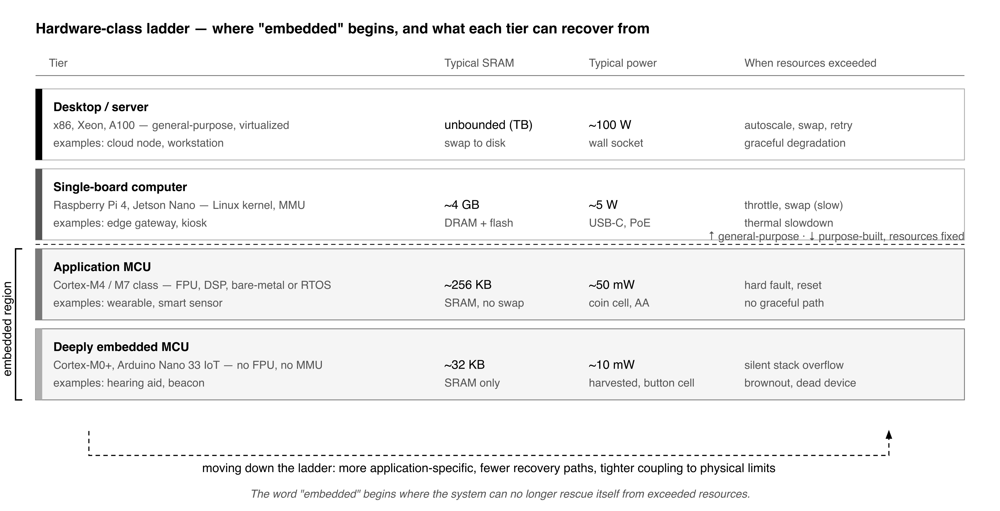
Figure 1.1 — Hardware-class ladder and the embedded boundaryThe operational consequence of that definition is the first principle you need: resources are fixed, and exceeding them is not recoverable. A laptop can swap memory to disk when RAM runs out. A cloud server can autoscale compute when demand spikes. A desktop GPU can pull three hundred watts from a wall socket without consequence. Embedded systems can do none of these things. They have the memory they shipped with. They have the processor they were designed around. They have a power budget set by a battery, an energy harvester, or a constrained supply rail. When you exceed those limits, the system does not slow down gracefully. It fails.
Now bring AI into that environment. The thing that makes integration hard is not a lack of skill on either side. It is a mismatch in what the two artifacts assume.
A neural network is general-purpose. A model trained to detect faces does not know it is going to run on a battery-powered camera. It does not care whether the processor has a floating-point unit, whether SRAM is shared with the communication stack, or whether the duty cycle of the sensing pipeline can support its compute load. The model’s resource requirements were fixed when it was trained — by its architecture, its layer sizes, its weight precision, its arithmetic — and those requirements do not negotiate. The embedded system, on the other hand, has its own fixed budget, set by cost, power, thermal envelope, and what the application actually does. Integration is the design problem you get when you try to fit a fixed-resource-demand artifact into a fixed-resource-supply environment.
Here is what that looks like at the bench.
Imagine a wearable health monitor — a wristband that tracks heart rate, activity, and sleep. It runs on a coin-cell battery that has to last fourteen days between charges. It has 256 KB of SRAM, 1 MB of flash, a 64 MHz microcontroller with no hardware floating-point unit. None of those numbers are negotiable. Industrial design wants the device small and light, so the battery has to be a coin cell. Cost targets keep the microcontroller cheap, which means no FPU. The fourteen-day battery life is the competitive threshold. The device must do its job inside those numbers or it doesn’t ship.
Now you want to add on-device arrhythmia detection with a small recurrent neural network. The model has been trained, achieves 94% accuracy on validation, requires 180 KB for weights, 60 KB for activation buffers during inference, and runs about 22 million multiply-accumulates per pass. The model runs. The question is whether it fits.
Memory: 180 KB plus 60 KB is 240 KB. You have 256 KB. That leaves 16 KB for the rest of the firmware — sensor drivers, Bluetooth stack, UI, power management. Tight, but with care, possible.
Compute: at 64 MHz with no FPU, the processor can sustain about 64 million integer operations per second. Floating-point operations have to be emulated in software, which costs a factor of ten or more in throughput. So 22 million floating-point multiply-accumulates becomes roughly 220 million equivalent integer operations, which is about 3.4 seconds of processor time per inference pass. The application requires inference every 30 seconds to catch arrhythmia events, so the processor is awake 3.4 seconds out of every 30 — an 11% duty cycle.
That duty cycle determines power. Suppose the processor draws 15 mA active and 5 µA asleep. Average current is roughly 1.7 mA. A 220 mAh coin cell will sustain that for about 130 hours — five days, not fourteen. The integration fails the battery-life constraint.
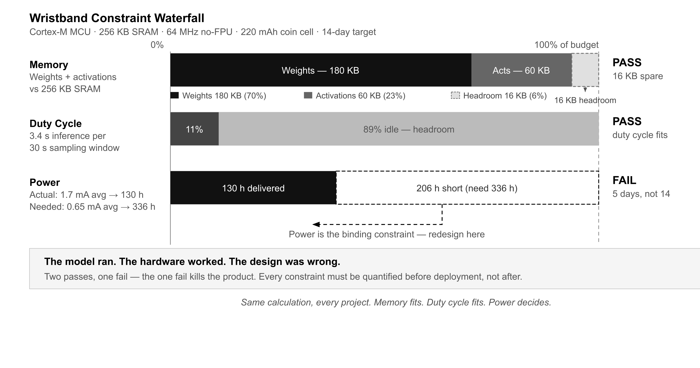
Figure 1.2 — Wristband constraint waterfall: power is the binding failureNotice what just happened. The model did not crash. It produced correct results. The hardware did not malfunction. The system performed exactly as designed, and the design was wrong, because the design was made without doing the calculation we just did. This is what the doorbell story actually was.
So why not just put the model in the cloud? That is the obvious move, and for a long time it was the dominant move. Alexa sends your voice to Amazon’s servers. Google Photos runs recognition in the cloud. Early autonomous vehicles uploaded sensor data for post-processing. The cloud has unbounded memory and unbounded compute, and you do not have to fight any of the math we just did. So why does this book exist at all?
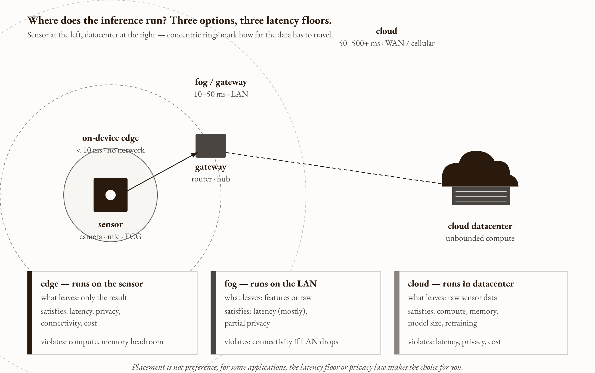
Figure 1.3 — Edge, fog, and cloud: three places inference can runBecause for an entire class of applications, the cloud architecture has stopped working — and the reasons it has stopped working are not engineering shortcomings that can be fixed by faster servers or better networks. They are properties of the application itself. Four of them, specifically.
Latency. Round-tripping a sensor reading to a server and back has a floor set by the speed of light, the network stack, and the queueing inside the server. On a fast local network the round trip is at least 50 ms; over cellular it can be hundreds. If the application is a robotic arm classifying a part on a moving conveyor with a 100 ms inspection window, the cloud round trip closes the window before the answer arrives. The application requires on-device inference not because the cloud is slow but because the cloud is too slow for this clock.
Privacy. Some data cannot leave the device. Cardiac wearables and seizure detectors handle protected health information governed by HIPAA in the United States and GDPR in Europe. Even with user consent, the regulatory and liability load of streaming raw physiological data to a server often makes cloud inference non-viable. The same logic applies to home-security cameras, workplace monitors, and many other domains. Run the model where the sensor is, and let only the result leave.
Connectivity. For some deployments the network is intermittent, expensive, or absent. Agricultural sensors in remote fields may see cellular service only when a vehicle drives by. Underwater inspection drones have no real-time uplink. Disaster-response robots enter environments where the infrastructure has failed. The model must run locally because the alternative is not slower inference; it is no inference.
Cost. Bandwidth costs money. A parking sensor that sends a few bytes an hour can run for years on a coin cell; the same sensor streaming video to a cloud detector cannot. For high-volume, low-margin deployments, the recurring cost of network transmission can exceed the cost of the hardware. On-device inference shifts cost from operational expense to capital expense, which for many products is the only way the deployment closes economically.
These four — latency, privacy, connectivity, cost — define the boundary where cloud AI stops working and edge AI becomes necessary. They do not determine whether edge AI is feasible, only whether it is required. Whether you can actually deliver it depends on whether your hardware can carry the model. That is where the four constraint categories come in, and these are the spine of the rest of the book.
Memory determines what you can store. A trained network is a large data structure: millions of weight parameters, layer configurations, activation buffers. All of it has to fit. Embedded processors typically have two memory regions. Flash is non-volatile, abundant, slow, and read-only at runtime. SRAM is fast, writable, and scarce — often kilobytes, not megabytes. Weights can live in flash, but the activations during inference have to live in SRAM. If activation memory exceeds available SRAM, the model cannot run, no matter how big your flash is.
Compute determines how fast you can run. Inference is a fixed sequence of operations — matmuls, convolutions, activations — and the time to complete one pass is set by the operation count, the processor’s throughput, and whether you have specialized hardware (FPU, NN accelerator, SIMD lanes) to exploit. Compute shows up as latency. For some applications the latency is soft — a few hundred milliseconds is fine. For others it is hard — miss the deadline and the result is useless.
Power determines how long you can run. Every operation costs energy. Every memory access costs energy. The energy comes from a finite source. If average power exceeds the available budget, the device’s battery shrinks below tolerance, the thermal envelope is violated, or the supply rail collapses. For battery-powered devices, power is usually the binding constraint, which is exactly the case the doorbell ran into.
Real-time performance determines whether you can meet deadlines. Real-time is not a synonym for fast. A real-time system is one where correctness depends not just on producing the right result but on producing it by a specific time. Soft real-time can tolerate occasional misses; hard real-time cannot. Inference complicates this because execution time can vary with input data, cache state, memory contention, and scheduler decisions. For hard real-time deployment, worst-case execution time has to be bounded and provable, which is hard for models with attention or conditional branches.
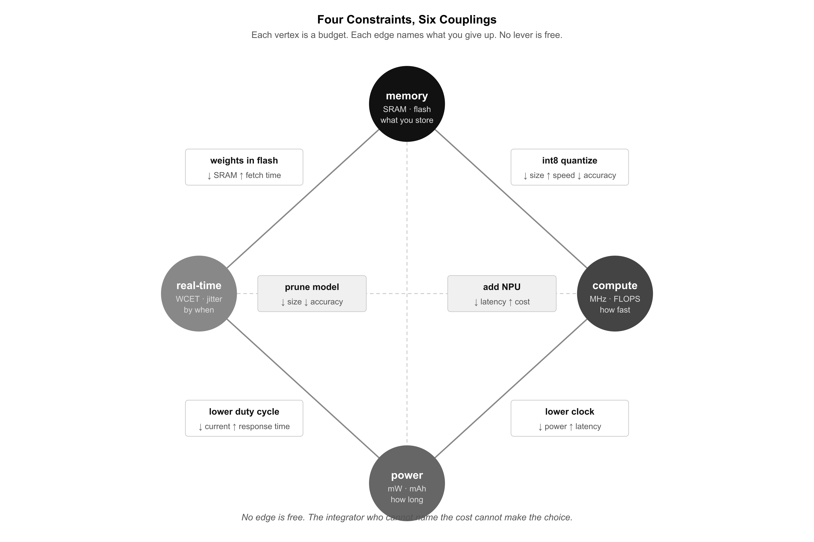
Figure 1.4 — Four constraints, six couplings: every lever costs somethingThese four are not independent. They couple in ways that matter. Quantizing weights from 32-bit float to 8-bit integer cuts memory and speeds up inference because there are fewer bytes to move, but it can degrade model accuracy. Offloading inference to a hardware accelerator cuts latency and power but adds cost and integration complexity. Running inference at a lower duty cycle reduces average power but increases response latency. Every design decision in embedded AI is a trade among these four, and the practitioner who cannot quantify the trade cannot make the decision.
To make the coupling concrete, take a keyword-spotter — a wake-word model listening for Hey, device. The model is a small CNN trained on audio spectrograms. 42,000 parameters. 180 KB of memory between weights and activations. 1.8 million ops per pass. Inference must finish within 100 ms to feel responsive. The device runs on a 1000 mAh lithium-ion battery and has to last a week of continuous listening.
Two candidate processors. Target A: ARM Cortex-M4 at 80 MHz, 256 KB SRAM, hardware FPU, 1 MB flash, 20 mA active, 10 µA asleep, $3 per unit. Target B: ARM Cortex-M0+ at 48 MHz, 32 KB SRAM, no FPU, 256 KB flash, 8 mA active, 2 µA asleep, $0.80 per unit.
Target A: the 180 KB fits in 256 KB SRAM. The FPU lets the processor sustain about 80 MFLOPS, so 1.8 million ops take roughly 22 ms — well inside the 100 ms latency budget. If inference runs once every 100 ms, the duty cycle is 22% and the average current is about 4.4 mA. A 1000 mAh cell at that draw lasts roughly 227 hours — about nine days. Tight on the one-week target, but workable.
Target B: 180 KB does not fit in 32 KB SRAM. The model fails the memory check before you even reach compute. Even if you somehow compressed it, the absence of an FPU means floating-point ops are emulated, throughput drops by an order of magnitude, the inference takes 375 ms or longer, and latency fails too.
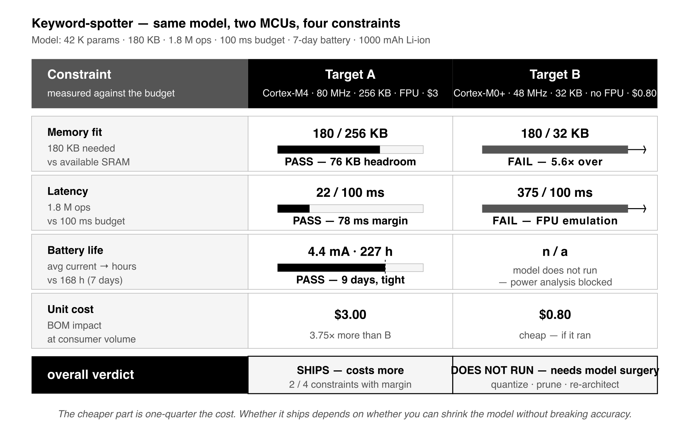
Figure 1.5 — Keyword-spotter feasibility scorecard: where the binding constraint movesTarget B is one-quarter the cost of Target A. For a consumer device with tight margins and high volume, that gap is decisive. So now you face a real engineering choice: accept the higher unit cost, or modify the model to fit. Modifying means quantizing weights to int8, pruning, switching to a depthwise-separable architecture — each of which changes accuracy. If accuracy drops below the application’s threshold, the savings buy you a product that does not work. That is the design space. Two surfaces — what the model demands and what the hardware can supply — and the question is whether they overlap.
When they do not overlap, you have three moves. Change the model. Change the hardware. Change the requirements. There is no fourth move. The doorbell team at the start of this chapter had a fourth move on their whiteboard — integrate and ship — and the universe declined to honor it.
The rest of this book is a toolkit for not making that mistake. Each chapter adds one dimension of analysis. By the end you should be able to take a sensing task, an application requirement, and a hardware target, and decide — with numbers, before any code is written — whether deployment is feasible, what model and deployment strategy will make it feasible if it is, and which trade-offs you have just chosen and which alternatives you have just declined.
That skill does not make you a machine-learning researcher. It does not make you an embedded-systems architect. It makes you a systems integrator who can reason across both domains. That is what the field needs, and that is what most of the field currently lacks.
The next chapter starts with the constraints themselves, in the units the datasheets are actually written in.
Project: TinyML Feasibility Toolkit (Python CLI)
What you’re building this chapter: The package
scaffold, the Application dataclass, and a CLI that loads a
YAML application spec and reports the four constraint targets.
Tool: Claude Code
The Prompt:
Set up a new Python package called `tinyml-feasibility`. By chapter 14 it will take a trained ML model and a target microcontroller spec and produce a deployment-feasibility report grounded in the four-constraint framework (memory, compute, power, real-time).
Scaffold:
- pyproject.toml (PEP 621, Python 3.10+, hatchling backend)
- src/tinyml_feasibility/__init__.py exposing __version__
- src/tinyml_feasibility/cli.py — Click-based CLI
- src/tinyml_feasibility/application.py — frozen Application dataclass with fields: name (str), description (str), latency_budget_ms (int), real_time_class (Literal["soft","firm","hard"]), memory_budget (nested dataclass with flash_kb and sram_kb, both int), power_budget_mw (float), accuracy_floor_pct (float), bom_ceiling_usd (float). Type hints on every field.
- src/tinyml_feasibility/schemas/application.example.yaml — a real worked example for a wildlife acoustic sensor or comparable application
- tests/test_cli.py with three passing tests
- README.md (one paragraph: what the toolkit will do by chapter 14)
- LICENSE (MIT)
CLI commands at this stage:
- `tinyml-feasibility --version` prints the version
- `tinyml-feasibility check-app <path-to-app.yaml>` loads the YAML and prints the four constraint targets in plain English
Tests:
- test_version_prints — exit code 0, stdout matches expected
- test_check_app_loads_example — runs against schemas/application.example.yaml, asserts all four budget values appear in output
- test_check_app_rejects_invalid — feeds malformed YAML, asserts exit code != 0 with a useful error message
Use the src/ layout. Run `pip install -e .` and `pytest` after writing — both must pass before you stop.What this produces: A pip-installable Python package
with tinyml-feasibility check-app <yaml> working
end-to-end, three passing tests, and a documented YAML schema.
How to adapt this prompt: - For your own
project: Edit application.example.yaml to describe
your application. Everything downstream reads from this file. - For
ChatGPT / Gemini: Works as-is — both handle multi-file scaffolding
well. - For Claude Code: Best fit. Use
--allowed-tools edit,bash; Claude Code installs and runs
pytest itself. - For a Claude Project: Put the
four-constraint framework and the YAML schema in the system prompt so
subsequent chapters don’t have to re-explain.
Connection to previous chapters: None — chapter 1.
Preview of next chapter: Chapter 2 adds the
Target dataclass (microcontroller specs from datasheets)
and a Constraints translator that converts
Application + Target into the four-constraint
object the rest of the toolkit reasons over.
The chapter sets up the central problem: AI was designed for unconstrained compute, and most real deployments are constrained. The model lives on the unconstrained side of that boundary.
Where the model genuinely helps: explaining the architectural choices that distinguish embedded AI from cloud AI, with worked numerical examples of memory and compute budgets.
Where the model does damage: producing specific recommendations about which neural architecture fits a given microcontroller. The recommendation depends on toolchain, vendor, and your specific application’s latency budget — none of which the model knows.
The rule: use the model for the architecture lecture, not the architecture choice.
These are the prompts that produced the chapter’s figures. Each is structural — it specifies what to compare and how the pieces fit, not which color or font. Visual styling is fixed by the brutalist constitution.
Build a four-row table-as-figure that ladders compute tiers from least to most constrained.
Rows top-to-bottom: Desktop / server, Single-board computer, Application MCU, Deeply embedded MCU.
Columns: Tier (with one example product, one example deployment), Typical SRAM, Typical power, When resources exceeded (recovery behavior).
Use a left edge marker per row that darkens as the tier becomes more general-purpose.
Draw a horizontal dashed line between row 2 and row 3 labeled "embedded boundary" — and a vertical bracket along the left side of the bottom two rows labeled "embedded region".
Keep the row band tall enough to fit three lines of text (tier name, hardware, examples).
Caption: "The word 'embedded' begins where the system can no longer rescue itself from exceeded resources."Reference implementation:
d3/chapter-01-when-ai-meets-constrained-hardware-fig-01.html
Render three horizontal stacked bars on a shared 0–100% budget axis.
Row 1 — Memory: segments are weights (180 KB, 70.3%), activations (60 KB, 23.4%), headroom (16 KB, 6.3%); verdict PASS.
Row 2 — Latency / duty: segments are active (3.4 s, 11.3%) and asleep (26.6 s, 88.7%); verdict PASS.
Row 3 — Power / battery: segments are delivered (130 h, 38.7%) and shortfall (206 h, 61.3%); verdict FAIL.
Each row has a left-side label naming the constraint and the underlying numbers, and a right-side verdict (PASS/FAIL plus one short reason). Mark the 100% budget line with a vertical dashed rule.
Below the bars, add a thin summary band: "The model ran. The hardware worked. The design was wrong."
Caption: "Memory fits. Latency fits. Power decides."Reference implementation:
d3/chapter-01-when-ai-meets-constrained-hardware-fig-02.html
Place a sensor node on the left and a cloud-datacenter node on the right of a wide canvas.
Centered on the sensor, draw three concentric rings: edge (smallest, solid), fog/gateway (medium, dashed), cloud (largest, dashed). Use scaleSqrt so the rings encode reachable distance, not raw radius.
Place a gateway node on the fog ring. Connect sensor → gateway with a solid arrow, gateway → cloud with a dashed arrow.
Label each ring near its upper arc with the placement name and its latency band: edge (<10 ms, no network); fog (10–50 ms, LAN); cloud (50–500+ ms, WAN/cellular).
Below the topology, three side-by-side annotation panels (edge / fog / cloud), each with: what physically leaves the device, what it satisfies, what it violates.
Caption: "Placement is physics, not preference."Reference implementation:
d3/chapter-01-when-ai-meets-constrained-hardware-fig-03.html
Lay out four vertices in a diamond: memory (top), compute (right), power (bottom), real-time (left).
Each vertex is a filled circle with the constraint name and a two-line subtitle (unit shorthand + the question it answers, e.g., compute / "MHz · FLOPS" / "how fast").
Connect all six pairs with edges. The four outer edges are solid; the two diagonals are dashed.
At each edge midpoint, place a small label box containing the named lever and the resulting trade:
memory↔compute: quantize int8 → bytes ↓ matmul ↑ accuracy ↓
compute↔power: lower clock → mA ↓ inference ↑
power↔real-time: lower duty cycle → avg current ↓ response ↑
memory↔real-time: weights in flash → SRAM ↓ fetch ↑ WCET harder
memory↔power (diagonal): prune weights → flash ↓ retraining cost
compute↔real-time (diagonal): NN accelerator → latency ↓ cost ↑
On hover, highlight the two vertices an edge connects.
Caption: "No edge is free."Reference implementation:
d3/chapter-01-when-ai-meets-constrained-hardware-fig-04.html
Build a two-column scorecard. Top header band names the targets:
Target A — Cortex-M4 · 80 MHz · 256 KB · FPU · $3
Target B — Cortex-M0+ · 48 MHz · 32 KB · no FPU · $0.80
Four rows underneath, each with a constraint label on the left and a result cell per target:
Memory fit: A 180/256 KB PASS (mini bar 70%) · B 180/32 KB FAIL (overflowing bar)
Latency: A 22/100 ms PASS · B 375/100 ms FAIL
Battery life: A 4.4 mA · 227 h PASS (with target marker at 168 h) · B n/a (model does not run)
Unit cost: A $3.00 · B $0.80 (3.75× cheaper)
Each result cell shows the number large, a short pass/fail clause, and where applicable a tiny horizontal bar with the budget mark. Use the same x-scale for the bar within each row so comparison is direct.
Final verdict band: A SHIPS, costs more; B DOES NOT RUN, needs model surgery.
Caption: "Two surfaces — what the model demands and what the hardware can supply."Reference implementation:
d3/chapter-01-when-ai-meets-constrained-hardware-fig-05.html
The ideas in this chapter didn’t appear from nowhere. Annie Easley wrote rocket-booster code in machine language for NASA’s Centaur upper stage — software so constrained that every byte was hand-counted, decades before “embedded AI” was a phrase.
Run this:
Who was Annie Easley, and how does her work on the Centaur upper stage at NASA Lewis Research Center connect to writing code under hard memory and timing constraints? Three paragraphs. End with the single most surprising thing about her career.→ Search “Annie Easley” on Wikipedia. See what the model got right, got wrong, or left out.
Now make the prompt better. Try one of these:
What changes? What gets better? What gets worse?
The skill the previous chapter ended on — being able to look at a model and a hardware target and decide, with numbers, whether they can live together — depends on being able to read a datasheet for what it does not directly say. Datasheets are not written for AI deployment. They were written when the question being asked was can this part run a PID loop and a UART at the same time, and they answer that question well. The numbers you need for AI are the same numbers that have always been there. The questions you ask of them are different.
This chapter is about that translation. There is no new physics in it. There is also nothing in it you cannot already do, separately, with the parts of embedded engineering you have. The only new thing is putting the questions in the order that AI deployment requires.
Start with memory.
A neural network is a data structure. Weights, biases, layer configurations, intermediate buffers. All of it has to live somewhere in the device’s memory, and somewhere is not a single number. Embedded memory comes in regions, and where data lives determines what it can do. The question is not does the model fit; it is does the model fit in the right kind of memory, with enough headroom for the rest of the system.
Take the nRF52840, a popular Bluetooth Low Energy microcontroller. The datasheet says 1 MB of flash and 256 KB of RAM. At first glance that sounds generous. Now read it through the lens of inference.
Flash is non-volatile, abundant, slow, and read-only at runtime. It is where the model’s weights live, baked into the firmware binary at build time. A model with 300,000 parameters stored as 32-bit floats is 1.2 MB — over budget on this part before you have shipped a single line of application code. Quantize the same model to 8-bit integers and it becomes 300 KB, which fits comfortably alongside the firmware and leaves room for the rest of the build.
RAM is volatile, fast, writable, and scarce. It is where the activations live during inference — the intermediate tensors that flow from one layer to the next. Activations are not the weights. They are the working memory of the forward pass, and they have to coexist with the application heap, the application stack, the RTOS, and any communication stack the part is also running. The Bluetooth stack on the nRF52840 takes 20–40 KB depending on configuration. If the model’s activation buffer is 180 KB and the BLE stack is 30 KB, you have 46 KB of RAM left for everything else. Workable, but tight. If the activation buffer is 200 KB, the deployment fails on RAM even though the model itself “fits” in total memory.
External memory complicates the picture. Some parts — the ESP32-S3 is the canonical example — support external PSRAM up to 32 MB through the package. That dramatically increases what is addressable, but external memory is slower than on-chip SRAM and costs more energy per access. Move activations to external PSRAM and every layer reads inputs from across an external bus and writes outputs back across the same bus, which inflates both latency and energy. The model still runs. It just runs differently.
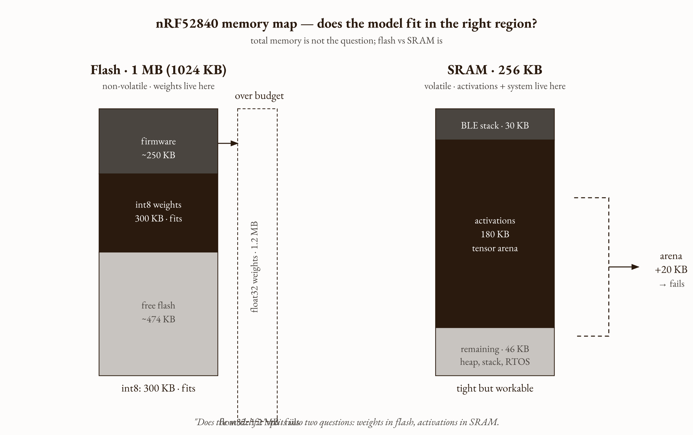
Figure 2.1 — nRF52840 memory map: where weights and activations actually live.So memory is not a hard wall — it is a trade-off surface. To answer it for any candidate hardware you need two numbers from the model (weights size, activation size) and three numbers from the part (flash, on-chip SRAM, external memory if any), and one from the system (how much memory other functions already consume). Most TinyML frameworks will give you the activation number directly; TensorFlow Lite for Microcontrollers exposes a tensor arena size that tells you exactly how much RAM the inference will need. If that number plus everything else exceeds available SRAM, the deployment does not happen.
Compute is the second question, and the gap between clock speed and useful neural-network throughput is the gap most engineers underestimate the first time.
Clock speed tells you cycles per second. It does not tell you multiply-accumulates per second. The ratio between the two depends on the instruction set, the pipeline, whether there is hardware floating-point or integer multiply-accumulate, whether SIMD lanes exist and whether your code uses them, and how much of the cycle budget gets eaten by memory access, instruction fetch, and pipeline stalls. A Cortex-M4 at 100 MHz with an FPU has a theoretical peak of 100 MMAC/s for single-precision floats; a realistic sustained number is closer to 60–70 MMAC/s once you account for memory traffic and the code not being perfectly tight. The same core, running 8-bit integer code with the ARM DSP/SIMD extensions, can hit several times that — if the code is written to use them, which is not automatic.
Compare three real targets. The STM32F411 (Cortex-M4 at 100 MHz, with FPU): about 60–70 MMAC/s sustained for float32. The STM32H7A3 (Cortex-M7 at 280 MHz, larger caches, deeper pipeline, double-precision FPU): about 180–220 MMAC/s sustained. The Raspberry Pi Zero 2 W (quad Cortex-A53 at 1 GHz with NEON): on int8, optimized, several giga-ops per second. A model that runs 50 million MACs per inference takes roughly 830 ms on the F411, 250 ms on the H7, and 20–30 ms on the Pi. If your latency budget is 100 ms, the F411 is dead before you start, the H7 is plausible if you can hit your sustained throughput, and the Pi is comfortable — but you have just paid for it in power and complexity.
The arithmetic you need is straightforward. Get the operation count from the model — most frameworks report it; for fully connected layers it is (input size) × (output size), and for convolutions it is (output H) × (output W) × (output channels) × (kernel H) × (kernel W) × (input channels). Get the sustained throughput from a benchmark or by profiling. Divide. Inference latency = total operations / sustained throughput. If a vendor claims 400 GOPS for some “AI acceleration” mode, trust the claim only after multiplying by a utilization factor (typically 0.5–0.7) for what real code on a real model achieves, and only after profiling on hardware. Marketing numbers describe the silicon; profiling numbers describe your model.
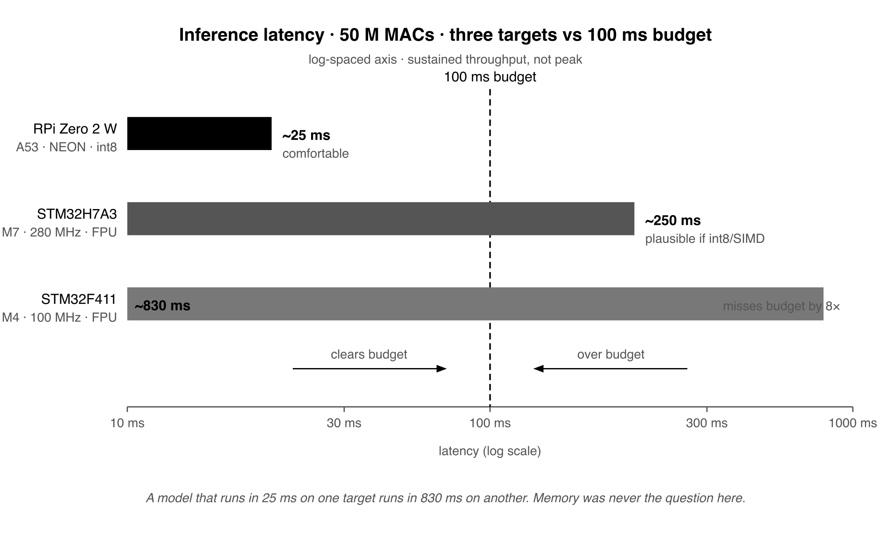
Figure 2.2 — Inference latency for a 50 M-MAC model across three targets vs a 100 ms budget.Power is the third question, and it is usually the binding one for battery-powered devices.
Power is not a single number. It is a profile that varies with operating mode, clock, peripheral activity, and duty cycle. A part running inference draws one current. The same part with peripherals on but the CPU asleep draws a different current. The same part in deep sleep draws a third, much smaller current. The total energy consumed is the integral of that profile over time, and average power is the time-weighted sum:
$$ I_{\text{avg}} = \frac{I_{\text{active}} \cdot t_{\text{active}} + I_{\text{idle}} \cdot t_{\text{idle}}}{t_{\text{active}} + t_{\text{idle}}} $$
Take a wearable activity tracker on an nRF52840. Inference runs every five seconds and takes 80 ms; the rest of the time the part is in idle mode. Datasheet currents: 5.3 mA active, 2.8 µA idle. The sum runs as
$$ I_{\text{avg}} = \frac{5.3\ \text{mA} \cdot 0.08\ \text{s} + 0.0028\ \text{mA} \cdot 4.92\ \text{s}}{5\ \text{s}} \approx 0.088\ \text{mA}. $$
A 220 mAh coin cell at that draw lasts about 2,500 hours — 104 days — well beyond the two-week target.
Now suppose accuracy demands push the model deeper and inference latency doubles to 160 ms. Same arithmetic gives 0.172 mA average and about 53 days of battery — still fine.
Now suppose the application changes and inference has to run every second to catch shorter activities. Same 160 ms inference, same currents, new duty cycle:
$$ I_{\text{avg}} = \frac{5.3\ \text{mA} \cdot 0.16\ \text{s} + 0.0028\ \text{mA} \cdot 0.84\ \text{s}}{1\ \text{s}} \approx 0.85\ \text{mA}. $$
The coin cell now runs about 259 hours, eleven days, which is below the two-week threshold. The deployment fails on power. Notice what changed: the model did not change, the hardware did not change, the firmware did not change. The application asked the inference to run more often. That is the entire delta, and it is enough to take the device out of spec.
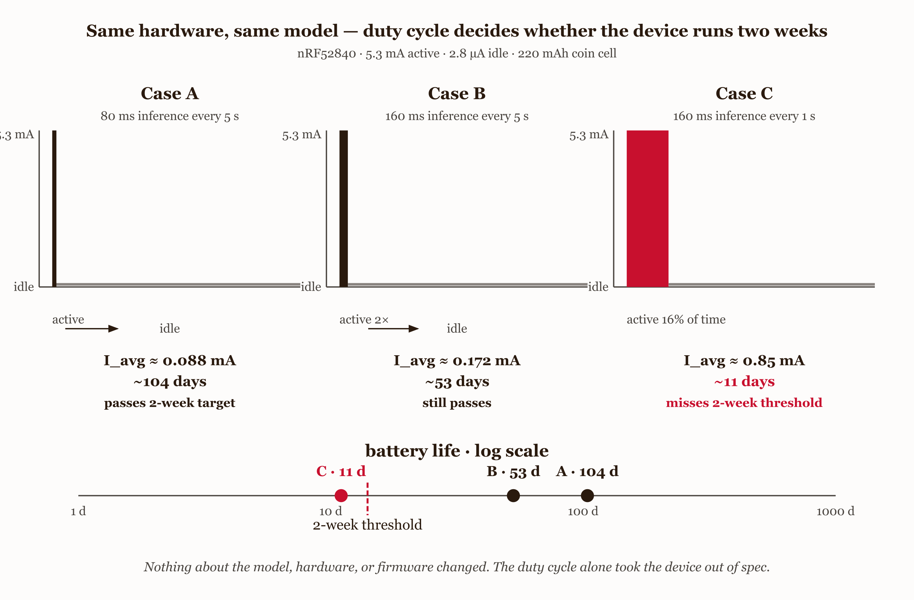
Figure 2.3 — Duty cycle decides battery life: same hardware, same model, three deployments.Power couples to memory and to compute, and the coupling matters. Reducing inference latency by clocking faster increases active current. Moving activations to external PSRAM saves on-chip RAM but every external access costs more energy than an on-chip access, so power goes up. Quantizing to int8 reduces bytes moved per operation, which reduces both cycles and the energy per cycle. Every optimization that improves one constraint touches the others.
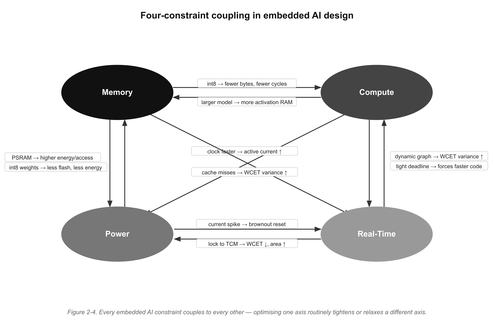
Figure 2.4 — The four constraints are a connected surface, not independent axes.Power also has a peak constraint, distinct from average. A coin cell with 220 mAh capacity is not the same as a coin cell that can deliver 10 mA on demand. CR2032 cells, for instance, have high internal resistance — the maximum sustained current is on the order of 3 mA, and inference routines that draw more than that pull the supply voltage down, brown-out the part, and reset the system. The fix is a larger battery, a bulk capacitor sized to supply the peak, a slower clock, or a longer inference spread over more cycles. Average power tells you how long the device runs. Peak power tells you whether it runs at all.
Real-time is the fourth question, and the thing it tests is not how fast inference runs on average — it is how slow it can possibly run.
A real-time system is one whose correctness depends on when a result arrives, not just on what the result is. Soft real-time tolerates the occasional late result. Hard real-time does not — a missed deadline is a system failure. Most embedded AI is soft real-time: a smart thermostat with a slow inference is a slow thermostat, not a broken one. Some embedded AI is hard real-time: a motor controller that uses inference to detect bearing faults has a window during which the alert can prevent damage and after which the damage is done. A medical device that detects arrhythmia has a window during which therapy is effective.
Inference is hard to bound. Execution time depends on the input data (some paths short-circuit, some trigger expensive branches), on cache state (whether weights and activations are resident), on memory contention (other tasks or DMA competing for the bus), and on interrupt latency (whether something else can preempt the inference). Worst-case execution time analysis for traditional embedded code is mature, with tools that model pipelines and caches. WCET for neural network code is an active research area without settled practice — the code is large, library-heavy, and full of dynamic patterns.
The pragmatic approach for hard real-time is to make the problem easier rather than to solve the harder version. Use a fixed-point or integer-only network with no dynamic control flow so every layer does the same work regardless of input. Disable interrupts during inference, or run inference at the highest priority so it cannot be preempted. Lock weights and activations into tightly coupled memory so cache misses are not part of the worst case. Profile inference on adversarial inputs that try to elicit the worst case, then add safety margin — typically 20–50% over the measured maximum — and treat the result as the WCET. If you cannot bound the worst case to the deadline with margin, you do not deploy in hard real-time.
A worked example pulls all four questions together.
You are designing a smart-agriculture sensor that takes a 96×96 RGB image every ten minutes, classifies it as healthy / diseased / pest-damaged with an on-device model, and reports results over LoRaWAN once per hour. The whole device must run six months on a 5,000 mAh battery; solar charging is not available because the sensor sits under a tree canopy. You have a MobileNetV2-based classifier with 300,000 parameters (1.2 MB float32, 300 KB int8) and 45 million MACs per inference. Profiled activation memory is 200 KB. Three candidate platforms.
| Platform | Core | Clock | SRAM | Flash | AI accel | Active I | Sleep I | Cost |
|---|---|---|---|---|---|---|---|---|
| ESP32-S3 | Dual Xtensa LX7 | 240 MHz | 512 KB | 8 MB | vector inst., ~400 GOPS claimed | 40 mA | 10 µA | $4.50 |
| STM32L4R5 | Cortex-M4 + FPU | 120 MHz | 640 KB | 2 MB | none | 12 mA | 0.4 µA | $6.00 |
| RPi Zero 2 W | Quad Cortex-A53 | 1 GHz | 512 MB LPDDR2 | (SD card) | NEON SIMD | ~150 mA idle | n/a | $15.00 |
Memory is fine on all three — 300 KB of int8 weights and 200 KB of activations fit comfortably in every option’s RAM and flash. Memory is not the binding constraint here.
Compute is also fine on all three for this duty cycle. The ESP32-S3, on its claimed acceleration, computes 45 M MACs in roughly 100–300 ms in practice. The STM32L4R5 at 120 MHz with FPU sustains around 70 MMAC/s for float32, so float inference is about 640 ms; int8 with SIMD roughly halves that. The Pi handles it in under 10 ms with NEON. The application asks for one inference every ten minutes, so any of these is far inside the latency budget.
Power is where the platforms separate. Inference takes about 0.3 s per ten-minute cycle, so the active duty cycle is 0.3 / 600 = 0.05%. For the ESP32-S3:
$$ I_{\text{avg}} = \frac{40\ \text{mA} \cdot 0.3\ \text{s} + 0.01\ \text{mA} \cdot 599.7\ \text{s}}{600\ \text{s}} \approx 0.03\ \text{mA}. $$
5,000 mAh at 0.03 mA is about 19 years, which says less about the ESP32-S3 than about how completely the sleep current dominates when the active duty cycle is this small.
For the STM32L4R5, lower active current and far lower sleep current give an even smaller average — fractions of a microamp once you actually do the integration honestly — and battery self-discharge and LoRaWAN transmit overhead become the binding terms long before the part itself runs out of power.
For the Raspberry Pi Zero 2 W, there is no true deep-sleep mode. Best case it idles at around 150 mA. At 150 mA continuous, 5,000 mAh runs out in about 33 hours. Even with aggressive optimization to 50 mA idle, battery life is on the order of four days. Six months is not on the table. The Pi disqualifies itself on power, not on compute or memory.
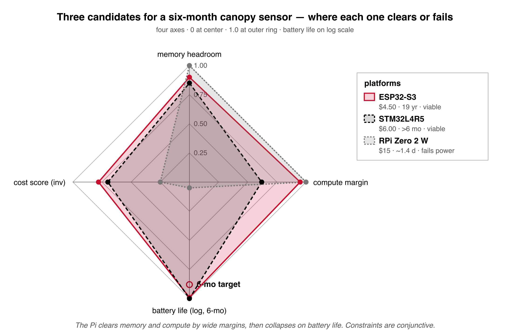
Figure 2.5 — Three candidates, four axes: the Pi collapses on power while two MCUs occupy the viable region.So the choice collapses to ESP32-S3 versus STM32L4R5. Both meet all constraints. The STM32 has lower cost and lower active power; the ESP32 has the AI accelerator and a richer software ecosystem if the model needs to grow. The decision moves to secondary factors — toolchain familiarity, camera-interface support, LoRaWAN library quality, and whether you trust the ESP32’s claimed acceleration enough to bet a six-month deployment on it without profiling first. None of those factors will let you change the four answers above. The constraints define the set of viable platforms; the secondary factors decide which of the viable platforms is the right one.
That is what constraints as design variables means. Memory, compute, power, real-time — each is a number you can compute from the datasheet and the model. Together they are a four-dimensional surface, and the deployment lives at the points on the surface where all four are satisfied at once. Most points on the surface are not such points. The job of the next chapter is to give you the model side of the equation — what makes inference cheap or expensive, what an architecture’s resource demand actually depends on — so the calculations in this chapter have something on the other side of the equals sign.
Figure 2.6 — Decision flowchart: does this model deploy on this
part?
Project: TinyML Feasibility Toolkit What
you’re building this chapter: A Target dataclass
with a real microcontroller catalog, and a Constraints
translator that converts Application + Target
into the four-constraint object the toolkit reasons over.
Tool: Claude Code
The Prompt:
Extend the tinyml-feasibility package (chapter 1 set up the scaffold and Application).
Add two modules:
1. src/tinyml_feasibility/target.py
Frozen Target dataclass with fields: name, core (e.g., "Cortex-M4"), clock_mhz, sram_kb, flash_kb, active_current_ma_per_mhz, sleep_current_ua, has_accelerator (bool), accelerator_tops (float, 0.0 if none), cost_usd.
Provide a TARGETS dict mapping name → Target instance, populated from datasheets for at least: STM32L4R5, STM32H743, STM32N6, nRF52840, ESP32-S3, RPi-Zero-2W, Arduino-Nano-33-BLE-Sense.
Every numeric value gets a comment with the datasheet URL it came from. NO FABRICATION — if a number can't be sourced, leave it None and emit a warning.
2. src/tinyml_feasibility/constraints.py
Constraint dataclass: category (Literal["memory","compute","power","real_time"]), axis (str, e.g., "sram_kb", "latency_ms"), budget (float | str), source (str pointing to where the budget came from, e.g., "application.memory_budget.sram_kb").
Function `derive_constraints(app: Application, target: Target) -> list[Constraint]` produces one Constraint per axis: memory:flash, memory:sram, compute:latency, power:average, real_time:class.
CLI extension:
- `tinyml-feasibility list-targets` prints each Target as a table (name, core, clock, sram, flash, sleep current, cost)
- `tinyml-feasibility constraints --app <yaml> --target <name>` prints the derived Constraint list with sources
Tests:
- test_target_lookup — TARGETS["STM32L4R5"] returns a Target with sleep_current_ua < 1.0
- test_constraints_derived — for the example app + STM32L4R5, derive_constraints returns exactly 5 Constraint instances covering all four categories
- test_constraints_traceable — every Constraint.source is a non-empty string
Run pytest. All tests pass before you stop.What this produces: A microcontroller catalog (with traceable datasheet citations) and a translator that turns application requirements + target into the structured Constraint list the toolkit will use everywhere downstream.
How to adapt this prompt: - For your own
project: Add your target board to TARGETS by reading its datasheet.
Note Claude is good at extracting datasheet numbers but verify each one
against the source PDF before committing. - For ChatGPT /
Gemini: Works as-is. - For Claude Code: Use
--allowed-tools edit,bash,web_search so it can pull
datasheet values. Always sanity-check the citations before merging. -
For a Claude Project: Add the Target dataclass schema to the
system prompt; this saves chapters 5–10 from re-deriving it.
Connection to previous chapters: Chapter 1’s
Application is now consumed alongside Target
by derive_constraints. The four-constraint object becomes
the contract every later module reads.
Preview of next chapter: Chapter 3 adds
model.py to load a TFLite model file and extract parameter
count, MAC count, layer types, and the largest activation tensor — the
inputs every memory/compute/power module will need.
Use these prompts with Claude to generate interactive D3 v7 versions of the figures in this chapter. Each produces a standalone HTML file you can open in a browser and modify freely.
Prerequisites: Load brutalist/CLAUDE.md
and brutalist/DESIGN.md into your Claude project context
before using these prompts. They define the stack, naming conventions,
color system, and typography the figures use.
Build a two-panel D3 v7 figure showing two stacked vertical bars side
by side. Left panel: 1 MB flash budget for the nRF52840, with segments
for firmware (250 KB), int8 weights (300 KB, primary emphasis), and
remaining free flash (~474 KB). Add a dashed ghost bar next to the stack
representing the 1.2 MB float32 weights case, labeled “over budget” in
var(--color-red). Right panel: 256 KB SRAM budget, with
segments for BLE stack (30 KB), activation arena (180 KB, primary
emphasis), and remaining headroom (46 KB). Each segment carries an
inline label with its name and KB value. y-axis ticks in KB; zero
baseline on both panels. Tooltip on each segment shows segment name and
KB. Standalone HTML, D3 v7 from the pinned CDN, inline CSS using
var(--color-*), EB Garamond / Inter / JetBrains Mono fonts,
prefers-color-scheme: dark support, ResizeObserver redraw,
role=“img” with title and desc.
Reference implementation:
d3/chapter-02-embedded-constraints-as-design-variables-fig-01.html
Build a single horizontal bar chart on a log-scaled x-axis. Three
rows: RPi Zero 2 W (25 ms, var(--color-ink),
“comfortable”), STM32H7A3 (250 ms, var(--color-secondary),
“plausible with int8/SIMD”), STM32F411 (830 ms,
var(--color-red), “misses budget by 8×”). x-domain
[10, 1000] ms with log-spaced tick values at 10, 30, 100,
300, 1000. Overlay a dashed vertical line at 100 ms labeled “100 ms
budget” in var(--color-ochre). Each bar carries its value
and a one-line verdict at the bar end. Left-axis labels show target name
and a one-line core/clock subtitle. Tooltip on hover. Standalone HTML,
D3 v7, inline CSS with CSS variables, EB Garamond / Inter / JetBrains
Mono, dark-mode media query, ResizeObserver redraw, accessible
markup.
Reference implementation:
d3/chapter-02-embedded-constraints-as-design-variables-fig-02.html
Build a three-panel figure plus a summary log strip below. Each top
panel is a current-vs-time strip for an nRF52840 wearable case: Case A
(80 ms active / 5 s period, I_avg ≈ 0.088 mA, 104 days, passes), Case B
(160 ms / 5 s, I_avg ≈ 0.172 mA, 53 days, passes), Case C (160 ms / 1 s,
I_avg ≈ 0.85 mA, 11 days, fails). Each strip shows a tall narrow
rectangle for the active pulse and a thin baseline for idle. Fail case
uses var(--color-red); passing cases use
var(--color-ink). Below the strips, a single log-scaled
days axis from 1 to 1000 with dot markers for the three cases at 104,
53, and 11 days, and a dashed line at 14 days labeled “2-week threshold”
in var(--color-red). Tooltip on pulse and on each dot.
Standalone HTML, D3 v7, CSS variables, EB Garamond / Inter / JetBrains
Mono, dark-mode and reduced-motion media queries, ResizeObserver redraw,
accessible markup.
Reference implementation:
d3/chapter-02-embedded-constraints-as-design-variables-fig-03.html
Build a single-panel node-link diagram. Four ellipse nodes at the
corners of an implicit square: memory (top-left), compute (top-right),
power (bottom-left), real-time (bottom-right). Each node fill is
var(--color-ink), labels in
var(--color-white). Draw ten directed curved arrows between
nodes (both directions on each edge plus two diagonals), each carrying a
short labeled trade-off such as “int8 quantize → −bytes, −cycles”,
“clock faster → +active current”, “PSRAM → +energy/access”, “lock to TCM
→ −WCET, +area”. The clock-faster diagonal is highlighted in
var(--color-red). Hover on any edge highlights the arrow
and label and shows a tooltip naming the source-to-target pair.
Standalone HTML, D3 v7, CSS variables, EB Garamond / Inter, dark-mode
media query, ResizeObserver redraw, role=“img” with title and desc.
Reference implementation:
d3/chapter-02-embedded-constraints-as-design-variables-fig-04.html
Build a four-axis radar chart with axes for memory headroom (top),
compute margin (right), battery life on a log scale (bottom), and
inverse cost score (left). Plot three overlapping polygons normalized to
[0, 1] per axis: ESP32-S3 (var(--color-red),
viable), STM32L4R5 (var(--color-ink), viable, dashed
stroke), RPi Zero 2 W (var(--color-secondary), fails on
battery, dotted stroke). Concentric polygon rings at 0.25, 0.50, 0.75,
1.00. Mark the six-month battery target on the battery axis with a red
circle and label “6-mo target”. Right-side legend listing each platform
with cost, projected life, and pass/fail. Tooltip on each polygon vertex
showing platform name and axis score. Standalone HTML, D3 v7, CSS
variables, EB Garamond / Inter / JetBrains Mono, dark-mode media query,
ResizeObserver redraw, accessible markup.
Reference implementation:
d3/chapter-02-embedded-constraints-as-design-variables-fig-05.html
Build a horizontal flowchart of four sequential gate diamonds:
memory, compute, power, real-time. Each diamond carries the gate name
and the two questions it asks (e.g., “weights fit flash? arena+system
< SRAM?”). The yes branch links each gate to the next along the top
in var(--color-ink) and terminates in a “VIABLE — deploy”
box after gate four. The no branch drops each gate down to a model-side
iteration box in var(--color-red) listing three concrete
actions (e.g., “quantize weights”, “prune layers”, “shrink activations”)
and a “→ retry from gate N” line. Below the iteration row, a footer bar
reads “if no iteration closes the gap — change the part, change the
model class, or change the requirement”. Clicking a gate highlights it
in var(--color-red). Tooltip on hover. Standalone HTML, D3
v7, CSS variables, EB Garamond / Inter, dark-mode and reduced-motion
media queries, ResizeObserver redraw, accessible markup.
Reference implementation:
d3/chapter-02-embedded-constraints-as-design-variables-fig-06.html
The ideas in this chapter didn’t appear from nowhere. Lynn Conway co-wrote the textbook that turned chip design from black art into a set of design rules — turning silicon constraints into variables you could reason about, decades before tinyML.
Run this:
Who was Lynn Conway, and how does her work on VLSI design methodology with Carver Mead connect to treating hardware constraints as design variables? Three paragraphs. End with the single most surprising thing about her career.→ Search “Lynn Conway” on Wikipedia. See what the model got right, got wrong, or left out.
Now make the prompt better. Try one of these:
What changes? What gets better? What gets worse?
Open a .tflite file in a hex editor. You see a binary
blob — structured data, not executable code. Somewhere in those bytes
are floating-point numbers arranged in matrices, integers describing
tensor shapes, and metadata specifying how data flows through a graph of
operations. This file is the artifact you will deploy. It was produced
by a training process you may never run, on datasets you may never see,
on servers with resources your target part cannot imagine. None of that
matters once the file exists. What matters is that the file is now a
fixed data structure with known size, known operations, and a knowable
cost to execute.
The job of this chapter is to give you the literacy to reason about that artifact. Not to train it — that is the machine-learning engineer’s job. To read it as a design object whose resource demands you can pull out of its specification, the way you pulled hardware constraints out of a datasheet last chapter. This is ML literacy for integration, not for invention. It is enough.
A neural network is a function approximator. You give it inputs; it produces outputs; the relationship between the two is determined by parameters that were learned from data. Supervised learning is the most common way to produce those parameters. You collect input-output pairs where the outputs are labeled — images with category labels, audio spectrograms with word labels, sensor readings with normal/fault labels — and a training algorithm adjusts the parameters iteratively to make the model’s predictions match the labels. After enough iterations, on inputs the model has not seen before, the predictions are usually right.
Then training stops. The parameters freeze. The model becomes, functionally, a deterministic lookup: given any input from the distribution it was trained on, it produces a prediction by running its inputs through that fixed set of parameters. Those parameters are what you store in flash. Their count and precision determine the model’s size on disk. Training happened once, on a GPU server, in hours or days. Inference happens repeatedly, on your part, with the budget Chapter 2 quantified. The literature sometimes blurs the two — deep learning on microcontrollers almost always means inference on microcontrollers, because training in 256 KB of RAM is impractical for all but the smallest models. Your problem is inference. Treat training as a black box upstream of you.
Inside the model, the architecture is a directed graph. The most common shape is a feedforward network in which data flows through a sequence of layers from input to output. Each layer carries two kinds of data. Weights (the learned parameters) are fixed after training. Activations (the intermediate results computed at runtime) are not — they are what the layer computes from its input and passes to the next layer. Weights live in flash. Activations live in RAM. The total weight count sets your flash budget. The peak activation size sets your RAM budget. Two different numbers, two different memory regions, both required.
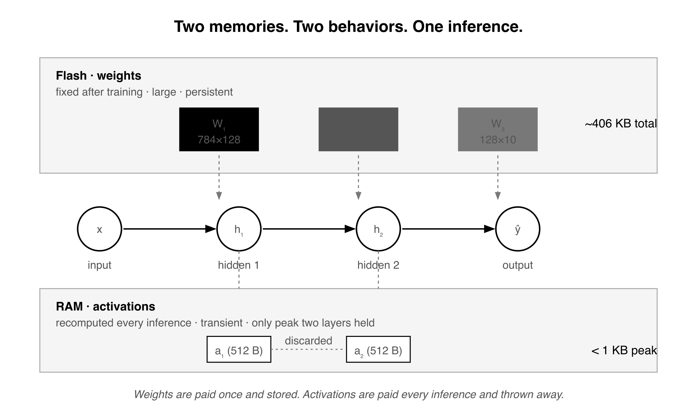
Figure 3.1 — Weights to flash, activations to RAM.To make this concrete, take a small feedforward network: 784 input neurons (a 28×28 grayscale image flattened), one hidden layer of 128 neurons, an output layer of 10 classes. The hidden layer has a weight matrix connecting every input to every hidden unit: 784 × 128 = 100,352 weights, plus 128 biases. As float32, that is about 401 KB. The output layer is 128 × 10 = 1,280 weights plus 10 biases — about 5 KB. Total weights: ~406 KB, easily inside a 1 MB flash. The activations, by contrast, are tiny: 128 floats out of the hidden layer (512 bytes), 10 floats out of the output (40 bytes). Under 1 KB peak activation memory.
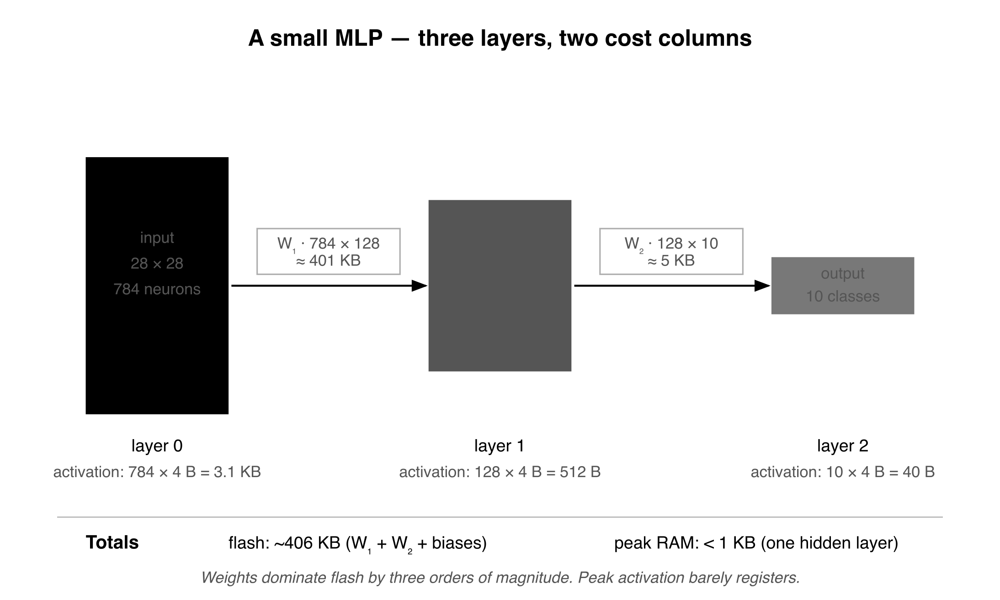
Figure 3.2 — A small MLP: three layers, two cost columns.That ratio — weights huge, activations tiny — flips when you scale up. A convolutional network for image classification has dozens of layers and produces large activation tensors at every step. Activation memory can dominate weight memory by an order of magnitude.
Inference itself is a forward pass. You load the input, hand it to the first layer, compute that layer’s output, hand the output to the next layer, and repeat. Each layer does two things: a linear transformation followed by a nonlinear activation function. The linear part is a matrix multiplication for fully connected layers, a convolution for convolutional layers — this is where the weights are used. The nonlinear part is applied element-wise to the output: ReLU (replace negatives with zero), sigmoid, tanh, and a few others. ReLU is cheap — one comparison per element. Sigmoid and tanh involve exponentials, which are noticeably more expensive on processors without hardware support. The choice of activation function matters more in embedded inference than in cloud inference for exactly this reason.
The operation count for a fully connected layer is (input size) × (output size) multiply-accumulates. For the small network above, that is about 101,600 MACs total — at 60 MMAC/s sustained, roughly 1.7 ms of inference. At 10 MMAC/s (a slower core, or float emulated on a no-FPU part), about 10 ms. The cost is the operation count multiplied by the time per operation. Architecture sets the first; processor sets the second. Together they set the latency.
Fully connected layers are simple but bad for image data. A 224×224 RGB image is 150,528 pixels; a fully connected layer connecting that to even 128 output neurons would need 19 million weights — 76 MB as float32, which is dead on arrival for most embedded targets. Convolutional layers solve this by exploiting spatial locality. Instead of connecting every input to every output, a convolutional layer applies a small filter — say 3×3 — that slides across the image, computing a weighted sum at each position, and reuses the same filter weights across the whole image. Nine weights per filter, times the number of filters, instead of one weight per pixel-output pair. The parameter count drops by orders of magnitude, and the 2D spatial structure of the image is preserved in a way the flat-vector layer cannot.
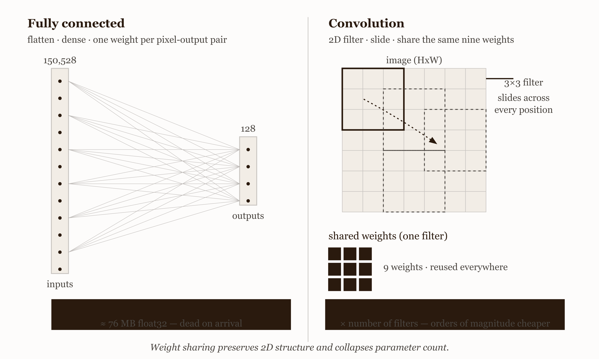
Figure 3.3 — Fully connected versus convolution.The operation count for a convolutional layer is (output H) × (output W) × (output channels) × (kernel H) × (kernel W) × (input channels). For a 224×224 RGB input with 32 output channels and a 3×3 kernel, that is 224 × 224 × 32 × 3 × 3 × 3 ≈ 43.6 million MACs. Expensive — but far cheaper than the equivalent fully connected layer, and accurate enough on real images that the family of convolutional neural networks (CNNs) has dominated embedded vision for a decade.
A typical CNN stacks several convolutional layers (each extracting features), interleaves them with pooling layers that reduce spatial resolution by taking, say, the maximum value in each 2×2 region, and ends with a few fully connected layers that turn the spatial feature maps into class predictions. A well-designed CNN for a 96×96 input can do useful classification with 200,000 to 500,000 parameters and fit in a couple of megabytes of flash when quantized.
The two important efficient-CNN ideas to know by name are depthwise separable convolution and the MobileNet family that uses it. A standard 3×3 convolution with 32 input channels and 64 output channels does 3 × 3 × 32 × 64 = 18,432 multiplications per output pixel — combining spatial filtering and channel mixing in one operation. Depthwise separable splits that into two cheaper steps: a depthwise convolution that filters each input channel independently (3 × 3 × 32 = 288 mults per output pixel), followed by a 1×1 pointwise convolution that mixes channels (1 × 1 × 32 × 64 = 2,048 mults per output pixel). Total: 2,336, which is roughly an eighth of the standard convolution.
![Two stacked block diagrams. Top row labeled standard 3-by-3 convolution: one input tensor (32 channels) feeds a single block that produces a 64-channel output; right-hand cost reads 3 times 3 times 32 times 64 equals 18,432 mults per pixel. Bottom row labeled depthwise separable: input passes through a depthwise 3-by-3 block (3 times 3 times 32 equals 288), an intermediate 32-channel tensor, then a pointwise 1-by-1 block (1 times 1 times 32 times 64 equals 2,048), to a 64-channel output. Total callout reads 288 plus 2,048 equals 2,336 mults per pixel, roughly 8 times cheaper than standard.](../images/chapter-03-ml-for-embedded-engineers-fig-04.png) Figure 3.4 — Standard versus depthwise separable convolution.
Accuracy loss for many vision tasks is small; the cost reduction is
large. MobileNetV2 — 3.5 million parameters, ~300 million MACs per
inference, ~90% top-5 on ImageNet — is the canonical version. Scaled
down to 96×96 input and a 0.35× width multiplier, it drops to ~400,000
parameters and ~25 million MACs, which fits a Cortex-M7 with a couple
hundred milliseconds of inference latency. That scaled version is the
sweet spot for embedded vision: accurate enough for real tasks, cheap
enough to run.
Figure 3.4 — Standard versus depthwise separable convolution.
Accuracy loss for many vision tasks is small; the cost reduction is
large. MobileNetV2 — 3.5 million parameters, ~300 million MACs per
inference, ~90% top-5 on ImageNet — is the canonical version. Scaled
down to 96×96 input and a 0.35× width multiplier, it drops to ~400,000
parameters and ~25 million MACs, which fits a Cortex-M7 with a couple
hundred milliseconds of inference latency. That scaled version is the
sweet spot for embedded vision: accurate enough for real tasks, cheap
enough to run.
Recurrent networks are the architecture you have to be careful with. RNNs are designed for sequence data — time series, audio, text — and they carry a hidden state from one time step to the next, which is what makes them powerful at sequential tasks. The hidden state is also what makes them painful on embedded hardware. It must be stored in RAM between time steps, and for LSTMs — the most common practical variant — the state is four times the size of the hidden dimension. A 128-unit LSTM holds 512 values of state, updated, for audio, 100 times a second. The operation count per time step is high, too — a 128-unit LSTM on 40-dimensional audio features is about 260,000 MACs per step, or 26 million per one-second window, comparable to a small CNN but with the additional state-management overhead. Where you can, embedded audio applications prefer 1D convolutions or depthwise separable convolutions over RNNs for exactly this reason.
Some applications do not need a neural network at all. For structured data — sensor readings with known features like temperature, pressure, vibration frequency — decision trees and random forests often match neural-network accuracy at a fraction of the cost. A decision tree is a series of if-then rules; inference is a single root-to-leaf path with one comparison per level. A 10-level binary tree has 1,023 nodes — about 4 KB of thresholds in flash, ten comparisons per inference, no activation buffers, no floating point. A random forest of 50 such trees needs ~200 KB and 500 comparisons, still cheaper than most neural networks. For anomaly detection, predictive maintenance, and binary classification on engineered features, decision trees are the right default. Move to a neural network when accuracy demands it and not before.
The trade is essentially this: trees are interpretable, fast, and small but require good feature engineering; neural networks can learn features from raw inputs (pixels, audio samples) but cost more in memory and compute. If your data is already structured, use a tree. If your data is raw and high-dimensional, use a network.
Whatever the architecture, three numbers determine deployment cost.
The parameter count tells you flash usage — multiplied by bytes
per parameter, which is 4 for float32 and 1 for int8. The MAC
count (or FLOP count, similarly defined) tells you compute —
divided by sustained processor throughput, that is your latency. The
activation memory tells you RAM. These are not independent —
pruning parameters reduces MACs and usually reduces activations — but
the relationship is not always linear, and you should measure all three
rather than estimating one from another. Every major framework reports
them. TensorFlow has tf.profiler and the TFLite analyzer;
PyTorch has torchinfo.summary() and
thop.profile(); ONNX has
onnx.helper.printable_graph(). The output lists each
layer’s parameter count, output shape, and operation count; sum them. A
typical TFLite analyzer report looks like model size: 1.2 MB; total
parameters: 315,000; total MACs: 42 million; activation memory: 180
KB. Now go back to Chapter 2’s questions: does 1.2 MB fit in flash?
Does 180 KB fit in RAM with the rest of the system? Can the processor do
42 M MACs inside the latency budget?
The translation between the two domains is essentially a vocabulary exchange. Model size is a flash requirement. Parameter count multiplied by bytes is the same flash requirement, said differently. Activation memory is a RAM requirement. FLOPs or MAC count divided by sustained throughput is a latency. Quantization is a memory and compute reduction at the cost of precision. Pruning reduces parameter and operation counts. Batch size is always 1 on embedded — there is no batch. When an ML engineer says high memory footprint they usually mean parameters plus activations; when you say it doesn’t fit in RAM you mean activations exceed available SRAM. You are describing the same problem in the two languages of the same field. Learning to switch lets you ask for the right thing — we need activation memory under 150 KB — and accept the right answer back — try MobileNetV2 with 0.35 width multiplier.
The mapping from sensing task to model class is mostly conventional but worth stating. For image classification, visual inspection, and object detection, use a CNN; start with MobileNetV2 or V3, scale resolution and width multiplier until constraints are met, and try EfficientNet-Lite if you need more accuracy at similar cost. For keyword spotting and audio classification, prefer 1D CNNs or depthwise separable convolutions on spectrograms over RNNs; DS-CNN models hit 95%+ on standard keyword sets in under 100 KB of weights. For time-series anomaly detection on sensor streams, start with decision trees on engineered features (statistical moments, FFT magnitudes, autocorrelation); move to 1D CNNs or autoencoders only if raw streams are required. For structured tabular data, use trees or gradient-boosted trees; neural networks rarely beat them on small tabular datasets. For gesture and motion classification from accelerometers, use 1D CNNs if you have the RAM; use trees on hand-crafted features if you do not.
![Grid mapping five sensing tasks on rows against five model classes on columns ordered left to right from cheapest to most expensive — tree, 1D CNN, 2D CNN, depthwise-separable CNN, RNN. Filled black squares mark primary recommendations; ringed circles mark fallbacks. Image classification points to 2D CNN with DS-CNN fallback; keyword spotting points to DS-CNN with RNN fallback; time-series anomaly points to tree with 1D CNN fallback; structured tabular points to tree; gesture-and-motion points to 1D CNN with tree fallback. A cost arrow at top runs left to right.](../images/chapter-03-ml-for-embedded-engineers-fig-05.png) Figure 3.5 — Sensing task to model class.
Figure 3.5 — Sensing task to model class.
The pattern across all of these is the same one. Use the simplest model that meets the accuracy bar. Trees before networks. Feedforward before recurrent. Small CNNs before large. Every increment in model complexity costs memory, compute, and power, and only the increment that is paid back in accuracy is worth taking. The previous chapter taught you to read what the hardware can give. This chapter taught you to read what the model demands. The next chapter starts on the question those two together produce: how do you actually measure what an inference pass costs on the part you have, when the spec sheet and the architecture tell you what it ought to cost?
Project: TinyML Feasibility Toolkit What you’re building this chapter: A model-loader module that ingests a TFLite (and optionally ONNX) model file and returns the three numbers every downstream module needs: parameter count, MAC count, and largest activation tensor size. Tool: Claude Code
The Prompt:
Extend tinyml-feasibility with a model-loading module.
Add src/tinyml_feasibility/model.py:
Frozen ModelSummary dataclass with fields:
- path: pathlib.Path
- format: Literal["tflite", "onnx", "h5"]
- parameter_count: int
- mac_count: int
- precision: Literal["int8", "int16", "float16", "float32"]
- largest_activation_elements: int (largest single-tensor activation)
- layer_summary: list[tuple[str, dict]] (layer name → key parameters)
Public functions:
- `load_model(path: Path) -> ModelSummary` — dispatches on file extension. Implement TFLite first using the `tflite-micro` reference parser or the `tflite` python package.
- `parameter_count(model) -> int` — sum of weight tensor element counts.
- `mac_count(model) -> int` — multiply-accumulate operations per inference (count from layer types: Conv2D, DepthwiseConv2D, FullyConnected dominate; Add, ReLU, Reshape are free).
- `largest_activation(model) -> int` — peak activation tensor element count, which approximates the SRAM ceiling.
CLI extension:
- `tinyml-feasibility inspect-model <path-to-model>` prints ModelSummary fields
Tests:
- test_load_tflite — loads a small TFLite (download a public MobileNetV2-0.35 or use a stub fixture), returns parameter_count > 0
- test_mac_count_conv2d — feeds a single-Conv2D model with known weights, checks MAC count matches the analytical answer (input H × W × in_channels × out_channels × kernel_H × kernel_W)
- test_largest_activation — for a model with known layer sizes, the function returns the maximum
Use `tflite` package (PyPI) or write a minimal FlatBuffers parser. Document which approach in module docstring.What this produces:
tinyml-feasibility inspect-model my_model.tflite returns
parameter count, MAC count, precision, and largest activation — the
three numbers chapters 5–7 will consume to compute memory, compute, and
power verdicts.
How to adapt this prompt: - For your own
project: Drop your .tflite file in the package’s
examples/ folder and run inspect-model to get
the three numbers in the format the downstream pipeline expects. -
For ChatGPT / Gemini: Works as-is, but ChatGPT may need
explicit instruction to use the tflite PyPI package rather
than reinventing FlatBuffers parsing. - For Claude Code: Best
fit. Pip install tflite, run pytest, iterate. - For a
Claude Project: Add the ModelSummary dataclass to the system prompt
— chapters 5–14 will all reference it.
Connection to previous chapters: This module produces the structured input that chapters 5 (memory), 6 (compute), 7 (power), and 11 (model selection) will all consume. The Constraint list from chapter 2 is the budget side; ModelSummary is the demand side.
Preview of next chapter: Chapter 4 adds
profiling.py — a latency predictor that takes a
ModelSummary and a Target and predicts inference latency stage by stage,
using processor-class throughput tables.
Use these prompts with Claude to generate interactive D3 v7 versions of the figures in this chapter. Each produces a standalone HTML file you can open in a browser and modify freely.
Prerequisites: Load brutalist/CLAUDE.md
and brutalist/DESIGN.md into your Claude project context
before using these prompts. They define the stack, naming conventions,
color system, and typography the figures use.
Build a single-file D3 v7 HTML diagram of a four-layer feedforward network.
Two horizontal bands run across the canvas: a top "Flash · weights" band
holding three weight bricks W₁, W₂, W₃ labeled with matrix dimensions; a
bottom "RAM · activations" band holding two activation buffers a₁, a₂.
Between the bands, a row of four circular nodes (x, h₁, h₂, ŷ) connected by
forward arrows. Dashed wires drop from each weight brick to the matching
inter-layer arrow and rise from each layer to its RAM buffer. Show a
"discarded" arc between a₁ and a₂. Side totals on the right: "~406 KB total"
in the flash band, "< 1 KB peak" in the RAM band. Tooltips on bricks and
buffers report byte counts. Reference: d3/chapter-03-ml-for-embedded-engineers-fig-01.html.Reference implementation:
d3/chapter-03-ml-for-embedded-engineers-fig-01.html
Build a single-file D3 v7 HTML diagram of a three-layer multilayer
perceptron with a slider control for hidden width (8–512, default 128).
Layout: three rectangular layer boxes left to right (input 784, hidden,
output 10), height scaled by sqrt of neuron count. Each box shows its
neuron count and activation size; each edge between boxes carries a small
card with the weight-matrix dimensions and byte total. Below the diagram,
a single "Totals" strip reports flash usage (W₁ + W₂ + biases) and peak
RAM. Dragging the slider recomputes flash and RAM live. Tooltips on each
layer box. Reference: d3/chapter-03-ml-for-embedded-engineers-fig-02.html.Reference implementation:
d3/chapter-03-ml-for-embedded-engineers-fig-02.html
Build a single-file D3 v7 HTML with two side-by-side panels.
Left panel "Fully connected": a tall flattened input column of 150,528
units against a short output column of 128, connected by a fan of thin
gray lines suggesting density. Bottom callout: "19,267,584 weights ≈ 76 MB
float32 — dead on arrival."
Right panel "Convolution": an 8×8 image grid with one solid 3×3 filter
outline plus three dashed ghost positions showing the slide path; below
the grid, a 3×3 palette of nine filled weight squares with the label "9
shared weights." Add a slider that adjusts kernel size (1, 3, 5) and
relabels the callout. Bottom callout: "k² weights per filter · reused
everywhere." Reference: d3/chapter-03-ml-for-embedded-engineers-fig-03.html.Reference implementation:
d3/chapter-03-ml-for-embedded-engineers-fig-03.html
Build a single-file D3 v7 HTML with two stacked rows and three sliders
(input channels, output channels, kernel size).
Top row "Standard 3×3 convolution": input tensor box → single dark block
(spatial + channel mix) → output tensor box. Right-hand cost label: "k·k·
inC·outC = N mults/px."
Bottom row "Depthwise separable": input tensor → depthwise block (per-
channel filter, k·k·inC) → intermediate tensor → pointwise block (1·1·
inC·outC) → output tensor. Side labels report each step's mult count.
Below both rows, a wide dark callout bar reports "depthwise + pointwise =
total mults/px" on the left and "≈ Nx cheaper than standard" on the right,
both recomputed live as sliders change. Tooltips on every block.
Reference: d3/chapter-03-ml-for-embedded-engineers-fig-04.html.Reference implementation:
d3/chapter-03-ml-for-embedded-engineers-fig-04.html
Build a single-file D3 v7 HTML grid with five rows (image classification,
keyword spotting, time-series anomaly, structured tabular, gesture/motion)
and five columns (Tree, 1D CNN, 2D CNN, DS-CNN, RNN/LSTM) ordered left to
right cheapest to most expensive. A horizontal "cheaper → more expensive"
arrow runs above the column headers. Each row carries a row label and
sub-label on the left margin. For each row, place a filled rectangle in
the primary column labeled "primary" and a ringed circle labeled "fb" in
the fallback column when one exists. Image classification's primary cell
uses the brand red. Legend at the bottom explains the two marks. Tooltips
on primary cells and fallback rings restate the recommendation in words.
Reference: d3/chapter-03-ml-for-embedded-engineers-fig-05.html.Reference implementation:
d3/chapter-03-ml-for-embedded-engineers-fig-05.html
The ideas in this chapter didn’t appear from nowhere. Lotfi Zadeh invented fuzzy logic — a way to make machines reason about “warmer,” “almost full,” “a little wobbly” — and it ran in millions of embedded controllers (cameras, rice cookers, subway brakes) long before deep learning shipped on microcontrollers.
Run this:
Who was Lotfi Zadeh, and how does his work on fuzzy logic and approximate reasoning connect to embedded machine learning today? Three paragraphs. End with the single most surprising thing about his career.→ Search “Lotfi A. Zadeh” on Wikipedia. See what the model got right, got wrong, or left out.
Now make the prompt better. Try one of these:
What changes? What gets better? What gets worse?
You have a trained model. You have selected hardware. The model fits in flash, the activations fit in RAM, and the theoretical inference latency calculated from FLOP count and processor throughput is within budget. You compile, flash the firmware, run the first test — and the inference takes three times longer than predicted, or the output is NaN, or the system halts halfway through with a memory fault.
This is not a rare failure. It is the default outcome the first time you deploy on constrained hardware, because the theoretical analysis from the previous two chapters is necessary but not sufficient. The numbers from the spec sheet are upper bounds on what the hardware can do. Whether your specific model, compiled by your specific toolchain, on your specific configuration of cache and clock and memory layout, achieves anything like those upper bounds is an empirical question. This chapter is about how to ask and answer that question, and how to recognize what the answer is telling you when the gap between prediction and reality is large.
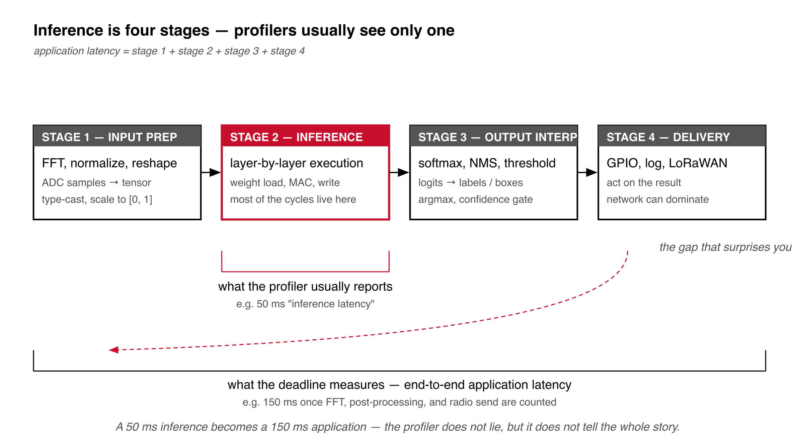
Figure 4.1 — Four-stage inference pipelineWhen you call the inference function, a sequence of stages runs in a specific order. Stage 1 is input preparation — sensor data arrives raw (ADC samples, pixel values, raw register reads), and you have to normalize it to whatever range the model was trained on, reshape it into the right tensor dimensions, and convert it to the right numeric type. If preprocessing includes an FFT for audio features or image rescaling, this stage can dominate. Stage 2 is inference execution — the computational graph runs layer by layer, each layer reading its weights from flash or a cached copy in SRAM, reading its input activations, computing convolutions or matmuls or activations, and writing output activations to the next layer’s input buffer. This is where most of the time goes. Stage 3 is output interpretation — applying softmax, non-max suppression, threshold logic, anything that turns the model’s raw output into something actionable. Stage 4 is result delivery — setting a GPIO, writing a flash log, sending a LoRaWAN packet. When you measure inference latency from a profiler, you are usually measuring Stage 2 only. When the application has a hard deadline, what matters is Stages 1 through 4 end to end. A 50 ms inference can become a 150 ms application latency if you forgot to count the FFT and the network transmission.
On a bare-metal system — your firmware running directly on the processor with no operating system — the pipeline is deterministic. You allocate memory once at startup, the processor runs at a fixed clock with no other tasks competing for it, and inference takes the same time on every pass barring cache effects or thermal events. On an RTOS like FreeRTOS or Zephyr, inference runs as a task and can be preempted. The 200 ms inference might spread across 250 ms of wall-clock time when a higher-priority task interrupts. Most embedded AI deployments end up using bare-metal for latency-critical paths and an RTOS for systems where AI is one of several concurrent functions, with the inference task running at a priority chosen to match the real-time requirement.
The reason theoretical FLOP-based latency predictions fail is that operations are not all compute-bound the way the FLOP count assumes. Some are memory-bound — their execution time is set by how fast data moves between memory and the processor, not by how fast the processor multiplies. Take a matrix multiplication, C = A × B, with A of shape M × K and B of shape K × N. The MAC count is M × N × K. On a Cortex-M4 with FPU at 100 MHz, each MAC takes one cycle when operands sit in registers. If A is 128 × 128 = 16,384 elements as float32, you cannot keep it all in registers — it has to come out of SRAM, and each SRAM read costs cycles. For the 128 × 128 by 128 × 10 multiply that is 163,840 MACs of compute, plus 16,384 SRAM reads at maybe 2 cycles each, which adds 32,768 cycles of just memory traffic. The operation that should take 1.6 ms takes 3–5 ms instead, because it is memory-bound, not compute-bound.
A Cortex-M7 with 16 KB of L1 data cache, running the same operation with cache-aware blocking — multiplying in 64 × 64 sub-blocks so each sub-block stays in cache while it is reused across multiple output elements — gets back to something close to the theoretical limit. Same operation count. Different memory locality. Order-of-magnitude difference in actual time.
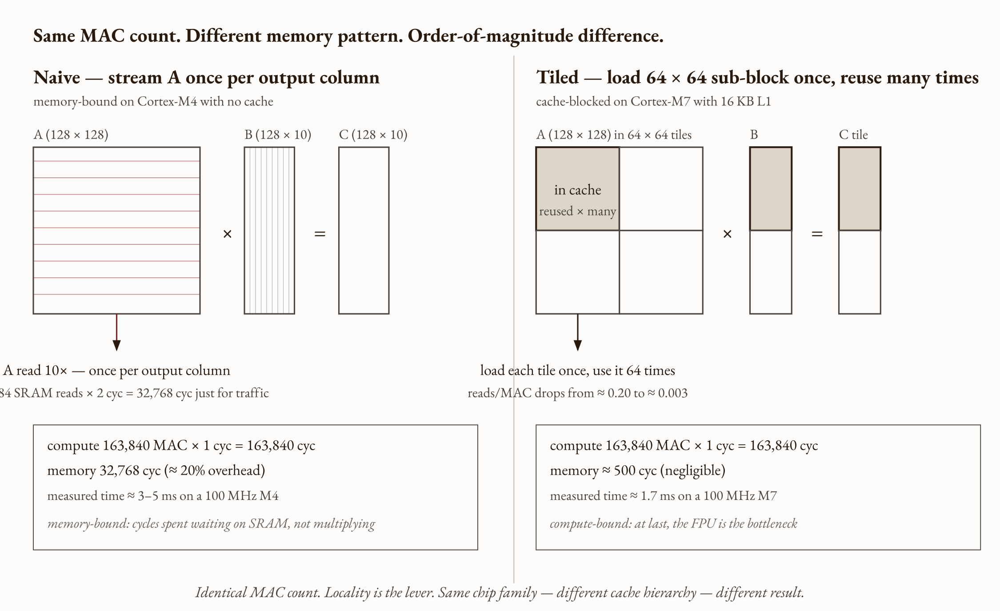
Figure 4.2 — Matrix multiply tiling: naive vs cache-blocked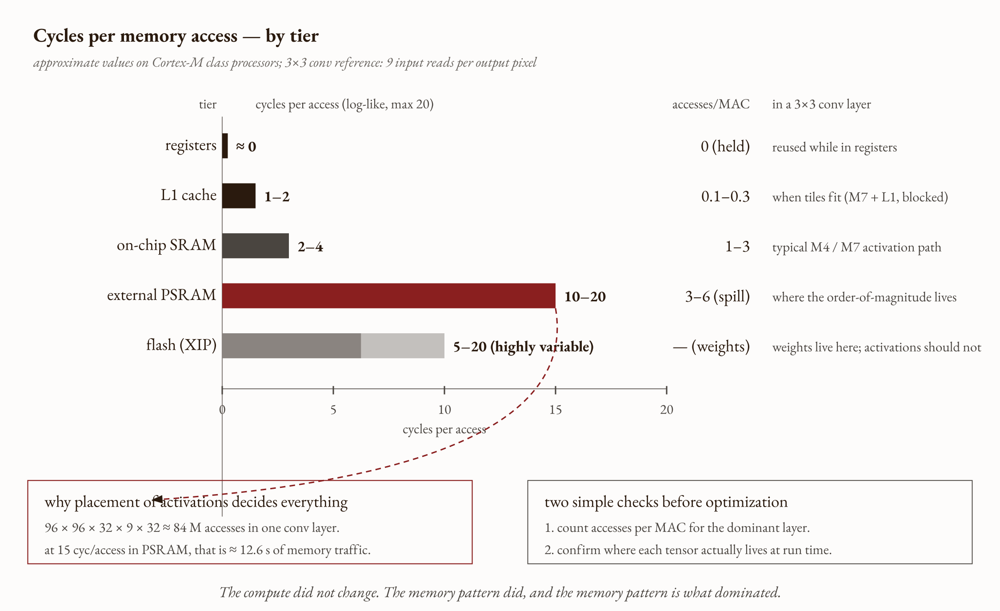
Figure 4.3 — Memory hierarchy access costConvolution is even more memory-intensive than matmul. A 2D convolution with a 3 × 3 kernel requires loading 9 input pixels for every output pixel; for a 96 × 96 input with 32 channels convolved into 32 output channels, that’s 96 × 96 × 32 × 9 × 32 ≈ 84 million memory accesses. If those activations are in external PSRAM rather than on-chip SRAM, each access costs roughly 10–20 cycles instead of 1–2, and inference latency can grow by an order of magnitude. The compute did not change. The memory pattern did, and the memory pattern is what dominated.
Activation functions are the cheap end of compute, but they can be memory-bound too if you do not fuse them with the layer that produced the input. ReLU is conceptually one comparison and a conditional write per element; on a pipelined processor the conditional branch can mispredict and flush the pipeline. SIMD-vectorized implementations process 4 or 8 elements per instruction without branches, eliminating the issue. CMSIS-NN’s optimized kernels do this; the reference C implementation in TFLite Micro does not, and that gap alone can be a 3–5× latency difference.
Hardware accelerators — neural processing units, vector engines — change the execution model again. An NPU includes dedicated matrix-multiply hardware that does hundreds of MACs per cycle. An operation that takes 100,000 CPU cycles can take 1,000 NPU cycles, but only if it maps to the accelerator’s supported primitives. Standard 3 × 3 convolutions usually map well. Depthwise convolutions might map poorly if the accelerator does not natively support channel-wise operations. Attention mechanisms or dynamic control flow rarely map at all and fall back to the CPU.
Memory allocation strategy is the second big determinant of whether
deployment works. Dynamic allocation during inference —
malloc() calls inside the inference path — is a failure
mode on embedded systems, not a feature. The heap is a fixed region of
SRAM. Allocations come out of it, and freed memory returns to it, but
fragmentation can leave you unable to satisfy a future allocation even
when total free memory is sufficient. There is no swap. There is no
other process to terminate. Failed allocation either crashes or returns
null. And malloc() itself is not free — it can spend
hundreds of microseconds searching the heap, which becomes milliseconds
if you call it inside a per-layer loop.
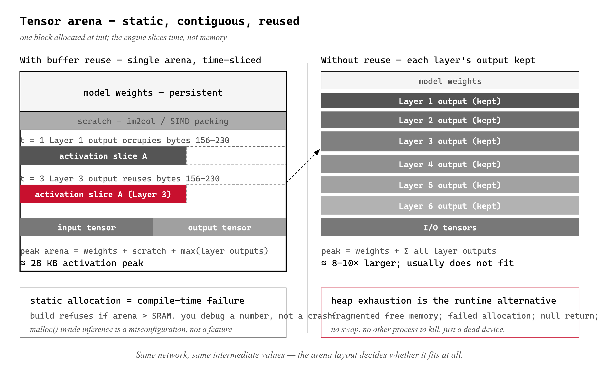
Figure 4.4 — Tensor arena: reuse vs. no reuseThe right pattern for embedded inference is static pre-allocation. All inference memory is allocated once during initialization, before the first inference runs. That includes the model weights (loaded from flash into SRAM if needed, or accessed directly from flash), the activation buffers for every layer’s intermediate results, scratch buffers for things like im2col transformations, and the input and output tensors. The total goes into one contiguous block of SRAM — TensorFlow Lite Micro calls it a tensor arena — and the inference engine manages it internally. With buffer reuse, peak memory is the size of the largest layer’s output plus whatever buffers have to coexist. Without buffer reuse, peak is the sum of all of them, which is wasteful by an order of magnitude for moderately deep networks. Static allocation also lets you fail at compile time rather than at runtime: if your activation memory needs 250 KB and your part has 200 KB of SRAM, the build tells you immediately, and you do not waste time debugging mysterious runtime crashes that turn out to be heap exhaustion.
If you see malloc() calls in your inference code path,
something is misconfigured. Trace them, find the source, replace them
with pre-allocated buffers. Embedded inference allocates zero memory
during the inference itself.
Now you have to measure. The most basic profiling on ARM Cortex-M cores uses the Data Watchpoint and Trace unit’s cycle counter. You enable it once during initialization, read it before inference starts, read it after inference completes, subtract:
// Enable DWT cycle counter (once during init)
CoreDebug->DEMCR |= CoreDebug_DEMCR_TRCENA_Msk;
DWT->CYCCNT = 0;
DWT->CTRL |= DWT_CTRL_CYCCNTENA_Msk;
// Measure inference
uint32_t start = DWT->CYCCNT;
run_inference();
uint32_t end = DWT->CYCCNT;
uint32_t cycles = end - start;
// Convert to time
float latency_ms = (cycles / (float)CPU_FREQ_HZ) * 1000.0f;At 100 MHz, 10 million cycles is 100 ms. The same pattern wrapped around individual layers gives operator-level profiling — and for most embedded ML frameworks you do not have to wrap manually. TFLite Micro has built-in profiling that reports per-operator timing over UART when you enable it at compile time. The output looks like
Operator, Count, Time (ms)
CONV_2D, 1, 45.2
DEPTHWISE_CONV_2D, 13, 82.3
FULLY_CONNECTED, 1, 3.1
SOFTMAX, 1, 0.8
Total inference time: 131.4 msIf 63% of inference time is depthwise convolutions, you know exactly where to spend optimization effort. Without that breakdown, you are guessing.
Profiling has to account for variance. Run inference 100 times and look at the distribution. If every run lands between 130 and 132 ms, latency is stable. If runs vary from 120 to 180 ms, there is non-determinism — cache effects, interrupt handling, thermal throttling — and for soft real-time you can use the mean or 95th percentile, but for hard real-time you have to use the worst case observed plus margin.
Energy profiling needs hardware: a current-sense amplifier on the supply rail, logging current as a function of time. Integrate to get energy per inference. For a 3.3 V part drawing 40 mA during 150 ms of inference, energy is 3.3 × 0.040 × 0.150 = 19.8 mJ per inference. If inference runs every 10 seconds, average power is 1.98 mW. A 1,000 mAh cell at 3.3 V stores about 11,880 J, and 11,880 / 0.00198 ≈ 6 million seconds, or about 69 days of battery life. The same arithmetic from Chapter 2; the only difference is that you are now measuring the active current rather than reading it from the spec sheet.
Numerical precision is the third axis. Networks are trained in float32 and quantization is what gets you down to float16, bfloat16, or int8. float32 is the baseline — about seven decimal digits, four bytes per value, slow on processors without an FPU. float16 halves memory but is rare on microcontrollers, which usually emulate it in software and run slower than they would on float32 with the FPU. The big win on most embedded targets is int8, which halves memory again to one byte per value, plus enables SIMD that processes four int8 values per 32-bit register per instruction — a 4× throughput gain on Cortex-M4 and higher on dedicated accelerators. ARM’s Ethos-U55, for instance, gets roughly 64× the int8 MAC throughput of float32 on the same chip.
The cost of int8 is precision. Quantization shifts and scales the float32 ranges of weights and activations onto the [-128, 127] integer range, and the rounding errors accumulate through the network. Post-training quantization (PTQ) takes a trained float32 model, measures the dynamic ranges over a calibration dataset, computes scaling factors, and converts. Cheap, easy, and for image classification it usually costs 1–3% accuracy. Quantization-aware training (QAT) simulates quantization during training so the model learns weights that survive it, and gets you better accuracy at the cost of having to retrain. For some models — those with batch normalization or extreme activation ranges — naive PTQ can destroy accuracy entirely, and you either tune ranges per layer or fall back to mixed precision (most layers int8, the sensitive ones float32).
The pattern you should commit to: deploy float32 first, measure latency and memory, quantize to int8 if the budget demands it, measure accuracy before and after, and never assume the conversion is free.
To make all of this concrete, work an actual deployment. You have a keyword-spotting model — depthwise separable CNN, 80,000 parameters, ~22 million MACs per inference. Theoretical analysis: 320 KB weights as float32, 45 KB activation memory, latency 22M / 60 MMAC/s ≈ 367 ms on a 64 MHz Cortex-M4 with FPU like the Arduino Nano 33 BLE Sense (nRF52840, 256 KB SRAM, 1 MB flash).
You compile with TFLite Micro, flash, run. First inference: 1,200 ms. Three times slower than the prediction.
Diagnose. Check precision first — the model is float32, the FPU is there, that should be efficient. But the build is using the reference C kernels, not the optimized CMSIS-NN ones. The reference implementation does not use the FPU effectively or the DSP/SIMD extensions, and runs 3–5× slower. Reconfigure the build to use CMSIS-NN, recompile, re-flash. 420 ms — close to the 367 ms prediction, but still over budget if the application wants 100 ms.
Now identify the bottleneck. Enable per-operator profiling. Two depthwise convolutions consume 71% of the total — 180 ms and 120 ms respectively, on 32 × 32 and 24 × 24 feature maps with 64 channels each. Why are they so slow? Check the memory layout. The activations exceed the on-chip SRAM budget once everything else is accounted for, and have spilled into external memory. External access costs about 10× more than on-chip SRAM access; the depthwise convolutions are memory-bound on the external path. Fix: shrink the model so all activations fit in on-chip SRAM. Retrain with smaller maximum feature maps (16 × 16 instead of 32 × 32). Activation memory drops to 28 KB. 140 ms.
Still over the 100 ms target. Quantize. Post-training int8 quantization. Model size drops to 80 KB, activation memory stays at 28 KB, and SIMD does its 4× thing. 45 ms. Accuracy goes from 94.2% before quantization to 92.8% after — a 1.4% loss, well within tolerance for the application. Memory: 80 KB flash, 28 KB RAM. Latency: 45 ms. Power: separate measurement.
Theoretical analysis predicted 367 ms. Deployment measured 1,200 ms. Profiling identified the bottleneck twice — first kernels, then memory layout. Optimization brought it to 45 ms. The theoretical prediction was directionally correct and quantitatively wrong by 25×, and only target-hardware profiling revealed why. That gap is not unusual. It is the work this chapter was written about.
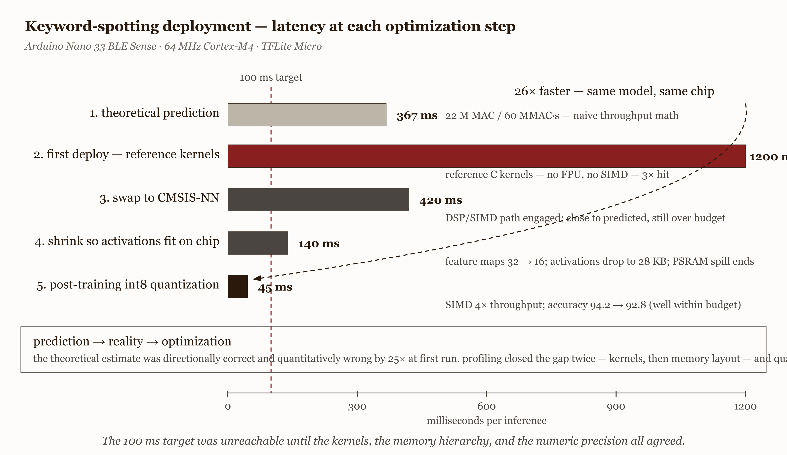
Figure 4.5 — Keyword-spotting latency waterfallWhen inference fails on a real target, the four categories of failure are crashes, wrong output, slow latency, and excessive power. Crashes — a HardFault or memory exception during inference — usually mean a buffer overrun. The tensor arena is too small and the engine is writing past the end, or the stack is overflowing because the call chain is deeper than allocated. Increase the arena, increase the stack, retest. Wrong output — NaN, Inf, predictions that miss accuracy by a wide margin — usually means precision or preprocessing. Check that the quantization scale and zero-point parameters match between training and inference. Check that the input is normalized to the range the model expects (a model trained on inputs in [0, 1] will produce nonsense if you feed it raw 12-bit ADC values from 0 to 4095). Check tensor layout — NHWC versus NCHW — matches what the model was exported with. Slow latency — 10× slower than predicted — usually means non-optimized kernels, or activations spilled into external memory, or the clock running at a different speed than you think. Excessive power — battery draining at twice the duty-cycle math — usually means busy-waiting (the processor stays active polling instead of sleeping while inference completes), or peripherals left on (LEDs, sensors, communication modules drawing current you forgot to count), or the part not entering its lowest-power sleep mode because something is keeping it awake.
These four categories cover most deployment failures. The diagnostic discipline is the same in every case: profile latency, measure memory usage, log output values, and compare against predictions. The gap between what you predicted and what you measured is what tells you where the problem is, and the better your prediction was, the more informative the gap.
The next chapter goes deep on the first of the four constraints in detail — memory — and looks specifically at why models that fit in total memory still fail at runtime, and what to do when they do.
Project: TinyML Feasibility Toolkit What you’re building this chapter: A latency predictor that decomposes a model’s inference into the four pipeline stages and estimates each stage’s wall-clock time on a given target. Tool: Claude Code
The Prompt:
Extend tinyml-feasibility with a latency-prediction module grounded in the four-stage pipeline (acquire, preprocess, run, postprocess).
Add src/tinyml_feasibility/profiling.py:
Frozen LatencyEstimate dataclass:
- acquire_ms: float (sensor read time; default 1.0, override by app config)
- preprocess_ms: float (e.g., MFCC for audio, normalization for vision)
- inference_ms: float
- postprocess_ms: float
- total_ms: float
- bottleneck_stage: Literal["acquire", "preprocess", "run", "postprocess"]
- assumption_notes: list[str] (every estimate that came from a lookup table goes here)
Public functions:
- `predict_inference_ms(model: ModelSummary, target: Target) -> float` — uses MAC throughput lookup. Provide a CORE_THROUGHPUT dict mapping core string ("Cortex-M0+", "Cortex-M4", "Cortex-M7", "Cortex-M55", "Cortex-A53") to MAC/sec at 1 MHz with int8 + CMSIS-NN. Source each value with a citation comment (e.g., ARM benchmark URLs, CMSIS-NN README).
- `predict_pipeline(model, target, app) -> LatencyEstimate` — returns full breakdown.
CLI extension:
- `tinyml-feasibility predict-latency --app <yaml> --target <name> --model <path>` prints the LatencyEstimate with bottleneck_stage flagged.
Tests:
- test_predict_inference_scales_with_clock — same model on Cortex-M4 at 64 MHz vs 128 MHz: latency at 128 MHz is approximately half (within 10%)
- test_predict_inference_scales_with_macs — doubling MAC count approximately doubles inference latency
- test_pipeline_bottleneck_correctness — for a synthetic case where preprocess dominates, bottleneck_stage == "preprocess"
Note: the lookup tables are imperfect approximations. Document this clearly in the module docstring — the tool predicts within roughly 2x of measured latency on real hardware. Real profiling on target is still required before committing to a deployment.What this produces:
tinyml-feasibility predict-latency --app jaguar.yaml --target STM32L4R5 --model jaguar_dscnn.tflite
returns a four-stage latency breakdown with the bottleneck stage flagged
and explicit assumption notes.
How to adapt this prompt: - For your own
project: Override the default acquire_ms and
preprocess_ms in your application YAML if your sensor or
preprocessing pipeline is non-standard. - For ChatGPT / Gemini:
Works as-is. Both will fabricate throughput numbers if not pinned to
citations — be aggressive in the prompt about NO FABRICATION and require
URLs in comments. - For Claude Code: Use
--allowed-tools edit,bash,web_search; it will look up
CMSIS-NN benchmarks for the throughput table. - For a Claude
Project: Add the CORE_THROUGHPUT dict to a shared file in the
project so chapters 6 and 8 can extend it.
Connection to previous chapters: Consumes the ModelSummary (chapter 3) and Target (chapter 2). Produces the latency input that chapter 6 will compare against the latency budget.
Preview of next chapter: Chapter 5 adds the first
verdict module — memory.py — which compares a model’s flash
+ SRAM demands against a target’s budget and emits a FITS / TIGHT /
FAILS verdict with named mitigations.
Inference mechanics is the layer where the abstractions of a deep-learning framework meet the realities of a specific chip. The gap is where most embedded AI work happens.
Where the model genuinely helps: walking through how a forward pass actually executes on a constrained device — load, compute, store, with attention to memory locality.
Where the model does damage: producing inference latency estimates without flagging that the estimates depend on the toolchain’s optimizer, the operator coverage of the runtime, and the specific quantization scheme. The numbers will sound precise and be wrong by an order of magnitude.
The rule: the model is useful for the mechanics. The numbers come from your profiler.
Use these prompts with Claude to generate interactive D3 v7 versions of the figures in this chapter. Each produces a standalone HTML file you can open in a browser and modify freely.
Prerequisites: Load brutalist/CLAUDE.md
and brutalist/DESIGN.md into your Claude project context
before using these prompts. They define the stack, naming conventions,
color system, and typography the figures use.
Build a horizontal four-stage flow diagram in D3 v7. Data: four
stages with id, label, headline,
detail — Stage 1 Input Prep (FFT, normalize, reshape),
Stage 2 Inference (layer-by-layer execution; this stage is
primary), Stage 3 Output (softmax, NMS, threshold), Stage 4
Delivery (GPIO, log, LoRaWAN). Render each stage as a
rounded-corner-less rectangle with a coloured header strip; primary
stage uses var(--color-red) for both header fill and body
stroke, others use var(--color-secondary). Use
d3.scaleBand() across the four stage ids for horizontal
placement. Connect stages with short arrow segments using SVG
<marker> arrowheads. Draw two brackets below the
boxes: a red bracket spanning only Stage 2 labelled “what the profiler
reports” with “≈ 50 ms” beneath; a neutral bracket spanning all four
stages labelled “end-to-end application latency” with “≈ 150 ms”
beneath. Standalone HTML, D3 7.9.0 cdnjs CDN, inline CSS/JS, role=“img”,
title, desc, ResizeObserver redraw, prefers-reduced-motion suppression,
tooltips on stage hover.
Reference implementation:
d3/chapter-04-inference-mechanics-fig-01.html
Build a two-panel D3 v7 figure comparing matrix-multiply memory
patterns. Each panel renders the matrices A (128×128), B (128×10), and C
(128×10) as <rect> cells with × = glyphs
between them. Panel A (naive): plain A, B, C rectangles with red
horizontal scan lines overlaid on A indicating that every row is
streamed from SRAM once per output column. Panel B (tiled,
primary border): A subdivided into four 64×64 sub-blocks;
one sub-block of A, one tile of B, and the corresponding tile of C all
highlighted in var(--color-ochre) to indicate cache
residency. Beneath each panel render a monospace meta block summarising
compute cycles, memory cycles (red in panel A), and measured time. Use a
shared draw() redraw on ResizeObserver. Standalone HTML, D3
v7 cdnjs, inline CSS/JS, accessible.
Reference implementation:
d3/chapter-04-inference-mechanics-fig-02.html
Build a horizontal bar chart in D3 v7. Data: five tiers — registers
(0.3 cyc), L1 cache (1.5), on-chip SRAM (3), external PSRAM (15,
primary), flash XIP (12, muted) — each with a
perMac string and a one-line note. Channels: y
is tier (d3.scaleBand()), x is cycles per access
(d3.scaleLinear() zero baseline, domain [0, 20]). PSRAM bar
uses var(--color-red); flash uses
var(--color-border); others use
var(--color-secondary). Tier labels render in the left
margin (160px), accesses-per-MAC and note render in the right margin
(280px) with PSRAM row coloured red. Add a 5-tick bottom axis labelled
“cycles per access”. Tooltips on bar hover; tabindex and aria-label on
each bar. Standalone HTML, D3 7.9.0 cdnjs, inline CSS/JS,
ResizeObserver, prefers-reduced-motion.
Reference implementation:
d3/chapter-04-inference-mechanics-fig-03.html
Build a two-panel D3 v7 figure of tensor-arena layouts. Panel A
(reuse, primary border): four rows along a shared
byte-offset x-axis [0, 800] — row 0 weights+scratch, row 1 Layer 1
output (t=1) in var(--color-secondary), row 2 Layer 3
output (t=3) in var(--color-red) occupying the
same byte range, row 3 I/O tensors. Each row gets a left label
(“t = 1”, “t = 3”, “I/O”). Panel B (no reuse): vertical stack with
d3.scaleLinear() mapping cumulative bytes onto chart
height; eight regions stacked — weights, Layers 1–6 outputs each
retained, I/O. Each region’s <rect> labelled inside
with white text (weights label uses ink colour against the border-grey
fill). Tooltips on hover show region label and byte count. Below each
chart render a peak-memory text — neutral ink for the reuse panel (≈ 28
KB), red for the no-reuse panel (“8–10× larger; does not fit”).
Standalone HTML, D3 7.9.0 cdnjs, inline CSS/JS, ResizeObserver,
accessible.
Reference implementation:
d3/chapter-04-inference-mechanics-fig-04.html
Build a horizontal-bar waterfall in D3 v7. Data: five steps with
n, label, ms, kind,
note — (1) 367 ms theoretical prediction
kind=predict (border-grey with ink stroke), (2) 1200 ms
first deploy kind=failure (var(--color-red)),
(3) 420 ms CMSIS-NN kind=bar, (4) 140 ms activations on
chip kind=bar, (5) 45 ms int8 quantization
kind=final (var(--color-ink)). Channels: y is
step number (d3.scaleBand()), x is milliseconds
(d3.scaleLinear() zero baseline, domain [0, 1200]). Step
label and note render in a 250px left margin; value label in monospace
renders to the right of each bar. Draw a vertical dashed
var(--color-red) line at x = 100 ms labelled “100 ms
target” above the plot. Bottom axis with 5 ticks labelled “milliseconds
per inference”. Tooltips on bar hover. Standalone HTML, D3 7.9.0 cdnjs,
inline CSS/JS, ResizeObserver, accessible, prefers-reduced-motion
suppression.
Reference implementation:
d3/chapter-04-inference-mechanics-fig-05.html
The ideas in this chapter didn’t appear from nowhere. Thelma Estrin built one of the first real-time biomedical computing systems — getting EEG signals into a computer fast enough to be useful — when “real-time” still meant tape and paper.
Run this:
Who was Thelma Estrin, and how does her work on real-time biomedical computing at UCLA connect to today's inference pipelines on embedded processors? Three paragraphs. End with the single most surprising thing about her career.→ Search “Thelma Estrin” on Wikipedia. See what the model got right, got wrong, or left out.
Now make the prompt better. Try one of these:
What changes? What gets better? What gets worse?
The datasheet says 256 KB of RAM. Your model’s weights occupy 180 KB. Simple arithmetic: 256 − 180 = 76 KB of headroom. The model fits. You compile, flash, run — and the system crashes 40 ms into the first inference with a memory fault. The debugger shows the heap allocator failed, malloc returned null, and the inference engine tried to write to address 0x00000000.
The weights were never the problem. Weights live in flash. What crashed was activation memory — the intermediate tensors created during inference, which live in RAM. The model’s activation footprint is 210 KB. Add 30 KB for the Bluetooth stack, 8 KB for the system heap, 4 KB for the call stack, and you needed 252 KB of SRAM before inference even started. The model that “fit” by parameter count did not fit at runtime.
This is the failure mode this chapter is built around, because it is invisible until you measure it. Datasheets quote total RAM. Model summaries quote parameter count and weight size. Neither tells you how much RAM inference will consume while executing. That number is the hidden constraint, and it is the one that decides whether deployment works.
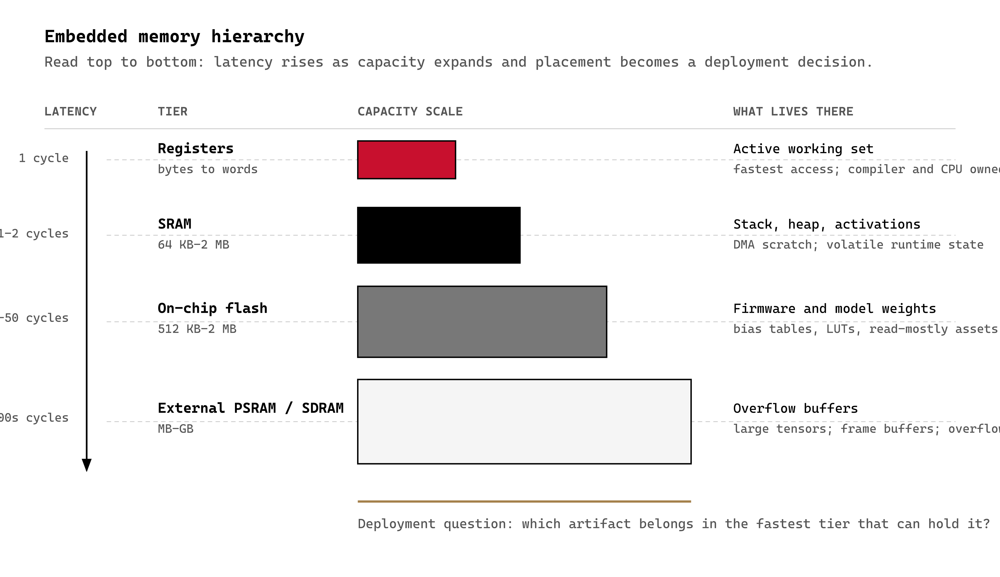
Figure 5.1 — Embedded memory hierarchy. Each tier trades latency and cost for capacity.The first thing to get straight is which kind of memory which thing lives in. Embedded memory is not one resource. Flash is non-volatile, abundant (typically 512 KB to 2 MB on a microcontroller), and read-only at runtime. You can write to it, but only through erase-and-program cycles that take milliseconds and wear the part out (10,000 to 100,000 erase cycles, after which the cell stops holding data reliably). Flash holds the firmware binary, the model’s weights and biases, and any constant tables — quantization parameters, activation lookup tables, things that never change after deployment. SRAM is volatile, fast (1–2 cycle access), writable, and scarce — typically 64 KB to 512 KB on most parts, with high-end pieces topping out around 1–2 MB. SRAM holds the application heap and stack, global and static variables, RTOS task control blocks, and — the part that matters here — the model’s activation tensors during inference, plus any scratch buffers the operations need.
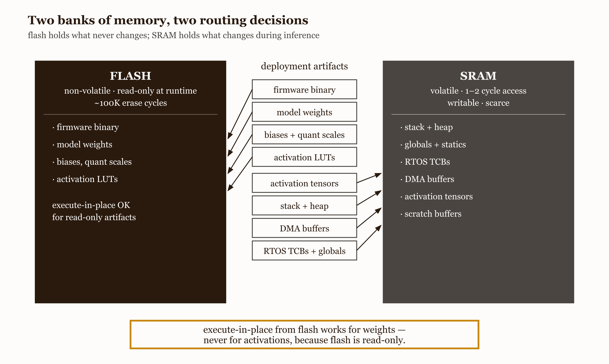
Figure 5.2 — Flash vs SRAM routing. Flash holds what never changes; SRAM holds what changes during inference.The memory question is therefore not does the model fit in total memory but does each component fit in the right kind of memory. A model with 500,000 parameters as int8 (500 KB of weights) deployed on an STM32L4 with 640 KB of SRAM and 2 MB of flash has its weights comfortably in flash. If activations require 400 KB of SRAM and the application is already using 200 KB for the BLE stack and buffers, you are sitting at 600 KB of SRAM in use, with 40 KB of margin — which evaporates the moment a 64 KB DMA buffer for sensor data also needs to fit. The deployment fails on SRAM headroom.
Some parts support execute-in-place from flash, where the processor fetches instructions and reads constant data directly from flash without copying to SRAM. That works for weights — the inference engine reads from flash on demand. It does not work for activations, because activations change during inference and flash is read-only. Activations need writable memory, which is SRAM or external memory. External memory — PSRAM, SDRAM, eMMC — gets you more capacity, but each access costs 10× to 50× more cycles than on-chip SRAM, more energy per access, and more BOM cost. If you have to put activations there, you are buying capacity in exchange for both latency and power.
Weight memory is the easy half of the problem because it is
straightforward to calculate. Count parameters, multiply by bytes per
parameter. For a fully connected layer with I inputs and
O outputs, parameters are (I × O) + O — the second
term is the bias vector. For a 2D convolution with C_in input
channels, C_out output channels, and a K_h × K_w
kernel, parameters are (K_h × K_w × C_in × C_out) + C_out. For
depthwise separable convolution, you split it: depthwise is (K_h ×
K_w × C) + C, pointwise is (C × C_out) + C_out, total is
the sum. Most frameworks report total parameter count when you compile —
TensorFlow’s model.summary(), PyTorch’s
torchinfo.summary(). Multiply by bytes per parameter: 4 for
float32, 2 for float16, 1 for int8. A 1 M parameter model is 4 MB as
float32, 2 MB as float16, 1 MB as int8. Quantizing to int8 cuts weight
memory by 75%, which is what gets a 1.2 MB float32 model fitting on a 1
MB-flash part with firmware overhead.
Some inference engines copy weights from flash into SRAM for faster access. TFLite Micro can be configured to do this. The trade is faster inference (SRAM access beats flash access) for SRAM consumed. If your SRAM budget is tight, leave the weights in flash and accept the latency hit.
Activation memory is the hard half. You cannot calculate it from a parameter count — you have to trace dataflow through the network and account for every intermediate tensor that has to coexist. Take a small CNN: 96 × 96 × 3 input (110 KB as float32), Conv1 producing a 96 × 96 × 32 tensor (1.15 MB), Pool1 reducing to 48 × 48 × 32 (288 KB), Conv2 to 48 × 48 × 64 (576 KB), Pool2 to 24 × 24 × 64 (144 KB), Flatten + FC down to a 10-element output (40 bytes). If you naively allocate a separate buffer per layer, peak memory is the sum: 2.27 MB. That is dead on a 256 KB part.
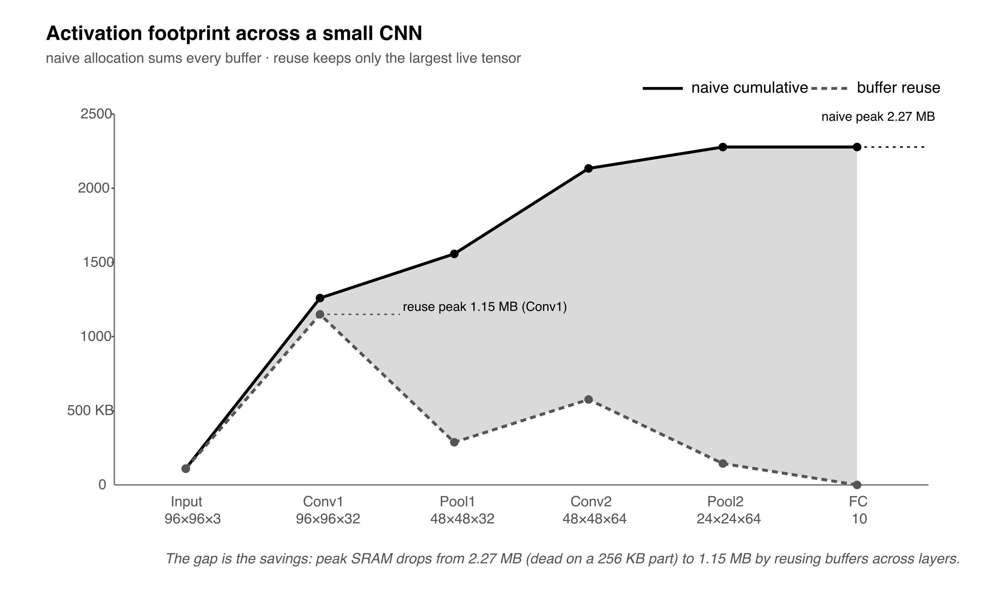
Figure 5.3 — Activation footprint timeline across CNN layers. Naive cumulative allocation vs buffer reuse.But you do not have to keep them all alive. Once Conv1’s output has been consumed by Pool1, Conv1’s buffer can be reused for Conv2’s input. This is buffer reuse. With it, peak memory becomes the size of the largest tensor that has to exist at any one moment — for this network, Conv1’s 1.15 MB output. The peak drops from 2.27 MB to 1.15 MB. Still too big. Drop the input resolution to 48 × 48 and Conv1’s output becomes 288 KB as float32, 72 KB as int8. Now it fits.
The activation memory requirement is the maximum of the largest intermediate tensor, the number of tensors that have to coexist (which depends on the dataflow — feedforward networks reuse buffers efficiently; networks with skip connections like ResNet have to hold the skipped tensor live longer), and any scratch buffers specific operations need. The third one is the silent killer. Convolution implementations often use an im2col transformation that rearranges the input into a temporary matrix so the convolution becomes a matrix multiply, which is faster on processors that have good matmul kernels. The scratch buffer required is roughly (output H × output W × kernel H × kernel W × input channels) — for the same 96 × 96 × 32 input with 3 × 3 kernel, that is 96 × 96 × 9 × 32 ≈ 2.65 M elements, or about 10 MB as float32. Impractical on embedded hardware. Embedded-optimized engines either avoid im2col entirely, doing direct convolution with register blocking, or do partial im2col on tiles small enough to fit in cache so the scratch buffer stays small. CMSIS-NN and TFLite Micro’s optimized kernels do the latter.
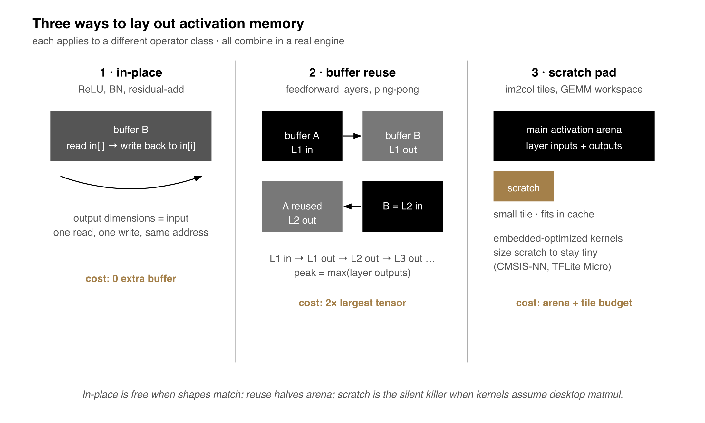
Figure 5.4 — Three activation-layout strategies: in-place, buffer reuse, scratch pad.Three layout strategies reduce activation memory. In-place
computation writes a layer’s output to the same buffer that held
its input — possible for element-wise operations like ReLU, batch
normalization, residual addition, where output dimensions match input.
The engine reads input[i], computes the result, writes back
to input[i]. No additional buffer. ReLU activation memory
is zero. Buffer reuse recycles buffers across layers as just
described. Scratch pads are temporary buffers for operations
that need intermediate storage, and the engine’s job is to keep them
small.
You control all of this by configuring the inference engine at compile time. TFLite Micro requires a static tensor arena:
constexpr int kTensorArenaSize = 200 * 1024; // 200 KB
alignas(16) uint8_t tensor_arena[kTensorArenaSize];
tflite::MicroInterpreter interpreter(model, resolver, tensor_arena, kTensorArenaSize);If the arena is too small, initialization fails with a message that tells you the required size. You bump it, recompile, retest. If the arena fits but the system crashes later, the arena plus the rest of the firmware (heap, stack, BLE buffers, sensor DMA, RTOS structures) exceeded total SRAM. The workflow is: start with the smallest arena initialization will accept, add 20% margin for runtime variation, verify total SRAM usage stays below 80% of capacity (you need headroom for interrupt stack growth, communication buffers filling under load, and other runtime variation), and if it does not, shrink the model or add external memory.
Dynamic allocation during inference is a design error on embedded
systems. The heap is unreliable, fragmentation is unavoidable, and
allocation failures are unrecoverable. The correct pattern is static
pre-allocation: the tensor arena is a static array allocated at
compile time; weights are either in flash (read-only) or copied once to
a static SRAM array during initialization; input and output buffers are
static; scratch buffers, where needed, are static. Nothing is allocated
with malloc or new during inference. The
advantage is predictability — you know at compile time whether the model
fits, you know inference cannot fail from heap exhaustion, you know
memory usage is constant across inference passes. The disadvantage is
rigidity — switching to a different model means recompiling. For most
embedded AI applications, the trade is correct: you deploy one model
that runs on fixed hardware for months or years, and you want it
deterministic. TFLite Micro enforces static allocation by default;
PyTorch Mobile and ONNX Runtime assume dynamic allocation and have to be
configured explicitly to use pre-allocated buffers. Verify, do not
assume.
Profiling is how you bridge theoretical and actual. The simplest method is to fill unused RAM with a known pattern, run inference, and count how many bytes were overwritten:
extern uint8_t _end; // end of .bss section (linker-provided)
extern uint8_t _estack; // top of stack
memset(&_end, 0xAA, &_estack - &_end);
run_inference();
uint8_t *ptr = &_end;
size_t used = 0;
while (ptr < &_estack && *ptr != 0xAA) { ptr++; used++; }
printf("RAM used: %zu bytes\n", used);That counts everything — stack growth, heap, the lot. For finer
granularity, the framework’s profiler tells you how much of the tensor
arena was actually used (TFLite Micro:
interpreter.arena_used_bytes()); you can sometimes get
layer-by-layer memory traces; and external tools — Percepio Tracealyzer,
SEGGER SystemView, ARM’s profiler — visualize memory usage in real time
on RTOS-based systems. The questions to answer are: peak SRAM usage,
which layer or operation drove the peak, and whether headroom is left
for the rest of the system. If peak usage exceeds 80% of total SRAM, you
are in the danger zone, because real systems have runtime variation that
controlled testing does not catch.
To make this concrete, work an actual deployment. MobileNetV2-based image classifier on an STM32H743 (Cortex-M7 at 480 MHz, 1 MB SRAM, 2 MB flash). Model: 1.2 M parameters int8-quantized, 1.2 MB in flash. The summary reports a 96 × 96 × 3 input and the largest layer output as 24 × 24 × 192 (110,592 elements, 108 KB at int8). Conservative estimate with 50% margin for scratch: 162 KB. Allocate a 200 KB arena, deploy.
Initialization succeeds. First inference crashes with a memory fault. Check actual usage. The interpreter reports it needed 340 KB, not 162 KB. Why? Because the bottleneck was not the 24 × 24 × 192 tensor — it was a depthwise convolution’s im2col scratch buffer at 180 KB, which the conservative estimate did not account for. Operation-specific scratch memory is the thing that surprises you.
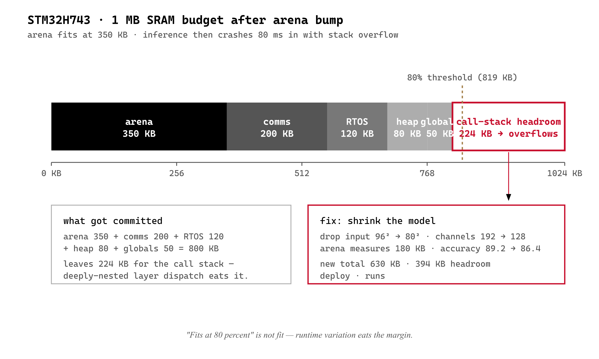
Figure 5.5 — STM32H743 1 MB SRAM budget after arena bump. The headroom that fails under load.Bump the arena to 350 KB. Initialization succeeds. Inference runs and then crashes 80 ms in with a stack overflow. Check total SRAM: arena 350 KB, application heap 80 KB, RTOS kernel and task stacks 120 KB, communication buffers 200 KB, globals 50 KB. That is 800 KB used, leaving 224 KB of the 1 MB part for the call stack — and the inference function’s deeply-nested layer dispatching overflows it.
Cannot increase SRAM, the hardware is fixed. Reduce the model. Drop input resolution from 96 × 96 to 80 × 80. Drop maximum channel count from 192 to 128. Replace standard convolutions with depthwise separable, which carry smaller scratch buffers. Retrain. The new model has 800 K parameters (800 KB as int8), largest layer output 20 × 20 × 128 = 50 KB, and the tensor arena measures at 180 KB. New SRAM total: arena 180 KB, heap 80 KB, RTOS 120 KB, comms 200 KB, globals 50 KB — 630 KB used, 394 KB of headroom, comfortable. Deploy. It runs. Accuracy went from 89.2% on the original model to 86.4% on the reduced one — a 3% drop, acceptable for the application.
The original “fit” by parameter count: 1.2 MB weights in 2 MB of flash, plenty of room. The actual runtime requirement was 340 KB of activation memory plus all the rest of the firmware, on a part with 1 MB total SRAM. Profiling exposed the scratch-buffer overhead. Shrinking the model brought it back into envelope at a known accuracy cost.
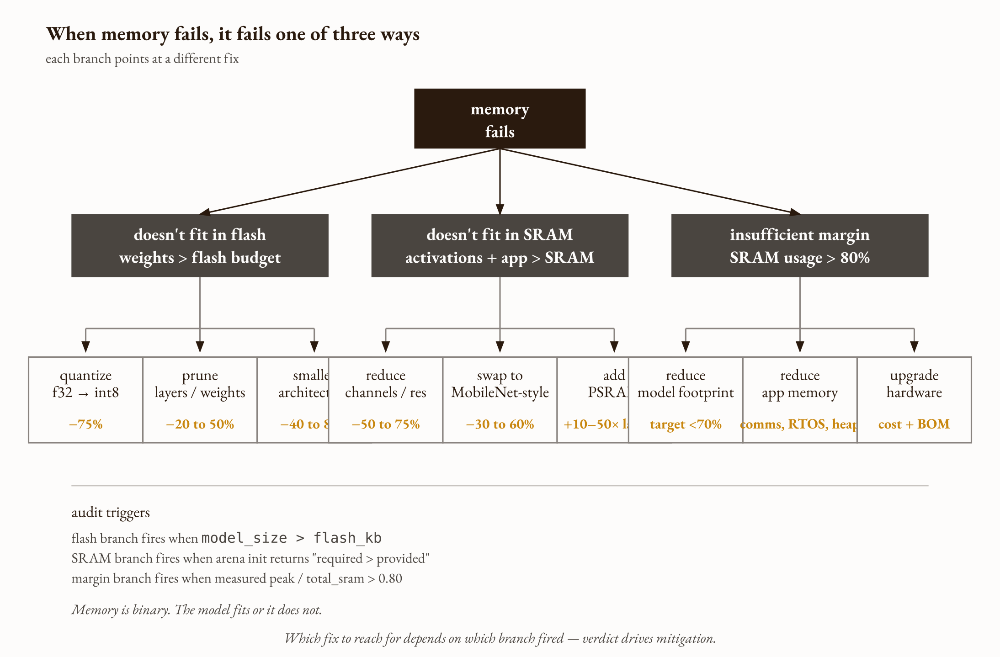
Figure 5.6 — Three memory failure modes. Which branch fired tells you which mitigation to reach for.When the memory constraint fails, it fails one of three ways. Doesn’t fit in flash — quantize float32 to int8 (75% reduction), prune layers, pick a smaller architecture. Doesn’t fit in SRAM — reduce layer sizes and channel counts, prefer architectures with lower activation memory (MobileNet over ResNet), or add external PSRAM. Insufficient margin — the model fits but total SRAM usage is at 90% of capacity, which works in testing and crashes under load. Reduce model footprint, reduce application memory, or upgrade hardware.
Memory is binary. The model fits or it does not. If it does not fit, no amount of compute optimization or power tuning saves you. That is why this chapter comes before all the others in Part II. Before you measure latency, before you measure power, before you reach for accelerators — verify the model fits, with margin. The next chapter takes the second constraint: compute.
Project: TinyML Feasibility Toolkit What
you’re building this chapter: The first verdict module —
memory.py — which compares a model’s flash + SRAM demands
against a target’s budget and emits a typed verdict with mitigations.
Tool: Claude Code
The Prompt:
Add src/tinyml_feasibility/memory.py to the tinyml-feasibility toolkit.
Frozen MemoryVerdict dataclass:
- weight_kb: float
- activation_kb: float
- scratch_kb: float
- total_sram_kb: float
- flash_margin_pct: float
- sram_margin_pct: float
- verdict: Literal["FITS", "TIGHT", "FAILS"]
- mitigations: list[str] (suggestions if TIGHT or FAILS)
- to_markdown() method — emits a section in the same shape as Chapter 14's case-study memory blocks
Public function:
`assess_memory(model: ModelSummary, target: Target, scratch_overhead: float = 0.5) -> MemoryVerdict`
Implementation:
- weight_kb = model.parameter_count * bytes_per_element(model.precision) / 1024
- activation_kb = model.largest_activation_elements * bytes_per_element / 1024
- scratch_kb = activation_kb * scratch_overhead (im2col approximation)
- total_sram_kb = activation_kb + scratch_kb
- flash_margin_pct = (target.flash_kb - weight_kb) / target.flash_kb * 100
- sram_margin_pct = (target.sram_kb - total_sram_kb) / target.sram_kb * 100
- verdict: FITS if both margins > 20; FAILS if either < 0; TIGHT otherwise
- mitigations dict-driven from chapter 5's repertoire:
- if weight_kb is the bottleneck: "Quantize float32 → int8 (75% weight reduction)", "Switch to smaller MobileNet width multiplier"
- if activation_kb is the bottleneck: "Buffer reuse (20-40% activation reduction)", "In-place computation", "Smaller input resolution"
- if scratch_kb is the bottleneck: "Switch to direct convolution kernels (no im2col)"
CLI extension:
- `tinyml-feasibility check-memory --app <yaml> --target <name> --model <path>` prints the MemoryVerdict and includes the to_markdown() output
Tests:
- test_fits_case — large flash + SRAM, expect FITS, mitigations is empty
- test_fails_flash — model 2× target flash, expect FAILS, mitigations names quantization or smaller variant
- test_tight_sram — sram margin = 5%, expect TIGHT, mitigations names buffer reuse
- test_to_markdown_section_shape — output starts with "## Memory" and contains all numeric fieldsWhat this produces: A typed verdict module that, given a model + target, tells you whether the memory budget closes — with named mitigations when it doesn’t and a Markdown emitter that’s already shaped to drop into the integration report you’ll generate in chapter 14.
How to adapt this prompt: - For your own
project: Tune scratch_overhead based on your model
architecture — pure depthwise-separable models need less scratch;
standard convolutions need more. - For ChatGPT / Gemini: Works
as-is. - For Claude Code: Best fit. Run pytest after each
iteration. - For a Claude Project: The MemoryVerdict dataclass
and verdict thresholds become reusable in chapters 6, 7, 11, and 14.
Connection to previous chapters: Reads ModelSummary (chapter 3) and Target (chapter 2). Produces the first FITS/TIGHT/FAILS verdict — the verdict pattern repeats in chapters 6, 7, 8, 9, 10, and gets aggregated in chapter 14.
Preview of next chapter: Chapter 6 adds
compute.py — same verdict pattern, this time comparing
predicted latency (chapter 4) against the latency constraint, with
processor-class upgrade recommendations as mitigations.
Use these prompts with Claude to generate interactive D3 v7 versions of the figures in this chapter. Each produces a standalone HTML file you can open in a browser and modify freely.
Prerequisites: Load brutalist/CLAUDE.md
and brutalist/DESIGN.md into your Claude project context
before using these prompts. They define the stack, naming conventions,
color system, and typography the figures use.
Build a single-panel D3 v7 figure rendering a four-tier memory
pyramid. Tiers top to bottom: registers (apex, no size), SRAM (64 KB to
2 MB, 1–2 cycle, volatile), on-chip flash (512 KB to 2 MB, 10–50 cycle,
non-volatile, ~100K erase cycles), external PSRAM or SDRAM (MB to GB,
100s of cycles). Render each tier as a horizontal trapezoid stacked from
narrow at the top to wide at the base. Fill each tier with a luminance
step from var(--color-ink) at the apex through
#404040 and #787878 to #ADADAD at
the base. Inside each tier, show the tier name (Inter 700, white text)
and the size and latency on a second line. On the right of the pyramid,
render a column of contents annotations — “working set,” “stack · heap ·
activations,” “firmware · weights · LUTs,” “overflow weights / buffers”
— each aligned to the centroid of its tier. On the left, show a latency
axis with the cycle counts. Tooltips on hover show the full tier
description. Standalone HTML, D3 v7, inline CSS/JS, accessible,
responsive.
Reference implementation:
d3/chapter-05-memory-fig-01.html
Build a D3 v7 figure showing a two-bank routing diagram. Left bank: a
tall rectangle filled var(--color-ink) labeled FLASH with
subtext “non-volatile · read-only at runtime.” Right bank: a tall
rectangle filled #404040 labeled SRAM with subtext
“volatile · writable · scarce.” Between the two banks, render a centered
column of eight deployment-artifact rectangles, each white with a
var(--color-secondary) outline and JetBrains Mono label:
firmware binary, model weights, biases + quant scales, activation LUTs,
activation tensors, stack + heap, DMA buffers, RTOS TCBs + globals. The
first four route by arrow to the flash bank; the last four route by
arrow to the SRAM bank. Below the diagram, render a callout box with an
ochre border reading “Execute-in-place from flash works for weights —
never for activations.” Tooltip on hover shows which bank each artifact
routes to. Standalone HTML, D3 v7, inline CSS/JS, accessible,
responsive.
Reference implementation:
d3/chapter-05-memory-fig-02.html
Build a two-series line chart of intermediate tensor memory across
six CNN layer positions: Input (96×96×3) 110 KB, Conv1 (96×96×32), Pool1
(48×48×32), Conv2 (48×48×64), Pool2 (24×24×64), FC (10). Two y-series:
naive cumulative (110, 1260, 1548, 2124, 2268, 2270 KB) drawn in
var(--color-red) solid; buffer-reuse per-layer live (110,
1150, 288, 576, 144, 0 KB) drawn in var(--color-ink)
dashed. y-domain [0, 2500] KB, zero baseline. Shade the area between the
two lines using var(--color-border) at 0.5 opacity.
Annotate the naive peak (“2.27 MB”) at the FC point and the reuse peak
(“1.15 MB”) at the Conv1 point. Render layer shapes (e.g., “96×96×32”)
under each x-tick. Tooltip on each circle shows layer, shape, and KB.
Standalone HTML, D3 v7, inline CSS/JS, accessible, responsive.
Reference implementation:
d3/chapter-05-memory-fig-03.html
Build a three-panel D3 v7 figure rendering three buffer diagrams side by side. Panel 1 (“in-place”): one rectangle labeled “buffer B” with text “read in[i] → write back to in[i]” and a curved arrow showing the input being overwritten; subtitle “ReLU, BN, residual-add”; cost label “0 extra buffer.” Panel 2 (“buffer reuse”): two rectangles side by side labeled A and B for layer 1, then a second row showing A reused for layer 2 output and B holding layer 2 input, with arrows showing the ping-pong; subtitle “feedforward layers, ping-pong”; cost label “2× largest tensor.” Panel 3 (“scratch pad”): one wide rectangle labeled “main activation arena” plus a small ochre rectangle labeled “scratch”; subtitle “im2col tiles, GEMM workspace”; cost label “arena + tile budget.” Each panel inside a bordered card with title and subtitle. Tooltip on hover for each buffer rectangle. Standalone HTML, D3 v7, inline CSS/JS, accessible, responsive.
Reference implementation:
d3/chapter-05-memory-fig-04.html
Build a single horizontal stacked bar chart sized to the STM32H743’s
1024 KB SRAM. Segments in order: arena 350 KB
(var(--color-ink)), comms 200 KB (#404040),
RTOS 120 KB (#787878), heap 80 KB (#A8A4A0),
globals 50 KB (#D4D4D4), stack headroom 224 KB (white fill
with var(--color-red) 2px stroke). x-axis ticks at 0, 256,
512, 768, 1024 KB. Above the bar, draw a vertical dashed ochre line at
80% (819 KB) labeled “80% threshold.” Inside each segment label show the
segment name and KB (white text where the fill is dark,
var(--color-ink) where light, red where headroom). Tooltip
on hover shows the segment name, its KB, and its share of total.
Standalone HTML, D3 v7, inline CSS/JS, accessible, responsive.
Reference implementation:
d3/chapter-05-memory-fig-05.html
Build a D3 v7 tree-layout figure with a single root “memory fails”
branching to three intermediate nodes: “doesn’t fit in flash,” “doesn’t
fit in SRAM,” “insufficient margin.” Each intermediate node branches to
three leaves. Flash branch leaves: quantize f32→int8 (savings −75%),
prune layers (−20–50%), smaller architecture (−40–80%). SRAM branch
leaves: reduce channels/res (−50–75%), swap to MobileNet (−30–60%), add
PSRAM (+10–50× latency). Margin branch leaves: reduce model (target
<70%), reduce app memory, upgrade hardware. Use
d3.tree() over a d3.hierarchy() for layout.
Render the root and intermediate nodes with dark fills and white text;
leaves with white fills and var(--color-ink) text; savings
tags below each leaf in var(--color-ochre) bold. Tooltip on
hover shows the trigger or detail for each node. Standalone HTML, D3 v7,
inline CSS/JS, accessible, responsive.
Reference implementation:
d3/chapter-05-memory-fig-06.html
The ideas in this chapter didn’t appear from nowhere. An Wang invented magnetic core memory — the technology that stored every bit in every computer for two decades, the spiritual ancestor of the SRAM you’re allocating tensors into now.
Run this:
Who was An Wang, and how does his work on magnetic core memory connect to the SRAM and flash trade-offs in modern embedded AI systems? Three paragraphs. End with the single most surprising thing about his career.→ Search “An Wang” on Wikipedia. See what the model got right, got wrong, or left out.
Now make the prompt better. Try one of these:
What changes? What gets better? What gets worse?
The model fits in memory. Weights take 600 KB of flash, activations take 140 KB of SRAM, total memory usage leaves 200 KB of headroom. The previous chapter is satisfied. You run the first inference pass and time it: 1,850 ms. The application’s deadline is 50 ms.
The model that fits in memory cannot run fast enough to be useful. This is the compute constraint, and unlike a memory failure — which crashes the system in a way you can debug with a stack trace — a compute failure leaves the system correct but useless. The result arrives after the object has moved out of frame, after the anomaly has progressed to fault, after the user has given up. Latency violations make the right answer late, which is the same as the wrong answer for any application that has a deadline at all.
The starting point is to translate operation counts into time. Two
metrics quantify a network’s compute requirement. A FLOP is a
floating-point operation — an add, subtract, multiply, or divide. A
fully connected layer doing y = Wx + b
contains (input size × output size) multiplications, the same
number of additions to accumulate the matrix product, and (output
size) additions for the bias, for a total FLOP count of about 2
× (input size × output size) + output size. A MAC is a
multiply-accumulate: result += a × b. Most embedded
processors and DSPs and NPUs can do a MAC in one instruction, so the MAC
count is the metric that maps directly to hardware capability. The
relationship between FLOP and MAC counts is roughly 2 × — each MAC
contains both a multiply and an add. Frameworks usually report FLOPs;
for pure multiply-add operations like convolution and matmul, divide by
2 to get MACs. For mixed operations (activations, pooling), use the FLOP
count as a conservative upper bound.
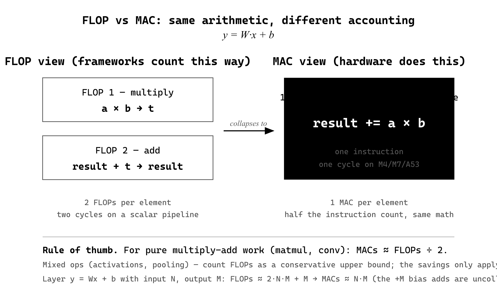
Figure 6.1 — FLOP vs MAC equivalenceLatency is then total operations / sustained throughput, where sustained throughput accounts for memory access, cache efficiency, and pipeline utilization. The datasheet’s peak throughput is always higher than what you actually get. The ratio between peak and sustained varies from about 0.5× to 0.9× depending on processor, operation, and how well the code is optimized. A Cortex-M7 at 400 MHz with FPU has theoretical peak of 400 MMAC/s — one MAC per cycle. Real code achieves 250–350 MMAC/s sustained because of memory bottlenecks and instruction overhead. A 50 M MAC model: theoretical 125 ms, actual 167 ms. A 33% gap, which is exactly why you must profile on the target rather than trusting the theoretical estimate as the deployment plan.
The other thing that determines whether your latency estimate matches reality is whether the operation is compute-bound or memory-bound. Compute-bound means execution time is dominated by arithmetic — doubling the clock roughly halves the time. Memory-bound means execution time is dominated by data movement — doubling the clock might cut time by 20% because the processor spends most of its time waiting on memory. A small matmul (64 × 64 by 64 × 64 on a Cortex-M7 with 64 KB of L1 cache) is compute-bound; both matrices fit in cache and every multiply-add executes at peak throughput. A large matmul (512 × 512 by 512 × 512) on the same processor is memory-bound; the matrices total 2 MB, which is far past cache, and each element gets fetched from SRAM repeatedly with bandwidth limiting throughput.
Convolution on microcontrollers is almost always memory-bound. A 3 × 3 convolution on a 96 × 96 image with 32 input channels into 64 output channels does 169 M MACs but moves a lot of bytes; even with input reuse across output channels, the working set comfortably exceeds cache, so each input gets fetched multiple times and bandwidth dominates.
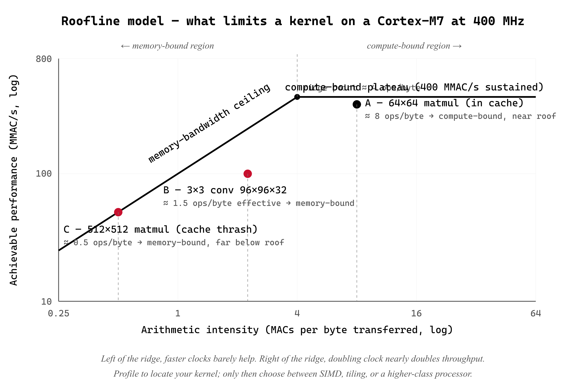
Figure 6.2 — Roofline modelThe sharp diagnostic is arithmetic intensity — operations per byte transferred. High arithmetic intensity (>10 ops/byte) tends to be compute-bound; low (<1 op/byte) tends to be memory-bound. A 64 × 64 matmul with both matrices in cache: 262,144 MACs, 32 KB transferred, 8 ops/byte — borderline, compute-bound with good cache behavior, memory-bound under cache thrashing. A 3 × 3 conv on a 96 × 96 × 32 image: 169 M MACs, 10.6 MB transferred in the worst case with no reuse, 16 ops/byte nominally — but in practice the working set forces re-reads, effective intensity drops to 1–3 ops/byte, and the operation becomes memory-bound. The optimization differs depending on which side you are on. For compute-bound: faster clock, SIMD, hardware accelerator. For memory-bound: tiling and buffer reuse to reduce data movement, on-chip SRAM rather than external memory, quantization to reduce bytes moved per op. Profiling tells you which one applies. If doubling the clock from 100 to 200 MHz nearly doubles performance, you are compute-bound. If it improves performance 10%, you are memory-bound and need to fix the memory pattern, not the arithmetic.
The processor architecture itself shapes how many operations per cycle you can extract. A Cortex-M0+ executes one instruction per cycle in the best case, has no pipeline forwarding, no branch prediction, no SIMD, software-emulated multiplication on parts without a hardware multiplier (32 cycles per multiply). A Cortex-M4 with DSP extensions has a 3-stage pipeline, single-cycle hardware multiply, an FPU, and SIMD instructions that pack four 8-bit ops or two 16-bit ops into one 32-bit instruction — at 100 MHz, peak is 100 MMAC/s for float32 or about 400 M 8-bit MACs/s with SIMD. A Cortex-M7 has a 6-stage superscalar pipeline that can issue two instructions per cycle when they do not conflict, plus a double-precision FPU and decent caches; at 400 MHz, theoretical peak is 800 MMAC/s for single-precision floats with dual-issue, sustained 400–600 MMAC/s. A Cortex-A53 (Raspberry Pi Zero 2 W) has an 8-stage pipeline, out-of-order execution, NEON SIMD that does 16 8-bit MACs per cycle per core; at 1 GHz with 4 cores, theoretical peak is about 64 G 8-bit MACs/s, sustained 30–50 G depending on memory bandwidth.
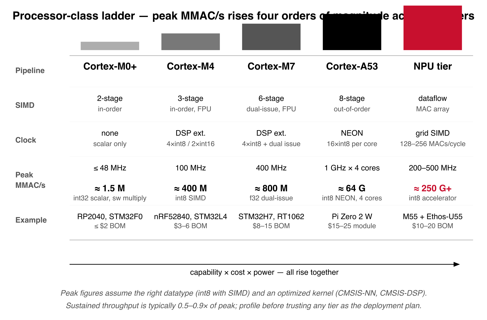
Figure 6.3 — Processor-class ladderSIMD is the single biggest lever. A scalar Cortex-M4 doing int8 MACs
hits 100 M MACs/s. The same chip with SIMD packing four int8 values into
a 32-bit register and processing them in parallel hits 400 M MACs/s — a
4× improvement at the same clock speed. But SIMD requires the
inference engine to actually use it. Most embedded ML frameworks
ship optimized kernels for common operations: TFLite Micro uses CMSIS-NN
on Cortex-M cores, which exploits SIMD. If your build is using the
reference C kernels instead of CMSIS-NN, you are leaving 4–8× of free
performance on the table. The way to verify is to disassemble and look
for SIMD instructions — SMLAD, SMLALD,
USAD8 on Cortex-M4; VMLA.I8,
VMLA.I16 on Cortex-A. If you only see scalar
MUL and ADD, the optimized kernels are not
being called.
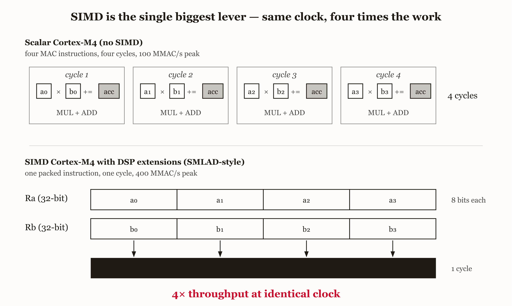
Figure 6.4 — SIMD lane diagramReal-time applications care about the worst case, not the average. A system with 50 ms average latency and 500 ms worst case fails a 100 ms deadline because the worst case is what blows the budget. Worst-case execution time — WCET — is the maximum time an operation can take under any input, any cache state, any scheduling condition. For traditional embedded code, WCET analysis is mature and tractable; tools like AbsInt aiT or Rapita RVS model the pipeline, cache, and memory and compute the longest possible execution path. For neural network inference, WCET analysis is hard. Networks have many possible execution paths; cache hit-or-miss patterns depend on input data and prior state; modern compilers reorder, unroll, and inline in ways static analysis cannot follow; framework code is large with dynamic dispatch and function pointers that defeat pathfinding tools.
The pragmatic approach to WCET for inference is empirical. Generate inputs intended to maximize the computational path — for fixed-point, fixed-architecture networks, all inputs follow the same path so the variation is small; for networks with attention or early-exit branches, you have to construct adversarial inputs that trigger every branch and avoid every shortcut. Run thousands of test inputs, measure latency, look at the distribution. The maximum observed latency is your empirical WCET estimate. Add safety margin — typically 20–50% above the observed maximum. Verify on actual deployment hardware, not on a development board with different cache or clock. For hard real-time systems where you need provable guarantees — automotive, industrial control, certain medical devices — you have to make the problem easier rather than the analysis stronger: restrict to fixed-path architectures with no dynamic control flow, disable caches or use cache locking to make memory latency deterministic, disable interrupts or run inference at the highest priority. Each of these costs something — model expressiveness, cache performance, or system responsiveness — and is justified only when the safety case demands it. For soft real-time, which is most of embedded AI, empirical WCET with margin is sufficient.
The constraint that runs through everything is the latency-accuracy trade-off. Smaller models run faster but predict worse; larger models predict better but run slower. Take three variants of a gesture recognition model: Model A — 2 M parameters, 80 M MACs, 92% accuracy. Model B — 800 K parameters, 35 M MACs, 89%. Model C — 300 K parameters, 12 M MACs, 84%. On a Cortex-M4 at 100 MHz sustaining 60 MMAC/s for int8, Model A takes 1,333 ms, Model B 583 ms, Model C 200 ms. If the deadline is 250 ms, only C passes — but if the application demands 88% accuracy, only A or B pass. You are caught between latency and accuracy.
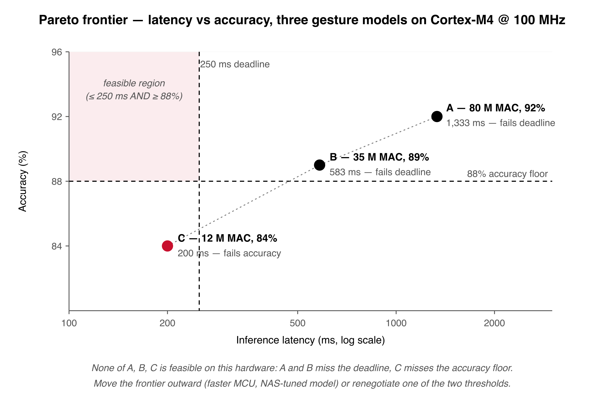
Figure 6.5 — Latency–accuracy Pareto plotThe way out is to find Pareto-optimal models — designs where no other model is both faster and more accurate. Manual search starts from a known-efficient architecture (MobileNetV2, EfficientNet-Lite) and scales it down: drop input resolution, drop channel count via the width multiplier, drop depth. Measure latency and accuracy at each configuration. Plot. The Pareto frontier is the set of points where every other point is worse on at least one axis. Neural Architecture Search automates this — tools like Once-for-All, ProxylessNAS, MnasNet search architectures optimized for specific hardware; you specify the target and the latency budget, NAS proposes architectures that maximize accuracy under the constraints. NAS is expensive (GPU-hours to GPU-days) but for high-volume products where 1% accuracy is worth real money, it pays back. For one-off or low-volume deployments, manual scaling is plenty.
To make the workflow concrete, take a gesture-recognition system on a wearable using a 3-axis accelerometer at 100 Hz, classifying gestures every second on 100 sample windows. The application asks for ≤50 ms latency, ≥88% accuracy on a 20-gesture validation set, and <5 mA average current on a coin cell. Three candidates:
| Model | Architecture | Params | MACs/inference | Accuracy |
|---|---|---|---|---|
| A — 1D CNN | 4 conv + 2 FC | 120,000 (480 KB f32, 120 KB int8) | 18 M | 91.2% |
| B — LSTM | 2 × 64-unit LSTM + FC | 85,000 (340 KB f32, 85 KB int8) | 14 M / step × 100 steps = 1.4 G | 93.5% |
| C — DSCNN | 3 depthwise blocks + FC | 45,000 (180 KB f32, 45 KB int8) | 8 M | 88.9% |
Target hardware: nRF52840, Cortex-M4 at 64 MHz with FPU, sustaining 50 MMAC/s int8 with CMSIS-NN. Latency at 64 MHz: A = 18 M / 50 M = 360 ms, B = 1,400 M / 50 M = 28 seconds (catastrophic — LSTMs are extremely expensive for long sequences on microcontrollers), C = 8 M / 50 M = 160 ms. None meets 50 ms. Boost the clock to 128 MHz, sustained throughput roughly doubles to 100 MMAC/s: A = 180 ms, C = 80 ms. Still over 50 ms.
Go back to the product team. The deadline of 50 ms came from “that feels responsive.” 100 ms is actually acceptable for this application. Renegotiate. At 128 MHz with a 100 ms deadline, Model C passes — 80 ms latency, 88.9% accuracy, both inside the application requirement. Models A and B remain disqualified.
Power check at 128 MHz: active current rises from 15 mA at 64 MHz to about 28 mA at 128 MHz. Inference takes 80 ms; the device sleeps the remaining 920 ms each second. Average current: (28 × 0.08 + 0.002 × 0.92) / 1 = 2.24 mA. The 5 mA budget allows 2.24 mA for inference and leaves 2.76 mA for sensor acquisition and communication, which is tight but feasible.
The conclusion is that Model C is the only viable choice on this hardware, and only with the relaxed deadline. Models A and B fail latency even with clock boost. Model B is disqualified entirely — 28 seconds is unusable. If the product team cannot accept 100 ms, the hardware is insufficient and you need to upgrade (an STM32H7 at 480 MHz would bring Model C’s latency to roughly 20 ms), add an accelerator (Cortex-M55 plus Ethos-U55 NPU), or shrink the model further at additional accuracy cost. Without this analysis, you would discover the failure after manufacturing.
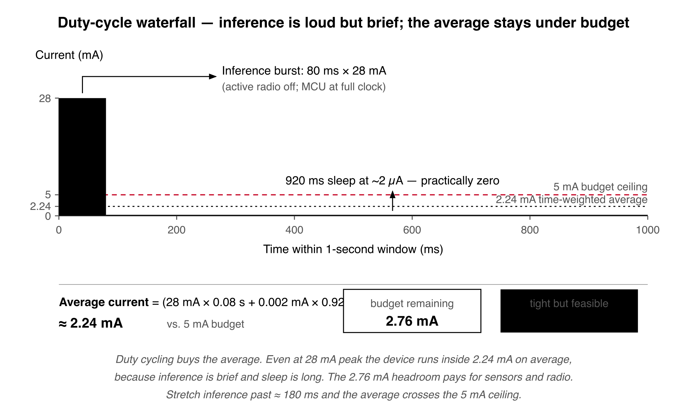
Figure 6.6 — Latency budget waterfallWhen the latency budget cannot be met, four moves remain. Upgrade the hardware to a faster processor or add an accelerator — costs more, draws more power, but solves compute definitively. Reduce the model’s operation count by shrinking the architecture and pay the accuracy cost. Relax the latency requirement, which sometimes works if the original number was set by feel rather than by physics. Reject AI for the application — if no model meets both the accuracy and latency floors on feasible hardware, AI is the wrong tool, and a hand-tuned threshold classifier or a decision tree probably gets you there. The compute constraint is unforgiving in a way the memory constraint is not. Memory has external storage as an escape valve, at a cost. Compute has no equivalent — either the processor can do the operations in time, or it cannot, and optimization gives you 2–10× improvement, not 100×. If you need 100×, you have chosen the wrong hardware or the wrong model. The next chapter looks at what happens when compute is fast enough but the energy budget says no.
Project: TinyML Feasibility Toolkit What you’re building this chapter: The compute verdict module — same pattern as memory, but comparing predicted latency against the latency constraint and emitting processor-class upgrade recommendations when the budget doesn’t close. Tool: Claude Code
The Prompt:
Add src/tinyml_feasibility/compute.py to the tinyml-feasibility toolkit.
Frozen ComputeVerdict dataclass:
- predicted_latency_ms: float
- latency_budget_ms: float
- headroom_pct: float
- arithmetic_intensity: float (MACs per byte of activation traffic — flags memory-bound vs compute-bound)
- verdict: Literal["FITS", "TIGHT", "FAILS"]
- mitigations: list[str]
- upgrade_path: list[Target] (targets in TARGETS that would close the budget, ranked by cost)
- to_markdown() method emits a Compute section matching Chapter 14's shape
Public function:
`assess_compute(model: ModelSummary, target: Target, app: Application) -> ComputeVerdict`
Implementation:
- predicted_latency_ms comes from profiling.predict_pipeline (chapter 4)
- headroom_pct = (latency_budget - predicted) / latency_budget * 100
- arithmetic_intensity = mac_count / (largest_activation_elements * 2) (rough; flags <1.0 as likely memory-bound)
- verdict: FITS if headroom > 20%; FAILS if headroom < 0; TIGHT otherwise
- mitigations from chapter 6's repertoire:
- if compute-bound: "Boost clock", "Add SIMD-optimized kernel (CMSIS-NN)", "Reduce model MAC count via pruning"
- if memory-bound: "Reduce activation footprint", "Add data prefetch", "Reduce input resolution"
- upgrade_path: filter TARGETS to those whose predicted latency on this model is < latency_budget; sort by cost_usd ascending, take top 3
CLI:
- `tinyml-feasibility check-compute --app <yaml> --target <name> --model <path>` prints ComputeVerdict and the upgrade_path table
Tests:
- test_fits_fast_processor — STM32H7 + small model, expect FITS
- test_fails_slow_processor — STM32L4R5 + heavy MobileNet, expect FAILS, upgrade_path includes STM32H7
- test_arithmetic_intensity_flag — model with very small activations and many MACs flagged compute-boundWhat this produces:
tinyml-feasibility check-compute --app jaguar.yaml --target STM32L4R5 --model jaguar_dscnn.tflite
returns predicted latency, headroom, verdict, and a ranked list of
next-tier targets that would close the budget if the current one
fails.
How to adapt this prompt: - For your own project: The upgrade_path is your shopping list when the first hardware pick fails. Take the cheapest target that fits. - For ChatGPT / Gemini: Works as-is. - For Claude Code: Best fit. The verdict pattern is now established; this chapter reinforces it. - For a Claude Project: Add the verdict-pattern template to the system prompt — chapters 7–10 will reuse the same shape.
Connection to previous chapters: Consumes
ModelSummary (3), Target (2), Application (1), and
profiling.predict_pipeline (4). The verdict pattern from
chapter 5 now repeats; chapter 14 will aggregate them.
Preview of next chapter: Chapter 7 adds
power.py — energy-balance equation, average power, battery
life, and duty-cycle recommendations. Power is the constraint where most
embedded AI projects actually break.
Use these prompts with Claude to generate interactive D3 v7 versions of the figures in this chapter. Each produces a standalone HTML file you can open in a browser and modify freely.
Prerequisites: Load brutalist/CLAUDE.md
and brutalist/DESIGN.md into your Claude project context
before using these prompts. They define the stack, color tokens, and
typography the figures use.
Build a static-with-tiny-chart D3 v7 figure that decomposes one
element of y = Wx + b into its operations. Three regions,
laid out left-to-right with CSS grid: a left panel labelled “FLOP view”
holding two stacked card rows — FLOP 1 multiply (a × b → t)
and FLOP 2 add (result + t → result); a center collapse
arrow with the caption “collapses to”; a right panel labelled “MAC view”
holding one ink-filled card showing the fused expression
result += a × b with the note “one instruction · one cycle
on M4 / M7 / A53”. Beneath, an ochre-left-border callout with the rule
of thumb (MACs ≈ FLOPs ÷ 2 for pure MAD work) and a small horizontal bar
chart of the operation counts for a 256→128 fully connected layer:
32,768 MACs (red), 65,536 multiply-add FLOPs (ink), 128 bias-add FLOPs
(ink). Use d3.scaleLinear for the bar chart, value labels
at the bar ends, JetBrains Mono tick labels, and a single tooltip
showing the operation count and the per-row note.
Reference implementation:
d3/chapter-06-compute-fig-01.html
Build a single-panel D3 v7 roofline plot for a Cortex-M7 at 400 MHz.
Channels: x is arithmetic intensity (MACs per byte transferred) on
d3.scaleLog with domain [0.25, 64]; y is achievable
performance (MMAC/s) on d3.scaleLog with domain [10, 800].
Roofline as a d3.line path through (0.25, 25),
(4, 400), and (64, 400) — the memory-bandwidth
slope of 100 MMAC/(s·byte) meeting a 400 MMAC/s compute plateau at a
ridge point at intensity 4. Annotate the slope segment with
“memory-bandwidth ceiling” rotated about -32°, the plateau with
“compute-bound plateau (400 MMAC/s sustained)”, and the ridge with a
4-pixel ink dot. Plot three kernels as circles with labels next to each:
A 64×64 matmul at (8, 350) in ink; B 3×3 conv 96×96×32 at (1.5, 100) in
red; C 512×512 matmul at (0.5, 50) in red. Dashed vertical drop lines
from each point to the x-axis. Light gridlines at log decades. Tooltip
on hover: kernel name, intensity, achieved performance, one-sentence
note.
Reference implementation:
d3/chapter-06-compute-fig-02.html
Build a five-column ladder figure in D3 v7 showing pipeline depth,
SIMD width, clock, peak int8 MMAC/s, and example chip for: Cortex-M0+,
Cortex-M4, Cortex-M7, Cortex-A53, and an NPU tier. Use
d3.scaleBand over the five tier names for the x-axis
layout. At the top, render a row of “capability bars” — five filled
rectangles whose heights grow left-to-right (16, 30, 44, 58, 72 px) and
whose fills run from light gray through --color-ink to
--color-red for the NPU. Below the bars, a tier name in EB
Garamond. Below the names, five horizontal rows separated by 1px
--color-border rules, one per attribute. Each cell has a
primary line and a smaller secondary line in
--color-secondary (e.g. peak shows “≈ 400 M” with “int8
SIMD via CMSIS-NN” underneath). Footer arrow spanning the full width
with the caption “capability × cost × power — all rise together”.
Tooltip on hover over any capability bar: tier name, pipeline, SIMD,
clock, peak, example chip.
Reference implementation:
d3/chapter-06-compute-fig-03.html
Build a two-row D3 v7 figure contrasting scalar and SIMD execution of
four int8 MACs. Top row labelled “Scalar Cortex-M4 (no SIMD)”: four
equally-sized cycle boxes side by side, each containing two small 28×22
byte cells aᵢ and bᵢ, an ×
between them, += after, and a wider 32-wide accumulator
cell acc. Caption per cycle: “MUL + ADD”. Right-side label:
“4 cycles total”. Bottom row labelled “SIMD Cortex-M4 (DSP extensions,
SMLAD-style)”: two stacked 32-bit registers Ra and
Rb, each rendered as four equal-width lane boxes labelled
a₀…a₃ and b₀…b₃. Four short arrows descend
from the lane pairs into one wide ink-filled accumulator bar holding the
expression acc += a₀·b₀ + a₁·b₁ + a₂·b₂ + a₃·b₃ (white
text). Right-side label: “1 cycle”. Below, a red 18-px EB Garamond
badge: “4× throughput at identical clock”. Marker arrowheads only — no
animation beyond the existing CSS transition. Tooltip on the SIMD lane
cells: “Lane i: Ra byte = aᵢ, Rb byte = bᵢ”.
Reference implementation:
d3/chapter-06-compute-fig-04.html
Build a single-panel D3 v7 scatter with thresholds. Channels: x is
inference latency (ms) on d3.scaleLog over [100, 3000]; y
is accuracy (%) on d3.scaleLinear over [80, 96]. Three
points: A 80 M MAC at (1333, 92), B 35 M MAC at (583, 89), C 12 M MAC at
(200, 84). A and B in --color-ink; C in
--color-red. Connect them with a dashed Pareto frontier
through the latency-sorted order. Draw a vertical dashed threshold at x
= 250 ms labelled “250 ms deadline” and a horizontal dashed threshold at
y = 88 labelled “88% accuracy floor”. Shade the upper-left feasibility
rectangle (x ≤ 250, y ≥ 88) at 8% red opacity with a centered italic
caption “feasible region (≤ 250 ms AND ≥ 88%)”. Light gridlines at axis
ticks. Tooltip on each point: model id, MAC count + accuracy, latency,
status (“fails deadline” / “fails accuracy”), one-sentence note about
parameter count.
Reference implementation:
d3/chapter-06-compute-fig-05.html
Build an interactive D3 v7 waterfall of a 1-second duty cycle.
Channels: x is time within the window (ms) on
d3.scaleLinear [0, 1000]; y is current draw (mA) on
d3.scaleLinear [0, 32]. Two filled rectangles in
--color-ink: an inference block from x = 0 to inferDuration
at 28 mA; a 1-px sleep strip from inferDuration to 1000 at the baseline.
Red dashed line at y = 5 labelled “5 mA budget ceiling”; ink dashed line
at y = computed average. Above the chart, a range slider (20–220 ms,
step 2, default 80) drives the inference duration; the chart, average
line, and verdict card update on input. Below the chart, a math block
showing Average = (28 × t + 0.002 × (1 − t)) / 1 s with
live numbers, then three cards: Budget (5.00 mA), time-weighted Average
(live), and Verdict — “pass · X mA headroom” on ink or “fail · over by X
mA” on red. Annotate the inference block “Inference burst: N ms × 28
mA”; annotate the sleep block “M ms sleep at ~2 µA — practically
zero”.
Reference implementation:
d3/chapter-06-compute-fig-06.html
The ideas in this chapter didn’t appear from nowhere. Frances Allen invented the techniques that turn a high-level loop into the SIMD instructions you’re now counting cycles on — vectorizing compilers, decades before CMSIS-NN.
Run this:
Who was Frances Allen, and how does her work on vectorizing compilers and program optimization connect to running int8 inference on a SIMD-equipped microcontroller? Three paragraphs. End with the single most surprising thing about her career.→ Search “Frances E. Allen” on Wikipedia. See what the model got right, got wrong, or left out.
Now make the prompt better. Try one of these:
What changes? What gets better? What gets worse?
Three weeks after a wildlife monitoring camera goes into the field, the batteries die. The unit was specified for six months on four AA cells, running inference every 30 seconds and transmitting once an hour. There is no fault report, no crash, no error. Classifications are correct. The unit just runs out of power 22 times faster than calculated.
You retrieve a unit and profile it. Measured current during inference: 85 mA. Predicted: 40 mA. The model runs correctly and consumes twice the predicted power, and at the duty cycle the system is running, twice the predicted power means the battery that should have lasted 4,380 hours lasts 200.
This is the power constraint, and it is unlike the memory and compute constraints in an important way: when memory or compute fails, the system fails loudly — crashes, missed deadlines, errors you can debug from a stack trace. When power fails, the system succeeds quietly until the battery dies. Every measurement is right, every classification is right, and the deployment is dead anyway. For battery-powered or energy-harvesting devices, power is usually the binding constraint. The memory and the compute can both be satisfied and the deployment still fails on this one.
Begin with a distinction that confuses people. Power is the instantaneous rate of energy consumption, measured in watts. A device drawing 50 mW consumes 50 millijoules every second. Energy is the total quantity, measured in joules or watt-hours: 50 mW for 10 seconds is 0.5 J. Energy = Power × Time. For battery-powered systems, what determines battery life is total energy consumed, not the instantaneous power — unless instantaneous power exceeds what the supply can deliver, which is the separate peak-power constraint from Chapter 2. A 1,000 mAh lithium-ion cell at 3.7 V stores 3.7 Wh = 13,320 J. At an average draw of 10 mW, that is 13,320 / 0.01 = 1,332,000 seconds, or about 15 days.
Now: that 10 mW average can come from running steadily at 10 mW, or from running at 200 mW for 5% of the time and at 0.5 mW for 95% of the time:
Pavg = (200 × 0.05) + (0.5 × 0.95) = 10 + 0.475 = 10.475 mW.
Battery life is essentially the same because average power is essentially the same. Duty cycling — running at high power for short bursts and sleeping at low power between them — is the entire reason embedded AI is feasible on coin cells.
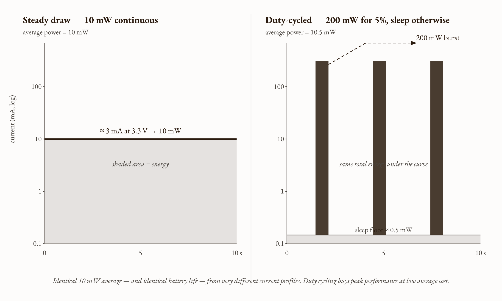
Figure 7.1 — Same average power, two current profiles. Battery life is set by area under the curve, not peak height.The mistake the doorbell team in Chapter 1 and the wildlife-camera team in this chapter both made is calculating power from the active current alone. A model that runs at 60 mA for 80 ms every 10 seconds does not consume 60 mA on average. With sleep current at 5 µA, average current is
$$ I_{\text{avg}} = \frac{60\ \text{mA} \cdot 0.08\ \text{s} + 0.005\ \text{mA} \cdot 9.92\ \text{s}}{10\ \text{s}} = 0.53\ \text{mA}, $$
which is roughly 100× lower than the active current. Sleep current dominates average power when the duty cycle is low, and most embedded AI systems run at very low duty cycles.
To understand why the optimization knobs work, you need the two components of power consumption in a digital circuit. Dynamic power is the energy spent switching transistors — charging and discharging the capacitive loads as logic gates toggle between 0 and 1 — and it scales as Pdyn = αCV2f, where α is the activity factor, C is switched capacitance, V is supply voltage, f is clock frequency. Dynamic power dominates when the processor is active. Doubling the clock roughly doubles dynamic power at constant voltage; reducing voltage helps quadratically because of the V2 term. Static power (also called leakage) is the current that flows through transistors even when they are not switching — through the gate oxide and junctions. Leakage depends on supply voltage, temperature (it rises exponentially with temperature), and process node (smaller transistors leak more per area). At room temperature on modern microcontrollers, static power is 1–10% of dynamic power when active, but it dominates in sleep mode because the dynamic power has been clock-gated away. Sleep current is essentially leakage.
The optimization strategy follows from this split. At high duty cycle (>50% active), reduce dynamic power: lower the clock, lower the voltage with DVFS, offload to a more efficient accelerator. At low duty cycle (<5% active), the active dynamic power barely matters because sleep dominates the average — reduce sleep current instead by enabling deeper sleep modes, gating peripheral power rails, and disabling everything that does not need to be on between inferences. Minimize active time, not active power, when sleep dominates the average.
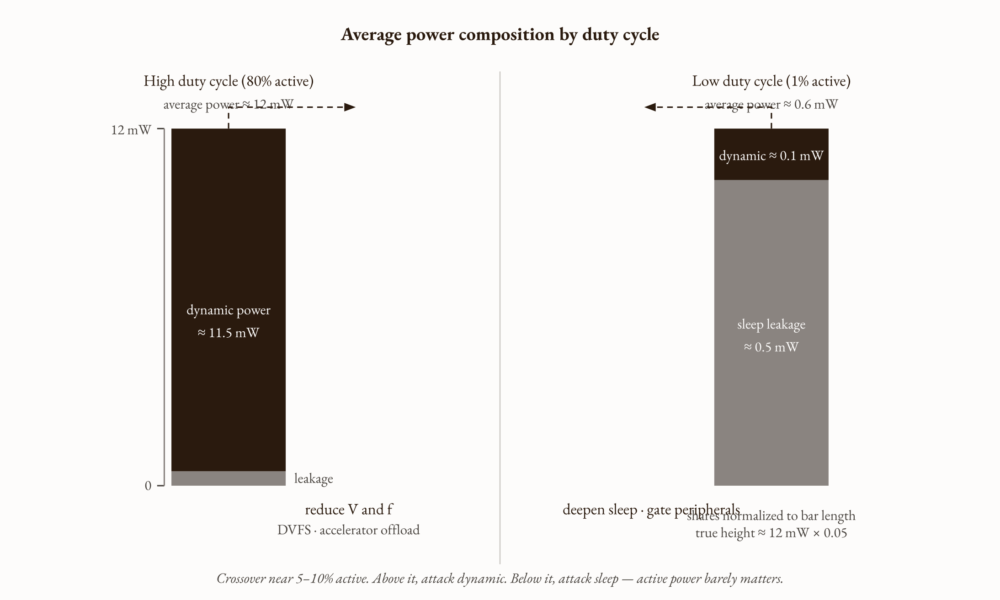
Figure 7.2 — Power composition shifts with duty cycle. The crossover near 5–10% active sets which optimization knob to turn.A common error is running inference at a low clock to “save power.” If inference takes 400 ms at 64 MHz at 20 mA, or 200 ms at 128 MHz at 35 mA, with 5 µA sleep current and a 10-second cycle:
At 64 MHz: Iavg = (20 ⋅ 0.4 + 0.005 ⋅ 9.6)/10 = 0.85 mA.
At 128 MHz: Iavg = (35 ⋅ 0.2 + 0.005 ⋅ 9.8)/10 = 0.75 mA.
The faster clock with shorter active time wins by 12% on average power. This is race to sleep — finish inference as fast as possible and return to deep sleep, because sleep is so much cheaper than slowed-down activity. The crossover depends on the ratio of active to sleep current and on the duty cycle. For systems that spend more than 90% of the time asleep, race to sleep almost always wins. For continuously active systems, reducing the clock saves power.
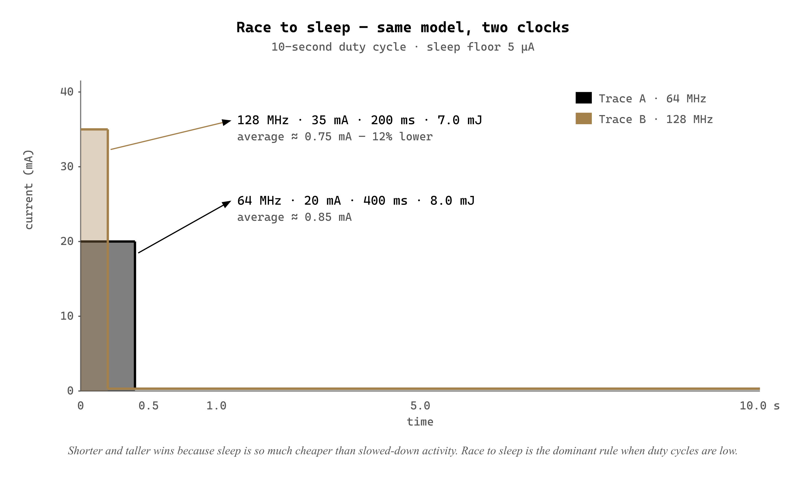
Figure 7.3 — Race to sleep. Faster clock, shorter active window, lower average power — because sleep is so much cheaper than slowed-down activity.The duty cycle itself is shaped by inference scheduling — how often you run inference and what wakes the system up. A wildlife camera running inference every 60 seconds with 150 ms of inference time has a duty cycle of 0.15 / 60 = 0.25%; at 50 mA active and 10 µA sleep, average is (50 ⋅ 0.0025) + (0.01 ⋅ 0.9975) = 0.135 mA, and a 2,000 mAh battery lasts about 14,800 hours, 617 days. Now suppose the application demands inference every 5 seconds to catch fast-moving animals. Duty cycle goes to 3%, average to 1.51 mA, battery life drops to 55 days. Increasing inference rate by 12× shrinks battery life by 11×.
Three scheduling patterns recur. Periodic inference runs at fixed intervals — simple, predictable, the right default for continuous-stream applications like environmental monitoring or health tracking. Event-driven inference runs only when a low-power sensor detects something worth running for: a PIR motion detector wakes the system, then the camera runs inference; a voice activity detector wakes the system, then the keyword spotter runs. For applications where the events of interest are rare relative to the polling interval, event-driven scheduling reduces duty cycle by 10–100× and reduces energy by the same factor — if the trigger mechanism’s own power is genuinely lower than continuous inference. A PIR consuming 50 µA continuously, replacing periodic inference at 50 mA × 0.015 s every 10 s, easily wins. Adaptive inference varies the interval with context: a vibration-monitoring system runs frequent inference when vibration is high, infrequent inference when it is normal. The savings come from the fact that interesting moments are rare in most applications, and you can afford to spend energy on them only when they happen.
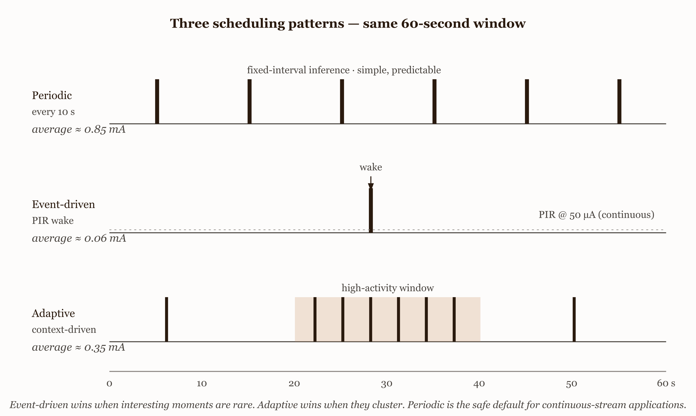
Figure 7.4 — Three scheduling patterns. Periodic is the safe default; event-driven wins when events are sparse; adaptive wins when they cluster.Energy harvesting changes the constraint. Instead of a fixed energy budget that depletes, a harvester gives you a power budget that has to balance in steady state. Average power consumed ≤ average power harvested, or the system fails. A 1 cm² solar cell in full sun generates roughly 10 mW (100 mW/cm² irradiance × 10% efficiency). If your system consumes 5 mW on average, it runs indefinitely. If it consumes 15 mW, it runs out of stored energy and dies. Harvesting is intermittent: solar drops to zero at night, vibration harvesters depend on machine operation, RF harvesting depends on transmitter proximity. The system has to store enough during high-harvest periods to survive the low ones. Two constraints emerge. Peak power: instantaneous draw during inference must not exceed the harvester’s peak output, or you need a storage capacitor large enough to discharge through the inference burst. Average energy balance: total energy consumed over a full harvest cycle (often 24 hours for solar) must not exceed total energy harvested. A vibration-harvesting industrial sensor that generates 5 mW during 16 hours of motor operation has 80 mWh of daily energy budget. If inference every 60 seconds at 80 mA × 120 ms × 3.3 V = 0.032 J per inference, multiplied by 1,440 inferences a day, plus sleep at 0.066 mW × 24 h, the total is about 14 mWh — comfortable, with a 5.7× margin. If the application demands inference every 10 seconds, that is 8,640 inferences/day, 76 mWh of inference energy alone, and the total is now 77.6 mWh against 80 mWh harvested. The margin is 3%, which is gone the moment harvesting efficiency drops by 5% from temperature, vibration amplitude, or aging. The energy-harvesting constraint is unforgiving in a way the battery constraint is not — you cannot just specify a bigger battery, because the input power is fixed by the cell area and the environment.
Profiling actual power consumption is non-negotiable. Spec sheets give you ranges; real systems can land anywhere in those ranges depending on configuration. The standard method is a current-sense resistor between the supply and the device — typically 0.1 to 1 Ω, dropping a small voltage that is measured by an oscilloscope or a dedicated power profiler (Nordic’s Power Profiler Kit II, the Keysight N6705C, the Joulescope) at high sampling rates, so you can see the individual inference burst and the sensor wake-up and the LoRa transmission as separate features in the current trace.
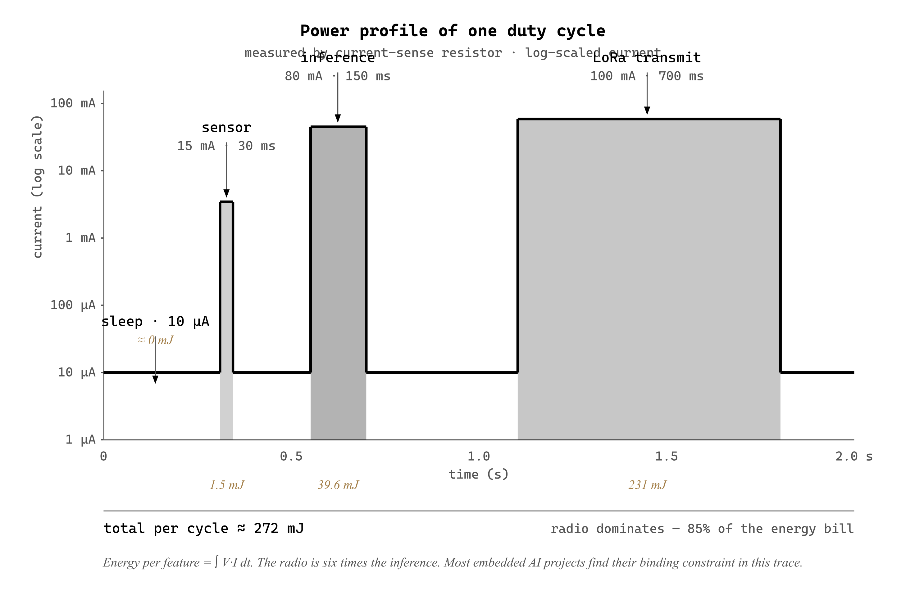
Figure 7.5 — Annotated power profile of one duty cycle. The radio is the biggest single feature — finding this on a real device usually finds the binding constraint. The pattern looks like: baseline sleep current (5–50 µA), a sensor-acquisition spike (10–50 ms at 5–20 mA), an inference spike (50–500 ms at 30–200 mA), and back to baseline. Energy per inference is the integral of V × I over the active interval; for a 3.3 V device with constant 80 mA and 150 ms active, energy is 3.3 ⋅ 0.08 ⋅ 0.15 = 0.0396 J = 39.6 mJ. If inference happens every 30 seconds, average power is 1.32 mW, and a 2,000 mAh / 6,600 mWh / 23,760 J battery lasts 23, 760/0.00132 ≈ 18 million seconds, or 208 days. Add sleep current at 10 µA and the sleep contribution is 0.985 mJ per cycle on top of the 39.6 mJ of inference — a 2.4% adjustment, which is small here because duty cycle is low, but which dominates as duty cycle rises.Profiling reveals surprises. Peripherals left enabled, GPIO pins floating and pulling leakage current, firmware bugs that prevent deep-sleep entry, communication modules whose “sleep” mode is not what the datasheet implied — any of these can double or triple the average current. The wildlife camera that drained batteries in three weeks almost certainly had one of these — likely a peripheral left active or an unintended wake-up keeping the part out of true deep sleep.
To make the workflow concrete, design a remote agricultural sensor on two AA alkaline cells (3 V, 2,850 mAh, 8,550 mWh, 30,780 J) for six-month deployment. The hardware: STM32L4 (1 µA deep sleep, 12 mA active at 80 MHz), a soil-moisture sensor (500 µA when powered), and a LoRaWAN radio (40 mA transmit, 1 µA sleep). The model is a small int8 anomaly detector — 100,000 parameters, 15 M MACs per inference, measured 220 ms latency at 12 mA. Target average power for six months is 30, 780/(4, 380 ⋅ 3, 600) = 1.95 mW.
Periodic inference every ten minutes: per cycle (600 s), sensor 7.5 mJ, inference 7.92 mJ, LoRa amortized from once-per-hour 10 mJ, sleep 1.78 mJ, total 27.2 mJ. Average power 0.045 mW. Battery life would be 21 years if nothing else mattered — the constraint is not even close to binding.
Periodic inference every minute: per cycle (60 s), sensor 7.5 mJ, inference 7.92 mJ, LoRa 1 mJ, sleep 0.155 mJ, total 16.6 mJ. Average power 0.277 mW. Battery life 3.5 years. Still huge margin.
Continuous inference every second: per cycle (1 s), sensor 7.5 mJ, inference 7.92 mJ, LoRa 0.017 mJ, sleep 0.0008 mJ, total 15.4 mJ. Average power 15.4 mW. Battery life 23 days. Now the constraint is violated, and dramatically so. Continuous inference is the wrong scheduling pattern for this application.
The interesting result is that the binding constraint here is not inference at all — it is communication. Each LoRa transmission costs 60 mJ; with hourly transmission the average is 16.7 mW, with six-hour transmission the average drops to 2.78 mW. Reducing LoRa from once per hour to once per six hours, with one-minute inference, gets the system to about 0.26 mW average and a battery life close to 4 years. The model could run more often than once a minute and the system would still be fine. The application’s binding number is not the inference frequency; it is the radio.
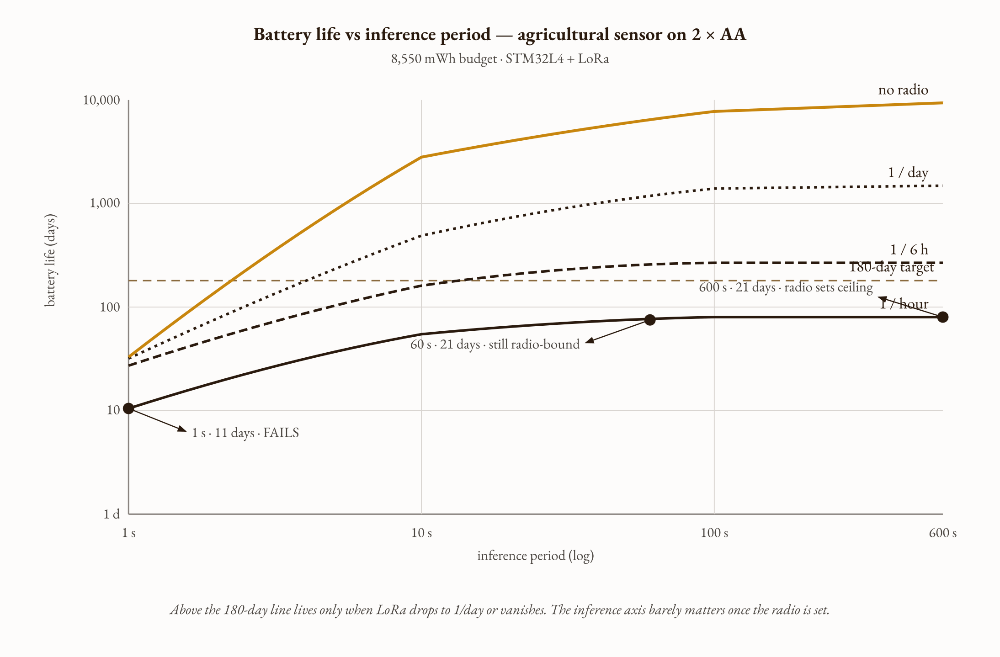
Figure 7.6 — Battery life vs inference period. The radio sets the ceiling; the inference axis barely matters once the radio is set.When the power budget cannot be met, the moves are roughly the moves we already saw in Chapter 1’s design space, plus a few specific to power. A larger battery or a harvester gets you more energy at the cost of size, weight, and BOM. Faster inference at higher clock often reduces energy per inference because of race-to-sleep. Event-driven triggering reduces inference frequency by 10–100× when the events of interest are sparse. Cloud offload moves the cost from inference energy to communication energy, which is the right trade if the application’s network is cheap and not the right one if it is not. Power is the constraint with the most knobs, because duty cycle is a free variable in a way that processor speed and memory size are not — you can almost always reduce average power by running less often, and the question is whether running less often still meets the application requirement. If yes, power is solvable. If no, the choice of hardware, model, or system architecture was wrong, and the next chapter’s tools — hardware accelerators that execute AI operations faster and more efficiently than general-purpose cores — are one of the directions that opens up.
Project: TinyML Feasibility Toolkit What you’re building this chapter: The power verdict module — energy-balance equation, average power, battery-life prediction, and duty-cycle recommendations. Tool: Claude Code
The Prompt:
Add src/tinyml_feasibility/power.py to the tinyml-feasibility toolkit.
Frozen PowerVerdict dataclass:
- active_energy_mj: float (energy per inference)
- sleep_power_mw: float
- duty_cycle_s: float (inference period from app config)
- average_power_mw: float
- battery_life_days: float | None (None if no battery_mah in app config)
- power_budget_mw: float
- headroom_pct: float
- verdict: Literal["FITS", "TIGHT", "FAILS"]
- mitigations: list[str]
- to_markdown() emits a Power section matching Chapter 14's shape
Public function:
`assess_power(model: ModelSummary, target: Target, app: Application, latency_estimate: LatencyEstimate) -> PowerVerdict`
Implementation:
- active_current_ma = target.active_current_ma_per_mhz * target.clock_mhz
- active_power_mw = active_current_ma * supply_voltage (default 3.3V; configurable)
- active_energy_mj = active_power_mw * latency_estimate.total_ms / 1000
- sleep_power_mw = target.sleep_current_ua * supply_voltage / 1000
- average_power_mw = (active_energy_mj / duty_cycle_s) + sleep_power_mw
- battery_life_days = (battery_mah * supply_voltage * 3.6 / 1000) / (average_power_mw / 1000) / 86400 (only if app.battery_mah set)
- headroom_pct = (power_budget - average_power) / power_budget * 100
- verdict: FITS if headroom > 20%; FAILS if headroom < 0; TIGHT otherwise
- mitigations:
- "Increase duty cycle (run inference less often)"
- "Race-to-sleep — boost clock to finish faster" (recompute and verify it actually wins)
- "Event-driven trigger (wake on threshold) instead of fixed interval"
- "Smaller model — less active energy per inference"
- "Lower-power target — see upgrade_path"
Add `app` fields if missing:
- battery_mah: float | None
- supply_voltage: float (default 3.3)
- duty_cycle_s: float
CLI:
- `tinyml-feasibility check-power --app <yaml> --target <name> --model <path>` prints PowerVerdict including battery_life_days
Tests:
- test_fits_low_duty_cycle — long duty cycle, expect FITS, average power well under budget
- test_fails_continuous_inference — duty_cycle_s=0.01 (continuous), expect FAILS
- test_race_to_sleep_check — for a worked case, faster clock with same model produces lower energy_per_inference
- test_battery_life_calculation — for STM32L4R5 + 1000 mAh + 30s duty cycle + small model, battery_life_days > 365What this produces:
tinyml-feasibility check-power --app jaguar.yaml --target STM32L4R5 --model jaguar_dscnn.tflite
returns average power, battery life prediction in days, and the verdict
with mitigations. This is usually where embedded AI projects find their
binding constraint.
How to adapt this prompt: - For your own project: The duty_cycle_s field is the most important knob. If verdict fails, scaling the duty cycle is usually cheaper than upgrading hardware. - For ChatGPT / Gemini: Works as-is. Watch for fabricated current numbers — pin to datasheets. - For Claude Code: Best fit. - For a Claude Project: The energy-balance equation generalizes; subsequent chapters (8 accelerator, 9 comms) reuse the same pattern.
Connection to previous chapters: Reads ModelSummary (3), Target (2), Application (1), LatencyEstimate (4). Produces the verdict that, combined with chapters 5 and 6, identifies the binding constraint.
Preview of next chapter: Chapter 8 adds
accelerator.py — does adding an NPU close the budget?
Cost-benefit calculation against three real candidate targets.
Use these prompts with Claude to generate interactive D3 v7 versions of the figures in this chapter. Each produces a standalone HTML file you can open in a browser and modify.
Prerequisites: Load brutalist/CLAUDE.md
and brutalist/DESIGN.md into your Claude project context.
They define the stack, naming conventions, color system, and typography
these figures use.
Build a two-panel D3 v7 figure comparing two current-vs-time traces
that share an average power of 10 mW. Left panel: a steady 3 mA
continuous draw across the full 10-second window. Right panel: a
duty-cycled trace with 60 mA bursts of 150 ms duration recurring every 3
seconds over a 0.15 mA sleep floor. Chart type: stepped line + area
fill, log-scaled y-axis from 0.1 to 200 mA, linear x-axis in seconds.
Channels: x = time (linear), y = current (log). Use
var(--color-ink) for trace,
var(--color-secondary) 25% opacity for area fill. Title
each panel with its scheme; annotate that both shaded areas integrate to
the same energy. Tooltip on hover reports time and instantaneous
current. Standalone HTML, D3 7.9.0 from the pinned CDN, accessible
(role, title, desc), ResizeObserver redraw,
prefers-reduced-motion suppression.
Reference implementation:
d3/chapter-07-power-and-energy-fig-01.html
Build a single D3 v7 stacked column chart with two columns, each
normalised to total share (0–100%). Column A — High duty cycle (80%
active): dynamic 96%, leakage 4%; subtitle “avg ≈ 12 mW”; mitigation
label above bar reads “reduce V and f · DVFS · accelerator offload”.
Column B — Low duty cycle (1% active): dynamic 17%, leakage 83%;
subtitle “avg ≈ 0.6 mW”; mitigation label reads “deepen sleep · gate
peripherals”. Chart type: vertical stacked bars. Channels: x = duty
regime (band), y = share (linear 0–1). Dynamic segment uses
var(--color-ink); leakage segment uses
var(--color-secondary). Mitigation labels use
var(--color-ochre). y-axis ticks formatted as percentages.
Tooltips show segment percent per bar. Standalone HTML, D3 7.9.0,
accessible, ResizeObserver, reduced-motion safe.
Reference implementation:
d3/chapter-07-power-and-energy-fig-02.html
Build a single D3 v7 dual-trace current-vs-time chart over a
1.2-second window inside a 10-second duty cycle. Trace A (64 MHz): step
from 20 mA at t=0 to a 0.005 mA sleep floor at t=0.4 s. Trace B (128
MHz): step from 35 mA at t=0 to the same floor at t=0.2 s. Chart type:
overlaid stepped lines with light area fills underneath. Channels: x =
time (linear, seconds), y = current (log, 0.001–50 mA). Trace A uses
var(--color-ink); Trace B uses
var(--color-red). Include legend with computed energy per
active phase (8.0 mJ vs 7.0 mJ) and an annotation “shorter and taller
wins — 12% lower average”. Standalone HTML, D3 7.9.0, accessible markup,
ResizeObserver, reduced-motion safe.
Reference implementation:
d3/chapter-07-power-and-energy-fig-03.html
Build a D3 v7 three-row swimlane chart over a shared 60-second
x-axis. Lane 1 — Periodic: inference spikes at t = 5, 15, 25, 35, 45,
55. Lane 2 — Event-driven: a single PIR-wake spike at t = 28 colored in
var(--color-red). Lane 3 — Adaptive: dense spikes at t =
22, 25, 28, 31, 34, 37 inside a shaded “high-activity window” rectangle
from t = 20 to 40, plus sparse spikes at t = 6 and 50. Chart type:
categorical swimlanes (scaleBand on y) with rectangular event marks (4
px wide). Channels: x = time (linear seconds), y = lane (band). Left
margin holds per-lane label, sub-label, and average-current chip.
Activity band uses var(--color-ochre) at 18% opacity.
Tooltips show event time and lane. Standalone HTML, D3 7.9.0,
accessible, ResizeObserver, reduced-motion safe.
Reference implementation:
d3/chapter-07-power-and-energy-fig-04.html
Build a single D3 v7 stepped current-vs-time chart over a 2-second
window. Trace points (mA): sleep floor 0.01 from t=0 to 0.35, sensor 15
from 0.35 to 0.38, sleep, inference 80 from 0.55 to 0.70, sleep, LoRa
100 from 0.95 to 1.65, sleep until 2.0. Chart type: stepped line with
shaded feature regions. Channels: x = time (linear), y = current (log,
0.001–200 mA). Render four shaded rectangles — sensor
(var(--color-secondary)), inference
(var(--color-ink)), LoRa (var(--color-red)) —
at 18–22% opacity. Label each region with feature name above and energy
in mJ below (1.5 / 39.6 / 231). Add a top-right callout “radio = 85% of
energy bill · total ≈ 272 mJ” in var(--color-red). Tooltip
on each region reports peak current and energy. Standalone HTML, D3
7.9.0, accessible, ResizeObserver, reduced-motion safe.
Reference implementation:
d3/chapter-07-power-and-energy-fig-05.html
Build a single D3 v7 multi-line chart for the agricultural sensor.
Compute battery life in days for inference periods from 1 to 600 s (log
scale) at four LoRa intervals: 1/hour, 1/6 h, 1/day, no radio. Energy
model (mJ): inference 7.92 per cycle + sensor 7.5 per cycle + sleep 3.3
µW + LoRa 60 mJ per transmit. Budget: 8,550 mWh on two AA cells. Chart
type: log-log line chart. Channels: x = inference period (log seconds),
y = battery life (log days). Use var(--color-ink) for the
three LoRa curves (solid, dashed 6 3, dotted 2 3) and
var(--color-ochre) for the no-radio curve. Add a dashed
var(--color-red) horizontal target line at 180 days labeled
“180-day target”. Mark sample points at inference periods of 1, 60, 600
s on the 1/hour curve with hover tooltips. Standalone HTML, D3 7.9.0,
accessible, ResizeObserver, reduced-motion safe.
Reference implementation:
d3/chapter-07-power-and-energy-fig-06.html
The ideas in this chapter didn’t appear from nowhere. Rolf Landauer proved that erasing a single bit of information costs a minimum amount of energy — kT ln 2, set by physics — and every joule your inference burns is paying some multiple of that bill.
Run this:
Who was Rolf Landauer, and how does his principle on the thermodynamic cost of erasing information connect to the energy budget of embedded inference? Three paragraphs. End with the single most surprising thing about his career.→ Search “Rolf Landauer” on Wikipedia. See what the model got right, got wrong, or left out.
Now make the prompt better. Try one of these:
What changes? What gets better? What gets worse?
Your model runs correctly on a Cortex-M4 at 100 MHz, but inference takes 850 ms and your deadline is 100 ms. You have already quantized to int8, pruned 30% of the weights, and reordered layers for cache locality. The model cannot get smaller without accuracy falling below the application’s floor. The CPU cannot get faster without changing the chip. You evaluate an STM32N6 with a built-in NPU. The same model now runs in 45 ms. The latency constraint is satisfied, and power drops 60% because the accelerator finishes inference in a fifth of the time. But the STM32N6 costs $12 per unit instead of $3, the toolchain is more complex, and the NPU only accelerates certain operations — your model’s depthwise convolutions fall back to the CPU, capping the real speedup. The decision is not obvious.
That decision — when a hardware accelerator is the right answer, and when it is not — is the subject of this chapter. The short version is that accelerators solve the compute constraint at the cost of cost, complexity, and inflexibility, and the question is always whether what you give up is worth what you get.
The reason CPUs are inefficient for inference is structural. A general-purpose CPU is designed to execute arbitrary instruction sequences with maximum flexibility — complex pipelines, branch prediction, out-of-order execution, caches to handle unpredictable workloads. That flexibility costs energy and silicon area on control logic instead of arithmetic. Neural-network inference is the opposite of arbitrary: a regular computation, millions of multiply-accumulates with predictable data flow and almost no branching. A CPU executing inference spends most of its energy fetching instructions, managing the cache, and shepherding the pipeline, not doing arithmetic. On a Cortex-M7 at 400 MHz running a 128 × 128 matmul (about 2.1 M MACs), roughly 30% of cycles are arithmetic, 50% are memory access, 15% are instruction fetch and decode, and 5% are pipeline stalls and cache misses. Two-thirds of the CPU’s time is overhead. A specialized accelerator removes most of that overhead.
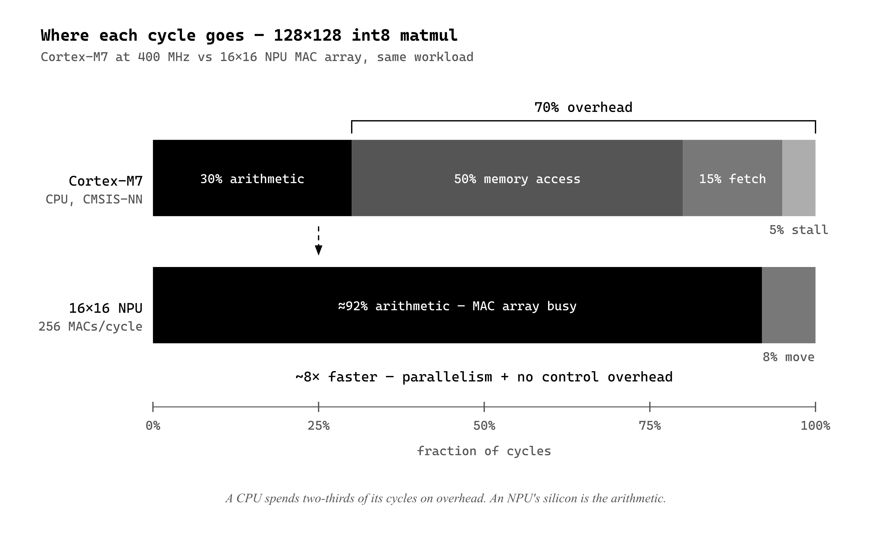
Figure 8.1 — Where each cycle goes on a 128×128 matmul. A CPU spends two-thirds of its cycles on overhead. An NPU’s silicon is the arithmetic.An NPU designed for matmul has dedicated MAC units arranged in a 2D array (commonly 8 × 8, 16 × 16, or 32 × 32 MACs in parallel), local scratchpad memory close to the compute (no cache, no arbitrary access patterns), and a simple controller that sequences operations without per-cycle instruction fetch. The same 128 × 128 matmul on a 16 × 16 MAC array does the arithmetic in (128/16)3 = 512 cycles plus memory transfer, which at 400 MHz lands around 1.3 ms — about 8× faster than the CPU. The speedup comes from parallelism (256 MACs per cycle versus 1) and the absence of control overhead. The cost: the NPU is not a general processor, it executes only what its MAC array and memory architecture support, and any operation it cannot run falls back to the CPU. That fallback is where most of the disappointment with NPU performance comes from.
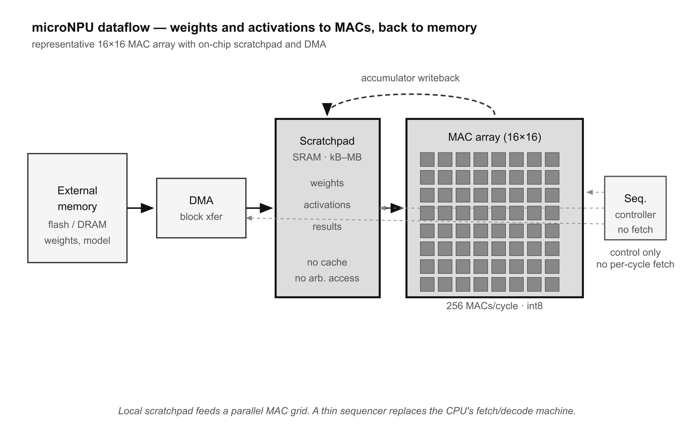
Figure 8.2 — microNPU dataflow. Local scratchpad feeds a parallel MAC grid; a thin sequencer replaces the CPU’s fetch/decode machine.Three classes of accelerator matter for embedded AI: DSPs, NPUs, and FPGAs.
DSPs are signal-processing CPUs — TI’s C674x, ARM’s Cortex-M55, parts purpose-built for filtering, FFT, correlation. They are not AI-specific, but they are very good at certain AI operations because they have multiple MAC units in parallel (2–8 per cycle), SIMD instructions on packed 8-bit and 16-bit values, dedicated address-generation units for stride and circular-buffer patterns, and zero-overhead loop counters. They run fully connected layers, 1D convolutions (audio, time series), depthwise separable convolutions, and fixed-point quantized models efficiently. They struggle with 2D convolution (the address patterns exceed what the AGUs handle cleanly), pooling and activations, and dynamic models. As a quick comparison: a 1D-CNN keyword spotter at 18 M MACs runs in about 300 ms on a Cortex-M4 at 100 MHz with CMSIS-NN, and about 90 ms on a TI C5535 DSP at the same clock — 3.3× faster from more MAC units and better SIMD utilization, at the cost of more power (roughly 2× active current) and a different toolchain. DSPs occupy a middle ground: better than CPUs for signal-heavy AI, worse than NPUs for general inference, but uniquely good when your application combines both AI and traditional DSP (FFT-based audio features, sensor filtering) on the same chip.
NPUs are domain-specific accelerators built only for inference. They divide into three size classes. Datacenter NPUs (Google TPU, NVIDIA TensorRT) have thousands of MACs and gigabytes of on-chip memory; not relevant for embedded. Edge NPUs (Coral Edge TPU, Hailo-8, Intel Movidius) carry 100–1,000 MACs and megabytes of memory at 0.5–5 W; designed for cameras, drones, edge gateways. MicroNPUs (ARM Ethos-U55, STM32 AI core, Syntiant NDP120) sit at the microcontroller scale — 8–256 MACs, kilobytes to a couple of megabytes of memory, 10–200 mW. The microNPU is the class that integrates with or pairs with an MCU.
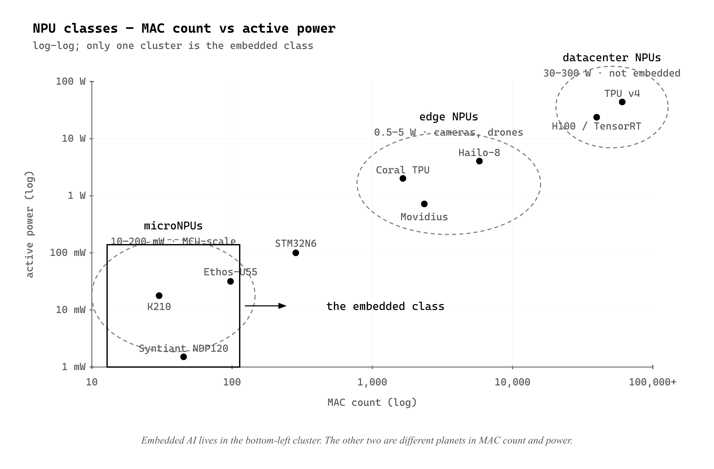
Figure 8.3 — NPU classes by MAC count vs power. Embedded AI lives in the bottom-left cluster; the other two are different planets.The ARM Ethos-U55, paired with Cortex-M55 or Cortex-M85 cores, is representative. It comes configured with 32, 64, 128, or 256 MACs (chosen at SoC design time), supports int8 and int16 quantized models, and ships with 128 KB to 2 MB of on-chip SRAM. At 500 MHz with 256 MACs, peak throughput is 128 G int8 MACs/s. For a 50 M MAC model, theoretical latency is about 390 ms — but real performance depends on whether the model’s operations map onto the accelerator. The Ethos-U55 accelerates 2D convolution (standard and depthwise), fully connected layers, pooling, and element-wise operations (add, multiply, ReLU). It does not accelerate attention mechanisms, custom activation functions, sparse operations, or dynamic control flow — those fall back to the CPU. A model that is 80% accelerated operations and 20% non-accelerated operations does not get the full 10× speedup; it gets more like 3–5× because the CPU bottleneck dominates the unaccelerated portions. The mapping of model to accelerator is the constraint, not the accelerator’s peak throughput.
![Block diagram. An operation router at the top splits incoming model ops into two streams. Solid arrows route supported ops (conv2d, depthwise, fully connected, pooling, element-wise) to an Ethos-U55 microNPU on the left. Dashed arrows route unsupported ops (attention, custom activations, sparse, dynamic control flow) to a Cortex-M55 host CPU on the right. Both blocks share an SRAM pool over an AXI bus. A callout notes that 80 percent accelerated yields only 3 to 5x realised speedup because CPU fallback dominates.](../images/chapter-08-hardware-for-ai-fig-04.png) Figure 8.4 — Cortex-M55 + Ethos-U55 routing. The mapping of model
ops to accelerator decides realised speedup; peak throughput is the
ceiling, not the floor.
Figure 8.4 — Cortex-M55 + Ethos-U55 routing. The mapping of model
ops to accelerator decides realised speedup; peak throughput is the
ceiling, not the floor.
The STM32N6 takes the integrated approach further: an 800 MHz Cortex-M55 plus a proprietary NPU rated at 3 TOPS for int8, with 2.5 MB SRAM and 4 MB flash. A 40 M MAC MobileNetV2 runs in about 180 ms CPU-only on this part, and 45 ms with the NPU active — a measured 4× speedup that is real and transformative for vision applications with hard latency targets. The trade is BOM cost: $12–15 per part versus $4–6 for an STM32H7 without NPU. At 100,000 units per year, that gap is $800,000.
FPGAs are the third option, and they answer a different question. Where a CPU is flexible-but-slow and an NPU is fast-but-rigid, an FPGA is configurable — you design exactly the circuit you need (custom MAC array sizes, custom data paths for unusual operations, bit-level precision options, pipelined execution with no instruction fetch overhead) and program it onto reconfigurable hardware. They make sense when your model has operations CPUs and NPUs do not support, when latency requirements exceed even what an NPU can deliver, or when you genuinely need to update accelerator logic in the field. The downside is cost ($20–200 for embedded-grade parts), power (500 mW to several watts during inference), and development effort. FPGA design requires HDL expertise (Verilog or VHDL) most embedded software engineers do not have, and development time is months rather than weeks.
A concrete comparison: deploying a YOLO object-detection model. CPU-only on a Raspberry Pi Zero 2 W at quad-core 1 GHz costs $15, draws 1.5 W, takes 2,500 ms per frame. A Coral Edge TPU paired with the same A53 host costs $60, draws 2 W combined, takes 25 ms per frame — a 100× speedup from the dedicated NPU. A Xilinx Zynq-7020 with a custom YOLO accelerator in fabric costs $150, draws 3 W, takes 15 ms per frame, and required six months of FPGA design and verification to bring up. The Edge TPU is the right answer for almost every commercial deployment of this kind: large speedup over CPU, reasonable power, off-the-shelf availability. The FPGA is faster, but only 1.7× faster than the TPU, at 2.5× the cost, 50% more power, and a development timeline that kills the project’s economics. FPGAs are the right answer for research prototypes, niche low-volume applications where NPUs are insufficient and ASIC NRE is unjustifiable, or applications where field-reconfigurable accelerator logic is genuinely required. For most embedded AI deployments, FPGAs are overkill.
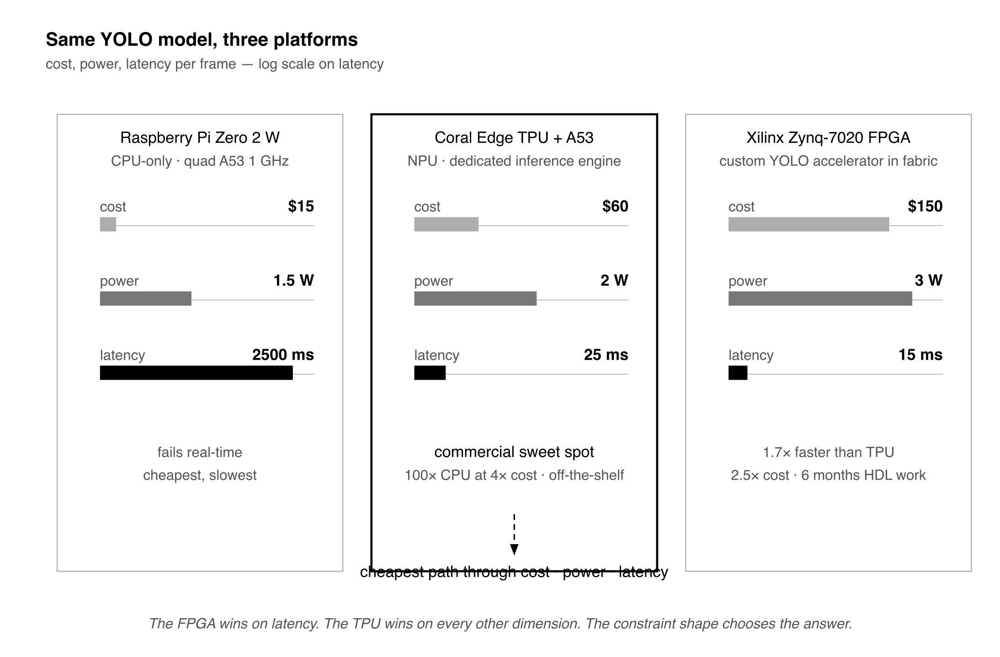
Figure 8.5 — Same YOLO, three platforms. The FPGA wins on latency; the Coral TPU wins on every other dimension. The constraint shape chooses the answer.Several integrated AI hardware options are worth knowing by name and rough specification. Cortex-M55 + Ethos-U55 (NXP, ST, Renesas) — microNPU paired with the M55 CPU, 256 KB to 2 MB SRAM, 50–150 mW during inference, $8–15 per unit, mature toolchain (TFLite Micro with the Ethos-U delegate, the Vela optimizer for quantization and graph transformation), best for keyword spotting, gesture recognition, and small-image classification at 96 × 96 or below. STM32N6 — Cortex-M55 at 800 MHz plus a proprietary NPU at 3 TOPS, 2.5 MB SRAM, 180 mW measured during inference, $12–18 per unit, STM32Cube.AI toolchain, best for vision on MCU including defect detection and gesture recognition. Syntiant NDP120 — an 8-core neural processing array, 1.5 MB on-chip, no general-purpose CPU, designed exclusively for always-on audio AI at under 200 µW, $3–5 per unit, proprietary toolchain (Syntiant Core 2), runs continuously on a coin cell for years but cannot do anything other than audio. Kendryte K210 — RISC-V dual-core at 400 MHz with a 64-MAC convolution accelerator (KPU), 8 MB SRAM, 300 mW during inference, $6–8 per unit, hobbyist-grade tooling and limited TensorFlow support, popular in education and prototyping but not for commercial products.
| Device | NPU type | Best for | Power | Cost | Toolchain |
|---|---|---|---|---|---|
| Cortex-M55 + Ethos-U55 | microNPU | audio, sensors | 50–150 mW | $8–15 | mature |
| STM32N6 | microNPU | vision on MCU | 180 mW | $12–18 | medium |
| Syntiant NDP120 | audio NPU | always-on voice | 0.2 mW | $3–5 | proprietary |
| Kendryte K210 | vision NPU | hobbyist vision | 300 mW | $6–8 | low |
The decision matrix is a few lines: always-on voice at ultra-low power → Syntiant. General-purpose inference on MCU with mature tooling → Cortex-M55 + Ethos-U55. Vision on MCU with the highest performance → STM32N6. Cost-sensitive hobbyist or educational vision → K210. None of these is universal.
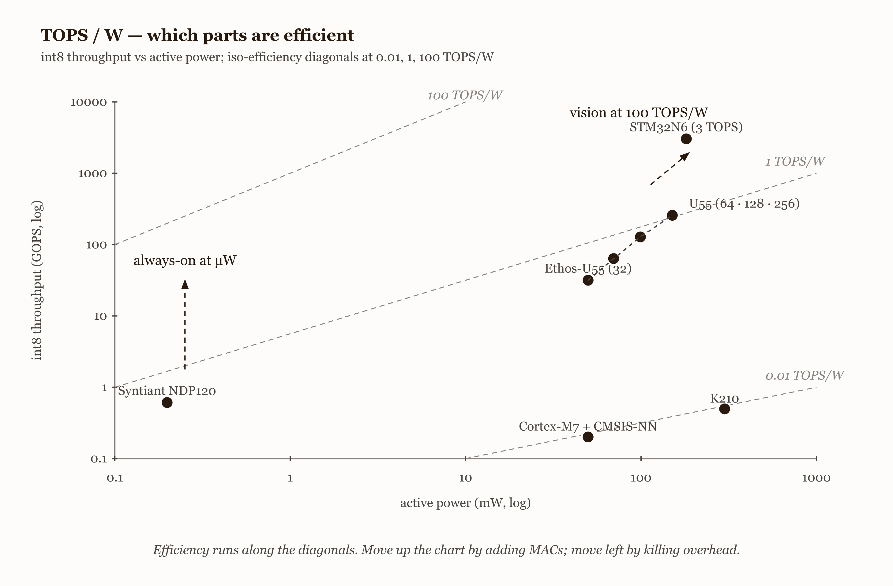
Figure 8.6 — TOPS/W efficiency. Move up the chart by adding MACs; move left by killing overhead. Diagonals are constant efficiency.The harder skill is knowing when not to use an accelerator. There are five recurring cases. The model is too small to benefit: a 10,000-parameter model running in 5 ms on a Cortex-M4 will not get faster from an NPU because the overhead of moving data to the accelerator, configuring it, and moving results back exceeds the time saved. The operations don’t map: if your model is mostly custom layers, dynamic control flow, or sparse operations, the accelerator handles maybe 20–30% of the workload, the CPU runs the rest, and the speedup is negligible. Profile the model first; if the bottleneck is in unaccelerated operations, the accelerator is wasted silicon. The CPU is fast enough: if a Cortex-M7 at 480 MHz with CMSIS-NN already meets your latency, adding an NPU is cost without benefit — the simpler CPU solution wins. The accelerator’s power exceeds the CPU’s for short workloads: an NPU drawing 150 mW for 10 ms uses 1.5 mJ; a CPU drawing 30 mW for 40 ms uses 1.2 mJ. The CPU uses less energy despite being slower, and for battery-powered low-duty-cycle systems, energy-per-inference is what determines battery life. Toolchain immaturity: a proprietary accelerator with poor documentation, limited model support, and buggy code generation can cost more in debugging time than it saves in inference time. Unless the performance gain is transformative — 10× or more — stick with the CPU and standard tools.
The decision workflow is short: profile the model on the CPU with optimized kernels (CMSIS-NN, XNNPACK), measure whether the CPU meets latency, power, and cost requirements; if it does, stop, do not add complexity; if it does not, identify the bottleneck operation, check whether an available accelerator supports it, estimate the realistic speedup including fallback operations, compare cost and power and development time. Only when the accelerator’s benefits exceed its costs should you use it. Acceleration is a tool, not a goal. The goal is meeting the application’s constraints with the simplest, cheapest solution that works.
To make this concrete: a 96 × 96 image classifier for defect detection on a manufacturing line. Model: 400,000 parameters int8, 35 M MACs, 95% accuracy. Application: ≤50 ms latency, <500 mW average, <$15 per unit, 50,000 units per year. STM32H7 (Cortex-M7 at 480 MHz, CPU-only with CMSIS-NN): 180 ms latency, 400 mW, $6 per unit. Fails latency by 3.6× — even with perfect optimization the CPU cannot run this model fast enough. STM32N6 (Cortex-M55 + NPU at 3 TOPS): 42 ms latency, 650 mW, $14 per unit. Meets latency. Exceeds power budget by 30%, but if the system is mains-powered and only thermally limited, 650 mW may be acceptable on thermal analysis. Cost is within budget. Viable. Raspberry Pi Compute Module 4 (quad Cortex-A72 at 1.5 GHz with NEON): 8 ms latency, 2,500 mW, $35 per unit. Latency is excellent, but power is 5× over budget and cost is 2.3× over. Not viable.
Option B is the only viable answer. The NPU’s 4× speedup over the CPU is the difference between a product that works and one that does not. But change the application’s latency requirement to 100 ms instead of 50 ms, and Option A becomes viable — 180 ms is close enough that further model reduction (smaller architecture, better quantization, layer fusion) could bring it under 100 ms. In that case, the $6 CPU-only part beats the $14 NPU part by $400,000 in BOM cost across 50,000 units. The constraint shape determines the answer. The accelerator is justified when it is the cheapest path through the constraints, and not before. The next chapter shifts from local hardware to the network: when does inference belong on the device, and when does it belong on a server somewhere else?
Project: TinyML Feasibility Toolkit What you’re building this chapter: An accelerator decision module — given a model and a target without an NPU, evaluate whether moving to an accelerator-equipped target closes the budget and at what cost. Tool: Claude Code
The Prompt:
Add src/tinyml_feasibility/accelerator.py to the tinyml-feasibility toolkit.
Frozen AcceleratorDecision dataclass:
- baseline_target: Target (current pick, CPU-only)
- baseline_verdict: dict (combined memory+compute+power verdict from prior modules)
- candidate_targets: list[Target] (TARGETS where has_accelerator=True)
- candidate_verdicts: list[dict]
- recommendation: Literal["KEEP_BASELINE", "UPGRADE_TO_NPU", "INSUFFICIENT_DATA"]
- recommended_target: Target | None
- justification: str (one paragraph naming the constraint that decided)
- to_markdown() emits an Acceleration section matching Chapter 14's shape
Public function:
`assess_accelerator_benefit(model: ModelSummary, baseline_target: Target, app: Application) -> AcceleratorDecision`
Implementation:
- Run assess_memory + assess_compute + assess_power on baseline_target. If all three FIT, recommendation = KEEP_BASELINE (do not add complexity for benefit you don't need).
- If any baseline verdict is FAILS or TIGHT, evaluate every accelerator-equipped target in TARGETS.
- For NPU targets, override profiling.predict_inference_ms to use accelerator_tops × accelerator_utilization (default 0.6 — the realistic fraction; document why in code comments). Operations not supported by the NPU fall back to CPU; the prompt should document the NPU-supported ops list per target.
- Score each candidate: must satisfy all three verdicts (memory, compute, power) AND be within app.bom_ceiling_usd.
- Recommend the cheapest qualifying target. If none qualify, recommendation = INSUFFICIENT_DATA with justification.
CLI:
- `tinyml-feasibility check-accelerator --app <yaml> --target <baseline> --model <path>` prints AcceleratorDecision
Tests:
- test_keep_baseline_when_cpu_fits — small model + STM32H7, expect KEEP_BASELINE
- test_upgrade_when_compute_fails — heavy model + STM32L4R5, expect UPGRADE_TO_NPU with STM32N6 (or equivalent in TARGETS) recommended
- test_no_qualifying_npu_within_bom — set bom_ceiling_usd low, expect INSUFFICIENT_DATAWhat this produces:
tinyml-feasibility check-accelerator --app jaguar.yaml --target STM32L4R5 --model jaguar_dscnn.tflite
evaluates whether the baseline closes the budget; if not, names the
cheapest accelerator-equipped target that does. Implements the chapter’s
“acceleration is a tool, not a goal” rule directly.
How to adapt this prompt: - For your own project: The accelerator_utilization default of 0.6 is conservative. Tune it for your target by running real benchmarks. - For ChatGPT / Gemini: Works as-is. Both will overstate NPU speedup — pin them to “realistic utilization, not vendor peak TOPS.” - For Claude Code: Best fit. - For a Claude Project: Add the NPU-supported-ops table to the system prompt once; it’s stable across chapters 8–13.
Connection to previous chapters: Aggregates verdicts from chapters 5 (memory), 6 (compute), 7 (power) and decides at the system level. Begins the cross-cutting integration that Chapter 14 will close.
Preview of next chapter: Chapter 9 adds
comms.py — when does inference belong on-device, on a
gateway, or in the cloud? Computes the four communication costs
(latency, bandwidth, energy, money) per tier.
Use these prompts with Claude to generate interactive D3 v7 versions of the figures in this chapter. Each produces a standalone HTML file you can open in a browser and modify freely.
Prerequisites: Load brutalist/CLAUDE.md
and brutalist/DESIGN.md into your Claude project context
before using these prompts. They define the stack, naming conventions,
color system, and typography the figures use.
Build a two-row stacked horizontal bar chart comparing how a Cortex-M7 CPU and a 16×16 NPU MAC array spend their cycles on a 128×128 int8 matmul. Row 1 (Cortex-M7, CMSIS-NN): four segments — arithmetic 30%, memory access 50%, fetch/decode 15%, stalls 5%. Row 2 (16×16 NPU, 256 MACs/cycle): two segments — arithmetic 92%, data movement 8%. Each row is a single full-width bar segmented by percent; x-axis runs 0% to 100%. Label segments inline where width allows; otherwise label outside. Draw an overhead bracket above the CPU row spanning the right 70% with the label “70% overhead.” Below the chart, place a centered callout: “~8× faster — parallelism + no control overhead.” Use var(–color-ink) for arithmetic, var(–color-secondary) for memory, var(–color-mid) for fetch/data movement, var(–color-border) for stalls. Standalone HTML, D3 v7, inline CSS/JS, accessible, responsive.
Reference implementation:
d3/chapter-08-hardware-for-ai-fig-01.html
Build a left-to-right block diagram of a microNPU. Five blocks in sequence: External memory (flash / DRAM), DMA engine, SRAM scratchpad (emphasised border), MAC array (emphasised border, rendered as an 8×8 visual grid of small PE squares representing the 16×16 logical array), and a thin Sequencer block on the right. Solid arrows connect External → DMA → Scratchpad → MAC. A dashed curved writeback arrow loops from the top of the MAC array back to the top of the Scratchpad, labelled “accumulator writeback.” Dashed gray control arrows fan out from the Sequencer to the DMA, Scratchpad, and MAC array; label below sequencer “no per-cycle instruction fetch.” Each block carries a one-line subtitle. Standalone HTML, D3 v7, inline CSS/JS, accessible, responsive.
Reference implementation:
d3/chapter-08-hardware-for-ai-fig-02.html
Build a log-log scatter plot with MAC count on the x-axis (10 to 1,000,000) and active power on the y-axis (0.1 mW to 1,000,000 mW). Plot nine parts grouped into three clusters. microNPUs: Syntiant NDP120 (128 MACs, 0.2 mW), Ethos-U55 (256, 100 mW), STM32N6 (512, 180 mW), K210 (64, 300 mW). edge NPUs: Coral Edge TPU (512, 2,000 mW), Hailo-8 (8,000, 2,500 mW), Movidius Myriad X (1,024, 1,500 mW). datacenter NPUs: TPU v4 (200,000, 200,000 mW), H100 / TensorRT (150,000, 350,000 mW). Wrap each cluster in a dashed ellipse computed from member extents, with the cluster name and a one-line subtitle above each ellipse. Draw a solid rectangle around the microNPU cluster labelled “the embedded class.” Each dot is interactive (tooltip with name, MAC count, power). Standalone HTML, D3 v7, inline CSS/JS, accessible, responsive.
Reference implementation:
d3/chapter-08-hardware-for-ai-fig-03.html
Build a block diagram showing how an operation router splits model graph ops between an NPU and a CPU. Top: an Operation router block (Vela compiler · TFLM delegate). Two lower blocks: Ethos-U55 microNPU on the left (lists accelerated ops: conv2d, depthwise, fully connected, pooling, element-wise) and Cortex-M55 host on the right (lists fallback ops: attention, custom activations, sparse ops, dynamic control flow). A solid arrow labelled “accelerated” connects router → NPU; a dashed gray arrow labelled “fallback” connects router → CPU. Below both blocks, an AXI bus strip runs full-width; below that, a Shared SRAM pool (128 KB to 2 MB) connects to the bus. Vertical lines drop from each block to the bus. Top-right callout: “80% accelerated → only 3–5× realised” and “CPU fallback dominates unaccelerated %.” Tint the NPU and host blocks with var(–color-npu) and var(–color-host). Standalone HTML, D3 v7, inline CSS/JS, accessible, responsive.
Reference implementation:
d3/chapter-08-hardware-for-ai-fig-04.html
Build a three-panel small-multiples figure comparing the same YOLO object-detection model on three platforms. Each panel renders three horizontal bars stacked vertically: cost ($, linear scale to $200), power (W, linear scale to 3.5 W), and latency (ms, log scale 10 to 10,000). Panel 1 — Raspberry Pi Zero 2 W (CPU-only, quad A53 1 GHz): $15, 1.5 W, 2,500 ms. Panel 2 — Coral Edge TPU + A53 (NPU): $60, 2 W, 25 ms — render with a bold 2-px border and the verdict “commercial sweet spot · 100× CPU at 4× cost.” Panel 3 — Xilinx Zynq-7020 FPGA (custom YOLO accelerator in fabric): $150, 3 W, 15 ms — verdict “1.7× faster than TPU · 2.5× cost · 6 months HDL.” Value labels above each bar; row label to the left. Use var(–color-border) for cost, var(–color-mid) for power, var(–color-ink) for latency. Standalone HTML, D3 v7, inline CSS/JS, accessible, responsive.
Reference implementation:
d3/chapter-08-hardware-for-ai-fig-05.html
Build a log-log scatter plot of effective int8 throughput (GOPS, y) against active power (mW, x), with three dashed iso-efficiency diagonals at 0.01, 1, and 100 TOPS/W (formula: GOPS = TOPS/W × mW; clip lines to the plot area). Plot eight parts: Cortex-M7 + CMSIS-NN (50 mW, 0.2 GOPS), Syntiant NDP120 (0.2 mW, 0.6 GOPS), K210 (300 mW, 0.5 GOPS), Ethos-U55 at 32 / 64 / 128 / 256 MAC variants (50/70/100/150 mW; 32/64/128/256 GOPS), STM32N6 (180 mW, 3,000 GOPS). Connect the four Ethos-U55 points with a dashed line marking the family scaling. Dots are interactive (tooltip shows name, GOPS, mW, derived TOPS/W). Two annotations: “always-on at µW” near Syntiant, and “vision at 100 TOPS/W” near STM32N6. Standalone HTML, D3 v7, inline CSS/JS, accessible, responsive.
Reference implementation:
d3/chapter-08-hardware-for-ai-fig-06.html
The ideas in this chapter didn’t appear from nowhere. Carver Mead coined the term “neuromorphic engineering” and built analog circuits that imitated biological neurons in silicon — the deep history of every NPU on the market today.
Run this:
Who was Carver Mead, and how does his work on neuromorphic engineering and analog VLSI connect to today's NPUs and AI accelerators? Three paragraphs. End with the single most surprising thing about his career.→ Search “Carver Mead” on Wikipedia. See what the model got right, got wrong, or left out.
Now make the prompt better. Try one of these:
What changes? What gets better? What gets worse?
Your model fits in memory, runs in 80 ms, and consumes 12 mJ per inference. All local constraints are satisfied. But the model achieves 87% accuracy, and your application requires 92%. A larger model exists — 2 M parameters, 150 M MACs — that gets to 94%, but it cannot fit on your microcontroller. The device has LoRaWAN connectivity at 1 kbps uplink and 500 ms round-trip to the gateway.
The decision is not whether the cloud is more powerful. Of course it is. The decision is whether the communication cost — latency, bandwidth, energy, money, privacy — is acceptable for your application. That decision is what this chapter is about, because most embedded systems live somewhere on a spectrum between fully local processing and fully cloud processing, and the right place on the spectrum is rarely either pole.
Four processing tiers, with different cost profiles. On-device (endpoint): inference runs entirely on the device, only the result leaves. Lowest latency (no network involved), best privacy (data never leaves), no connectivity required. Constrained by the device’s memory, compute, and power. Near-edge (local gateway): a Raspberry Pi or industrial PC in the same building takes raw sensor data over WiFi or Ethernet and runs inference there. Latency 1–50 ms round-trip, plenty of compute, mains-powered. Costs an extra physical box and local infrastructure. Far-edge (regional server): inference runs at a regional datacenter or cellular base station. Cellular, LoRaWAN, or satellite link. Latency 50–500 ms and variable, bandwidth limited (1 kbps to 1 Mbps), but compute is essentially unlimited. Cloud (centralized datacenter): AWS, Azure, GCP. Latency 100 ms to several seconds depending on network conditions. Recurring bandwidth and compute costs. Infinite scalability, continuous model updates, latest-generation models available.
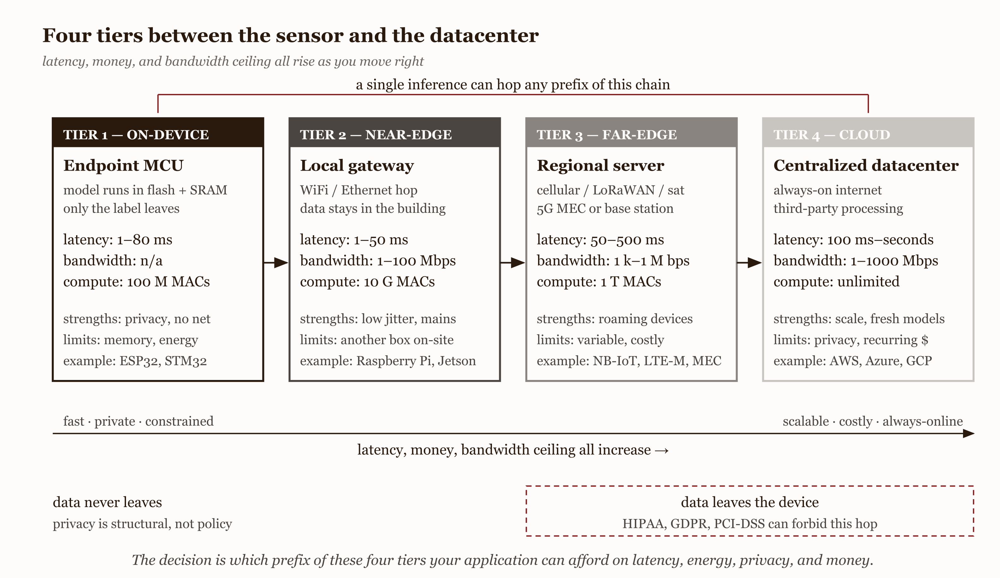
Figure 9.1 — Four-tier processing topology. Each tier owns a different cost profile; the design decision is which prefix of the four your application can afford.The trade-off surface has four dimensions. Latency: on-device is fastest because no network is involved; cloud is slowest because round-trip dominates. Hard real-time applications (collision avoidance, industrial control) cannot tolerate cloud latency. Soft real-time applications (smart home, wearables) often can. Privacy: on-device is most private; cloud is least, because raw data crosses the internet and is processed by third parties. Medical devices under HIPAA, security cameras, financial sensors often have regulatory rules that preclude cloud processing entirely. Connectivity: on-device requires no network; cloud requires always-on internet. Remote agriculture, wildlife monitoring, maritime, and disaster-response deployments often have no reliable network. Cost: on-device has no recurring communication cost but constrained compute. Cloud has recurring bandwidth and API costs but unlimited compute. The economic crossover depends on deployment scale and lifetime.
The decision flow is short. Identify the latency requirement; if it is below 100 ms, you are looking at on-device or near-edge. Identify privacy and regulatory constraints; if data cannot leave the device or facility, cloud is off the table. Identify connectivity availability; if it is not there or it is intermittent, cloud is also off the table. Compare model compute requirements to device capabilities; if the model fits on-device, prefer on-device. If it does not, evaluate offloading by quantifying the four communication costs.
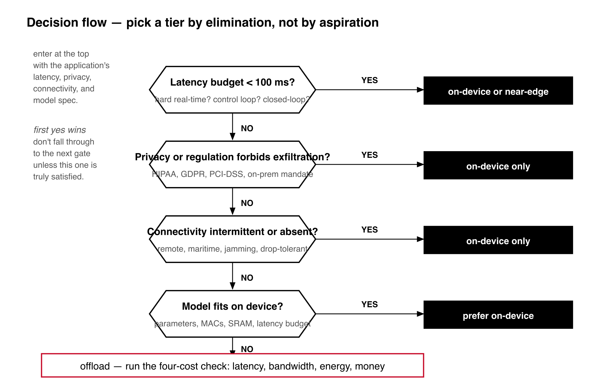
Figure 9.2 — Tier-selection decision flowchart. The first gate that answers yes wins; only a clean fall-through to the bottom unlocks an offload.Latency cost. Round-trip time is packetization plus transmission plus propagation plus server queueing and inference plus return transmission plus deserialization. For a LoRaWAN device sending 100 bytes to a server and getting back 10 bytes: serialization 5 ms, LoRa uplink at SF7/125 kHz (effective ~5 kbps) is 100 × 8 / 5,000 = 160 ms, gateway-to-server propagation 50 ms, server inference 20 ms (fast server, small model), LoRa downlink 16 ms, deserialization 2 ms — total round-trip 253 ms. If your application demands 100 ms, the network alone (160 + 50 + 16 = 226 ms) blows the budget before inference begins.
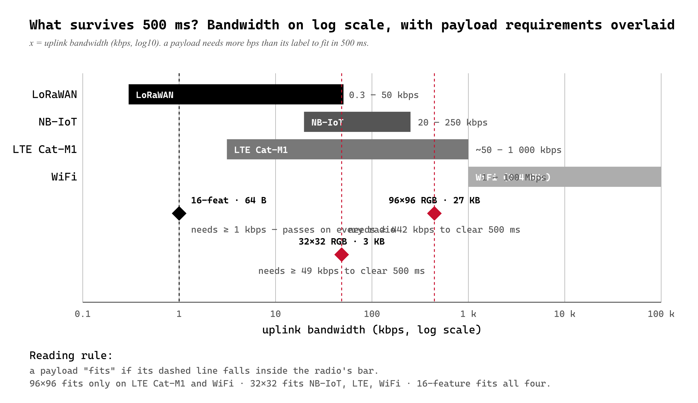
Figure 9.3 — Radio bandwidth on a log scale, with payload requirements overlaid. A payload fits when its dashed line lands inside the radio’s bar.Bandwidth cost. LoRaWAN is 0.3–50 kbps; NB-IoT 20–250 kbps; LTE Cat-M1 about 1 Mbps; WiFi 1–100 Mbps. A 96 × 96 RGB image is 27,648 bytes. Over LoRaWAN at 5 kbps, transmission is 27,648 × 8 / 5,000 = 44 seconds — useless for real-time. Even WiFi at 1 Mbps takes 0.22 seconds, which is fine for some applications and not for others. The bandwidth check is (data size / bandwidth) < latency budget. With a 500 ms budget at 10 kbps, the maximum payload is 0.5 × 10,000 / 8 = 625 bytes. A 96 × 96 image fails. A 32 × 32 image at 3,072 bytes also fails. A 16-element feature vector at 64 bytes passes. This is exactly why edge processing often includes feature extraction on-device — instead of sending raw pixels, the device computes a low-dimensional summary (histogram, edge map, statistical moments, learned embedding) and sends that. The bandwidth gap can drop by two or three orders of magnitude.
Energy cost. Wireless transmission costs energy proportional to data size and transmission power. A LoRaWAN device transmitting at +14 dBm draws 40 mA; 160 ms of transmission for 100 bytes at SF7 costs 3.3 × 0.04 × 0.16 = 21.1 mJ per transmission. Once every 10 minutes — 144 transmissions a day — gives 3.04 J/day, or 0.013% of a 2,000 mAh / 23,760 J battery per day. Communication energy is negligible at low frequency. But at one transmission every 10 seconds — 8,640 per day — the same per-event cost gives 182 J/day, eight times the entire battery capacity. The battery dies in under three hours. The energy budget for communication is energy-per-event × events-per-day < average-power-budget × 86,400 seconds. With a 1 mW budget, you get 86.4 J/day, and at 21 mJ per transmission the maximum sustainable rate is about one transmission every 21 seconds.
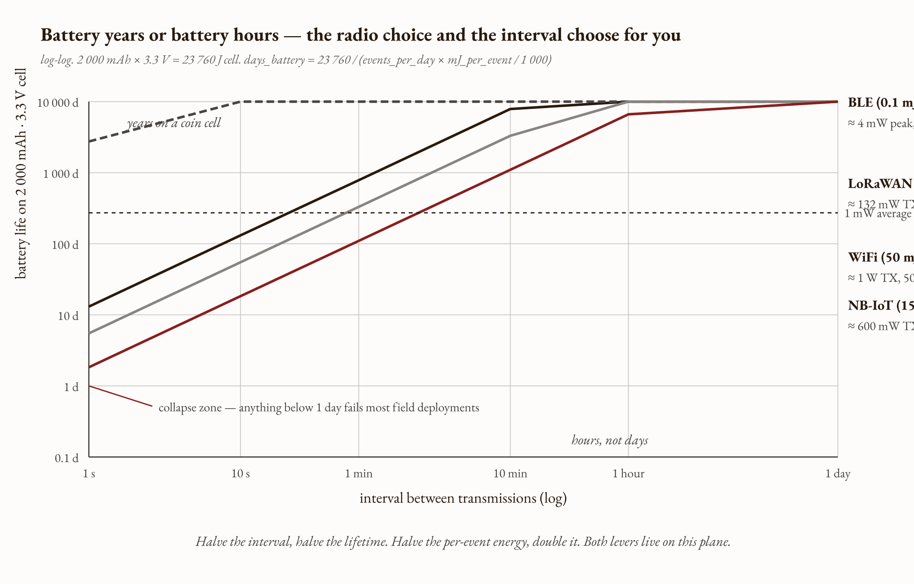
Figure 9.4 — Battery life as a function of transmission interval. Halve the interval, halve the lifetime; halve the per-event energy, double it.Monetary cost. Cellular plans charge for data. Cloud APIs charge per inference. A device on an NB-IoT $5/month/10 MB plan sending 100 bytes every ten minutes uses 432 KB/month — well inside the plan. Cloud inference at $0.0001 per call, 4,320 calls/month, is $0.43/month. Total per device: $5.43/month. For 10,000 devices: $651,600 a year in operational expense. Compare to running inference on-device with a $5 hardware upgrade: $50,000 upfront, zero recurring. Crossover is under one year. For long-lived deployments, on-device is cheaper. For short-lived deployments or prototypes where the upfront cost dominates, cloud is cheaper. The crossover is application-specific but rarely far away.
Privacy and regulation cut across all four costs and sometimes override them. Medical records under HIPAA and GDPR cannot be transmitted in raw form. Financial transactions are governed by PCI-DSS. Industrial control data may be subject to NIST or IEC standards. Diagnostic medical devices can require FDA or CE clearance, which complicates cloud deployments. The privacy-preserving architecture is to run inference locally and send only the result (label, anomaly flag, summary statistic) to the cloud, storing or discarding raw data on the device. This satisfies most regulatory regimes and most user-trust expectations — your data never leaves your home. But it requires the local device to be powerful enough to run the model, which is the hardware constraint Chapter 8 was about.
For some applications, latency requirements alone preclude cloud inference regardless of bandwidth or privacy. Collision avoidance in autonomous vehicles or drones needs detection-to-action under 50 ms; even on a local 5G network with 10 ms RTT, server inference time pushes total latency over the budget. Industrial robotics — pick-and-place, quality inspection — wants 10–100 ms depending on line speed; WiFi RTT plus inference can fit, but jitter blows it. Medical alarms (arrhythmia detection, seizure detection) have one-to-five-second budgets that theoretically admit cloud inference but practically fail on reliability — what if the network drops? Voice assistants run at 50–200 ms budgets, which cloud can hit; on-device variants are faster but less accurate. The latency budget determines the maximum allowable network round trip; subtract inference time from the budget, and what is left is the network’s share. If it is less than zero, network-based inference is impossible.
Split inference is the hybrid pattern that often wins. The model is partitioned: early layers run on the device, later layers run on a server. The device sends intermediate activations, not raw data, to the server. Activations are smaller than raw inputs and less interpretable than them, so split inference saves bandwidth and partially preserves privacy. A 96 × 96 image is 27 KB; the activations after three convolutional layers at 24 × 24 × 64 might be 36 KB as float32 or 9 KB as int8 — and the activations look like feature maps, not pictures.
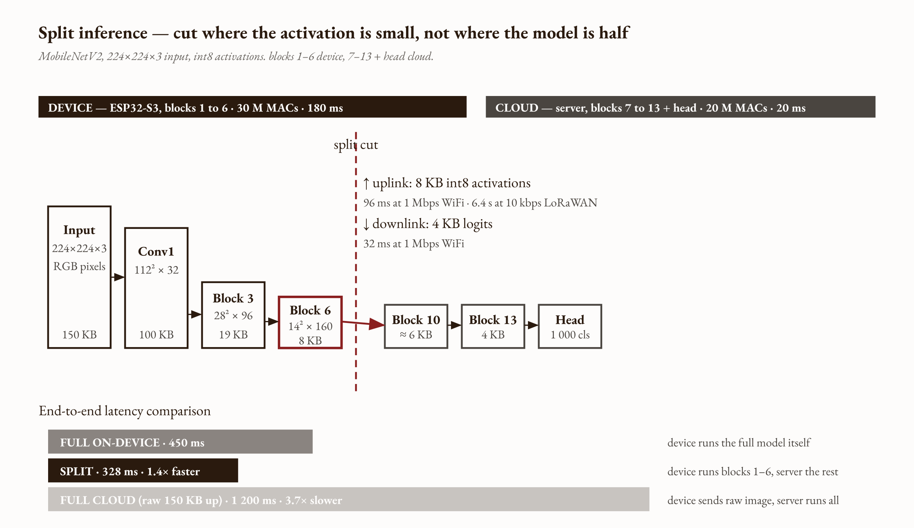
Figure 9.5 — MobileNetV2 split inference. The split-cut goes where activations are smallest — usually well before the halfway mark of the parameter count.Worked example: image classification on an edge camera. MobileNetV2 with 224 × 224 × 3 input (150 KB) runs through Conv1 to 112 × 112 × 32 (100 KB int8), block 3 to 28 × 28 × 96 (19 KB int8), block 6 to 14 × 14 × 160 (8 KB int8), block 13 to 7 × 7 × 320 (4 KB int8), and the final classifier outputs 1,000 classes (4 KB). The split point is the bandwidth check: at 8 KB int8, activations after block 6 fit easily over WiFi. So run blocks 1–6 on the device (about 60% of total operations, 30 M MACs) and blocks 7–13 plus the classification head on the cloud (about 40%, 20 M MACs). Send 8 KB up, get 4 KB back. On an ESP32-S3 with WiFi at 1 Mbps: device inference 180 ms, WiFi up 96 ms, server inference 20 ms, WiFi down 32 ms — 328 ms total. Compare to running the full model on the device at 450 ms (since the ESP32 cannot run the full model efficiently), or full cloud where the raw 150 KB image takes 1,200 ms to upload. Split inference is 1.4× faster than the on-device alternative and 3.7× faster than the full-cloud alternative.
Split works when the device can run part of the model, when activations are smaller than the raw input, and when the latency budget admits a network round trip. It fails when bandwidth is too low even for activations (LoRaWAN at 5 kbps cannot handle 8 KB per inference), when network latency dominates total latency (split is no faster than full cloud), or when privacy demands that no data — not even activations — leaves the device.
Federated learning is a separate hybrid pattern that lives at training time rather than inference time. Each device trains locally on its own data, computes weight updates (gradients or deltas), and sends only the updates to a central server. The server aggregates across thousands of devices and sends an improved model back. Raw data never leaves the devices, which solves privacy. The bandwidth cost shifts to weight updates (megabytes once per training round) instead of raw training data (gigabytes). Federated learning matters for embedded AI when you have many deployed devices generating data continuously, you want the model to keep improving from that data, and privacy or bandwidth rules out shipping raw data centrally. It is not a free lunch — it requires devices to do training, not just inference, which is a much higher hardware bar than this book’s main subject.
To make the spectrum concrete, work a deployment. Predictive maintenance for industrial motors. Three candidate models: small (50,000 params, 8 M MACs, 82% accuracy), medium (200,000 params, 40 M MACs, 91%), large (1 M params, 200 M MACs, 96%). Application: ≥90% accuracy required, ≤1 second latency (soft), NB-IoT connectivity at 20 kbps and 200 ms RTT, data is proprietary but not regulated (cloud is allowed), <$10/device/month for communication and compute.
Strategy 1, full on-device, Model B: STM32H7 at 480 MHz runs Model B in 220 ms. Send the 1-byte fault prediction once a day. Monthly data: 30 bytes. Monthly cost: $2 minimum NB-IoT plan. 91% accuracy. All constraints met, accuracy at the floor.
Strategy 2, full cloud, Model C: low-power STM32L4 just for sensor acquisition. Send 1 kHz accelerometer over 60-second windows = 180 KB per transmission. Hourly transmissions = 24/day. Monthly data: 129.6 MB. NB-IoT plan needs 200 MB at $25/month. Cloud inference $0.72/month. Total $25.72/month. 250 ms latency, 96% accuracy. Cost is 2.6× over budget; bandwidth is the dominating cost. Unviable on cost.
Strategy 3, split inference, Model C with first five layers on the device: STM32H7 again. First five layers locally — 30 M MACs, 120 ms. Activation after layer 5: 4 KB int8. Send that, get back the result. Hourly transmissions = 24/day. Monthly data: 4 KB × 24 × 30 = 2.88 MB. NB-IoT $5/month/10 MB plan. Cloud inference $0.72/month. Total $5.72/month. Latency: 120 + 200 + 30 = 350 ms, comfortably inside the 1-second budget. Accuracy 96% (Model C in full).
Strategy 3 wins. Same accuracy as full cloud, 4.5× cheaper, well within latency. 45× lower bandwidth than the full cloud option. The split point — between the layers that fit on the device and the layers that do not — is the design lever, and it is the lever the on-device-versus-cloud framing of this question hides. The edge-cloud decision is not binary, and hybrid strategies usually beat either pole.
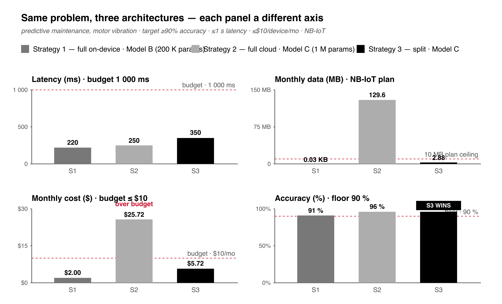
Figure 9.6 — Three predictive-maintenance strategies on four axes. Split inference matches Model C accuracy at 4.5× lower monthly cost, well inside the 1 s latency budget.There are deployments where communication has to be rejected entirely. Underwater sensors, remote agriculture, disaster-response robots — the network is absent most of the time. Medical implants and industrial safety systems — network failures cannot be tolerated, period. Military and security applications where the network may be jammed or compromised. For these, on-device inference is not an optimization. It is the requirement. The model has to fit on the device, even at the cost of accuracy or upgraded hardware.
The next chapter takes the hardest constraint category: real-time guarantees. The edge-cloud spectrum assumed inference completes in a timely, predictable manner. When inference has to meet hard deadlines with provable certainty, neural networks become genuinely difficult to integrate into safety-critical systems, and the patterns that reduce risk are worth knowing in detail.
Project: TinyML Feasibility Toolkit What you’re building this chapter: A communication-cost calculator that scores each processing tier (cloud / edge gateway / on-device / hybrid) on the four communication costs and recommends the right tier for the application. Tool: Claude Code
The Prompt:
Add src/tinyml_feasibility/comms.py to the tinyml-feasibility toolkit.
Frozen CommsCost dataclass:
- tier: Literal["cloud", "edge_gateway", "on_device", "hybrid"]
- payload_size_bytes: int
- frequency_per_day: float
- latency_round_trip_ms: int
- bandwidth_required_kbps: float
- energy_per_message_mj: float
- monthly_cost_usd: float
- is_feasible: bool (False if violates a hard constraint like bandwidth ceiling)
- failure_reasons: list[str]
Frozen TierRecommendation dataclass:
- candidate_tiers: list[CommsCost]
- recommended_tier: Literal["cloud", "edge_gateway", "on_device", "hybrid"]
- binding_constraint: str (e.g., "bandwidth", "energy", "regulation")
- justification: str
- to_markdown() emits a Communication section matching Chapter 14's shape
Public functions:
- `assess_comms(app: Application, model: ModelSummary, target: Target) -> TierRecommendation`
- Use a RADIO_PROFILES dict mapping radio names ("LoRaWAN", "NB-IoT", "WiFi", "BLE", "Cellular-LTE-M") to (max_bandwidth_kbps, energy_per_byte_mj, monthly_cost_usd_per_device, regulatory_duty_cycle_pct). Cite each entry with a datasheet/spec URL in a comment.
Implementation:
- For "cloud" tier: payload_size = raw_input_size (e.g., 224*224*3 for image, 16000 audio samples for KWS)
- For "edge_gateway" tier: payload_size = compressed input (JPEG for image, opus for audio)
- For "on_device" tier: payload_size = classification result only (~10 bytes)
- For "hybrid" tier: payload_size = on_device size most of the time, cloud size occasionally (configurable threshold)
- For each tier, compute round-trip latency, required bandwidth, energy per message, monthly cost
- is_feasible = False if required_bandwidth > radio max OR if app forbids cloud (privacy/HIPAA flag)
- recommended_tier: cheapest feasible tier that also meets app.latency_budget_ms
CLI:
- `tinyml-feasibility check-comms --app <yaml> --target <name> --model <path> --radio LoRaWAN` prints TierRecommendation
Tests:
- test_lorawan_forbids_cloud_for_images — image classifier + LoRaWAN, expect cloud tier infeasible (bandwidth)
- test_wifi_makes_cloud_feasible — same model + WiFi, expect cloud tier feasible
- test_hipaa_forbids_cloud — app.privacy_class="HIPAA", expect cloud and gateway both infeasibleWhat this produces:
tinyml-feasibility check-comms --app vineyard.yaml --target RPi-Zero-2W --model efficientnet-lite0.tflite --radio LoRaWAN
directly replicates Chapter 14’s vineyard arithmetic — finds that cloud
is physically infeasible on LoRaWAN and recommends on-device.
How to adapt this prompt: - For your own
project: The RADIO_PROFILES dict is where most of the
per-deployment-context lives. Add your radio with real datasheet
citations. - For ChatGPT / Gemini: Works as-is. - For
Claude Code: Use --allowed-tools edit,bash,web_search
for radio spec lookups. - For a Claude Project: Pin
RADIO_PROFILES to the system prompt — it’s heavy reference data
subsequent modules read.
Connection to previous chapters: Reads ModelSummary, Target, and Application. Produces the architectural decision (which tier) that frames whether downstream optimization (chapters 11, 12) needs to happen at all.
Preview of next chapter: Chapter 10 adds
realtime.py — assess WCET against deadline, identify
safety-class implications, recommend a design pattern (advisory /
bounded / confidence-gating / voting / hierarchical) for AI in
safety-critical loops.
Use these prompts with Claude to generate interactive D3 v7 versions of the figures in this chapter. Each produces a standalone HTML file you can open in a browser and modify freely.
Prerequisites: Load brutalist/CLAUDE.md
and brutalist/DESIGN.md into your Claude project context
before using these prompts. They define the stack, naming conventions,
color system, and typography the figures use.
Build a four-column comparison figure rendering the processing tiers a sensor reading can traverse. Columns left to right: on-device endpoint MCU, near-edge local gateway, far-edge regional server, cloud datacenter. Each column is a card with a header strip in increasing luminance, a tier name, and three monospace spec rows — round-trip latency, available uplink bandwidth, and compute ceiling — followed by a strength line, a limit line, and one named example. Below the cards, render a horizontal axis with an arrowhead and labels “fast · private · constrained” on the left and “scalable · costly · always-online” on the right, then “latency · money · bandwidth ceiling →” centered. Place a red-dashed callout box under the far-edge and cloud columns naming HIPAA, GDPR, PCI-DSS. Hovering a card dims the other three and shows a tooltip with the full cost profile. Standalone HTML, D3 v7 7.9.0 from the cdnjs URL, EB Garamond / Inter / JetBrains Mono Google Fonts, dark-mode aware, ResizeObserver redraw, accessible.
Reference implementation:
d3/chapter-09-communication-edge-cloud-fig-01.html
Build a vertical decision flowchart with four diamond gates stacked
top to bottom: (1) latency budget < 100 ms? (2) privacy or regulation
forbids exfiltration? (3) connectivity intermittent or absent? (4) model
fits on device? Each gate carries a bold question on the first line and
an italic example list on the second. From each gate, a YES arrow exits
right to a black outcome chip — gate 1 reads “on-device or near-edge,”
gates 2 and 3 read “on-device only,” gate 4 reads “prefer on-device.” NO
arrows continue down the spine to the next gate. Below the last gate, a
red-bordered offload box reads “run the four-cost check: latency,
bandwidth, energy, money.” Hovering a gate shows a tooltip explaining
the constraint in one sentence. Standalone HTML, D3 v7, dark-mode aware,
ResizeObserver redraw, accessible. Use var(--color-*) only;
no hardcoded hex.
Reference implementation:
d3/chapter-09-communication-edge-cloud-fig-02.html
Build a horizontal log-scale chart showing four radio uplink bandwidth ranges as solid bars: LoRaWAN 0.3–50 kbps, NB-IoT 20–250 kbps, LTE Cat-M1 50–1 000 kbps, WiFi 1 000–100 000 kbps. The x-axis is bandwidth on a log scale from 0.1 kbps to 100 000 kbps. Overlay three vertical dashed payload markers showing the bandwidth each payload requires to clear a 500 ms budget — 96×96 RGB image (27 KB → 442 kbps), 32×32 RGB image (3 KB → 49 kbps), 16-element feature vector (64 B → 1 kbps). Bars use a luminance sequence: LoRaWAN var(–color-ink), NB-IoT var(–color-secondary), LTE Cat-M1 #787878, WiFi var(–color-border). Failing-payload markers in var(–color-red); passing marker in var(–color-ink). Hovering a radio bar dims the other three. Standalone HTML, D3 v7, dark-mode aware, accessible, ResizeObserver redraw.
Reference implementation:
d3/chapter-09-communication-edge-cloud-fig-03.html
Build a log-log line chart with seconds between transmissions on the x-axis (1 s to 86 400 s) and days of battery life on a 2 000 mAh × 3.3 V cell on the y-axis (0.1 d to 10 000 d, clamped). Four lines: BLE 0.1 mJ/event (dashed var(–color-secondary)), LoRaWAN 21 mJ/event (var(–color-ink)), WiFi 50 mJ/event (#787878), NB-IoT 150 mJ/event (var(–color-red)). Compute days from cellJoules × T / (86 400 × mJ/1 000). Add a dashed horizontal reference line for the 1 mW average-power budget (≈ 275 days). Right-side legend with line swatch, radio name, and a one-line transmit-burst note. Annotate the upper-left region “years on a coin cell” and the lower-right region “hours, not days” in italic EB Garamond. Hovering a line dims the others and shows lifetime at 1 min and 1 hr intervals. Standalone HTML, D3 v7, dark-mode aware, accessible, ResizeObserver redraw.
Reference implementation:
d3/chapter-09-communication-edge-cloud-fig-04.html
Build a horizontal layer-block diagram for MobileNetV2 with 224×224×3
input. Seven blocks across: Input (150 KB), Conv1 (100 KB), Block 3 (19
KB), Block 6 (8 KB · split cut), Block 10 (6 KB), Block 13 (4 KB), Head
(4 KB). Encode activation size as rectangle height with
d3.scaleSqrt(). Top edge has a two-tone strip: dark
var(–color-ink) “DEVICE — ESP32-S3 · blocks 1 to 6 · 30 M MACs · 180 ms”
over the device blocks, var(–color-secondary) “CLOUD — server · blocks 7
to 13 + head · 20 M MACs · 20 ms” over the cloud blocks. A red dashed
vertical split-cut between Block 6 and Block 10 with labels “split cut”,
“↑ 8 KB up · ↓ 4 KB down”, “96 ms at 1 Mbps WiFi”. Below the blocks, a
horizontal comparison strip with three bars proportional to ms: FULL
ON-DEVICE 450 ms, SPLIT 328 ms, FULL CLOUD 1 200 ms, each annotated.
Hover a block to dim the others and show shape/size tooltip. Standalone
HTML, D3 v7, dark-mode aware, accessible, ResizeObserver redraw.
Reference implementation:
d3/chapter-09-communication-edge-cloud-fig-05.html
Build a 2×2 grid of small bar panels comparing three predictive-maintenance strategies on independent axes: (top-left) Latency ms, budget 1 000 ms; (top-right) Monthly data MB, 10 MB plan ceiling; (bottom-left) Monthly cost $, ≤ $10/mo; (bottom-right) Accuracy %, floor 90 %. Each panel: three bars for S1 (on-device, #787878), S2 (full cloud, var(–color-border)), S3 (split, var(–color-ink)). Values: latency 220/250/350; data 0.00003/129.6/2.88; cost $2.00/$25.72/$5.72; accuracy 91/96/96. Each panel carries a red dashed budget reference line and a label in the top-right corner — “S2 over budget” in red on the cost panel, “S3 wins” as a black chip on the accuracy panel. Bar value labels above each bar in formatted units. Hover for tooltip; tabindex 0; aria-label per bar. Standalone HTML, D3 v7, dark-mode aware, accessible, ResizeObserver redraw.
Reference implementation:
d3/chapter-09-communication-edge-cloud-fig-06.html
The ideas in this chapter didn’t appear from nowhere. Radia Perlman designed the spanning tree protocol that makes every Ethernet network work — the kind of distributed coordination that decides where your edge inference output ends up.
Run this:
Who was Radia Perlman, and how does her work on the spanning tree protocol and network design connect to today's edge-cloud architectures and split inference? Three paragraphs. End with the single most surprising thing about her career.→ Search “Radia Perlman” on Wikipedia. See what the model got right, got wrong, or left out.
Now make the prompt better. Try one of these:
What changes? What gets better? What gets worse?
On March 18, 2018, an autonomous test vehicle operated by Uber struck and killed Elaine Herzberg, a pedestrian crossing a street in Tempe, Arizona. The vehicle’s perception system — LIDAR, radar, and camera sensors feeding neural-network-based object detection — identified the pedestrian 5.6 seconds before impact. The decision logic classified the detection as a false positive and suppressed the braking command. By the time the system reclassified the object as a pedestrian requiring emergency braking, 1.3 seconds remained, which was insufficient stopping distance at the vehicle’s speed.
The neural network did not fail to detect. The network detected. What failed was that the system lacked deterministic worst-case bounds for the perception-to-action pipeline, the inference time varied with scene complexity, and the decision logic could not bound the latency. When inference ran long, the action arrived too late.
This is the real-time AI problem in its sharpest form. Neural networks are powerful and non-deterministic. Their execution time varies with input data, cache state, memory contention, and scheduling. For soft real-time applications — smart thermostats, wearables, consumer electronics — variable latency is fine, the user experience just degrades a bit when inference runs long. For hard real-time applications — automotive safety, industrial control, medical alarms — missing a deadline is a system failure that can cause physical harm. The chapter is about how to evaluate which kind of real-time you have, and what design patterns let AI live inside hard real-time systems without becoming the part that breaks them.
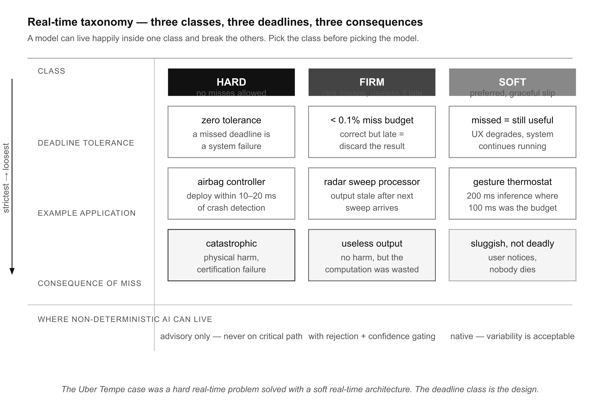
Figure 10.1 — Hard, firm, and soft real-time. Three deadlines, three consequences of a miss. The class chooses the architecture before the model does.A real-time system is one whose correctness depends on when output arrives, not just on what the output is. The classifications matter. Soft real-time prefers deadlines but tolerates misses — video stutters when frames are delayed but the system continues. A smart thermostat running gesture recognition is soft real-time; a 200 ms inference where the budget was 100 ms makes the response feel sluggish, not catastrophic. Firm real-time tolerates occasional misses but treats late results as useless — a radar processor whose result arrives after the next radar sweep produces output that is still numerically correct but no longer relevant. A small fraction of misses (say <0.1%) is acceptable. Hard real-time admits no misses; a missed deadline is a system failure. Automotive airbag controllers — deployment within 10–20 ms of crash detection or the airbag is too late to protect the occupant. Industrial safety systems shutting down machinery when faults are detected — late detection allows the fault to progress to catastrophic failure. Hard real-time is what the Uber case was, and what the rest of this chapter is about.
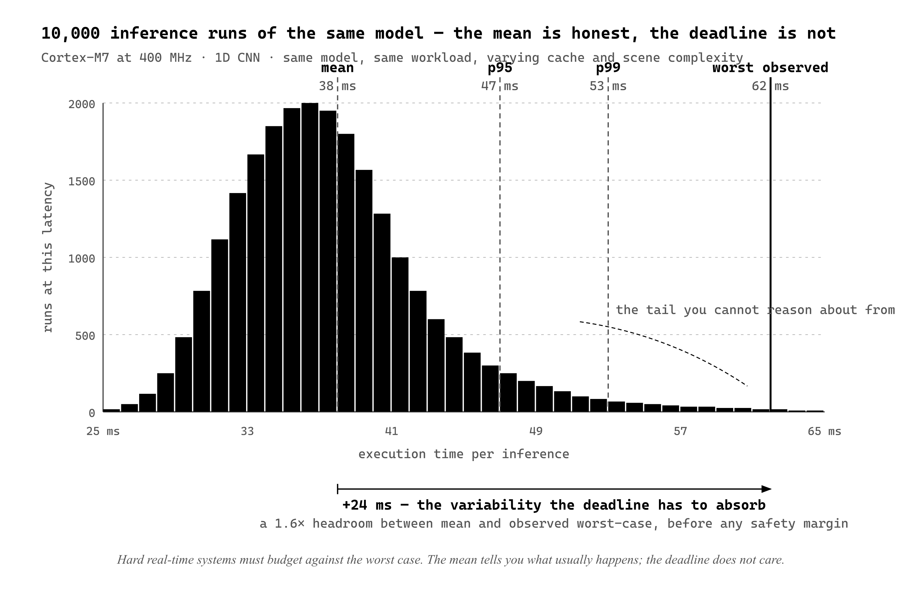
Figure 10.2 — Ten thousand runs, same model. The mean is honest, the tail is what the deadline has to absorb.Neural network inference is structurally hard to put inside a hard real-time system because of four sources of non-determinism. Input-dependent execution paths — early-exit networks process easy inputs in 50 ms and hard inputs (low confidence, all 10 layers) in 200 ms; attention mechanisms compute dynamic weights based on input content, so the operation count depends on what is being attended to; even ReLU implemented with conditional branching introduces small variability per element through branch-prediction effects on deeply pipelined cores. Cache and memory effects — a memory access takes 1–2 cycles if the data is in cache and 10–100 cycles if it has to come from main memory, and whether you hit or miss depends on what was accessed recently, what other tasks evicted from the cache, and the spatial pattern of the current accesses. A convolutional layer on a smooth image has different cache behavior than the same layer on a noisy image; the variation can be 10–30% of execution time. RTOS scheduling and preemption — on systems running an RTOS, inference can be preempted by higher-priority tasks; the wall-clock time becomes inference time plus preemption time, and preemption time is non-deterministic because it depends on when interrupts arrive, how long handlers run, and which other tasks are ready. Bounding it requires analyzing the entire task system, not just the inference task. Framework overhead — TFLite Micro, PyTorch Mobile, ONNX Runtime add abstraction layers (graph interpreters, dynamic dispatch, memory managers); dynamic memory allocation has variable execution time depending on heap fragmentation, virtual function calls have variable latency depending on instruction cache, and any logging or profiling code adds overhead. For safety-critical applications, frameworks with dynamic allocation and complex control flow are unsuitable; the engine has to be statically analyzable, which means no dynamic allocation, no recursion, no unbounded loops.
Worst-case execution time analysis aims to compute the longest possible execution time for a piece of code, under any input and any system state, without running every input. Traditional WCET tools — AbsInt aiT, Rapita RVS, SWEET — model the processor’s pipeline, cache, and memory; build a control-flow graph; find the longest path; return an upper bound. This works well for simple embedded code with explicit control flow. It fails for neural network inference for predictable reasons: path explosion (a 20-layer network with 10 paths per layer has 10²⁰ paths and you cannot enumerate them), indirect control flow (frameworks use function pointers and dynamic dispatch the analyzer cannot follow), complex cache behavior (convolutional layers have access patterns that depend on input dimensions, stride, padding, and channels — modeling cache for all configurations is intractable), and floating-point variability (IEEE 754 is not associative, compilers reorder, and some FPUs have variable latency on denormals or NaNs).
Static WCET for neural networks is an open research problem. The pragmatic workarounds are five. Empirical WCET — run the model on thousands of inputs, take the maximum observed time, add 20–50% safety margin. This is not a proof, but it is what most projects actually do. Restrict the architecture — use only layers with data-independent execution paths, ban early exits, dynamic attention, and conditional branches; this makes static analysis feasible at the cost of model expressiveness. Disable caches or use cache locking — lock weights and activations into deterministic memory so timing is predictable; this sacrifices performance for predictability. Run inference at highest priority with interrupts disabled — eliminate preemption and interrupt latency from the variability budget; this trades latency on other tasks for determinism on inference. Use accelerators with provable timing — automotive-grade NPUs from NXP and Renesas are designed without caches and without dynamic control flow specifically so their timing is deterministic, and they ship with WCET guarantees for fixed-point models. None of these is a complete solution. Each trades off expressiveness, performance, or cost to gain determinism.
Safety-critical AI introduces a second axis of difficulty: the relevant standards. IEC 61508 is the generic functional-safety standard for electrical and electronic systems, with Safety Integrity Levels 1 through 4 (SIL 4 most stringent). ISO 26262 is the automotive adaptation, with Automotive Safety Integrity Levels A through D (ASIL D most stringent). IEC 62304 is medical-device software. DO-178C is avionics software. They share a common framework: hazard analysis identifies failure modes; risk classification ranks them by severity; safety requirements specify maximum tolerable failure rates (ASIL D demands less than 10⁻⁸ failures per hour); verification proves the system meets the requirements through testing, formal methods, or certification.
Neural networks pose specific challenges. They have blackbox behavior — their behavior emerges from learned weights, you cannot inspect them and conclude this will always detect pedestrians within 5.6 seconds the way you can inspect a threshold-based detector. They have no formal specification — traditional software has input → expected output; neural networks have training data and statistical performance metrics, and 95% accuracy is not a safety guarantee for an application where the 5% includes catastrophic misses. They are dataset-dependent — a network trained without edge cases will fail on edge cases in deployment, and proving completeness of a training set is impossible. They are adversarially vulnerable — networks can be fooled by inputs designed to cause misclassification, and a stop sign with specific stickers can read as a speed-limit sign to some networks. The standards are being extended to address AI specifically — ISO/PAS 21448 (SOTIF) addresses the case where the system behaves as designed but the design is insufficient (a pedestrian detector never trained on wheelchairs); UL 4600 covers autonomous vehicles; ISO/TR 5469 gives guidance on AI in road vehicles — but they are not yet mature, and certifying an AI component for ASIL D is still essentially a research problem. The current practice is to use AI in non-safety-critical roles and keep safety-critical decisions in traditional, certifiable software.
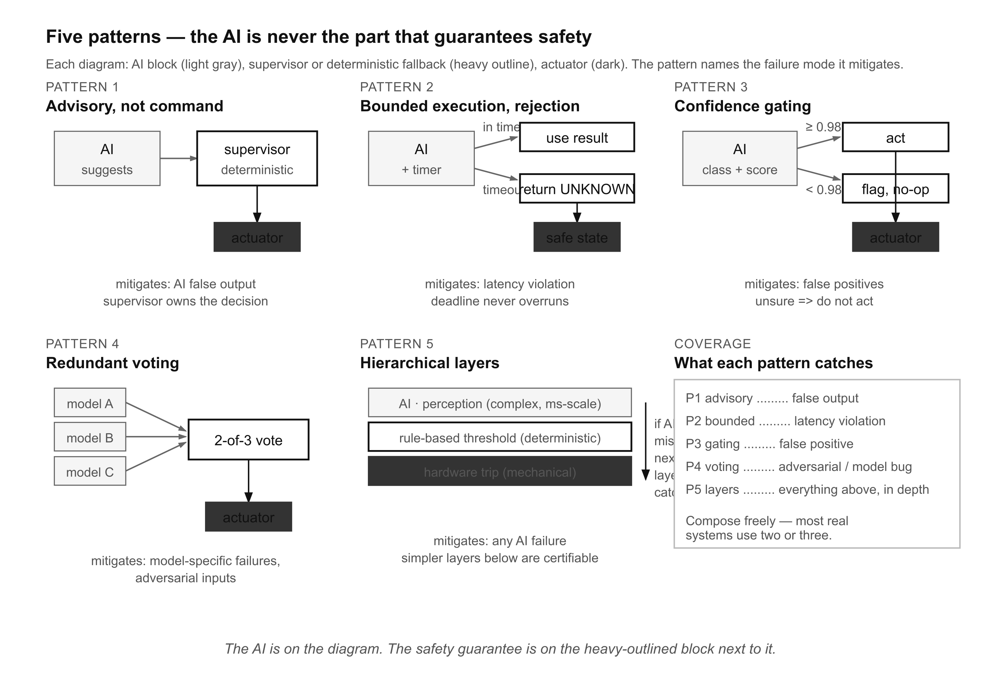
Figure 10.3 — Five design patterns. The AI is on every diagram; the safety guarantee is the block next to it.Five design patterns let you put AI inside real-time systems without putting it in the critical path. AI as advisory, not command: the AI provides a recommendation; a deterministic supervisor with hard real-time guarantees and a proven safety envelope makes the final decision. The AI improves performance — fewer false positives, better classification — but the safety fallback is independent of it. An industrial robot uses AI for defect detection but also has a hardware limit switch; if the AI misses, the limit switch stops the robot. Bounded execution with rejection: hardware timer starts when inference begins; if the timer expires before inference completes, terminate inference and return unknown; the application handles unknown as a safe state. The AI never violates the deadline; the new failure mode is rejected inferences, which the system has to be designed to handle safely. Confidence gating: the model outputs a classification and a confidence score; only high-confidence predictions trigger action. A pedestrian detector at 98% confidence triggers braking; the same detector at 60% confidence flags for human review and does not brake. This reduces catastrophic false positives at the cost of more false negatives, and the threshold is itself a safety parameter set conservatively for life-critical applications. Redundant inference with voting: run multiple models with different architectures and training sets in parallel and use majority voting; act when two of three agree, reject when all three disagree. Triples inference cost in latency, power, and memory, so it is only viable when resources permit, but it dramatically improves robustness to adversarial inputs and model-specific failure modes. Hierarchical safety layers: layer the safety mechanisms so AI failure is caught by a subsequent simpler check. An autonomous vehicle’s perception stack might be: AI pedestrian detection (high accuracy, complex, non-deterministic), then a rule-based threshold on LIDAR distance (low accuracy, deterministic, proven safe — if AI misses, this still triggers braking on any object within 5 meters), then a hardware bumper sensor as the ultimate fallback. Each layer is progressively simpler and more conservative. The AI optimizes for performance; the safety guarantee comes from the layers below.
Figure 10.4 — Six failure modes against the ASIL D bar. Five of six fail it unmitigated. The mitigation column, not the model, closes the gap.
Failure-mode analysis for AI components has to enumerate all the ways the AI can produce wrong outputs and classify them by consequence. False negatives — the model fails to detect a present condition (a pedestrian detector misses a pedestrian, no braking, collision; consequence catastrophic). False positives — the model detects a condition that is not present (a fault detector flags a healthy motor, unnecessary shutdown, production loss; consequence economic but not safety-critical). Latency violations — correct output, too late (collision detector identifies an obstacle at 5 meters but inference takes 500 ms and the vehicle is now at 2 meters; consequence catastrophic). Adversarial misclassification (stop sign with stickers reads as speed limit; consequence catastrophic). Distribution shift — the model encounters inputs outside its training distribution (a pedestrian detector trained only on adults misses children or wheelchair users; consequence catastrophic). Numerical instability (quantization or fixed-point arithmetic accumulates error and a regression model predicts -5% where the true value is +5%; consequence depends on the application). For each, you estimate probability from validation testing or field data, classify severity, check whether probability × severity is within the acceptable risk threshold, and apply mitigations if not. ASIL D allows fewer than 10⁻⁸ failures per hour; if your AI has a 1% false-negative rate, it is failing 10,000× too often, and you have to either improve to 99.999999% accuracy (impossible for most tasks) or add redundancy and fallbacks so AI failures are caught before they cause harm.
To make the patterns concrete, work an actual integration. A high-speed CNC milling machine running at 10,000 RPM, control loop at 1 kHz (every 1 ms), anomaly must trigger shutdown within 5 ms to prevent tool breakage. The AI: 1D CNN, 3 conv + 2 FC layers, 80,000 int8 parameters, 12 M MACs, measured latency 35–55 ms on a Cortex-M7 at 400 MHz. The latency exceeds the 5 ms deadline by an order of magnitude. Direct integration is impossible.
Try bounded execution with rejection — set a 5 ms timeout, abort if inference does not finish. Inference takes 35 ms minimum. Every inference aborts. The AI provides no value.
Figure 10.5 — CNC integration timeline. RMS trips at +2 ms, AI advisory lands at +38 ms. The deadline is met by the deterministic detector, not the model.
Try AI as advisory. Run inference asynchronously every 50 ms
instead of every 1 ms. Each inference updates a
fault_probability variable. The hard real-time control loop
reads fault_probability every 1 ms and triggers shutdown if
it exceeds a threshold. Control loop deadline 1 ms; a variable read and
threshold compare takes well under 10 µs, with 100× margin. AI task has
no hard deadline because it is advisory; 55 ms of inference time is
fine. False negative on AI: fault_probability stays low,
the machine continues, the fault progresses until detected by other
means — bad but deferred. False positive on AI:
fault_probability goes high, machine stops, production loss
but no safety harm. AI hangs or crashes: a watchdog timer resets
fault_probability to 0 if the AI does not update it within
100 ms, preventing a stuck AI from causing a spurious shutdown.
Now layer hierarchy. Add a deterministic backup detector inside the
control loop: compute RMS vibration over the last few samples, compare
to a conservative threshold every 1 ms, set fault_flag
immediately if exceeded. Add a hardware current sensor on the motor that
trips the supply if current exceeds safe limits, indicating mechanical
seizure independent of any software. Control-loop logic becomes: if
fault_flag || fault_probability > 0.95, stop. The AI
provides early warning of incipient faults at 35–55 ms latency. The
rule-based detector provides conservative deterministic backup at <1
ms. The hardware trip is the ultimate fallback. Defense in depth, AI
improves performance, AI failure is tolerable.
The AI is successfully integrated into a hard real-time system by removing it from the hard real-time path. The control loop meets its 1 ms deadline. The AI improves fault detection. Safety is guaranteed by deterministic fallbacks that do not depend on AI.
Some applications cannot tolerate non-deterministic AI even with these patterns, because the certification regime they live under will not certify a system whose components are not formally verifiable. Nuclear reactor control, aircraft primary flight control under DO-178C, life-critical medical actuation under IEC 62304 — these constrain AI to non-critical roles: diagnostics and monitoring (flag anomalies for human review without automated action), optimization (tune parameters for efficiency within safety bounds enforced deterministically), or post-processing (analyze logged data after the fact). The hard boundary is: if you cannot prove the AI component meets WCET and reliability requirements for the applicable standard, the component cannot deploy in a safety-critical role. Use AI where it adds value without adding risk; keep the safety guarantee on the parts of the system that can be made provable.
That closes Part II. The next chapter starts Part III, where the model is no longer a fixed input to the constraint analysis but a design variable — selecting models for deployment constraints rather than evaluating fixed models against them.
Project: TinyML Feasibility Toolkit What you’re building this chapter: A real-time verdict module that classifies an application’s deadline class (soft / firm / hard), checks WCET against the deadline, and recommends a design pattern when AI is in a safety-critical loop. Tool: Claude Code
The Prompt:
Add src/tinyml_feasibility/realtime.py to the tinyml-feasibility toolkit.
Frozen RealTimeVerdict dataclass:
- real_time_class: Literal["soft", "firm", "hard"]
- predicted_wcet_ms: float (95th-percentile latency × 1.5 safety factor for hard real-time)
- deadline_ms: float
- headroom_pct: float
- safety_class: Literal["non-critical", "iec61508_sil1", "iec61508_sil4", "iso26262_asilA", "iso26262_asilD", "iec62304_classB", "iec62304_classC", "do178c_levelA"]
- design_pattern: Literal["advisory", "bounded_inference", "confidence_gating", "voting", "hierarchical_fallback", "exclude_ai"]
- justification: str
- verdict: Literal["FITS", "TIGHT", "FAILS", "REQUIRES_PATTERN_CHANGE"]
- mitigations: list[str]
- to_markdown() emits a Real-Time section matching Chapter 14's shape
Public functions:
- `assess_realtime(model: ModelSummary, target: Target, app: Application, latency_estimate: LatencyEstimate) -> RealTimeVerdict`
- `recommend_design_pattern(safety_class: str, headroom_pct: float, real_time_class: str) -> str` — returns a pattern name with rationale
Implementation:
- predicted_wcet_ms = latency_estimate.total_ms × 1.5 (conservative — real WCET requires measurement on target)
- For hard real-time AND safety_class in (iso26262_asilD, do178c_levelA): if AI cannot prove WCET deterministically, design_pattern = "exclude_ai" with justification
- For hard real-time + lower safety class: design_pattern = "hierarchical_fallback" — AI advisory, deterministic fallback enforces safety
- For firm real-time: design_pattern = "confidence_gating" — discard low-confidence predictions
- For soft real-time: design_pattern = "advisory" — AI suggests, human or downstream system decides
- Add app fields if missing: safety_class (str)
CLI:
- `tinyml-feasibility check-realtime --app <yaml> --target <name> --model <path>` prints RealTimeVerdict
Tests:
- test_soft_real_time_advisory — soft class, expect "advisory" pattern
- test_hard_asild_excludes_ai — hard real-time + ASIL-D, expect "exclude_ai"
- test_firm_with_low_headroom_gates — firm class + headroom < 20%, expect "confidence_gating"
- test_hard_with_fallback — hard real-time + non-ASIL-D safety, expect "hierarchical_fallback"What this produces: A real-time verdict that names the safety class, recommends a design pattern from chapter 10’s repertoire, and flags when AI must be excluded from the safety-critical path.
How to adapt this prompt: - For your own
project: The safety_class field needs honest input — it determines
everything. Misclassify your application as non-critical
when it’s actually ASIL-B and the toolkit will hand you a deployment
that won’t certify. - For ChatGPT / Gemini: Works as-is. -
For Claude Code: Best fit. The pattern selection is rule-based,
easy to test. - For a Claude Project: Pin the safety-class
table to the system prompt; it gets read by chapter 14’s report
generator.
Connection to previous chapters: Reads LatencyEstimate (4), Application (1, with safety_class). Produces the design-pattern recommendation that chapter 14’s report will surface.
Preview of next chapter: Chapter 11 adds
compare.py — multi-model Pareto comparison. Given N
candidate models, rank them by feasibility-margin and accuracy and
identify the Pareto frontier.
Use these prompts with Claude to generate interactive D3 v7 versions of the figures in this chapter. Each produces a standalone HTML file you can open in a browser and modify freely.
Prerequisites: Load brutalist/CLAUDE.md
and brutalist/DESIGN.md into your Claude project context
before using these prompts. They define the stack, naming conventions,
color system, and typography the figures use.
Build a three-column comparison figure for the real-time taxonomy. Columns: HARD, FIRM, SOFT. Rows: class header, deadline tolerance, example application, consequence of miss. Data per column — HARD: zero tolerance / airbag controller 10–20 ms / catastrophic. FIRM: less than 0.1% miss budget / radar sweep processor / useless output. SOFT: missed but still useful / gesture thermostat 200 ms over 100 ms budget / sluggish UX. Channels: column = class (categorical, ordered by strictness); row = attribute (categorical). Color: class header fill uses a luminance ramp from var(–color-ink) for HARD through #404040 for FIRM to #787878 for SOFT — encodes strictness as luminance. Detail cells use var(–color-white) with a var(–color-border) hairline. Add a footer band reading “WHERE NON-DETERMINISTIC AI CAN LIVE” with one sentence per column. Standalone HTML, D3 v7 from the pinned CDN, EB Garamond / Inter / JetBrains Mono Google Fonts, inline CSS and JS, role=“img” + title + desc, ResizeObserver, tooltip on hover of each class header naming where AI can live in that class. Respect prefers-reduced-motion.
Reference implementation:
d3/chapter-10-real-time-ai-fig-01.html
Build a histogram of CNN inference latencies on a Cortex-M7. Synthesize 40 one-millisecond bins from 25 ms to 64 ms, peaking near 36 ms with a long right tail to 62 ms. Channels: x is execution time in ms (linear, zero baseline not required because position is the channel and zero is not meaningful for elapsed time); y is run count at that latency (linear, zero baseline). Bars in var(–color-ink). Add four vertical marker lines: mean at 38 ms, p95 at 47 ms, p99 at 53 ms, worst observed at 62 ms — first three dashed in var(–color-secondary), worst observed solid in var(–color-ink) at 1.5 px. Each marker labeled with its name and ms value above the plot. Add a horizontal annotation arrow under the x-axis spanning mean to worst observed with the label “+24 ms — variability the deadline must absorb.” Standalone HTML, D3 v7 from the pinned CDN, EB Garamond / Inter / JetBrains Mono Google Fonts, var(–color-*) tokens with dark-mode @media, role=“img” + title + desc, ResizeObserver, tooltip on each bar showing ms and count, prefers-reduced-motion respected.
Reference implementation:
d3/chapter-10-real-time-ai-fig-02.html
Build a 5-card grid figure of real-time AI design patterns. Cards arranged 3 across on wide screens, 1 across on narrow. Each card carries an eyebrow label (PATTERN 1–5), a title in EB Garamond, an embedded SVG block diagram, and a one-line mitigation under it. Patterns: (1) Advisory — AI box → supervisor box → actuator. (2) Bounded execution — AI + timer branches into “use result” and “UNKNOWN” then to a safe-state actuator. (3) Confidence gating — AI emits class + score; branches “≥ 0.98 act” and “< 0.98 flag” to actuator. (4) Voting — three AI models feed a “2-of-3 vote” supervisor to the actuator. (5) Hierarchical — three stacked layers: AI perception, rule-based threshold, hardware trip. Channels: position = data flow direction; container shape = block role (AI = gray ai-rect; supervisor = white safe-rect with heavy ink stroke; actuator = filled ink act-rect). Card border highlights to var(–color-red) on hover. Standalone HTML, D3 v7 from the pinned CDN, EB Garamond / Inter Google Fonts, var(–color-*) tokens, role=“img” + aria-label per card, ResizeObserver via CSS grid, tooltip naming the mitigated failure mode, prefers-reduced-motion respected.
Reference implementation:
d3/chapter-10-real-time-ai-fig-03.html
Build a six-row failure-mode matrix as an SVG grid (not a markdown table). Rows: false negative, false positive, latency violation, adversarial misclassification, distribution shift, numerical instability. Columns: FAILURE MODE (name + example), TYPICAL PROBABILITY, SEVERITY, ASIL D OK?, REQUIRED MITIGATION. Channels: row = failure mode (categorical, ordered by severity); column = attribute; cell fill = a five-step warm-grayscale severity ramp from var(–color-white) at severity 1 through #D4D4D4, #787878, #404040, to var(–color-ink) at severity 4. Text color flips to var(–color-white) on dark cells (severity ≥ 3) for AAA contrast. Row name cells stay white with a 6 px left bar in the row’s severity color. Add a SHADING legend under the matrix mapping the four darker steps to “fails ASIL D unmitigated,” “catastrophic when triggered,” “moderate / app-dependent,” “economic, not safety.” Standalone HTML, D3 v7 from the pinned CDN, EB Garamond / Inter / JetBrains Mono Google Fonts, var(–color-*) tokens, role=“img” + title + desc, every cell tabindex=“0” + aria-label, tooltip on hover showing row name, column attribute, value, and mitigation. ResizeObserver, prefers-reduced-motion respected.
Reference implementation:
d3/chapter-10-real-time-ai-fig-04.html
Build a three-track timeline figure for the CNC milling integration. Time axis: 0 to 60 ms after fault onset. Track 1 (top): 1 kHz control loop — render 60 evenly spaced tick marks every 1 ms. Track 2 (middle): asynchronous AI inference — render one completed inference bar from 0 to 38 ms (solid stroke) and a scheduled bar from 50 to 60 ms (dashed stroke); place a filled circle at +38 ms labeled “fault_probability ← 0.97.” Track 3 (bottom): 1 kHz RMS backup detector — render 60 tick marks every 1 ms in var(–color-secondary), with a filled var(–color-ink) circle at +2 ms labeled “fault_flag ← true.” Three vertical event lines spanning all tracks: fault onset at 0 ms (solid heavy), 5 ms deadline (dashed), AI advisory at 38 ms (dashed, secondary color). Channels: x = time (linear, zero baseline); y = track (categorical); mark type = event kind. Track labels in the left margin: eyebrow + title + sub. Outcome callout below the axis: “Shutdown triggered by RMS at +2 ms — well inside the 5 ms budget. AI advisory arrives at +38 ms and would have missed.” Standalone HTML, D3 v7 from the pinned CDN, EB Garamond / Inter / JetBrains Mono Google Fonts, var(–color-*) tokens, role=“img” + title + desc, inference bars tabindex=“0” + aria-label with tooltip on hover, ResizeObserver, prefers-reduced-motion respected.
Reference implementation:
d3/chapter-10-real-time-ai-fig-05.html
The ideas in this chapter didn’t appear from nowhere. Chung Laung “C.L.” Liu co-authored the 1973 paper on rate-monotonic scheduling — the math behind every hard-real-time system that has to guarantee a deadline, including the AI ones.
Run this:
Who was C.L. Liu, and how does his work with James Layland on rate-monotonic scheduling connect to today's hard real-time embedded AI systems? Three paragraphs. End with the single most surprising thing about his career.→ Search “Chung Laung Liu” on Wikipedia. See what the model got right, got wrong, or left out.
Now make the prompt better. Try one of these:
What changes? What gets better? What gets worse?
You have three models on your desk, each trained on the same factory-defect dataset, each promising to do the job. The first is MobileNetV2 at 89% accuracy, 1.2 MB of flash, 180 KB of activation memory, 220 ms per inference on your STM32H7. Every constraint is met — barely. Flash sits at 60% of capacity, SRAM at 70%, latency 20 ms under the 240 ms budget. The second is EfficientNet-Lite0 at 91% accuracy, 1.8 MB of flash, 240 KB of SRAM, 280 ms per inference. More accurate. Violates flash, violates SRAM, violates latency. The third is a custom depthwise-separable CNN at 87% accuracy, 600 KB of flash, 90 KB of SRAM, 110 ms per inference. Comfortably inside every limit.
Which one do you ship?
The answer is not “the most accurate one,” because the most accurate one does not run. The answer is not “the smallest one,” because you may need 88% accuracy to pass acceptance testing. The answer depends on which constraint is binding, which threshold is mandatory, and how much margin you want for the next firmware update that adds a feature. There is no scoreboard answer to this question. There is only the answer that fits this device, this dataset, and this deadline.
Up to this chapter we treated the model as something handed to us, and asked whether it fit. Now we choose. Model selection is the first move of model-aware design — the move where you stop optimizing around a model and start optimizing for a target.
The machine-learning research community ranks models on standardized benchmarks. ImageNet top-1 for image classification. COCO mAP for object detection. WER for speech recognition. Papers get published and headlines get written when a number on one of these leaderboards moves up.
Those numbers are wonderful for tracking progress in research. They are nearly useless for choosing a model to deploy on a microcontroller.
Two reasons. The first is that benchmark accuracy is dominated by the wrong axes. A model with 95% ImageNet accuracy and 80 million parameters is not a candidate for a board with 1 MB of flash. The leaderboard tells you nothing about whether the model can run; it ranks models inside an unstated assumption of unlimited resources.
The second reason is the domain gap. ImageNet is 1.2 million high-resolution photographs of 1,000 object classes, taken in diverse settings with professional cameras. Your deployment is 96×96 grayscale frames from a $4 camera under a fluorescent strip light, classifying three kinds of stamping defect. The features that distinguish a Persian cat from a Burmese cat in ImageNet are not the features that distinguish a hairline crack from a tooling mark. A model trained on ImageNet typically loses 5–20% accuracy when transferred to a domain-specific task — sometimes more if the imaging conditions are unusual.
So the metrics that actually predict embedded deployment success are different from the metrics on the leaderboard. You need five.
Latency on target hardware. Not theoretical FLOPs, which predict CPU latency badly because they ignore memory traffic, cache behavior, and SIMD utilization. Not inference time on the GPU the paper used. Wall-clock milliseconds on your actual processor running your actual inference framework, with preprocessing and postprocessing included if they ship with the model. Run it 100 times and report the mean, the 95th percentile, and the maximum. The maximum is your empirical worst-case execution time.
Memory footprint. Not parameter count alone. Weight memory in flash plus activation memory in SRAM, both at the precision you actually deploy at — int8, not float32. The way you measure this is to compile the model into your firmware and read the linker map file, then read the tensor arena size that your inference framework reports.
Energy per inference. Measured on target with a current-sense resistor and an oscilloscope, integrated over the full inference cycle. For battery devices, also measure average power across realistic duty cycles, because the average is what determines whether the coin cell makes it to next quarter.
Accuracy on your dataset. Not ImageNet accuracy. Validation accuracy on data that matches your deployment distribution: same camera, same lighting, same noise. If you must use a pretrained model, fine-tune the final layers on your own data and evaluate there.
Accuracy under quantization. Never assume quantization is free. Measure validation accuracy at float32 and again at int8, on your dataset. If the gap is more than 3–5%, something is wrong — the calibration set is unrepresentative, or you have layers with weights too small to survive int8, or you have activations whose dynamic range spans four orders of magnitude. A model that takes a 12% accuracy hit going to int8 is not the model you measured at float32.
These are five empirical questions. None of them can be answered from a paper or a datasheet. You profile each candidate, on your hardware, with your data, before you choose.
Figure 11.1 — Five deployment-aware metrics. None of them can be answered from a paper or a datasheet.
Once you accept that efficiency matters, you start asking what architectural choices buy efficiency. The answer is not “smaller everything.” The answer is that some operations cost a lot less than others for almost the same expressive power, and that the architectures designed for embedded targets are the ones that figured out which operations to substitute.
The clearest example is depthwise separable convolution, the trick at the heart of MobileNet. A standard 3×3 convolution with C input channels and C output channels does 9C² multiplications per output pixel — every output channel is a weighted combination of every input channel, filtered spatially. Depthwise separable convolution splits this into two cheaper operations. First a depthwise step that filters each channel independently with a 3×3 kernel: 9C multiplications. Then a pointwise step, a 1×1 convolution that mixes channels: C² multiplications. Total cost is 9C + C², which for any reasonable channel count is dominated by C² — about a factor of nine cheaper than the standard convolution it replaced.
Figure 11.2 — Standard vs depthwise-separable convolution. Substitute a cheap op for an expensive one; lose a little expressiveness; save roughly nine times the cost at C = 64.
You lose a little expressiveness. Channels can no longer mix during the spatial filter; they only mix afterwards. For most vision tasks the loss is small, and MobileNetV2 patches it further with inverted residual blocks and linear bottlenecks. MobileNetV3 ran neural architecture search on top to tune layer widths and activation choices for mobile CPUs. The whole MobileNet family is parameterized: a width multiplier (0.25, 0.35, 0.5, 0.75, 1.0) shrinks every layer’s channel count, and a resolution multiplier shrinks the input. You can dial a MobileNet down to fit almost any memory or latency budget at the cost of accuracy.
EfficientNet uses a different trick. Instead of scaling depth, width, or resolution independently, it scales all three together in a fixed ratio derived from search. Adding layers without adding width creates a representational bottleneck. Adding width without depth limits expressiveness. EfficientNet finds the ratio that balances them. The Lite variant strips out Squeeze-and-Excitation blocks (expensive on CPUs) and swaps Swish for ReLU6 (a simpler activation), and is the version you use on edge processors. Even Lite0, the smallest, has 4.6 million parameters and 0.4 GFLOPS — fine for a Raspberry Pi, marginal for an MCU.
SqueezeNet attacks parameter count specifically. Its Fire modules first squeeze the channel count down with 1×1 convolutions and then expand it again with a mix of 1×1 and 3×3 filters. It hits AlexNet-level accuracy with fifty times fewer parameters. But operations are not reduced in proportion — SqueezeNet is small in flash but not especially fast. That makes it a good fit when flash is the bottleneck and a poor fit when CPU throughput is.
Tiny-YOLO and YOLO-Nano are stripped-down object detectors. Detection is inherently expensive because you have to localize and classify multiple objects per frame. Tiny-YOLOv3 cuts the layer count from fifty-plus to nine, drops the resolution from 608×608 to 416×416, and reduces anchor box count. It still wants 15 million parameters and 5.5 GFLOPS — too much for most MCUs, fast enough for 20–30 frames per second on a Raspberry Pi 4.
And then, often forgotten, the non-neural option. Decision trees and random forests. No matrix multiplications. No floating-point arithmetic if you quantize the thresholds to integers. A tree with ten levels does ten comparisons per inference. On structured data — sensor features, tabular inputs, anything where you can engineer good features by hand — a random forest will outrun any neural network of comparable accuracy. Where they fail is high-dimensional raw input. You cannot run a tree directly on pixels; the feature extraction is the hard part, and that’s where you need convolutions.
The lesson generalizes. Each of these architectures earned its efficiency by substituting a cheap operation for an expensive one, or by exploiting structure in a way the generic dense network did not. There is no such thing as “small without trade-off.” There is only “small in the dimensions that mattered for the design.”
Figure 11.3 — Architecture family comparison. “Small” lives on a different axis for each candidate.
For a fixed task, models trace out a curve in accuracy-versus-cost space. Some models are dominated — there’s another model that’s both more accurate and faster, or smaller, or lower-power. Those models are not contenders. The remaining models, where you cannot improve one axis without sacrificing another, form the Pareto frontier. Selection is the act of picking a point on that frontier.
Suppose you profile six face-detection models on your custom dataset and your target hardware. TinyFace runs in 45 ms at 84% accuracy with 120 KB. MobileNetV2-0.25 runs in 80 ms at 88% with 250 KB. MobileNetV3-Small runs in 95 ms at 90% with 380 KB. MobileNetV2-0.35 runs in 110 ms at 91% with 420 KB. EfficientNet-Lite0 runs in 180 ms at 94% with 1.8 MB. ResNet18 runs in 450 ms at 96% with 11 MB.
Plot accuracy against latency and the Pareto frontier emerges. MobileNetV2-0.25 is dominated — MobileNetV3-Small is faster or more accurate at almost the same cost. ResNet18 is dominated by EfficientNet-Lite0, which gets to 94% accuracy in less than half the latency. The frontier is TinyFace, MobileNetV3-Small, MobileNetV2-0.35, EfficientNet-Lite0. Which point you choose depends on which constraint is binding. If you must fit in 50 ms, only TinyFace works. If you need 90% accuracy in 100 ms, MobileNetV3-Small. If you need 94% accuracy and you have 200 ms, EfficientNet-Lite0.
Figure 11.4 — Pareto frontier for six face-detection candidates. Each budget picks a different winner; the frontier names the choices that aren’t dominated.
The frontier doesn’t tell you which model to pick. It tells you which choices are even available, and which models you can stop considering.
Neural Architecture Search is the automated version of frontier exploration — specify a search space, an objective (maximize accuracy subject to latency on the target), and a search algorithm, and the machine produces an architecture optimized to your constraints. MobileNetV3 came out of NAS. So did EfficientNet’s compound-scaling rule. ProxylessNAS ran the search directly on phones. Once-for-All trains a single super-network you can slice into sub-networks of different sizes without retraining.
NAS is worth the GPU-weeks when you ship millions of units and a 10% latency reduction pays for the search. For a one-off deployment, a scaled MobileNet that meets your constraints is almost always the right answer.
A wearable fall detector. Three-axis accelerometer at 100 Hz. A fall must be flagged within 500 ms of impact. The device runs on a 220 mAh coin cell that has to last six months — about 2 mA average draw. Hardware is an nRF52840: Cortex-M4 at 64 MHz, 256 KB SRAM, 1 MB flash. Acceptance test demands ≥95% true-positive rate and ≤1% false-positive rate. Five candidates, all profiled on the same dataset on the same hardware.
Model A is the classical baseline: a hand-tuned threshold detector on peak acceleration and impact duration. Sub-millisecond, 1 KB of code, negligible power. 78% true positives, 8% false positives. Eight false alarms per hundred normal movements is a wearable nobody will keep on their wrist. Fails on accuracy.
Model B is a random forest of fifty trees on fifteen engineered features per one-second window — mean, variance, peak, zero-crossing rate, FFT dominant frequency. 3.5 ms latency. 200 KB of memory, which leaves only 56 KB of SRAM for everything else the firmware has to do. 92% true positives, 2% false positives. Below the 95% threshold. Fails on accuracy.
Model C is a small 1D CNN — four convolutional layers, two fully connected, 45,000 int8 parameters, 100 samples × 3 axes input. 25 ms latency on the M4 with CMSIS-NN. 45 KB of weights plus 30 KB of activations, 75 KB total. At 15 mA active for 25 ms, one inference burns 0.38 mJ. Run it once a second and the average current is 0.12 mA — sixteen times under budget. 96% true positives, 0.8% false positives. Meets every constraint with margin.
Model D is a larger 1D CNN: six convolutional layers, three fully connected, 180,000 parameters. 85 ms latency. 180 KB of weights plus 80 KB of activations equals 260 KB — four kilobytes over the SRAM limit. 98% true positives. The accuracy is beautiful and the model does not run. Fails on memory.
Model E is a two-layer LSTM, 32 units per layer, 60,000 parameters. 120 ms latency, 150 KB of memory, 1.8 mJ per inference. 97.5% true positives, 0.5% false positives. Meets every constraint. But it’s five times slower than Model C and consumes nearly five times the energy for half a percentage point of accuracy.
Figure 11.5 — Fall-detector candidates against the constraint matrix. Model D looks best on paper and fails on memory by four kilobytes; Model C is the only row that survives every gate.
Model C wins. Twenty-nine percent of SRAM, leaving the rest for firmware. Latency twenty times under budget. Power well inside the coin-cell budget. Accuracy past the threshold. Model E is viable but pays for accuracy that the acceptance test does not require, in latency and energy that the application does need to keep margin in.
The selection only works because every candidate was profiled on the actual hardware with the actual dataset. Model D looked best on paper. Model A worked on previous-generation devices when the accuracy bar was lower. Neither survived contact with the constraints.
What would change my mind: if a single profiling run on target hardware produced a result inconsistent with a model’s measured accuracy and latency on the bench — that would tell me the deployment-aware metric I trusted (latency, memory, accuracy under quantization) was being measured wrong, and the whole frontier I plotted was off.
Still puzzling: how to compare two candidates that lie on the Pareto frontier of accuracy versus latency but differ in robustness to distribution shift — the dataset I profiled on is rarely the deployment distribution, and “margin against constraint” is not the same as “margin against drift.”
Figure 11.6 — Model-selection decision flow. Selection is the last act; profiling has four gates ahead of the frontier.
Project: TinyML Feasibility Toolkit What you’re building this chapter: A multi-model Pareto comparison module — given N candidate models, score each against the application’s constraints and identify which lie on the Pareto frontier. Tool: Claude Code
The Prompt:
Add src/tinyml_feasibility/compare.py to the tinyml-feasibility toolkit.
Frozen ModelCandidate dataclass:
- model: ModelSummary
- accuracy_pct: float (validation accuracy on the app's dataset; supplied by user)
- memory_verdict: MemoryVerdict
- compute_verdict: ComputeVerdict
- power_verdict: PowerVerdict
- meets_all_constraints: bool
Frozen ParetoFrontier dataclass:
- candidates: list[ModelCandidate]
- pareto_optimal_indices: list[int] (indices of candidates on the frontier)
- recommended_index: int (best feasible candidate per the chosen criterion)
- selection_criterion: Literal["max_accuracy_within_constraints", "max_margin_above_threshold", "min_latency"]
- rejection_log: dict (rejected_model_name → reason string)
- to_markdown() emits a Model Selection section matching Chapter 14's shape, including a Pareto frontier description
Public functions:
- `compare_models(candidates: list[tuple[ModelSummary, float]], target: Target, app: Application) -> ParetoFrontier`
- `pareto_frontier(candidates: list[ModelCandidate]) -> list[int]` — indices of non-dominated candidates on (latency, accuracy)
Implementation:
- For each candidate, run memory + compute + power assessments on the target.
- meets_all_constraints = all three FIT or TIGHT (not FAILS).
- Pareto frontier: candidate i is dominated if some candidate j has both lower latency AND higher accuracy. Keep non-dominated.
- selection_criterion default: "max_accuracy_within_constraints" — pick candidate on the frontier with highest accuracy_pct that meets_all_constraints. If none qualify, return None and populate rejection_log.
CLI:
- `tinyml-feasibility compare-models --app <yaml> --target <name> --models <path1>:<acc1>,<path2>:<acc2>,...` prints the ParetoFrontier including a sortable table
Tests:
- test_pareto_dominance_basic — 5 candidates with known dominance pattern, frontier returns the expected 3
- test_recommended_meets_constraints — recommended candidate's meets_all_constraints is True
- test_rejection_log_explains_failures — for a candidate that fails on memory, rejection_log[name] contains "memory"What this produces: Replicates chapter 11’s fall-detector worked example as a single CLI invocation. Pass 5 candidate models and the toolkit returns the Pareto frontier, the recommended candidate, and the rejection rationale for each that didn’t make it.
How to adapt this prompt: - For your own project: You provide the accuracy numbers (the toolkit can’t measure them — that’s your training pipeline’s job). The toolkit profiles the rest. - For ChatGPT / Gemini: Works as-is. - For Claude Code: Best fit. Multi-model comparison generates a lot of output; pipe to a CSV or Markdown table. - For a Claude Project: Add the Pareto-frontier algorithm as a reusable utility — chapter 12’s optimization planner reuses it.
Connection to previous chapters: Aggregates the verdict outputs from chapters 5, 6, 7. Becomes the input that chapter 12’s optimization planner uses to identify which candidate is closest to fitting and what compression sequence would close the gap.
Preview of next chapter: Chapter 12 adds
optimize.py — given a model that almost fits, predict the
savings from quantization, pruning, and distillation, in the order
chapter 12 recommends.
Model selection on embedded hardware is the trade-off chapter where every design choice closes other doors. The model will describe each choice as if the doors are still open.
Where the model genuinely helps: producing a structured comparison of candidate models against your stated constraints. The comparison is useful for surfacing the trade-offs you might otherwise miss.
Where the model does damage: ranking the candidates as if accuracy were the only constraint that mattered. In embedded contexts, accuracy is rarely the binding constraint.
The rule: you set the constraints; the model lays out the trade-offs against those constraints.
Use these prompts with Claude to generate interactive D3 v7 versions of the figures in this chapter. Each produces a standalone HTML file you can open in a browser and modify freely.
Prerequisites: Load brutalist/CLAUDE.md
and brutalist/DESIGN.md into your Claude project context
before using these prompts. They define the stack, naming conventions,
color system, and typography the figures use.
Build a single-panel hub-and-spoke infographic in D3 v7. The central
node is a dark filled rectangle labelled “candidate model · on target
hardware.” Five metric cards sit around it on radial spokes: (1)
“Latency on target hardware” — how-to “ms wall-clock; mean / p95 / max
over 100 runs,” skip-cost “trust FLOPs, miss the WCET deadline”; (2)
“Memory footprint (int8)” — how-to “flash from linker map; SRAM from
tensor arena”; (3) “Energy per inference” — how-to “mJ via sense
resistor + scope, full cycle”; (4) “Accuracy on your dataset” — how-to
“your camera, your lighting, your noise”; (5) “Accuracy under
quantization” — how-to “float32 → int8 gap on your validation set.” Each
card has a 4-px left rule (use var(–color-red) for the highlighted card,
var(–color-ink) elsewhere), an Inter 700 13-px name, a JetBrains Mono
11-px “how to measure” line, and an italic Inter 11-px “skip → failure
mode” line. Hovering a card highlights its border in var(–color-red) and
shows a tooltip with the full failure note. Standalone HTML, D3 7.9.0,
ResizeObserver, role=“img”,
<title>/<desc>,
prefers-reduced-motion respected.
Reference implementation:
d3/chapter-11-model-selection-fig-01.html
Build a two-panel D3 v7 diagram with an interactive C-channel slider.
Left panel: input channel stack, one dense 3×3 block, output channel
stack, with cost equation cost = 9·C² mults/pixel under the
panel. Right panel: input rectangle, depthwise block (“3×3 per ch”),
intermediate rectangle, pointwise block (“1×1 mix”), output rectangle,
with cost equation cost = 9·C + C² mults/pixel. A range
slider above the chart sets C from 8 to 256; both equations update live,
and a centred callout box (red border) reads
9·C² / (9·C + C²) ≈ <ratio>× cheaper at the current
C. Blocks fill dark (var(–color-ink)), channel rectangles outline-only.
Hover any block to tooltip its current operation cost. Inter 13-px panel
titles in EB Garamond display weight; JetBrains Mono axis-style
equations; ResizeObserver, accessible markup,
prefers-reduced-motion.
Reference implementation:
d3/chapter-11-model-selection-fig-02.html
Build a grouped horizontal bar chart in D3 v7. Six rows, one per
architecture: MobileNetV2-1.0, MobileNetV3-Small, EfficientNet-Lite0,
SqueezeNet, Tiny-YOLOv3, Random forest. Each row contains three sub-bars
stacked vertically — flash (params, dark ink), compute (GFLOPs,
secondary gray), accuracy top-1 (light gray). Values are normalized 0–1
within each axis using the global max so the visual cost ordering is
consistent. Raw values (e.g. “3.4 M params”, “0.30 GFLOPs”, “72%”)
appear at the end of each bar in JetBrains Mono. Above the chart, a
small inline legend with three swatches. Bars respond to hover with a
tooltip showing the model name and the raw metric value for that bar.
Margins large enough for left-side row labels in Inter 600 12-px.
Standalone HTML, D3 7.9.0, ResizeObserver, role=“img”, accessible event
signature (event, d).
Reference implementation:
d3/chapter-11-model-selection-fig-03.html
Build a D3 v7 scatter plot. X-axis: latency in milliseconds, domain
0–500. Y-axis: accuracy in percent, domain 80–100. Six points: TinyFace
(45, 84, 120 KB), MobileNetV2-0.25 (80, 88, 250 KB), MobileNetV3-Small
(95, 90, 380 KB), MobileNetV2-0.35 (110, 91, 420 KB), EfficientNet-Lite0
(180, 94, 1800 KB), ResNet18 (450, 96, 11000 KB). Bubble radius uses
d3.scaleSqrt() on memory. Frontier-line connects TinyFace →
MNv3-Small → MNv2-0.35 → ENLite0 in var(–color-ink). Dominated points
(MNv2-0.25, ResNet18) render with white fill, dashed gray stroke;
frontier points render filled dark. EfficientNet-Lite0 gets a red 2-px
stroke as the “recommended at 200 ms budget” mark. Vertical dashed
budget lines at 50, 100, 200 ms with JetBrains Mono labels. Each point
hover-tooltips “name · latency · accuracy · memory ·
frontier/dominated.” Axis titles in Inter 12-px; ResizeObserver;
prefers-reduced-motion.
Reference implementation:
d3/chapter-11-model-selection-fig-04.html
Build a constraint matrix in D3 v7. Rows are five candidates: A (Threshold detector), B (Random forest, 50 trees), C (Small 1D CNN, 45k int8), D (Large 1D CNN, 180k), E (2-layer LSTM, 32u). Columns are four constraints: “Latency vs 500 ms,” “SRAM vs 256 KB,” “Energy vs 2 mA avg,” “TPR / FPR.” Each cell holds a verdict (FIT / TIGHT / FAILS) and a one-line detail (e.g. “75 KB (29%)” or “260 KB · 4 KB over”). Cell visual styling: FIT = white fill, ink 1.5-px stroke; TIGHT = light border-gray fill, secondary stroke; FAILS = solid ink fill with white text. The row for Model C is wrapped in a red 2-px stroke to mark the chosen candidate. A legend chip row sits above the chart. Hovering any cell tooltips the row name, column name, verdict, and detail. EB Garamond bold for the verdict glyph, JetBrains Mono for the numerical detail. ResizeObserver, accessible labels per cell.
Reference implementation:
d3/chapter-11-model-selection-fig-05.html
Build a vertical decision flowchart in D3 v7. Top: a dark “profile candidate on target” node. Below it, four gate boxes in order — memory, latency, quantized accuracy, power — each a white box with ink 1.5-px stroke, Inter 700 title, and JetBrains Mono subtitle stating the gate question. Each pass connects to the next gate by an ink arrow labelled “pass.” Each fail emits a dashed gray arrow rightward to a shared “reject candidate” lane that contains the loopback note “try smaller width multiplier or different architecture.” A curved dashed loopback arrow runs from the reject lane back to the start node. Bottom: a dark end node “plot survivors on Pareto frontier → pick highest-accuracy point with margin.” Clicking or hovering any gate shows a tooltip describing a realistic failure cause for that gate. ResizeObserver, accessible role/title/desc, prefers-reduced-motion suppresses transitions.
Reference implementation:
d3/chapter-11-model-selection-fig-06.html
The ideas in this chapter didn’t appear from nowhere. Vilfredo Pareto was an Italian economist studying income distribution in 1906 when he formalized the idea that some allocations are dominated and some are not — the same Pareto frontier you used to choose between MobileNet variants.
Run this:
Who was Vilfredo Pareto, and how does his work on Pareto efficiency in economics connect to selecting embedded ML models on an accuracy-latency frontier? Three paragraphs. End with the single most surprising thing about his career.→ Search “Vilfredo Pareto” on Wikipedia. See what the model got right, got wrong, or left out.
Now make the prompt better. Try one of these:
What changes? What gets better? What gets worse?
You picked MobileNetV2-0.5. It came out of selection as the best candidate — 91.5% accuracy on your defect-detection validation set, the right architecture for the job, the right scaling for the target. You compile it for your STM32H7 and it almost fits. Almost. The firmware uses 600 KB of flash, the int8 weights need 1.5 MB, and the chip has 2 MB. You are 100 KB over. Latency comes in at 320 ms; the budget is 250 ms. You are 70 ms over. SRAM is fine. Accuracy after post-training quantization is 89.2%, which is above the 88% acceptance threshold.
You have three choices. Pick a different model — but selection already told you this was the best candidate. Buy a bigger chip — but the BOM is fixed and the production line is tooled. Or compress the model you have until it fits, without dropping below 88%.
Compression is the move you make when selection is right and the device is real. The three knobs are quantization, which lowers numeric precision; pruning, which removes parameters; and knowledge distillation, which trains a small model to imitate a larger one. Each one trades accuracy for size or speed in a different way, and they compose in a particular order if you want them to compose well.
Quantization replaces high-precision floating-point numbers with low-precision integers. A float32 weight occupies four bytes; an int8 weight occupies one. Quantizing a million-parameter model from float32 to int8 turns 4 MB of weights into 1 MB — a 75% reduction. On any processor with SIMD extensions, int8 multiplications run four to eight times faster than their float32 equivalents because the SIMD register packs more values per instruction.
The price you pay is rounding error.
The mapping is linear. You pick a scale and a
zero_point so that
quantized = round((float - zero_point) / scale)and the inverse approximates the original. If your weights span -1.5 to 1.5, the scale becomes 3.0 / 255 ≈ 0.0118 and the zero_point sits at -128. A float weight of 0.5 quantizes to 42 and dequantizes to 0.495 — error of 0.005, completely harmless.
Now suppose one of your activations spans 0.001 to 0.01. The scale becomes 0.01 / 255 ≈ 0.000039, and a value of 0.001 sits at integer 25 — but every value within ±0.00002 of 0.001 maps to the same integer. The signal there is being mashed by the rounding. This is where quantization damages accuracy: not where the dynamic range is wide, but where the dynamic range is wide and the small-magnitude part of the range carries information.
Figure 12.1 — Float32-to-int8 quantization mapping. The rounding damages small-magnitude values where the dynamic range is wide.
Two design decisions follow. The first is whether to use one scale per tensor or one per channel. Per-tensor quantization picks a single scale for an entire weight matrix; it is cheap but suboptimal when channels carry different magnitudes — some channels with weights in [-0.1, 0.1] sharing a scale with channels in [-2, 2] will see the small ones round to zero. Per-channel quantization gives each output channel its own scale and zero_point. It costs you N extra scalars per layer in flash, and almost always earns those back in accuracy. For embedded deployment, per-channel is the default.
The second decision is symmetric versus asymmetric. Symmetric quantization fixes zero_point at 0 and assumes the float range is balanced around zero — which is fine for weights and disastrous for ReLU activations, which are non-negative and waste half the int8 range under symmetric quantization. Asymmetric uses a non-zero offset and tracks arbitrary [min, max] ranges. Most modern toolchains pick symmetric for weights and asymmetric for activations; some accelerators force the choice for you.
Then there is the question of when to do the rounding. Two paths.
Post-training quantization takes a trained float32 model and converts it without retraining. You feed a calibration dataset of 100–1000 representative inputs through the network, record the range of weights and activations layer by layer, compute a scale per tensor, and rewrite the weights as int8. The whole process takes minutes. PTQ is the right tool when you don’t have access to the training pipeline, when the model came from a third party, or when you need to ship by Friday. The damage to accuracy is usually 3–10%, depending on outliers, calibration set quality, and how many layers carry near-zero weights that the rounding kills.
Quantization-aware training simulates rounding during training. The forward pass quantizes weights and activations to int8 and immediately dequantizes them back to float32 for the gradient. The optimizer can see the rounding noise and finds weights that survive it. After training, you strip the fake-quantization nodes and store true int8 values. QAT typically lands at 1–3% accuracy loss instead of 3–10%, but it costs you hours or days of training time and access to the original dataset.
Figure 12.2 — FP32 vs PTQ vs QAT. PTQ is the right tool unless the accuracy hit costs you more than the application can pay.
The rule is straightforward. Use PTQ unless it costs you more than the application can pay; then upgrade to QAT.
Pruning removes weights. The naive version sets individual weights to zero based on magnitude — drop everything below 0.01 — and the resulting matrix becomes sparse, with non-zero entries scattered everywhere. This is unstructured pruning. It is the version most papers measure, because you can prune 80% of weights from many networks and lose less than two percentage points of accuracy. It is also the version that does almost nothing useful on an embedded target.
Embedded inference frameworks — TensorFlow Lite Micro, CMSIS-NN, the firmware running on your MCU — assume dense matrices. Their kernels are tuned for dense GEMM. A sparse matrix multiplication needs a different data structure (compressed sparse row, coordinate format) and a different kernel. Almost no embedded platform ships those. So an unstructured-pruned model has fewer parameters, takes less flash to store the non-zero values plus their indices, and runs at exactly the same speed as the dense original. You saved storage and bought no latency or SRAM relief.
Structured pruning is the version that helps. Instead of zeroing individual weights, you remove entire structures: whole output channels in a convolutional layer, whole filters, whole layers. The matrix that remains is smaller but still dense. Every kernel works unchanged. Every metric improves: flash drops because there are fewer weights to store; SRAM drops because activation tensors carry fewer channels; latency drops because there are fewer multiply-accumulates per inference.
Figure 12.3 — Unstructured vs structured pruning. Embedded inference assumes dense GEMM; only structured pruning shrinks the kernel.
The procedure is iterative. Train the model, score each channel by
its L1 norm or by the accuracy hit when you ablate it, drop the bottom
20%, fine-tune to recover, score again. Both major frameworks ship this
— TensorFlow Model Optimization Toolkit’s
prune_low_magnitude, PyTorch’s structured-pruning utilities
and the third-party libraries that wrap them.
Accuracy versus pruning rate is non-linear. The first 20% of channels you remove cost less than 1% accuracy on most over-parameterized networks. The next 20% costs 2–4%. Sixty percent costs 5–10%. Beyond 70% the cliff arrives — accuracy collapses unless the network was wildly over-built to begin with. The sweet spot for embedded compression is 20–40%. If you need more, you stop pruning the architecture you have and switch to distillation.
Figure 12.4 — Pruning accuracy curve. The cliff arrives past 70%; past 60% the right move is distillation onto a smaller architecture.
Knowledge distillation trains a small student model to imitate a large teacher model. The student learns from both the ground-truth labels and the teacher’s predictions. The teacher’s predictions, it turns out, contain more signal than the labels.
Imagine a ten-class classifier on an image of a cat. The hard label is a one-hot vector — cat is 1, everything else is 0. A trained teacher network looking at the same image outputs something like [0.01, 0.02, 0.85, 0.05, 0.01, 0.02, 0.01, 0.01, 0.01, 0.01]. The teacher is 85% confident it’s a cat, 5% confident it’s a dog, almost nothing on the other classes. That distribution carries information the hard label throws away: it tells the student which classes are visually similar, where the decision boundaries are blurry, and which mistakes are reasonable mistakes.
Figure 12.5 — Knowledge distillation pipeline. The teacher’s 5% on “dog” is the part of the signal the one-hot label throws away.
You train the student with a mixed loss:
L_student = α · L_hard + (1 - α) · L_softL_hard is the cross-entropy against the ground-truth
label. L_soft is the cross-entropy against the teacher’s
distribution, both softened by a temperature T greater than
1. Higher temperature flattens the distribution and emphasizes the
relative probabilities of the wrong classes — that’s the part of the
teacher’s knowledge you most want to transfer. A student trained this
way typically gains 2–5% accuracy over the same student trained from
scratch on hard labels alone.
Distillation is the right move when you have a much larger teacher available, when the student’s architecture cannot reach the teacher’s accuracy by training directly, and when you have access to the training data. It pairs naturally with pruning: prune the architecture down, then distill the pruned student against the original teacher to claw back the accuracy that the pruning gave up.
The three techniques compose, but only in one order without surprises. Prune first. Distill second. Quantize last.
Prune first because you want the smaller, simpler model to be the thing the rest of the pipeline operates on. Quantizing a network and then removing channels from the quantized version is poorly supported by frameworks; pruning a float32 network is the well-trodden path.
Distill second because the pruned student is the architecture you actually want to deploy, and distillation is the most efficient way to recover accuracy that pruning gave up. The teacher you distill against is the original large float32 model.
Quantize last because the deployed weights need to be int8, and the calibration step in PTQ — or the fake-quantization nodes in QAT — should see the final architecture, not an intermediate one.
What you do not do is prune aggressively (60% or more) and then quantize. Both steps add error; they compound; the result is sometimes catastrophic. If the application demands more than 60% compression, the right move is not extreme pruning of an existing architecture. The right move is distillation onto a smaller architecture that was designed to be small.
Back to the chapter’s puzzle. MobileNetV2-0.5 on an STM32H7. Firmware uses 600 KB. Int8 weights are 1.5 MB. Total flash demand 2.1 MB on a 2 MB part — over by 100 KB. SRAM is 280 KB of activations on a chip with 1 MB, so SRAM is fine. Latency 320 ms against a 250 ms budget. Accuracy 89.2% int8 against an 88% threshold.
Apply 25% structured pruning. Channels go away across all the layers. After fine-tuning the pruned network recovers most of the lost accuracy:
Pruning alone solved the problem. Flash is comfortable; latency is back inside the budget; accuracy is still above threshold. But you have only 10 ms of latency margin, which is uncomfortable — the next firmware update that adds a feature could easily push you over. Two options: leave it alone and accept that next year’s update is going to be a fight, or apply distillation now and buy back accuracy headroom that lets you tolerate a little latency creep.
If you distill the pruned-architecture student against the original float32 MobileNetV2-0.5 as teacher, the student picks up about 0.8% accuracy: 90.6% instead of 89.8%. Latency, memory, and flash do not change — distillation does not alter the architecture. What it gives you is buffer against the threshold, so future quantization-aware re-tuning or further pruning has somewhere to take from.
The model that ships: 1.125 M int8 parameters, 1.725 MB total flash, 290 KB total SRAM, 240 ms latency, 90.6% accuracy. Pruning earned the fit. Distillation earned the margin. Quantization, applied earlier in the pipeline, was the thing that made any of the rest possible by cutting weight memory by 75%.
![Four small-multiple bar panels tracking the MobileNetV2-0.5 case study across four states: FP32 baseline, INT8 post-training quantization, plus 25 percent structured pruning, and plus distillation. The panels track flash in megabytes against a 2 MB ceiling, SRAM in kilobytes against a 1024 KB ceiling, latency in milliseconds against a 250 ms ceiling, and accuracy as a percentage against an 88 percent floor. Bars darken with each compression step. A summary panel at the bottom names the ship state: 1.725 megabyte flash, 290 kilobyte SRAM, 240 millisecond latency, 90.6 percent accuracy.](../images/chapter-12-model-optimization-fig-06.png) Figure 12.6 — MobileNetV2-0.5 compression journey. Pruning earned
the fit; distillation earned the margin.
Figure 12.6 — MobileNetV2-0.5 compression journey. Pruning earned
the fit; distillation earned the margin.
Optimization is the final move, not the rescue mission. There are problems compression does not solve.
If your model is below the accuracy threshold before optimization, compression makes it worse. You need a better base model, more training data, or a different architecture — not smaller weights.
If your architecture is fundamentally wrong for the task, compression does not change that. A pruned and distilled ResNet is still a ResNet, and a ResNet on raw audio will lose to a properly designed 1D CNN no matter how aggressively you compress it.
If your latency is ten times over budget, compression cannot save you. Pruning and quantization together typically buy you a factor of two to four. A factor of ten requires faster hardware, or a different model class, or both.
If the model uses operations the target hardware doesn’t accelerate — attention layers on a chip without matrix-multiply units, dynamic control flow on a static-graph runtime — compression cannot remove the architectural dependency. You change the model or you change the hardware.
The compression knobs are powerful inside their range and useless outside it. Selection is what gets you into the range. Optimization is what gets you the rest of the way.
What would change my mind: if a calibrated experiment showed structured pruning + QAT producing systematically worse accuracy on a given architecture-and-dataset combination than QAT alone — that would tell me the prune-first ordering rule isn’t a property of the techniques but a property of how I’m fine-tuning between them, and the right rule depends on the fine-tuning protocol.
Still puzzling: why per-channel quantization helps so much on some architectures and barely at all on others. The naive story is “channel imbalance,” but I’ve seen networks with very imbalanced channel magnitudes survive per-tensor quantization unharmed and others with seemingly balanced channels collapse without per-channel scales. There is something about how the imbalance interacts with downstream layers that I do not fully see.
Project: TinyML Feasibility Toolkit What you’re building this chapter: An optimization-plan recommender that takes a model that almost fits and predicts the size, latency, and accuracy after each compression step in the prune → distill → quantize order. Tool: Claude Code
The Prompt:
Add src/tinyml_feasibility/optimize.py to the tinyml-feasibility toolkit.
Frozen OptimizationStep dataclass:
- technique: Literal["prune", "distill", "quantize_ptq", "quantize_qat"]
- predicted_param_count: int
- predicted_largest_activation: int
- predicted_latency_ms: float
- predicted_accuracy_pct: float
- predicted_accuracy_drop_pct: float
- justification: str (why this step was inserted at this position)
Frozen OptimizationPlan dataclass:
- baseline_model: ModelSummary
- baseline_accuracy_pct: float
- target_constraints: dict (the four-constraint targets)
- accuracy_floor_pct: float
- steps: list[OptimizationStep]
- final_predicted_metrics: dict
- meets_all_constraints_after_plan: bool
- meets_accuracy_floor_after_plan: bool
- to_markdown() emits an Optimization Plan section matching Chapter 14's shape
Public functions:
- `recommend_optimization_plan(model: ModelSummary, target: Target, app: Application, baseline_accuracy: float) -> OptimizationPlan`
- `predict_pruning(model, prune_pct: float) -> dict` — pruning by N% reduces param_count by N%, largest_activation by N% (proportional), accuracy drop ~1% per 20% pruned (non-linear, document the heuristic)
- `predict_distillation(model, teacher_model) -> dict` — typical recovery 2-5% accuracy
- `predict_quantization(model, mode: Literal["ptq", "qat"]) -> dict` — int8 PTQ: param size × 0.25, accuracy drop 3-10%; QAT accuracy drop 1-3%
Implementation:
- Run baseline assessments. If FITS, OptimizationPlan.steps = [] (no compression needed).
- If FAILS or TIGHT, follow the prune → distill → quantize order from chapter 12.
- Conservative defaults: prune 25%, distill if accuracy drops below floor after pruning, quantize last (PTQ default; recommend QAT if accuracy floor is tight).
- After each step, predict whether the constraints close. Stop adding steps when they do, or flag "INSUFFICIENT" if the chain bottoms out without closing.
CLI:
- `tinyml-feasibility plan-optimization --app <yaml> --target <name> --model <path> --baseline-accuracy <pct>` prints the OptimizationPlan with predicted accuracy after each step
Tests:
- test_no_optimization_when_fits — small model + big target, plan.steps is empty
- test_quantize_only_for_flash_overrun — model 30% over flash, plan = [quantize_ptq], final fits
- test_full_chain_for_aggressive_compression — model 3× over budget, plan = [prune, distill, quantize_qat], document each step's justification
- test_insufficient_compression_flagged — model 10× over budget, expect INSUFFICIENT with rationaleWhat this produces: Given the chapter 12 puzzle (MobileNetV2-0.5 100 KB over flash and 70 ms over latency), the toolkit emits the same plan the chapter narrates: “prune 25% of channels — fits with 10 ms margin; distill against teacher — recover 0.8% accuracy; PTQ already applied.”
How to adapt this prompt: - For your own project: The baseline_accuracy you pass in is the float32 accuracy you measured during training. The toolkit predicts the deployed accuracy. - For ChatGPT / Gemini: Works as-is. - For Claude Code: Best fit. - For a Claude Project: Pin the prune→distill→quantize ordering rule and the per-technique heuristics to the system prompt.
Connection to previous chapters: Reads ModelSummary (3) and the verdict modules (5, 6, 7). Outputs feed chapter 13’s deployment plan and chapter 14’s report.
Preview of next chapter: Chapter 13 adds
deploy.py — a TFLite converter wrapper that runs the
conversion and verifies on-device output against Python output, catching
the silent-failure mode the chapter opens with.
Optimization here means quantization, pruning, knowledge distillation, operator fusion — techniques that trade off properties of the model against properties of the deployment. The model can recite the techniques and not internalize the trade-offs.
Where the model genuinely helps: explaining the mathematical intuition behind each technique and producing toy examples that make the trade-offs visible.
Where the model does damage: predicting how a specific technique will affect your model’s accuracy on your task. The empirical effect is unpredictable from first principles in many cases.
The rule: techniques from the model; effects from your measurements.
Use these prompts with Claude to generate interactive D3 v7 versions of the figures in this chapter. Each produces a standalone HTML file you can open in a browser and modify freely.
Prerequisites: Load brutalist/CLAUDE.md
and brutalist/DESIGN.md into your Claude project context
before using these prompts. They define the stack, naming conventions,
color system, and typography the figures use.
Build a two-panel figure showing the same int8 quantization scheme
applied to two tensors of different shape. Top panel: a symmetric weight
tensor with float domain [-1.5, 1.5], mapping to int8
[-128, 127] with scale ≈ 0.0118 and
zero_point = 0. Bottom panel: an activation tensor with
float domain [0.001, 0.01], mapping with
scale ≈ 0.000039 and zero_point = -128. Each
panel renders a paired float axis (top) and int8 axis (bottom) with
dashed mapping arrows from sample float values to their integer
landings. Highlight the “rounding mash zone” on the bottom panel where
many distinct floats collapse onto the same integer — render the
float-side overlay in var(--color-red) at 18% opacity and
use red mapping arrows. Tooltips on each sample point show
float → int8 → error. Standalone HTML, D3 v7, inline
CSS/JS, accessible, responsive via ResizeObserver.
Reference implementation:
d3/chapter-12-model-optimization-fig-01.html
Build a three-panel small-multiples figure comparing FP32 baseline,
post-training quantization, and quantization-aware training across three
independent axes. Panel A — accuracy drop (%): FP32 = 0, PTQ = 3–10
range bar, QAT = 1–3 range bar. Panel B — model size (MB): FP32 = 4.0,
PTQ = 1.0, QAT = 1.0. Panel C — engineering cost (hours, log scale):
FP32 ≈ 0, PTQ ≈ 0.1, QAT ≈ 30. Each panel uses a vertical bar chart with
shared color encoding: FP32 = neutral gray #c8c4c0, PTQ =
mid-gray #8a8480, QAT = var(--color-ink).
Range bars render the worst case at lower opacity stacked beneath the
best case. Value labels above each bar. Hover any bar for a tooltip
naming the metric and value. Standalone HTML, D3 v7, inline CSS/JS,
accessible, responsive.
Reference implementation:
d3/chapter-12-model-optimization-fig-02.html
Build a two-panel weight-matrix comparison. Left panel — unstructured
pruning: render an 8×8 grid where roughly 30% of cells are zeroed
(rendered as outlined empty squares in var(--color-border))
and the rest are filled in var(--color-ink). The matrix
dimensions stay the same. Right panel — structured pruning: render the
same logical grid but with three full output channels removed, leaving a
dense 5×8 matrix; show the three removed columns to the right as dashed
outlines labeled “removed.” Below each panel, render an effects table
with three rows (Storage, SRAM, Latency) marked with verdict colors —
red for “unchanged,” ink for “shrinks.” Tag the unstructured panel with
a red “PAPER WIN, MCU LOSS” badge and the structured panel with an ink
“WHAT EMBEDDED USES” badge. Hover any cell for index info. Standalone
HTML, D3 v7, inline CSS/JS, accessible, responsive.
Reference implementation:
d3/chapter-12-model-optimization-fig-03.html
Build a single-panel line chart of accuracy retained (y, 0–100%)
versus channels removed (x, 0–90%). Data points:
[(0, 100), (10, 99.5), (20, 99), (30, 97.5), (40, 96), (50, 93), (60, 90), (70, 83), (80, 50), (90, 20)].
Use d3.curveMonotoneX. Overlay a shaded band in
var(--color-ochre) at 12% opacity across x = 20–40 labeled
“sweet spot for embedded.” Overlay a second shaded band in
var(--color-red) at 10% opacity across x = 70–90 labeled
“accuracy collapse.” Draw a dashed var(--color-ochre)
horizontal line at y = 88 labeled “acceptance threshold (88%).” Annotate
the 20%, 40%, 60%, and 70% points with leader lines and short cost
callouts (“<1%”, “2–4%”, “5–10%”, “cliff”). Hover any data point for
an exact tooltip. Standalone HTML, D3 v7, inline CSS/JS, accessible,
responsive.
Reference implementation:
d3/chapter-12-model-optimization-fig-04.html
Build a left-to-right pipeline diagram with five labeled nodes and
three signal paths. Nodes: (1) input image box on the far left at y ≈
220; (2) large “TEACHER” rectangle top center at y ≈ 100, header bar in
var(--color-ink); (3) small “STUDENT” rectangle bottom
center at y ≈ 300, header bar in mid-gray; (4) “HARD LABEL” box top
right at y ≈ 110 with header in var(--color-ochre), body
shows one-hot vector [0,0,1,0,0,0,0,0,0,0]; (5) “MIXED
LOSS” box right-center at y ≈ 230, thicker border. Render two ten-bin
distributions: the teacher’s soft distribution
[0.01,0.02,0.85,0.05,0.01,0.02,0.01,0.01,0.01,0.01] to the
right of the teacher box, with the peak in
var(--color-red); the student’s distribution beneath. Three
signal paths into the loss: soft (red dashed) from teacher distribution,
hard (ochre solid) from hard label, prediction (ink solid) from student.
A dashed feedback arrow from the loss back to the student labeled
“gradient update — only the student learns.” Tooltips on distribution
bars. Standalone HTML, D3 v7, inline CSS/JS, accessible, responsive.
Reference implementation:
d3/chapter-12-model-optimization-fig-05.html
Build a four-panel small-multiples bar chart tracking the
MobileNetV2-0.5 case study across four ordered states:
FP32 baseline → +INT8 PTQ → +25% structured pruning → +distillation (ship).
Encode the state ordinally by darkening fill: #c8c4c0,
#8a8480, #4a4540,
var(--color-ink). Panel 1 — Flash (MB):
[4.6, 2.1, 1.725, 1.725], ceiling = 2 MB drawn as a dashed
red horizontal line. Panel 2 — SRAM (KB):
[1120, 280, 210, 210], ceiling = 1024 KB. Panel 3 — Latency
(ms): [1200, 320, 240, 240], ceiling = 250 ms. Panel 4 —
Accuracy (%): [91.5, 89.2, 89.8, 90.6], floor = 88%,
y-domain zoomed to 85–100. Value labels above each bar; bars that
violate the threshold render their label in red. Below the panels,
render a “SHIP STATE” summary card naming the final metrics and
remaining margin. Hover any bar for a state-plus-metric tooltip.
Standalone HTML, D3 v7, inline CSS/JS, accessible, responsive.
Reference implementation:
d3/chapter-12-model-optimization-fig-06.html
The ideas in this chapter didn’t appear from nowhere. Jacob Ziv co-invented the LZ77 and LZ78 algorithms — the lossless-compression theory that underlies every ZIP file. Quantizing a neural network is the lossy cousin: same idea, different trade-off.
Run this:
Who was Jacob Ziv, and how does his work on lossless compression with Abraham Lempel connect to lossy techniques like int8 quantization and pruning in embedded ML? Three paragraphs. End with the single most surprising thing about his career.→ Search “Jacob Ziv” on Wikipedia. See what the model got right, got wrong, or left out.
Now make the prompt better. Try one of these:
What changes? What gets better? What gets worse?
The model trains. You quantize it to int8. You prune 25% of its
channels. Validation accuracy lands at 90%. You run the TensorFlow Lite
converter. It prints Conversion successful and writes a
.tflite file. You include the file as a byte array in your
firmware, link in TFLite Micro, compile, flash to the STM32H7, run an
inference — and the output is garbage. Predictions that don’t match the
validation set. Confidence numbers in the wrong places. A class
distribution that has nothing to do with what the network learned.
You spend three hours bisecting the pipeline before you find it: the converter applied dynamic-range quantization to a layer you thought was already int8 from your QAT step. Two quantizations stacked, each with its own scale, the second computing offsets relative to a tensor that was no longer in the range it expected. The model was correct in Python and broken on the device, and the toolchain told you the conversion succeeded the entire time.
This is what makes deployment toolchains different from training
frameworks. Training frameworks are noisy when they fail; you get a
stack trace and a Python exception and a clear line number. Deployment
toolchains fail silently. The converter completes, the runtime executes,
the firmware boots, and the numbers are wrong. The chain from a trained
.h5 to a working binary has six steps, and any of them can
introduce errors invisible until you compare on-device outputs against
the original model.
Train. You produce a checkpoint or saved model — .h5 for
Keras, .pth for PyTorch, .pb or
SavedModel for TensorFlow, .onnx for the
framework-agnostic export. This artifact runs on Python with the
framework runtime and a GPU. Nothing about it is yet adapted to a
microcontroller.
Convert. The training model is rewritten in a deployment format —
.tflite (a FlatBuffers serialization), .onnx,
or a vendor-specific binary. Conversion strips training-only operations
like dropout, folds batch normalization into adjacent convolutions,
removes unused nodes, and prepares the graph for the runtime that will
execute it.
Optimize. Quantization, structured pruning, layer fusion. Sometimes
baked into the converter (TFLite’s Optimize.DEFAULT);
sometimes a separate tool (Vela for Ethos-U, TensorRT for NVIDIA,
STM32Cube.AI for STM32). The output is a deployment model that has been
reduced for the target.
Compile. The deployment model gets linked with an inference engine and your application code, and a binary is produced. For a microcontroller this is GCC or ARM Compiler producing an ELF. The model itself is usually embedded as a constant byte array in flash, not loaded at runtime.
Deploy. The binary is flashed via JTAG, USB, or a serial bootloader.
Verify. You run inference on the device with inputs you’ve also run through the original training model in Python, and you compare the outputs. If they match within a quantization-error margin, the deployment is real. If they don’t, you bisect the pipeline to find which step lied.
Every step has its own failure mode. The converter can refuse a custom layer, or accept it and silently substitute an approximation. The optimizer can apply a fusion that’s incompatible with the target runtime’s kernel. The compiler can pack the model in a way that the runtime cannot align. The runtime can have an old bug for an op that worked everywhere else.
Figure 13.1 — Six steps from trained checkpoint to verified binary. Every gate reports success; only step 6 catches the lie.
TFLite Micro is the inference engine most embedded ML projects deploy through. It’s a C++ library with no standard-library dependencies, no dynamic memory allocation by default, and a code footprint around 100 KB before you add op kernels. Three things make it work on a microcontroller: it’s deterministic, it’s static, and it’s small.
The conversion call from a Keras model to a quantized
.tflite is a few lines:
import tensorflow as tf
model = tf.keras.models.load_model('my_model.h5')
converter = tf.lite.TFLiteConverter.from_keras_model(model)
converter.optimizations = [tf.lite.Optimize.DEFAULT]
converter.representative_dataset = representative_dataset_gen
tflite_model = converter.convert()
with open('my_model.tflite', 'wb') as f:
f.write(tflite_model)The representative_dataset_gen is the calibration set —
100–1,000 inputs the converter runs through the network to record
activation ranges and pick scale and zero_point per tensor. Skip this
step or use a non-representative set and the resulting quantization will
be wrong in ways that don’t surface until on-device inference.
The model file itself is binary; you embed it in firmware as a
const unsigned char array (typically generated by
xxd -i my_model.tflite). Then you allocate a tensor
arena — a static buffer that the interpreter uses for all
activation memory — register the operations the model uses with an
OpResolver, and construct an interpreter:
constexpr int kTensorArenaSize = 200 * 1024;
alignas(16) uint8_t tensor_arena[kTensorArenaSize];
const tflite::Model* model = tflite::GetModel(my_model_data);
tflite::MicroMutableOpResolver<10> resolver;
resolver.AddConv2D();
resolver.AddDepthwiseConv2D();
resolver.AddFullyConnected();
resolver.AddSoftmax();
// ... every op the model uses must be added explicitly
tflite::MicroInterpreter interpreter(model, resolver, tensor_arena, kTensorArenaSize);
interpreter.AllocateTensors();Inference is then Invoke() after copying input data into
the input tensor and reading from the output tensor afterward. The
output is int8; you dequantize using the scale and zero_point the
runtime exposes through output->params.
Four pitfalls swallow most first-time deployments. Tensor arena
too small — AllocateTensors() returns
kTfLiteError and the message tells you exactly how many
bytes you needed; bump kTensorArenaSize and recompile.
Missing operations — the model uses an op you didn’t add to the
resolver, and you get Op not found at startup; add it.
Quantization mismatch — the calibration set used at conversion
didn’t match what the device sees, and predictions are wrong;
recalibrate with a representative set. Memory alignment — the
tensor arena needs 16-byte alignment, which alignas(16)
gives you; without it you get hard faults that look like random
crashes.
Figure 13.2 — TFLite Micro on-device memory layout. Four failure points sit at the boundary between the static model and the live activation arena.
Edge Impulse is the other path. It’s a web platform that runs the entire pipeline behind a GUI: data collection, model design, training, optimization, and deployment-package generation. You upload data or stream it from the device. You configure preprocessing — MFCCs and FFTs for audio, scaling and normalization for images. You pick an architecture from a menu or supply a custom one. The platform trains in the cloud, quantizes automatically, and hands back a C++ library, an Arduino library, or a firmware binary tailored to your target.
What it handles well is the boilerplate. You don’t write OpResolver
registrations, you don’t manage tensor arena sizing by hand, you don’t
generate .h files from .tflite files. The
kernels it generates are vendor-tuned for ARM Cortex-M, Cortex-A, ESP32,
and a handful of accelerators. Preprocessing is compiled into the
deployment library, so the audio path on the device matches the audio
path in training.
What it hides is exactly the visibility you need when something
fails. You can pick architectures from a menu but you cannot drop in
arbitrary custom layers. Hyperparameter control is limited compared to
writing your own training script. And when the deployed model
misbehaves, you don’t have direct access to the converter logs, the
intermediate .tflite file, or the optimization decisions
the platform made on your behalf.
The right call is roughly: rapid prototype, team without ML expertise, standard task on a supported target — Edge Impulse, weeks become hours. Custom architecture, fine-grained quantization control, or a deployment failure that needs intermediate artifacts to debug — own the pipeline, write the converter calls yourself, and keep the artifacts.
Figure 13.3 — Toolchain feature matrix. Pick by the column that matters most: visibility (TFLite Micro, ONNX Runtime) or workflow speed (Edge Impulse).
ONNX is the framework-agnostic intermediate format. Train in PyTorch, export to ONNX, deploy with TFLite, ONNX Runtime, or any vendor tool that consumes ONNX. The export is a single call:
torch.onnx.export(model, dummy_input, 'my_model.onnx',
input_names=['input'], output_names=['output'])The dummy_input matters: ONNX export traces the model,
so the shape you supply is the shape baked into the graph unless you
declare dynamic axes.
Most embedded AI accelerators — and many microcontrollers with NPUs — require a vendor compiler that consumes ONNX or TFLite and emits a binary tuned for the silicon. STM32Cube.AI consumes TFLite, ONNX, or Keras and emits optimized C for STM32 parts with or without NPUs; it generates a report listing supported and unsupported layers, and it will fail loudly on ops it doesn’t recognize. Vela compiles TFLite for Ethos-U NPUs and demands every operation be int8 — float32 layers cause compilation to fail. The Edge TPU compiler accelerates only certain operations; everything else falls back to the host CPU, which sometimes makes a Coral-targeted model slower than a CPU-only deployment because the dispatch overhead dominates the savings.
The discipline here is to read the compilation report. Every vendor compiler tells you which ops were accelerated and which fell back. If half your model fell back to the CPU, the accelerator is doing nothing for you and you need to either redesign the model around supported ops or pick a different target.
Toolchain-induced accuracy loss is what happens when the deployment pipeline introduces errors that didn’t exist in the trained model. The model was 94% in Python, the device shows 87%, and nothing about the model itself changed. Four sources cover most of the cases.
Calibration set unrepresentative. The converter sampled activations on data that didn’t span the deployment distribution — bright images only, when the device sees mixed lighting. Quantization ranges land in the wrong place. Fix: assemble a calibration set that spans the deployment distribution, including edge cases.
Layer fusion side effects. Converters fuse Conv + BatchNorm + ReLU into a single kernel for performance. If the fusion has a numerical instability — and TFLite has shipped subtle ones — accuracy drops. Fix: temporarily disable fusion and check whether accuracy returns; if it does, file an issue and either pin to an older converter version or work around the affected layer.
Operator mismatch. PyTorch’s F.gelu() might map
to TFLite’s approximate GELU rather than the exact one. The math is
close, the model behavior at int8 is sometimes not. Fix: check the
converter’s documentation for op mappings; prefer standard ops where
possible.
Float-precision differences. Even without quantization, float32 on a CPU differs from float32 on a GPU due to rounding-mode and SIMD-order differences. The deltas are usually under 0.01% accuracy and don’t matter; if they’re over 1% something larger is wrong.
The way you measure all of this is to compare the converted model’s accuracy against the original on the same validation set, then bisect. Run the validation set through the trained model in Python and record outputs. Run it through the converted model in the TFLite interpreter (still in Python). Run it on the device. The differences between (training, converted) and (converted, on-device) localize the error to either conversion-and-optimization or compilation-and-runtime. From there, you keep bisecting — disable fusion, swap calibration sets, check op support — until the source is found.
Figure 13.4 — Three-stage accuracy bisection. Whichever gap appears first localizes the bug.
A 1D CNN for keyword spotting. Five convolutional layers, two fully connected, 16 kHz audio in one-second windows, twelve output classes (ten keywords plus unknown and silence). Validation accuracy 94.2% in float32. Target an Arduino Nano 33 BLE Sense — nRF52840, Cortex-M4 at 64 MHz, 256 KB SRAM.
Convert with full int8 quantization, including int8 input and output tensors so no host-side casting is needed:
converter = tf.lite.TFLiteConverter.from_keras_model(model)
converter.optimizations = [tf.lite.Optimize.DEFAULT]
converter.representative_dataset = representative_dataset_gen
converter.target_spec.supported_ops = [tf.lite.OpsSet.TFLITE_BUILTINS_INT8]
converter.inference_input_type = tf.int8
converter.inference_output_type = tf.int8
tflite_model = converter.convert()The converted model is 85 KB. Test it in the TFLite Python
interpreter against the validation set, manually quantizing each input
by (audio / input_scale + input_zero_point).astype(np.int8)
and dequantizing the output by
(output - zero_point) * scale. The interpreter reports
93.1% — a 1.1% loss against the float32 baseline, well inside the budget
for int8 PTQ.
Convert the binary to a C array with
xxd -i keyword_model.tflite > keyword_model_data.h.
Build the Arduino sketch with an 80 KB tensor arena, register only the
four ops the model actually uses (Conv2D, FullyConnected, Reshape,
Softmax — every op you don’t add saves a few hundred bytes of code), and
wire the microphone path to copy audio into the input tensor before each
Invoke().
Compile, flash, run. Measured latency 42 ms against a 100 ms budget. SRAM usage: 80 KB tensor arena plus 20 KB of stack equals 100 KB on a 256 KB part. On-device accuracy on 50 recorded samples played through the microphone: 92.8%. The 0.3% gap between the TFLite interpreter (93.1%) and the device (92.8%) tracks to microphone noise and the small differences between training-time audio preprocessing and the device’s audio frontend, not to the toolchain. That gap is acceptable; if it had been three percent, the next move would be to instrument the audio frontend and verify that what the device passes to the model matches what the training pipeline passed to the model.
Figure 13.5 — Nano 33 BLE Sense keyword-spotter dashboard. The deployment is real because the on-device numbers track the Python numbers.
The deployment is real. Not because the converter said
Conversion successful — it always says that — but because
the on-device numbers track the Python numbers. That comparison, run
against a held-out set of inputs, is the only thing that distinguishes a
working deployment from a silent failure.
A toolchain can deploy a working model. It cannot deploy a broken one. If the trained model is below threshold before deployment, the converter will not save it. If the architecture uses operations the runtime doesn’t support — attention layers on a runtime without matrix-multiply units, dynamic control flow on a static-graph engine — no compiler flag will compile the dependency away. If a model needs ten times more compute than the target offers, no quantization or fusion will close the gap.
Toolchains exist to preserve a working model across the boundary from training framework to embedded firmware. They are not optimization layers in disguise. The model that ships is whatever you fed the converter, give or take a few percentage points. The verification step is the only thing that tells you which percentage points moved.
What would change my mind: if a deployed model showed no accuracy drift between the TFLite interpreter and the device across many architectures and many targets — that would suggest the silent-failure mode I’m worried about is actually an artifact of a few buggy converters, not a structural property of the toolchain, and the pipeline is more trustworthy than this chapter treats it as.
Still puzzling: when on-device accuracy lands a percentage point or two below the TFLite interpreter and the math says it shouldn’t, how to tell whether the gap is preprocessing drift, microphone hardware, runtime kernel differences, or a memory-alignment fault that’s corrupting one weight per inference. The bisection works in principle and is exhausting in practice.
Project: TinyML Feasibility Toolkit What you’re building this chapter: A deployment runner — a TFLite-converter wrapper that runs the conversion, simulates on-target inference via the TFLite Python interpreter, and emits a verification report comparing simulated outputs against the original training-model outputs. Tool: Claude Code
The Prompt:
Add src/tinyml_feasibility/deploy.py to the tinyml-feasibility toolkit.
Frozen DeploymentReport dataclass:
- source_model_path: Path
- converted_model_path: Path
- conversion_succeeded: bool
- conversion_warnings: list[str]
- calibration_set_size: int
- mean_absolute_error_vs_source: float (across the validation samples)
- max_absolute_error_vs_source: float
- accuracy_drift_pct: float (deployed accuracy − source accuracy, negative if drift down)
- toolchain_loss_flagged: bool (True if drift > 2 percentage points — bisection signal)
- ops_used: list[str] (every op from the converted model that needs to be in the OpResolver)
- estimated_tensor_arena_kb: int
- to_markdown() emits a Deployment section matching Chapter 14's shape
Public functions:
- `convert_to_tflite(source_path: Path, calibration_data: list, optimization: str = "default", output_path: Path | None = None) -> Path`
- `verify_against_source(source_path: Path, converted_path: Path, validation_samples: list) -> DeploymentReport`
- `extract_ops_required(tflite_path: Path) -> list[str]` — returns the op names needed in the OpResolver (Conv2D, DepthwiseConv2D, Fully Connected, Softmax, etc.)
Implementation:
- Use tensorflow's TFLiteConverter for the conversion path; run with int8 PTQ as default.
- Verification compares source-model softmax outputs against converted-model softmax outputs on the same inputs. NEVER fabricate validation accuracy — require the user to pass real validation samples.
- Toolchain-loss flag: if accuracy_drift > 2pp, recommend bisection (disable layer fusion, swap calibration set, check op mappings).
- estimated_tensor_arena_kb comes from running interpreter.allocate_tensors() and reading the arena size.
CLI:
- `tinyml-feasibility deploy --source <path-to-source-model> --calibration <path-to-calibration-yaml> --validation <path-to-validation-yaml>` runs the full conversion + verification and prints DeploymentReport
Tests:
- test_conversion_succeeds — feed a simple Keras model, expect conversion_succeeded=True
- test_verification_low_drift — feed matched inputs, expect mean_absolute_error < 0.01
- test_toolchain_loss_flagged — synthesize a case where converter introduces 5pp drift, expect toolchain_loss_flagged=True with bisection suggestions
Note: this module requires `tensorflow` as an optional dependency. Document the install path in README.What this produces: A single command that does what chapter 13 narrates — converts the model, runs verification, and tells you whether the conversion lied. If the converter “succeeded” but the deployed model drifts >2pp from the source, the report flags it and recommends bisection.
How to adapt this prompt: - For your own
project: The validation samples are critical. Use 50-200 samples
drawn from your actual deployment distribution, not training data. -
For ChatGPT / Gemini: Works as-is, though tensorflow setup is
finicky in browser-based environments — Claude Code is the right tool
for the conversion run. - For Claude Code: Best fit. Use
--allowed-tools edit,bash,web_search so it can install
tensorflow and execute the conversion. - For a Claude Project:
Add the calibration-set quality checklist to the system prompt — it’s
the most common silent-failure source.
Connection to previous chapters: Reads the OptimizationPlan (12) to know what conversions to run. Outputs feed the integration report in chapter 14.
Preview of next chapter: Chapter 14 adds
report.py — the integration-decision-document generator
that aggregates every prior verdict into a single Markdown decision doc
matching the shape of Chapter 14’s three case studies. Plus integration
tests that replicate those three case studies as
tinyml-feasibility report invocations.
Use these prompts with Claude to generate interactive D3 v7 versions of the figures in this chapter. Each produces a standalone HTML file you can open in a browser and modify freely.
Prerequisites: Load brutalist/CLAUDE.md
and brutalist/DESIGN.md into your Claude project context
before using these prompts. They define the stack, naming conventions,
color system, and typography the figures use.
Build a standalone D3 v7 horizontal flow diagram of the six
deployment-pipeline gates: Train, Convert, Optimize, Compile, Deploy,
Verify. Render each step as a bordered box arranged left-to-right with
an arrow between adjacent boxes. Above each box, place its artifact
format in JetBrains Mono (.h5 / .pth,
.tflite / .onnx, int8 .tflite,
.elf binary, flashed image,
accuracy Δ). Inside the box, render the step number above
the step name. Below each box, render the dominant silent-failure mode
in two or three short lines. Below the flow, draw an ochre dashed-border
callout reading “Every gate reports success. Only step 6 catches the
lie.” Channels: x-position is pipeline order; the colors come from
var(–color-ink), var(–color-secondary), var(–color-border), and
var(–color-ochre). On hover, show a tooltip naming the step’s artifact
and failure mode. Make the diagram keyboard-accessible (tabindex on each
box), include role/title/desc, support dark mode, and respect
prefers-reduced-motion.
Reference implementation:
d3/chapter-13-tinyml-toolchains-fig-01.html
Build a standalone D3 v7 two-region memory diagram. Left region:
Flash (read-only) containing three stacked blocks proportional to
typical sizes — model byte array (~85 KB), TFLite Micro engine (~100
KB), op kernels. Right region: SRAM (read-write) containing tensor arena
(~80 KB), stack (~20 KB), and heap. Mark the arena with a vertical ochre
bar labelled “16 byte align”. Overlay four red numbered pins on the
diagram at the locations of the four silent failures — arena too small,
missing op, calibration mismatch, alignment fault — and list them in a
legend strip below. Channels: y-position within each region encodes the
block’s role; block height encodes typical KB; the ochre alignment
marker encodes the structural constraint. On hover, show a tooltip
explaining each block’s role in Invoke(). Use
var(–color-ink), var(–color-secondary), var(–color-border) for blocks;
var(–color-red) for failure pins; var(–color-ochre) for the alignment
marker. Include role/title/desc, full keyboard access, dark-mode, and
reduced-motion support.
Reference implementation:
d3/chapter-13-tinyml-toolchains-fig-02.html
Build a standalone D3 v7 heatmap-style matrix with six rows (TFLite Micro, Edge Impulse, STM32Cube.AI, Vela (Ethos-U), Edge TPU compiler, ONNX Runtime) and six columns (Custom layers, Intermediate artifacts, Quantization control, Vendor-tuned kernels, GUI workflow, Debug access on fail). Each cell takes one of three states: full (fill var(–color-ink)), partial (fill var(–color-secondary)), or none (var(–color-border) at low opacity). Rotate column headers ~30°. Row labels include a one-line subtitle in var(–color-secondary). Below the matrix, render a three-item legend. Channels: position-along-aligned-scales (the heatmap grid) and three discrete lightness steps; no hue encoding. On hover, show a tooltip naming the toolchain, the capability, and which support tier the cell represents. Cells must be tabbable, with aria-label naming all three. Include role/title/desc, dark-mode, prefers-reduced-motion. Use ResizeObserver to redraw on container resize.
Reference implementation:
d3/chapter-13-tinyml-toolchains-fig-03.html
Build a standalone D3 v7 horizontal bar chart with three bars stacked vertically, one per pipeline stage: Stage 1 Python source 94.2%, Stage 2 TFLite Python interpreter 93.1%, Stage 3 on-device 92.8%. X-axis runs 90 to 95 percent — note: this is the one case where a non-zero start is honest because the channel is the small differences between stages, not absolute magnitude; mark this explicitly in the chart subtitle. Bars use a sequential luminance from var(–color-ink) down to var(–color-border). To the right of each bar, label the value in JetBrains Mono. Between stages 1-2 and stages 2-3, draw red dashed brackets labelling the deltas: “Δ 1.1 pp — conversion + optimization” and “Δ 0.3 pp — compile + runtime”. Below the chart, render two side-by-side dashed-border boxes mapping the root causes to each gap. Channels: x-position-along-shared-scale for accuracy; sequential luminance for stage order. On hover, show a tooltip explaining what each stage measures. Keyboard accessible. Dark-mode and reduced-motion respected.
Reference implementation:
d3/chapter-13-tinyml-toolchains-fig-04.html
Build a standalone D3 v7 four-panel dashboard in a 2×2 grid. Panel A: Latency — two horizontal bars with x-domain [0, 120 ms]: budget 100 ms in var(–color-border), measured 42 ms in var(–color-ink). Panel B: SRAM — two horizontal bars with x-domain [0, 300 KB]: available 256 KB; used 100 KB segmented into 80 KB arena (var(–color-ink)) and 20 KB stack (var(–color-secondary)). Panel C: Flash — two bars with x-domain [0, 300 KB]: model 85 KB and engine ~100 KB. Panel D: Accuracy — three bars with x-domain [90, 95 %]: float32 94.2, TFLite int8 93.1, on-device 92.8, sequential luminance from var(–color-ink) to var(–color-border). Channels: position-along-common-scale per panel; panels are small multiples comparing budget vs measured. Each bar tabbable with aria-label and a hover tooltip explaining what it represents. ResizeObserver redraw on each panel’s container. Italic footnotes under each panel summarize the takeaway. Include role/title/desc, dark-mode, reduced-motion.
Reference implementation:
d3/chapter-13-tinyml-toolchains-fig-05.html
The ideas in this chapter didn’t appear from nowhere. Sophie
Wilson designed the original ARM instruction set in 1983 — the
architecture every Cortex-M chip in this book inherits, the silicon your
.tflite ultimately gets compiled down to.
Run this:
Who was Sophie Wilson, and how does her design of the original ARM instruction set connect to running quantized neural networks on Cortex-M microcontrollers today? Three paragraphs. End with the single most surprising thing about her career.→ Search “Sophie Wilson” on Wikipedia. See what the model got right, got wrong, or left out.
Now make the prompt better. Try one of these:
What changes? What gets better? What gets worse?
A precision-agriculture company wants to detect grape diseases in vineyards seven to ten days before symptoms appear, so growers can spray a single vine instead of an entire block. The plan is straightforward in outline: solar-powered sensors take pictures of leaves, an image classifier identifies powdery mildew and downy mildew, and the result goes home over LoRaWAN.
The plan dies on a single arithmetic check. A 224×224 RGB image is 150 KB raw. Compressed to a JPEG it’s around 20 KB. LoRaWAN’s payload at the lowest spreading factor caps around 50 kbps and at the longest range delivers maybe 1 kbps; either way, transmitting one 20 KB image takes between three and five minutes, and the duty-cycle limits in the regulatory band restrict you to about 30 seconds of airtime per hour per device. Cloud processing, the architecture that worked for every other ML product the team has shipped, is physically impossible on this radio. The image must be classified before transmission. On-device inference is not the cheap design choice — it is the only design that fits the bandwidth budget.
Figure 14.1 — Bandwidth-vs-payload arithmetic
This is what the framework does. Constraints — power, memory, latency, bandwidth, cost, regulatory — narrow the design space until usually one or two architectures survive. The same framework, applied to three different problems with three different binding constraints, produces three completely different deployments. That is the point of this chapter. You have learned the moves separately. Here are three problems where every move runs at once.
Two hundred CNC milling machines, run continuously. A bearing failure costs $50,000 in repair and $10,000 per hour of downtime. The proposal: a vibration sensor on each machine that flags imminent failures 24–48 hours in advance so maintenance can be scheduled instead of called.
The acceptance specs land at ≥95% sensitivity, <5% false-positive rate, detection within 10 seconds (soft real-time), and an 18-month battery life on a coin-cell-class power source. Cost ceiling $40 per sensor. No cloud connectivity — the factory has no Wi-Fi and cellular at $5 per device per month against 200 devices breaks the operating-cost budget.
Eighteen months on a 1,000 mAh Li-ion cell at 3.7 V is 13,320 J of total energy. Spread across the deployment lifetime, that’s 0.28 mW of average power. Sleep current alone at 10 µA is 0.037 mW — already 13% of the budget. Inference must be very fast or very rare.
Three architectures get considered. Fully on-device, with results stored locally and transmitted once a day to a wired gateway. An edge-gateway architecture with raw vibration streaming to an industrial PC over RS-485. And a hybrid where a simple threshold on the device wakes a radio and forwards a one-second window to the gateway for ML classification.
Figure 14.2 — Industrial three-architecture decision tree
On-device wins. The gateway architecture demands wiring 200 sensors, which exceeds the deployment budget. The hybrid demands a sub-GHz radio per sensor, which exceeds the BOM. The challenge is putting all the ML on a microcontroller and still hitting the 18-month battery target.
The model decision then collapses. A 1D CNN on raw vibration is too expensive in memory and power for the duty cycle the energy budget allows. An autoencoder is hard to threshold reliably. A threshold-only detector tops out around 70% sensitivity, well below requirement. A random forest on engineered vibration features (RMS, spectral peaks, kurtosis, zero-crossing rate, harmonic ratios, FFT dominant frequencies — 25 features in the second iteration) gets to 94% sensitivity at 4% false-positive rate, fits in 200 KB of flash, and runs in 5 ms.
Hardware: STM32L4R5 at 120 MHz, 640 KB SRAM, 2 MB flash, 0.4 µA sleep current. Sleep current is the deciding number. The nRF52840 sits at 2.8 µA, the ESP32-S3 at 10 µA. Multiplied across 18 months those differences crater the battery life. At $6 the L4R5 leaves $34 for the accelerometer, enclosure, battery, and PCB.
The inference schedule comes out of an energy-balance equation. Each inference burns about 0.66 mJ — 0.44 mJ for feature extraction plus 0.22 mJ for the random forest evaluation. Sleep dissipates 0.00148 mW continuously. Setting the average against the 0.28 mW budget gives an inference interval of about 2.4 seconds. The system runs inference every 2.5 seconds, which provides 1,500 detection opportunities per hour against degradation that develops over hours to days.
Figure 14.3 — Industrial energy budget stack
Field trial across five units for one month. Battery extrapolation: 16.5 months — short of the 18-month target by about 8%, livable. Sensitivity 91% on three actual faults observed (small sample). False-positive rate 8%, almost double the validation number. Root cause: vibration from adjacent machines triggering false alarms. Firmware fix: spatial filtering — if only one sensor in a cluster triggers, treat it as suspect. False-positive rate drops to 4.5%. Final BOM: $38 per unit. Sensitivity below the 95% target but accepted by the product team given the cost constraints.
What rejection looks like here: a 1D CNN model would have been more accurate, but it would have demanded a larger battery, which would have broken the cost ceiling. The constraint that drove every decision was the milliwatt-scale energy budget; everything else followed.
A wearable single-lead ECG monitor for outpatient cardiac-rhythm monitoring. Five arrhythmia classes including ventricular tachycardia and ventricular fibrillation. Sensitivity ≥98% for the life-threatening classes is the regulatory floor — ventricular tachycardia missed is a person who dies. Specificity ≥95%. Alert latency within 30 seconds. FDA Class II, 510(k) pathway, IEC 62304 software-lifecycle compliance, cybersecurity documentation, clinical validation against board-certified cardiologist annotations.
Seven days of battery life on a 500 mAh Li-ion cell at 3.7 V — 6,660 J — gives an average power budget of 11 mW. Tight, but fifty times more generous than the industrial case. The constraint that bites is not power. It is accuracy under regulatory scrutiny.
Architecture choice closes immediately. Streaming raw ECG to a paired smartphone and processing there violates HIPAA in spirit and complicates the FDA submission — the smartphone becomes part of the medical device. Hybrid screening with smartphone confirmation has a connectivity dependency the regulator will not bless. Fully on-device: deterministic, no connectivity dependency, raw ECG never leaves the wearable, the algorithm is the device.
Model selection runs into the regulatory floor. Rule-based detectors, the way Holter monitors work, top out around 92% sensitivity in published studies — not enough for VT/VF. LSTMs on RR intervals depend on QRS detection quality, which fails on noisy ECG. Hybrid CNN-plus-classifier sits at 95–97%, just shy. Only a 1D CNN on raw ECG hits 98%+ sensitivity for VT/VF in the literature.
The state-of-the-art ResNet-flavored 1D CNN comes in at 18 layers, 2.5 million parameters, 10 MB at float32. The wearable SoC has 2 MB of flash and 512 KB of SRAM. The compression sequence runs as the previous chapter prescribed: prune first, distill second, quantize last. Forty percent structured pruning brings the parameter count to 1.5 million and recovers VT/VF sensitivity to 97.2% after fine-tuning — below threshold. Distillation onto a smaller 8-layer student against the pruned teacher: 800,000 parameters, sensitivity back up to 98.1%. QAT to int8: 800 KB of weights, 180 KB of activations, sensitivity 97.8%. The post-quantization number sits 0.2 percentage points below the 98% acceptance bar; the product team accepts the gap with a plan to close it through post-market data and updates.
Figure 14.4 — Medical wearable compression cascade
Hardware: STM32U5 at 160 MHz, 2 MB flash, 786 KB SRAM, TrustZone for secure boot and signed firmware updates. Three dollars more expensive than the nRF5340 alternative, and the TrustZone is exactly what the FDA cybersecurity guidance asks for in a connected medical device. Total BOM $180 inside the $200 ceiling.
Inference scheduling exploits the soft latency. ECG samples at 250 Hz; arrhythmia detection looks at 10-second windows. Inference takes 120 ms on the U5. The duty cycle is 1.2% — 120 ms of compute every 10 seconds. Energy per cycle: 11.1 mJ for the inference, 37 mJ for continuous ECG acquisition, 0.18 mJ for processor sleep. Average power 4.85 mW against an 11 mW budget. Battery-life calculation gives 16 days of pure inference and acquisition; Bluetooth alerts and display updates eat the rest, target 7 days is met.
Validation is the part most embedded ML projects underestimate. 510(k) requires clinical data: 500 patients, diverse demographics, board-certified cardiologist annotations as ground truth, model sensitivity and specificity measured against that ground truth. Eighteen months from prototype to clearance. Field accuracy will not match validation accuracy until that data set is built.
What rejection looks like here: smartphone processing was rejected on regulatory grounds, not technical ones — the algorithm could have run there with more compute and a larger battery, but the device classification and HIPAA exposure cost more than the technical wins paid for. Cost was a soft constraint, accuracy was a hard one, and regulation determined the architecture.
Back to the vineyard. Solar panel 2 W peak, averaging 0.5 W across a 24-hour day after night, clouds, and angle losses. A 5,000 mAh Li-ion buffer battery — 18.5 Wh, 66,600 J — to ride out overcast stretches. LoRaWAN as the only radio. Cost ceiling $150. Three classes: healthy, powdery mildew, downy mildew. Accuracy threshold 85%.
Bandwidth, not power, is the binding constraint. Solar harvesting gives a generous 500 mW average; LoRaWAN gives 1–50 kbps and a regulatory duty-cycle ceiling. Cloud inference would mean transmitting one image every six hours — physically incompatible with the radio. Edge-gateway architectures with a Raspberry Pi running per vineyard would work technically, but they add $200–300 per vineyard in gateway hardware and create a single point of failure across 20–50 sensors. Fully on-device wins: classify locally, transmit ten bytes (timestamp, class, confidence) instead of twenty kilobytes.
Model selection hinges on what fits inside an SoC that can also run a camera and a LoRaWAN modem under 500 mW average. MobileNetV2-1.0 is too large. MobileNetV2-0.35 fits but tops out around 82% accuracy on agricultural datasets — below threshold. A custom lightweight CNN runs out of capacity for distinguishing early-stage symptoms. EfficientNet-Lite0 at 4.6 MB int8 with 350–500 ms inference lands at 88–92% on similar tasks. It clears the threshold with margin and fits the duty-cycle envelope.
Hardware: Raspberry Pi Zero 2 W. The ESP32-S3 alternative is cheaper and lower-power but its 512 KB of SRAM cannot hold the activations for a 224×224 input through EfficientNet’s depth. The STM32H7 lacks on-chip flash for the model and SRAM for the activations. The Pi Zero burns 1–2 W during inference, but at four inferences per day at two seconds each, total inference energy is 12 Wh per day; sleep at 150 mW for the rest of the day adds 3.6 Wh; total 15.6 Wh against a worst-case 12 Wh of solar plus an 18.5 Wh battery buffer. The buffer covers about 1.5 days of full overcast — enough.
Inference scheduling is event-driven by daylight. A photoresistor wakes the system at sunrise; captures and inferences run at 7 AM (after dew evaporates — the field trial taught us this), 10 AM, 2 PM, and 6 PM. Each event burns about 4.3 J. Daily total around 12,900 J including sleep. Energy balance positive on average; battery covers the variance.
Figure 14.5 — Vineyard 24-hour energy timeline
Training: 5,000 grape-leaf images split across the three classes, captured in actual vineyards across the growing season. EfficientNet-Lite0 fine-tuned from ImageNet weights. Validation accuracy 91.2% at float32, 89.8% int8 PTQ — both above threshold. Deployment via TFLite for Python, picamera, pyLoRa, cron-driven scheduling.
Field trial across ten sensors in two vineyards for three months. On-device accuracy 87.3% — lower than the validation number because field images carry more variation than training data. Eight percent false negatives, five percent false positives. Battery life indefinite through the trial including a five-consecutive-day overcast stretch. Two issues found: morning dew degraded accuracy (fixed by shifting first capture to 7 AM); LoRaWAN coverage gaps required one repeater per vineyard.
What rejection looks like here: cloud processing was eliminated by physics, not preference. The bandwidth-multiplied-by-airtime budget cannot move 20 KB images at 6-hour intervals. Every other architectural choice was downstream of that one constraint.
The framework was the same in all three. Quantify constraints. Choose the processing architecture. Choose the model class. Choose the hardware. Optimize the model. Schedule inference inside the energy budget. Validate on target. Document the rejected alternatives and the constraints that killed them.
The outputs differ because the binding constraint differs. In the industrial case it was power — 0.28 mW average across 18 months drove the hardware choice (lowest sleep current), the model choice (random forest, not CNN), and the inference schedule (every 2.5 seconds, no faster). In the medical case it was the regulatory floor on sensitivity — 98% for VT/VF drove the model class (1D CNN on raw ECG, not anything cheaper), the optimization sequence (aggressive pruning followed by distillation followed by QAT), and even the hardware (TrustZone for FDA cybersecurity expectations). In the agricultural case it was bandwidth — LoRaWAN’s data rate forced on-device inference, which forced a model that fits, which forced an SoC big enough to run it, which forced a solar-and-buffer power architecture to support that SoC.
Figure 14.6 — Cross-case comparative budget bars
There is no universal answer to “should this run on-device or in the cloud” or “which model architecture should we use.” There are only constraints and the architectures those constraints permit. The framework’s job is not to produce a recommendation. It is to make the binding constraint visible early, so that the architecture which survives is the one the application actually permits, not the one the team is most comfortable building.
What would change my mind: if a survey of deployed embedded AI systems showed that the binding constraint at design time often wasn’t the binding constraint at production scale — if power-budgeted designs routinely fell on bandwidth or thermal limits in deployment, for instance — that would tell me the framework’s “find the binding constraint” move is too clean for how these projects actually break.
Still puzzling: how to choose between two viable architectures when their binding constraints are different ones at the same level of tightness — when on-device just barely fits the power budget and edge-gateway just barely fits the bandwidth budget, and either could be made to work with effort. The framework lets you eliminate infeasible options. It does not give you a sharp answer for choosing between feasible ones with different residual risks.
Project: TinyML Feasibility Toolkit What you’re building this chapter: The integration-report generator that aggregates every prior verdict into a single Markdown decision document matching the shape of Chapter 14’s three case studies — plus integration tests that replicate those case studies as toolkit invocations. Tool: Claude Code
The Prompt:
Add src/tinyml_feasibility/report.py to the tinyml-feasibility toolkit. This is the capstone module.
Frozen IntegrationReport dataclass:
- application: Application
- target: Target
- model: ModelSummary
- memory_verdict: MemoryVerdict
- compute_verdict: ComputeVerdict
- power_verdict: PowerVerdict
- accelerator_decision: AcceleratorDecision
- comms_recommendation: TierRecommendation
- realtime_verdict: RealTimeVerdict
- model_selection: ParetoFrontier | None
- optimization_plan: OptimizationPlan | None
- deployment_report: DeploymentReport | None
- binding_constraint: Literal["memory", "compute", "power", "real_time", "comms_bandwidth", "regulation", "accuracy"]
- rejected_alternatives: list[dict] (each: name, reason, citation back to verdict)
- risk_register: list[str]
- to_markdown() emits the full decision document — same structure as Chapter 14's three case studies
Public functions:
- `generate_report(application: Application, target: Target, model: ModelSummary, **optional_modules) -> IntegrationReport`
- `identify_binding_constraint(report: IntegrationReport) -> str` — pick the axis with smallest headroom or first FAILS verdict
- `extract_rejected_alternatives(report) -> list[dict]` — pull every TIER, target, or model that was considered and rejected, with citations
Implementation:
- generate_report runs every prior module in order, collects verdicts, identifies the binding constraint, populates the rejection log.
- to_markdown produces 9 numbered sections matching Chapter 14's case studies: Application & stakes, Constraints, Model selection, Hardware, Optimization, Deployment, Validation, Risks & rejected alternatives, Closing (what would change my mind / still puzzling).
CLI:
- `tinyml-feasibility report --app <yaml> --target <name> --model <path> --output <output.md>` runs the full chain and writes the Markdown report.
Integration tests in tests/test_integration.py:
- test_industrial_vibration_case — given the YAML for the industrial vibration case (200 CNC machines, 18-month battery, $40 BOM), the toolkit recommends the random forest on STM32L4R5, identifies "power" as binding, lists the rejected 1D CNN with reason
- test_medical_wearable_case — given the ECG wearable YAML, the toolkit recommends 1D CNN on STM32U5 with prune-distill-QAT optimization plan, identifies "accuracy/regulation" as binding
- test_agricultural_sensor_case — given the vineyard YAML, the toolkit recommends EfficientNet-Lite0 on RPi-Zero-2W, identifies "comms_bandwidth" as binding (LoRaWAN cannot move images)
Each integration test pins the recommendation against the case study's narrative — the toolkit must reproduce those three architecture verdicts. If it doesn't, the rule encoding is wrong somewhere upstream.
These three integration tests double as the regression suite. The toolkit ships when all three pass.
Run pytest. All unit tests + all three integration tests pass before you stop.What this produces: A working open-source toolkit that takes a YAML application spec, a target chip, and a TFLite model and emits a full deployment-decision document — the same shape as Chapter 14’s case studies. The three integration tests demonstrate that the toolkit reproduces those case studies’ architecture verdicts directly. Ships as a pip-installable package an embedded engineer can drop into a CI pipeline.
How to adapt this prompt: - For your own
project: Run
tinyml-feasibility report --app your_app.yaml --target your_target --model your_model.tflite --output decision.md
and you have the design-review document. Edit prose; toolkit produced
the math. - For ChatGPT / Gemini: Works as-is. - For Claude
Code: Best fit. Use --allowed-tools edit,bash to run
the integration test suite. - For a Claude Project: The full
toolkit becomes a system-prompt artifact — drop the package in and ask
Claude to evaluate new applications.
Connection to previous chapters: This module aggregates outputs from chapters 1 (Application), 2 (Target, Constraints), 3 (ModelSummary), 4 (LatencyEstimate), 5 (MemoryVerdict), 6 (ComputeVerdict), 7 (PowerVerdict), 8 (AcceleratorDecision), 9 (TierRecommendation), 10 (RealTimeVerdict), 11 (ParetoFrontier), 12 (OptimizationPlan), 13 (DeploymentReport). The integration tests demonstrate that the framework, encoded as code, produces the same architectural answers that Chapter 14’s prose narrates.
Preview of next chapter: None — this is the capstone. Use the toolkit on a real application of your choosing as your final project.
The six figures in this chapter were built from short structural prompts. Each prompt fixes the encoding, the comparison, and the reader’s takeaway — not the styling, which the brutalist design system already constrains.
Figure 14.1 — Bandwidth-vs-payload arithmetic. Horizontal-bar chart, three rows on a single kilobytes-per-hour axis: one 20 KB JPEG payload, LoRaWAN SF7 ceiling at ~50 KB/hr, LoRaWAN SF12 ceiling at ~3.75 KB/hr. Vertical dashed reference at one-image width. Annotation: at long range, one image takes more than five hours of airtime. Box: 30 s/hr regulatory ceiling. Reader takeaway: cloud is physically impossible — bytes are wider than the pipe.
Figure 14.2 — Industrial three-architecture decision tree. Root node (acceptance specs) branches to three sibling nodes: fully on-device, edge-gateway over RS-485, hybrid threshold-plus-radio. Each branch terminates in a verdict node. Two rejected branches use dashed strokes plus an ochre constraint label naming what killed them (“↑ deployment cost”, “↑ BOM ceiling”). Winning branch uses a heavier outline and full accent bar. Reader takeaway: two viable-looking architectures die on deployment economics, not technical grounds.
Figure 14.3 — Industrial energy budget stack. Two stacked bars on a 0–1.6 mW axis: random forest at 2.5 s cadence (sleep + inference inside envelope), 1D CNN at same cadence (overflows envelope 5×). Dashed horizontal line at 0.28 mW envelope crossing both bars. Annotation on overflow bar: battery dies in 3 months. Headroom callout on RF bar. Reader takeaway: model-rejection arithmetic is visible.
Figure 14.4 — Medical wearable compression cascade. Dual-axis line chart across four stages on the x-axis (float32 → pruned → distilled → QAT). Left y-axis tracks model size (ink solid line); right y-axis tracks VT/VF sensitivity (red dashed line). Two reference lines: 2 MB flash ceiling, 98% regulatory floor. Stage status row beneath the x-axis names each stage’s pass/fail state. Reader takeaway: prune → distill → QAT is the only sequence that clears both lines.
Figure 14.5 — Vineyard 24-hour energy timeline. Two stacked panels sharing a 0–24 hour x-axis. Top panel: solar harvest area (bell curve, peak 2 W at noon), 150 mW sleep baseline (dashed), four inference spikes at 07:00 / 10:00 / 14:00 / 18:00 with hover detail (4.3 J each). Bottom panel: battery state-of-charge trace, ride-through annotation spanning hours 0–8. Reader takeaway: harvest covers daily load; buffer covers variance.
Figure 14.6 — Cross-case comparative budgets. Grid: four rows (power, memory, latency, BOM) × three columns (industrial, medical, agricultural) of horizontal bars whose width encodes tightness, not absolute magnitude. The binding-constraint cell in each column carries a 2 px ink outline; remaining cells fade to gray. Final row beneath the grid names the binding constraint per case in boxed text. Reader takeaway: same framework, three different binding constraints, three different deployments.
The ideas in this chapter didn’t appear from nowhere. W. Ross Ashby was a British psychiatrist who founded cybernetics from the inside out, and his Law of Requisite Variety — a controller must have at least as much variety as the system it controls — is the structural reason why constraints decide your architecture, not your preferences.
Run this:
Who was W. Ross Ashby, and how does his Law of Requisite Variety connect to the way embedded AI architectures get forced by their binding constraints? Three paragraphs. End with the single most surprising thing about his career.→ Search “W. Ross Ashby” on Wikipedia. See what the model got right, got wrong, or left out.
Now make the prompt better. Try one of these:
What changes? What gets better? What gets worse?